MONOGRAPH · 专著 v13
向软件使命时代进军
把软件绑回可检验的托付
知识操作系统是架构主张，不是已经交付的操作系统。使命软件工程学是体系主张，不是已经形成的学科。正文与插图按第13稿网页重排，便于阅读。
版权页
书名 向软件使命时代进军
副题 把软件绑回可检验的托付
作者 陈鹏
版本 第13稿 二〇二六年九月
本书论述的知识操作系统(KOS)是架构主张，不是已经交付的操作系统。使命软件工程学是体系主张，不是已经形成的学科。
版权所有。未经作者书面许可，不得复制、发行或以任何形式使用本书全部或部分内容。本书不得用于训练机器学习或生成式人工智能模型。
献给仍要把命交给软件、却很少被出示证据的人：患者、乘客、调度员、存款人和士兵。
插图一览
全书插图见下表。带数据的图，来源见附录 C;其余为按论证结构绘制的示意图，不引入新的统计数字。图号按正文出现顺序编排。
| 图号 | 标题 | 所在章节 |
|---|---|---|
| 图1 | 五编只做一件事:把软件绑回托付 | 导言 |
| 图2 | 四十年:同一类问题，反复以不同的面貌出现 | 第一编开篇 |
| 图3 | 中国软件产业的规模与可信性赤字(2025年) | 第一章 |
| 图4 | 软件一旦停，这些就停:关键信息基础设施的软件依赖 | 第一章 |
| 图5 | 验收即结束:没有人被要求出示行为论证 | 第一章 |
| 图6 | 可信性关系式:论证覆盖赶不上行为范围 | 第一章 |
| 图7 | 漏洞产生的速度，已超过人类分析它们的速度 | 第二章 |
| 图8 | 可信计算基被供应链无限扩大 | 第二章 |
| 图9 | 清单不是证据，声明不是使命 | 第二章 |
| 图10 | 同一份报告，同时验证了 AI 的双重角色 | 第三章 |
| 图11 | 生成与验证的剪刀差 | 第三章 |
| 图12 | 人的位置是立法、划界、审判，不是给生成结果签字 | 第三章 |
| 图13 | 制品还可以检查，行动一旦发生就已经生效 | 第三章 |
| 图14 | 假使命看起来像服务，失败时不像失败 | 第四章 |
| 图15 | 使命论证的对象:从代码到行动的八个层次 | 第四章 |
| 图16 | 代码对了，不等于事情对了 | 第四章 |
| 图17 | seL4:小内核、大证明、条件保证 | 第六章 |
| 图18 | 证明是蕴含式，不是无条件的安全 | 第六章 |
| 图19 | CompCert:把编译器正确从假设变成证明 | 第六章 |
| 图20 | 使命必须成链 | 第六章 |
| 图21 | AWS:从每天一千次，到每天十亿次 | 第六章 |
| 图22 | Palantir:有世界、有行动，没有可检验的证据 | 第六章 |
| 图23 | 结构、规范、依据:缺一层就不算按使命理解世界 | 第六章 |
| 图24 | 使命软件工程:内涵、方法论、理论与工程 | 第七章 |
| 图25 | 本质区别:做成系统，还是绑住目的 | 第七章 |
| 图26 | 使命软件工程:定义、对齐、达成 | 第七章 |
| 图27 | 定义、对齐、达成:落到五层才可计算 | 第七章 |
| 图28 | RAG 让知识影响了输出，没有让知识进入执行 | 第七章 |
| 图29 | 可重放，才谈得上可检验 | 第七章 |
| 图30 | 使命计算链的九个环节 | 第八章 |
| 图31 | 可信性分级建议:L0 至 L3 | 第八章 |
| 图32 | 使命软件市场规模的情景测算(非预测) | 第九章 |
| 图33 | 使命软件产业链:从可信芯片到可信服务 | 第十章 |
| 图34 | 窗口是真的，短板也是真的 | 第十一章 |
| 图35 | 前五层是追赶，第六层才是跃迁 | 第十一章 |
前言 先说明为何要有这本书
我写这本书，不是因为软件还不够快，也不是因为人工智能还不够强。快和强已经发生了。缺的是绳子。当一段程序开始调度电网、间隔列车、清算支付、决定剂量时，我们凭什么说它仍在执行那一件被托付的事，而不是执行更顺手的另一件事。
对手不是“还不够可信”。对手是假使命：看起来像服务，失败时不像失败。没有可信，托付是空话;没有托付，可信是手段。使命的内涵包含可信，可信不是旁立的另一套最高概念。
Palantir 常被写成“理解世界并采取行动”的样板。要争的是另一面：没有验证与证据，理解世界仍可以执行未被写明的目的。第三编先写世界建模，再写出使命软件工程的核心、内涵、方法论，以及理论与工程两层体系。本质区别是做成系统还是绑住目的。使命软件工程学尚没有形成。知识操作系统是装置的名字，不是已经交货的操作系统。仓库里的原型可以检验若干机制，不能被当成第三编规格已经实现的证据。第八章列出的未解问题，不是附录里的免责声明，而是这条路线的真实地形。
这本书写给三类人。写给软件与 AI 的从业者。如果你正在写代码、设计系统、训练模型或者部署 Agent，你的工作正在从“让它跑起来”转向“让它承担使命”，而后者需要一套目前还不存在的基础设施。你可能就是去建造它的人。写给产业与政策的决策者。使命软件不是安全产业的一个细分市场，而是正在成为受监管市场的准入条件。这里有一个具体的战略窗口，也有一个具体的时间压力。写给所有关心软件与社会关系的人。当软件开始参与决策并直接作用于现实世界，“我们凭什么说它还在执行使命”就成了一个公共问题。这个问题的答案不能只由工程师给出，但如果工程师给不出技术上的答案，其他人的答案就没有落脚点。
导言从 Therac-25 讲起，因为那是一次信任转移的原型。论证本身按五编展开。我能承诺的，是把判据、限制和未解的地方写在明处。其余的，留给实践去证伪或证实。
陈鹏
二〇二六年九月
导言 我们凭什么说它还在执行使命
「计算科学家的主要挑战，不是被自己制造出来的复杂度搞糊涂。」
——艾兹格·迪杰斯特拉(Edsger W. Dijkstra)
客气已经用完了。软件行业擅长把事故写成个案，把结构问题写成运气不好，把“还在跑”写成“已经承担使命”。迪杰斯特拉的警告对准的正是这种自我迷惑:复杂度是我们造出来的，被它搞糊涂却被当成了职业常态。下面这个故事不是怀旧。它是一次信任转移的原型——从物理互锁转到程序保证，再从程序保证转到无人能够盘问。
1993年，加拿大原子能公司(AECL)的工程师们恐怕没有想过，他们会成为软件史上一个特殊章节的主角。他们设计的 Therac-25 是一种双模医用直线加速器，能够对肿瘤施以精确剂量的放射治疗。这台机器的前身，Therac-6 和 Therac-20，都内置了硬件互锁——一层物理的、几乎不可能被绕过的安全护栏。当操作员选择了某种治疗模式，硬件会强制保证机器处于相应的安全状态。在设计 Therac-25 时，AECL 做了一个在当时看来是进步的决定:取消硬件互锁，改用软件来保证安全。理由是充分的——软件更灵活，可以做出比硬件更精细的判断。这是一次技术上的飞跃，也是一次信任的转移:从“我们相信物理规律”转向“我们相信一段程序”。 从1985年6月到1987年1月，先后有六名病人在治疗中受到了约一百倍于预期剂量的辐射。他们遭受了严重的灼伤，其中三人死亡。病人们事后描述了一种强烈的电击般的灼烧感。而调查显示，事故的根源正是一个竞态条件:当操作员在约八秒的模式切换窗口内，以特定的过快顺序输入按键时，软件与硬件之间的状态会失去同步。屏幕显示的是正确的低剂量设定，而机器实际上已经切换到了高能射线束——并且，那个本应被硬件互锁挡住的关键部件，已经被移除了。 更令人不安的是事故的处理方式。错误码只显示“MALFUNCTION”加一个从1到64的数字，手册里没有解释。面对这个不明确的错误提示，操作员按下了“P”键——继续。起初，AECL 否认了投诉。而那份把“计算机选错能量”的发生概率估为十亿分之一的安全分析，只考虑了硬件故障，没有考虑到软件本身就是那个会出错的部件。Therac-25 后来常被称作软件史上最著名的致命缺陷之一。但它真正值得记住的，不是一次技术事故，而是一连串的信任问题:我们为什么相信软件能取代物理防护?面对不理解的错误信息，我们为什么倾向于继续而不是停下?当系统出问题时，我们为什么那么难承认是软件错了?这些问题的答案，指向一个远比“这次坏了”更深的主题:当一些东西越过了我们能够理解的范围，信任就成了一件需要被刻意经营的事情。
命脉已经交给了一个陌生人
人类社会已经把命脉交给了软件。这句话不是隐喻。停电、停运、停诊、停清算，今天往往先是一段程序停了。过去半个多世纪，Unix、C、数据库、编译器、云与大模型把数学和工程变成了可执行的形式;与此同时，金融、通信、电网、铁路、汽车、工厂、医院与城市治理，已经没有一套可以在软件之外独立运转的备用神经系统。人工智能还在把认知与行动能力写进这套神经。软件不再是辅助工具。它是现代国家实际在用的操作系统。 问题因此不再温和:当我们把电网调度、列车间隔、支付清算和放射剂量交给软件时，我们对它的了解有多少?不是“了解得还不够充分”，而是——在关键系统上，常常没有任何人拥有完整的了解。类比可以更不客气。我们不会把一座城市交给一位无法出示诊断依据、也无法被追问的医生，哪怕他看起来很忙、很贵、很新。软件就是这样一位陌生人:我们依赖它到了停不下来的程度，却很少能够读懂它的判断依据，更少能够在它说“继续”的时候强制它停下来。 软件行业有它自己独特的历史，也有它自己独特的自我欺骗。在很长一段时间里，软件被当作纯粹的“产品”来对待:做出来，交出去，能用就算好;出了问题，就去找那个 Bug，像从机器里拔掉一根坏线。这套隐喻在规模尚小的时候是有效的。它在今天是有害的。因为它暗示故障是外来物，暗示拔掉就能恢复清白，暗示系统在被拔掉之前是干净的。今天大多数关键系统早已不是一件产品。它们是一张网:操作系统、数据库、编译器、开源组件、云平台、API、数据管道、AI 模型、Agent、业务规则，以及无数彼此依赖、没有单一主人的进程。网里没有一根可以被单独拔掉的红线。出错的往往是网本身。 问题因此不再温和。当软件变得越来越复杂，我们对它的理解不是“还不够充分”，而是系统性落后。一个大型系统的完整行为，可能不存在于任何一个人的头脑里，也不存在于任何一份仍然有效的文档里。我们在使用它，却说不清它;我们依赖它，却无法盘问它。这不是用户素养问题。这是产业把自己做成了无法被追问的基础设施。信任赤字就从这里开始。 软件史通常被写成英雄史:1968年北约在加米施召开那次后来被称为“软件危机”的会议，承认大型软件已经写不完、测不完、也管不住;Unix 与 C 给了系统软件一种可以携带的组织方式;个人计算机与 Windows 把软件送进办公室;万维网与 Linux 把软件送进公共空间;2006年前后的云、2007年的智能手机、2008年前后的代码托管，把软件变成随时可调用的远程能力;2022年底大模型把代码生成本身变成了可外包的劳动。每一次跃迁都扩大了软件能做的事，也扩大了我们不再亲自检查的范围。产业把这些写成进步。从可信性看，这是同一件事的另一面:分母在加速膨胀。
静默的转折:我们已经放弃了逐一审视
当信任的问题开始变得紧迫时，现实世界并没有给我们太多准备时间。2026年4月15日，美国国家标准与技术研究院(NIST)宣布:它所管理的国家漏洞数据库，将不再对全部漏洞做完整分析。1过去，我们指望靠人类的智慧逐一审视每一个漏洞;现在，这个指望在制度上被放弃了。信任的问题，不再只是“我们该不该信任软件”，而变成了“我们有没有能力去判断软件是否仍在执行使命”。 软件已经不再只是工具箱里的一件东西。它是国民生活借以发生的介质。马克·安德森2011年在《华尔街日报》写下“软件正在吞噬世界”时，他看见的是公司被软件改写;十几年后的中国，先被吞噬的是消费端的日常——支付、出行、配送、社交。成就写在这里。错配也写在这里。关基条例把能源、交通、金融、医疗、政务和国防科技工业写成保护对象，不是因为这些行业“用了信息化”，而是因为它们已经没有软件之外的备用神经。南希·莱文森后来把 Therac-25 一类事故写成系统事故:伤害来自交互，而不是一根可以被拔掉的坏线。 与此同时，软件自身越来越不可盘问。依赖看不见，更新以分钟计，生成比验证便宜。生成式人工智能把这个不可控又放大了一层——流畅可以先于理解，行动可以先于纠正。本书的利害因此不是产业口号。驯服软件，驯服人工智能，把它们做成可检验的使命，才谈得上真正为人民服务。没有使命证据的软件，不能声称它服务于患者、乘客、调度员、存款人和士兵。 在这场转折之中，人工智能扮演着一个复杂而矛盾的角色。一方面，大模型已经在改写软件怎么被造出来:自动生成代码、辅助开发、理解需求、生成测试。我们正在见证一场生产力革命。另一方面，人工智能又为信任问题增加了一个新的维度。当一个 AI 模型生成了一段代码，我们很难判断它是否真正理解了需求，是否遗漏了边界条件，是否隐藏着漏洞。当一个 Agent 自主执行一个动作，我们很难判断它是否越权，是否可追溯。甚至，当 AI 系统在未经我们充分理解的情况下做出决策时，我们甚至很难判断这个决策是否正确。人工智能，既是信任问题的工具，也是信任问题的新对象。 需要的不是再宣告一场危机，而是把这场危机说清楚。问题已经不再是某一个 Bug。当代软件被大量测试、审查和优化，却依然难以被信任——这需要从工程、技术、标准与制度上回答:如何从“能够运行”走向“承担使命”，以及这件事由谁来做。工程师、研究者、决策者和公众都在场，谁也不能把问题推给别人。 立场应当先划清。我们不是反对软件。恰恰相反:软件是现代文明的基础，值得我们为它付出更大的努力来保护与提升。我们也不是反对人工智能。人工智能是解决信任问题的有力工具，尽管它同时也带来了新的挑战。信任问题从来不只是技术问题，所以后文也会进入经济、制度、历史与文化。
五编只做一件事:把软件绑回托付
论证按五编展开，只做一件事:说明软件如何被一件可检验的托付绑住——也就是如何成为使命软件。第一编写命脉已经交出去，托付却还没有写上:规模在膨胀，注意力错配到外卖与推荐，声明冒充使命。第二编给出使命软件的定义——内涵包含可信——并论证没有验证，使命只是声明。第三编把主张收成世界建模、面向使命的软件工程与九环证据链。第七章先钉死核心——仍在执行被托付的那一件且可检查——再写出本质区别:以往软件工程做成系统，使命软件工程绑住目的;并分开写出内涵、方法论、理论体系与工程体系。它继承软件工程学的工程能力，不继承把交付当成成功。使命软件工程学尚没有形成;知识操作系统是装置的名字，不是已经交货的操作系统。第四编问使命凭什么值钱、谁会为它付钱。第五编问中国有没有窗口，短板会不会先把窗口关掉。结语回到那句基本原则:软件不仅要能够运行，更必须承担使命。
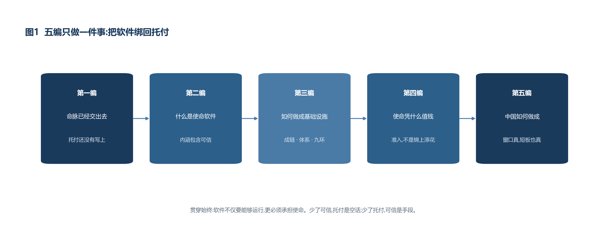
软件不仅要能够运行，更必须承担使命
这句话听起来近乎常识。但 NIST 在2026年4月15日的那次决定提醒我们，它目前还不是现实。让它成为现实，是一项需要理论、技术、产业与制度共同参与的工程。从 Therac-25 那位工程师所面对的问题开始。
第一编 命脉已经交出去，托付还没有写上
Therac-25 已经把问题放到了桌上:一次从硬件互锁到软件保证的托付转移，以及它后来如何变成无法被理解、也无法被及时承认的伤害。软件接过了剂量，却没有接过可被检查的绳子。行业的问题并非始于此案，但从它开始，这件事已经无法被写成质量事故。
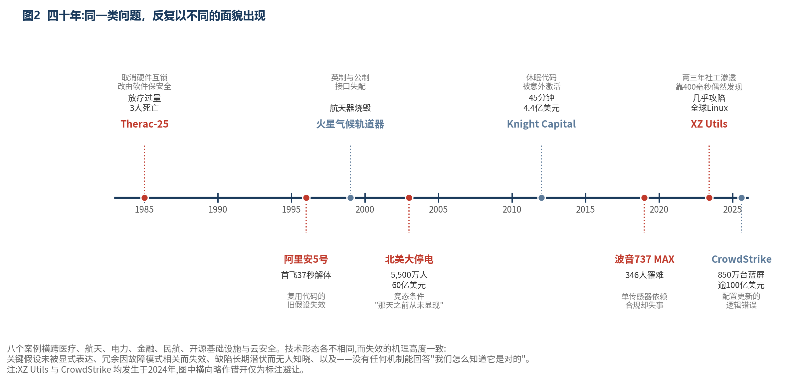
第一章 会造软件，不等于拿得住软件
「测试可以表明缺陷存在，永远不能表明缺陷不存在。」
——艾兹格·迪杰斯特拉(Edsger W. Dijkstra)，《结构化程序设计札记》，1970
软件产业最擅长的自我安慰，就是把测试报告当成赦免符。测过了，就等于可信了;没崩过，就等于安全了;安全了，就等于还在执行托付。迪杰斯特拉半个世纪前切断了第一条退路:测试只能证明你抓到过虫子，不能证明房子里已经没有虫子。今天的产业把这条警告当成古董，一边把电网、清算和剂量交给软件，一边用通过率给自己壮胆。需要追问的不是产业有多大，而是:在这份壮胆底下，软件还绑在哪一件托付上，论证又覆盖了多大一块真实行为。
中国已经拥有一个15万亿元级的软件产业。这是一个了不起的成就。但成就不能代替追问:在这15万亿元里，有多少软件能够真正回答“它还在执行哪一件托付”?有多少关键系统，一旦停掉，会让一座城市、一条铁路、一套清算跟着停?产业规模证明我们会造软件。它不能证明我们拿得住软件。
账面上的繁荣
2026年1月30日，工业和信息化部运行监测协调局发布了2025年软件和信息技术服务业的运行数据。数字是清晰的:全年软件业务收入154,831亿元，同比增长13.2%;利润总额18,848亿元，同比增长7.3%;软件业务出口627.3亿美元，同比增长7.7%，增速连续十个月保持正增长。分领域看，信息技术服务收入106,366亿元，占全行业68.7%，增长14.7%;软件产品收入32,361亿元，占20.9%，增长10.4%;嵌入式系统软件13,869亿元，增长9.3%;信息安全产品和服务2,235亿元，增长6.7%。在软件产品之下，工业软件3,330亿元，增长9.7%;基础软件2,146亿元，增长11.1%。在信息技术服务之下，云计算与大数据服务16,230亿元，增长13.6%;电子商务平台技术服务14,855亿元，增长12.7%;集成电路设计4,421亿元，增长18.9%。区域上，东部地区占全国83.1%，长三角增长15.2%、占比28.9%，京津冀增长14.9%、占比26.7%。北京、广东、江苏、山东、上海居全国前五，上海以22.0%的增速领先。
2026年4月28日，在国务院新闻办公室的政策例行吹风会上，工业和信息化部副部长柯吉欣给出了另一组坐标:2025年全行业营收15.48万亿元，是2012年的6.2倍，年均复合增长率15.1%，行业从业人员超过1,100万人。他用了一个词来描述这个行业在服务业中的位置——“基石”。十三年增长6.2倍，年均复合增长率超过15%，一千一百万名从业者。以任何标准衡量，这都是一个庞大而充满活力的产业体系。
在这份成绩单里，有两个数字更值得看。基础软件收入2,146亿元，占15.48万亿元的1.39%。信息安全产品和服务收入2,235亿元，占1.44%。这两个数字加起来，不到全行业的百分之三。
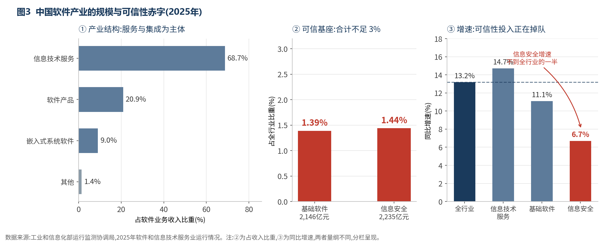
注意力错配:繁荣写在外卖上，缺口写在工业与国防上
结构问题还可以再往下拆一层。同一份工信部数据里，电子商务平台技术服务收入14,855亿元，增长12.7%;工业软件产品收入3,330亿元，增长9.7%。前者是后者的4.5倍。基础软件2,146亿元，信息安全2,235亿元，两项加起来还比不上电商平台技术服务的三成。这不是民间段印象，这是官方口径把产业自己的注意力写在了纸上:匹配消费、履约配送、挖掘点击，已经被做成了最大、最会讲故事、也最容易变现的软件门类;而让机床、船舰、电网、航电和武器系统真正跑起来的那一层，仍然又瘦又慢。 把上市公司的年报叠上去，反差更刺眼。3腾讯2024年总收入6,603亿元，其中增值服务3,192亿元、营销服务1,214亿元、金融科技及企业服务2,120亿元。美团2024年收入3,376亿元，同比增长22%——一家本地生活平台一年的营收，已经与全国工业软件产品收入相当。阿里巴巴2024财年收入9,412亿元，其中淘天集团4,349亿元。拼多多2024年收入约3,938亿元。这些公司解决过真实问题:支付、物流、匹配、即时配送，让数亿人的日常生活更便宜、更快。我们不否认这份成就，也不把消费互联网写成原罪。 要指控的是错配。点餐、外卖、社交、短视频和用户画像，已经被做到全球第一梯队;CAD、CAE、EDA、工业操作系统、嵌入式控制、国防科技工业软件，却仍大量仰赖外部工具链。公开研究对研发设计类工业软件国产化率的估计多在一成上下，高端市场长期由外资把持;经营管理类反而好看一些。2024年9月，工业和信息化部办公厅印发《工业重点行业领域设备更新和技术改造指南》，提出到2027年完成约200万套工业软件和80万台套工业操作系统更新换代，覆盖石油、化工、航空、船舶、钢铁、汽车、医药等命脉行业。政策语言已经把缺口写成了任务。产业日常却仍更愿意把最聪明的人、最贵的算力和最响的叙事，投进下一轮补贴、下一轮推荐和下一次停留时长。 国防科技工业已被《关键信息基础设施安全保护条例》列为保护对象。立法承认它由软件运行。可是公开市场上看得见的软件繁荣，很少长在这一侧。不是因为军事软件应当登广告，而是因为能够支撑它的工业软件、嵌入式软件、实时控制与可信执行能力，本来就应当从民用高可靠领域长出来。今天的情况是:民用侧最赚钱的部分在优化点餐路径，高可靠侧最该积累的部分仍在补进口清单。一个把最强软件能力用来预测你下一杯奶茶的产业，却在机床、舰机和指挥链上拿不出对等的产品，这不是市场分工，这是国家竞争力的透支。 虚假的繁荣，不是没有创造价值，而是把价值创造错当成了国家能力。 消费互联网的繁荣是真的。把它误认成软件强国，是假的。第十一章会把这条错配放到国际形势里再写一遍:战场已经先于市场，把竞争换成了软件与智能。
命脉:国家已经把自己交出去了
有人可能会说:软件产业已经运行了几十年，金融在跑，电网在跑，高铁在跑，城市在跑。既然它们都在跑，可信性的问题是不是被夸大了?这个质疑值得认真对待，它包含着一个正确的观察:现有的软件体系确实有效。人类工程史上很少有哪个领域，能够在如此高的复杂度下维持如此高的可用性。这是几代软件工程师的功劳，本书对此抱有真诚的敬意。但“它们在跑”与“我们知道它们为什么可以被信任”，是两个不同的命题。前者是一个经验观察:到目前为止，没有出大问题。后者是一个论证要求:我们能够说明，在什么条件下、基于什么理由、在何种边界内，这个系统的行为是可预期的。
工程史上一次又一次地表明，只有前者而没有后者是危险的。因为“到目前为止没出问题”这个观察的有效性，严格依赖于未来的运行条件与过去相似。而软件世界正在发生的，正是运行条件的根本变化:系统规模在扩张，组件依赖在加深，AI 开始参与代码生成与决策执行，Agent 开始直接作用于现实世界。在条件发生根本变化时，基于历史经验的信心是最不可靠的一种信心。况且，“没出大问题”这个前提本身也需要检验。2026年的 Verizon 数据泄露调查报告中，漏洞利用首次超过凭证窃取，成为最主要的初始攻击途径——这是该报告十九年历史上的第一次。攻击者的主要入口，已经从“骗取人的凭证”转向“利用软件本身的缺陷”。软件自身的可信性，已经成为安全的第一战场。
更要紧的是，这个质疑把因果关系说反了。它们在跑，不是因为软件已经承担使命，而是因为现代国家已经没有第二套神经系统。软件一旦停，不是某个应用打不开，而是清算停、调度停、信号停、挂号停、支付停。
2021年9月1日起施行的《关键信息基础设施安全保护条例》，把公共通信和信息服务、能源、交通、水利、金融、公共服务、电子政务、国防科技工业列为保护对象。立法语言已经承认:这些系统不是“用了软件的行业”，它们就是由软件运行的行业。条例要保护的，不是机房里的机柜，而是机柜上那层决定开停、加减、放行与拒绝的程序。
把这八类拆开看，依赖是具体的、物理的、几乎不可降级的。电网的能量管理系统一旦告警静默，调度员面对的是一张假装正常的网——2003年北美大停电已经演示过这个画面。列车运行控制、连锁与调度，把间隔、速度与进路写成指令;汽车正在变成四个轮子上的代码，制动与转向的最终裁决在程序里。机场离港、空管与机载软件中任何一环出错，停的不是一个窗口，而是一条航线。银行核心、支付清算、证券撮合，账本本身就是软件。医院的信息系统与放射治疗控制，把诊断和剂量写成指令。政务、社保、医保与身份核验，公民与国家之间的接口已经数字化。水利枢纽、油气管道、城市供水的监控与数据采集系统，远程阀门的开闭不再经过人手。
中国信通院《中国数字经济发展研究报告(2025年)》给出了另一把尺子。2024年，中国数字经济规模59.2万亿元，占国内生产总值的43.8%，较上年提升1个百分点。国家统计局另行核算的“数字经济核心产业增加值”，2024年为140,891亿元，占国内生产总值的10.5%。两套口径不可相除:前者宽，把产业数字化带进了国民经济的近一半;后者窄，只算核心产业。无论用哪一把尺子，结论一样——数字活动已经不是经济的边角，而是经济本身的运行方式。软件是这种方式的执行层。
安德森的诊断在中国先应验在消费侧。支付、出行、点餐、社保查询和医院挂号，已经是社会生活的默认入口。中国人民银行《2025年支付体系运行总体情况》显示，当年银行处理电子支付业务3,197.21亿笔、金额3,623.20万亿元，其中移动支付2,314.64亿笔;支付系统全年处理业务16,242.16亿笔、金额12,807.07万亿元。账本、清算和钱包都是程序。公民与国家之间的接口——社保、医保、身份核验、税务与公积金——同样走软件。医院信息系统把挂号、影像、医嘱和收费串成一条链;链断了，病房还在，诊疗停。兰登·温纳1980年问过:人工制品有没有政治?有。它分配谁能走、谁必须等、谁的账户先被冻、谁的告警先被静默。软件一旦成为唯一通道，它就已经在分配权力。
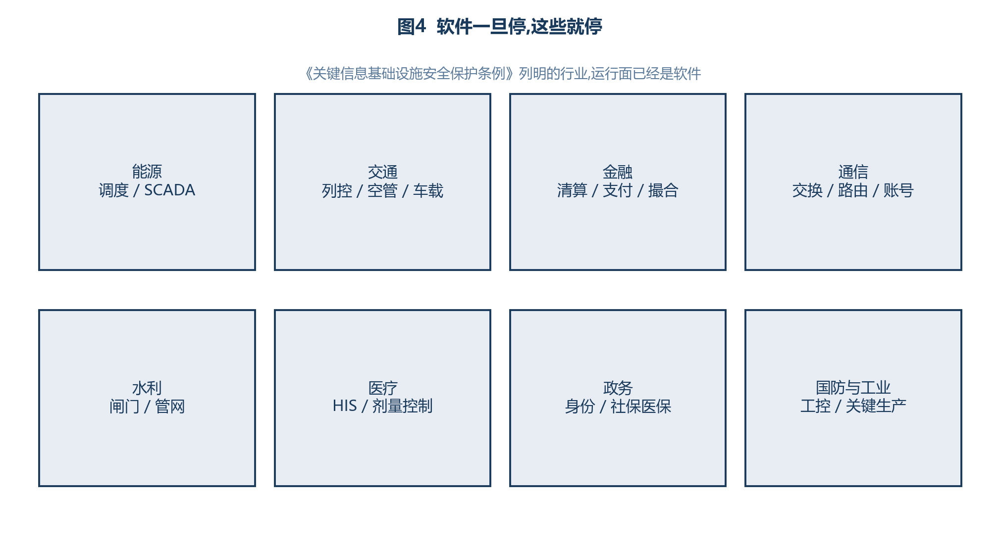
民航把同一件事做得更早，也做得更规矩。机载软件的适航符合性依据是 RTCA 的 DO-178C 与 EUROCAE 的 ED-12C，按失效后果把软件分为 A 至 E 五个设计保证等级，A 级对应“灾难性”——软件异常可能导致飞机损失与人员死亡，要求最严。它的法律性质需要说准:美国联邦航空局第 20-115D 号咨询通告在正文里明确写着，本通告不是强制性的，也不构成规章;DO-178C 只是一种“可接受的符合性方法”。一份不强制的文件成为全球民航事实上不可绕过的门槛，恰恰证明了本书要主张的东西——软件的可信性可以被工程化、被分级、被第三方审查。而中国民航自己的对应文件，是 2000 年 1 月颁发的咨询通告 AC-21-02《机载系统和设备合格审定中的软件审查方法》，它在民航局航空器适航审定司近年公布的现行有效文件目录里仍然在列。审查照做，尺子是引进的。第十一章会回到这件事:规范的话语权归谁，是比国产化率更要紧的一个指标。
医疗的依赖是另一种类型:它不提供降级运行的选项。国家卫生健康委等部门《2023年度全国三级公立医院绩效监测分析情况的通报》给出的数字是，全国三级公立医院电子病历系统应用水平达到4级及以上的占87.99%，较上年提升4.96个百分点;而达到6级、即实现全流程医疗数据闭环管理与高级医疗决策支持的，只有51家，占2.36%。同一份通报还写了一句不客气的话:医院内部各应用系统间“信息孤岛”现象仍然明显。两个数字要一起读:几乎所有三级公立医院的日常诊疗都已经跑在电子病历系统上，停机就是停诊;而能把数据闭环起来、支撑高级决策的不到四十分之一。普及率是高的，成体系的程度是低的——依赖已经完成，论证还没有开始。制度并没有缺位。国家药监局器审中心2022年3月同批发布《医疗器械网络安全注册审查指导原则(2022年修订版)》与《医疗器械软件注册审查指导原则(2022年修订版)》，把自研软件与现成软件一并纳入注册审查:器械只要具备电子数据交换、远程访问与控制、用户访问三者之一，就要做网络安全论证。这是“软件供应链进入法定审查范围”的中国证据。但要看清它的效力——这是指导原则，是审评尺度，不是强制性国家标准，也不带罚则。
代价可以一直算到人身上。2024年6月，为伦敦东南部多家英国国民保健制度信托与全科诊所提供病理检验服务的 Synnovis 遭勒索软件攻击，病理与血液检验大面积中断，两家信托合计推迟一万余例急性门诊预约与一千七百余例择期手术，约两万份血样因无法及时检测而降解销毁。2025年6月，King's College Hospital NHS 基金会信托确认，一名患者在攻击期间意外死亡;其患者安全事件调查认定，死亡由多项因素共同导致，其中包括因网络攻击影响病理服务而导致的血液检验结果长时间等待。措辞必须照抄:调查说的是“多项促成因素之一”，不是“勒索软件杀死了一名患者”。即便按最保守的读法，这仍然是软件不可用第一次被一家医疗机构以正式调查的形式写进一份死亡原因。而被攻破的不是医院，是医院的第三方检验服务商——第二章会说明为什么这不是巧合。
再往上游一层，依赖换了形状:不是会停机，是有一把开关握在别人手里。研发设计类工业软件的国产占比，目前最可靠的公开出处是工业和信息化部电子第五研究所《2023年我国工业软件产业发展研究报告》——国产软件市场占比不足一成。同一份报告还给出另外两句:生产制造类的国产产品主要集中在中低端，高端领域外资具有绝对优势;经营管理及运维服务类的国产市场占有率相对较高。三句必须一起引，否则“工业软件全线失守”就只是一句偷懒的口号。这是部属研究机构的市场研究估计，不是国家统计口径，也不能拿去做除法。而依赖真正的锋利处不在份额，在授权。2020年6月，哈尔滨工业大学与哈尔滨工程大学被列入美国商务部实体清单之后，两校校园版 MATLAB 的授权失效、无法激活;MathWorks 在给用户的邮件中说明，由于美国政府新近施加的法规，公司被禁止向两校学生提供技术或客户支持。范围要写准:受影响的是清单之内的机构，不是“中国高校被全面禁用”;被停的是技术支持与授权服务，不是远程删除已经装好的软件。正因为它精准，这件事才更该被记住——断供不必断掉任何硬件，只需要停掉一段许可证的续期。软件在这里不是产品，是许可;许可在别人手里，主权就有一段是虚的。
中国的重点行业并非没有意识到这一点。恰恰相反，法规已经把软件写成了直接的规制对象，只是产业的注意力还没有跟上。
电力是最清楚的例子。2024年12月，国家发展改革委公布新修订的《电力监控系统安全防护规定》(2024年第27号令)，自2025年1月1日起施行，2014年第14号令同时废止。规定坚持“安全分区、网络专用、横向隔离、纵向认证”十六字原则，把防护区域按安全等级划分为生产控制区与管理信息区，并明确禁止任何穿越生产控制区与管理信息区、安全接入区之间边界的通用网络服务。真正值得记下的是新增的那几条:除安全免疫、态势感知、动态评估与备用应急之外，规定要求运营者以合同条款的方式对电力监控系统供应商提出安全要求，并由国家电力调度控制中心牵头组建电力监控系统专用安全产品管理委员会。把这段话翻译成本书的语言:调度电网的那层软件，已经被要求交代它从哪里来、由谁供给、凭什么可以进入控制区。第二章会说明，这正是“从声明走向证据”的同一条路径——只不过在电力行业，它先以行政规章的形式落了地。
汽车把同一件事写得更直白。市场监管总局《关于2025年全国汽车和消费品召回情况的通告》显示，2025年我国实施汽车召回190次，涉及车辆684.6万辆;其中通过远程升级(OTA)实施的召回13次，涉及车辆175.6万辆，占全年召回总数量的25.7%。四分之一被召回的车辆，是靠向车上推送一次软件更新修好的。同一份通告还给出另一个数字:当年接收企业报告的 OTA 升级1904次、涉及1.4亿辆次，升级次数较上年增长38%。一年之内，近两千批次的行为变更被以工业规模推送到正在道路上行驶的物理系统里。缺陷原因的分布同样值得记下:因设计原因召回73次，涉及车辆421.5万辆，占召回总数量的61.6%，设计原因仍是最主要的缺陷原因。问题不在车间，在上游——在意图被写成规范、规范被写成代码的那一段。监管已经跟着改口径:工业和信息化部与市场监管总局要求对智能网联汽车的 OTA 升级实施分类管理，涉及自动驾驶功能的升级须取得相应许可，为消除产品缺陷而实施的升级按召回管理的要求办理。一次推送，已经被正式承认为一次产品变更。
这两个行业的共同点不是它们更危险，而是它们更诚实:法规已经承认软件是被规制的对象，承认一次更新就是一次变更，承认供应商必须交代来源。缺的是把这些要求变成可以自动出示的证据，而不是又一叠可以填写的表格。 中国的情况不是“还没有严重到这一步”，而是体量更大、耦合更密、可替代性更低。十五万亿元软件产业之所以被称为基石，不是修辞。基石的意思是:抽掉它，上层的制造、能源、交通与金融都会跟着塌。开头那两个百分数——基础软件1.39%、信息安全1.44%——在这个背景下不再只是产业结构问题。它是国家风险结构问题:命脉在软件上，而软件的地基与围墙加起来不到百分之三。 一个把电网、铁路、支付和医院交给软件的国家，却把软件可信性当作行业内部的质量议题，这不是谦虚，这是误判。
病灶在内部:工期、外包与验收即结束
供应链把不可信从外部运进来。软件管理则在内部把不可信生产出来。二者经常被分开讨论，仿佛一个是安全问题、一个是项目管理问题。它们是同一件事的两面:没有人被要求、也没有人被允许，为系统的行为出示可检验的论证。
当代软件生产的主流组织方式，是项目制。需求被写成一份在签合同那天就过时的文档;工期被压缩到刚好装不下测试;验收以“功能点可演示”为通过条件;项目组在验收次日解散，知识留在已经离职的人口中。下一次变更由另一批人在另一份合同里进行。于是出现一种制度化的失忆:系统还在跑，但已经没有人能够回答它为什么这样跑。
1992年伦敦急救调度系统刚换上新的计算机辅助派车，呼叫就开始堆积。官方调查后来确认:软件、组织与培训一起，把调度变成了一条看不见的队列。它不是“英国的 Horizon 预演”，但它已经写出同一句:当系统输出成为唯一可见的现实，现场的人就失去了反驳的资格。外包把这条失忆链拉得更长。甲方提出需求，总包拆成子系统，分包再拆成模块，最底层的代码可能经过三层转包。每一层都在合同边界上优化自己的交付物，没有一层拥有系统级行为的责任。出了问题，甲方说需求是清楚的，乙方说变更没签字，丙方说接口是对方定的。英国邮政 Horizon 不是单纯的技术事故，它是这种责任结构被推进法庭之后的样子:系统输出被当作证据，而能够检验系统的人，与承担罪名的人，不是同一群人。完整经过见本章后文。
中国并不缺少同一结构的本土版本。2020年2月23日，SaaS 公司微盟的一名运维人员删除了生产数据库，约300万商户的小程序与营销系统突然空白。恢复用了数日，股价暴跌，损失以人民币计以亿计。事后被写成“个别员工的极端行为”。这个写法很方便，也完全没有击中要害:一套承载数百万商户生意的生产库，删除权限可以落到一个人手里，备份与隔离在关键时刻不够用，事故之后行业仍把“删库跑路”当成段子而不是生产制度的指控。个别员工能造成系统性停摆，说明系统从未被设计成可追问的。2013年8月16日的光大证券异常交易把同一病灶写进了资本市场。证监会认定的事实里，有一段与代码无关:策略交易系统的需求由交易员提出，程序员一人开发测试，系统实盘运行不足十五个交易日。一套能在两秒内向市场发出数十亿元级委托的软件，没有经过独立验证，也没有被纳入公司风控。这不是“手滑”。这是把不可逆的市场行动权，交给一套从来没有人为它出示过论证的软件，然后在指数已经跳动之后，再讨论这算不算人为差错。失效的机理与追责的落点，见本章后文。
考核完成了剩余的工作。功能点数、故事点、准时上线率、缺陷关闭率——这些指标衡量的是运动，不是论证。一个按期上线、缺陷单清零、却无人能说明“这条规则为何仍然有效”的系统，在项目报表上是成功的。测试被当成工期缓冲:时间够就测，不够就砍。代码审查被当成礼仪:时间够就看，不够就过。配置与脚本因为“不是代码”而逃过审查。生产环境的一次热修复，可以绕过全部质量门禁。
能力成熟度、等保、密评，在最好的情况下提供了过程的骨架。在最坏的情况下，它们提供了另一套可以填写的表格。表格可以被填得很漂亮，而系统的行为论证仍然不存在。第二章将表明，美国联邦软件供应链从“自我声明合规”走向“必须证明合规”，用了将近四年。中国软件工程的日常里，声明代替证据的情况并不更少，只是更少被写成行政令。
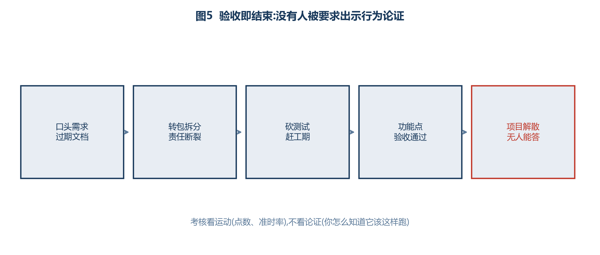
覆盖率、能力、结构
追问可以收成三层。第一层是覆盖率。 在这15万亿元的软件中，有多少能够回答“为什么可以相信它”?不是“它有没有通过测试”，而是“我们能否给出一个论证，说明在何种条件与边界内，它的行为是可预期的”。以本书后续的标准衡量，能够给出这种论证的软件，在总量中占比极小。第二层是能力。 即使我们想要为更多软件建立这种论证，我们有这个能力吗?全球最权威的漏洞治理机构已经在制度上承认，它无法再对每一个漏洞进行分析。 第三层是结构。 我们的产业结构、投入结构、技术结构，是否支持可信性的积累?基础软件1.39%、信息安全1.44%且增速落后、以定制服务为主体的结构——这些都指向同一个结论:当前的结构不利于可信性的积累。
校验来得太晚，罚单来得太准
法规已经把软件写成规制对象，这是好消息。坏消息是:当软件真的失效时，现有制度能抓住的东西，和真正需要被抓住的东西，不是同一件。中国资本市场提供了一个可以逐句核对的样本。
2013年8月16日11时05分，光大证券在进行 ETF 申赎套利交易时，因程序错误，其策略交易系统以234亿元巨量申购180ETF 成份股，实际成交72.7亿元，引起沪深300、上证综指等大盘指数和多只权重股短时间大幅波动。两个数字不能混:234亿元是错误生成、通过校验并进入上海证券交易所系统等待成交的委托金额，不是成交额;实际成交72.7亿元，其余部分按交易所预设的“最优五档即时成交剩余撤销”规则被撤销。
真正需要被反复端量的，是证监会通报里那段关于机理的描述:错误生成的订单先后共234亿元陆续通过校验进入交易所系统等待成交;直到先成交订单的结果返回订单执行系统、账户资金余额的实时校验显示为负数时，账户可用资金额度校验才发挥作用。
请把这句话读第二遍。校验是有的。资金额度这道关是存在的、被写下来的、也确实运行了。它只是没有绑在扣动扳机的那个位置上——它绑在成交回报之后。于是一套本应拦住越权下单的检查，变成了一套统计已经发生的越权的账房先生。第八章会把这条要求写成架构语言:检查必须不可绕过，而不可绕过的意思是它必须处在行动的路径上，而不是行动的下游。第一章能给出的只是一句更朴素的判断:检查在场，并不等于检查在位。
证监会对整件事的定性，同样值得原文引用:“这一事件是我国资本市场建立以来首次发生的一起因交易软件缺陷引发的极端个别事件，对证券期货市场造成的负面影响很大。”两个词要一起看。“交易软件缺陷”——监管机构以正式文书的形式承认，一段程序的错误可以在几分钟里扰动一个国家的大盘指数，这个承认比任何论述都硬。“极端个别事件”——这是2013年的判断，当时它是诚实的。十三年之后，它已经不成立了:一次配置更新可以让全球航空、医院与银行同时停摆;一个航行通告系统的数据库文件被承包商在同步作业中误删，就能让一个国家的航班全部停飞，而联邦航空局明确说明这不是网络攻击;四分之一的汽车召回靠向车上推送一次软件更新完成。软件缺陷引发系统性后果，今天不是极端个别事件，是常规风险。而制度语言还停在“个别”上。
更值得追问的是责任落在了哪里。证监会《行政处罚决定书》〔2013〕59号认定的违法行为，是光大证券当日下午将所持股票转换为180ETF、50ETF 并卖出，以及卖出股指期货空头合约 IF1309、IF1312 共6,240张，构成内幕交易;据此没收违法所得87,214,278.08元并处五倍罚款，罚没款合计523,285,668.48元，四名责任人被终身证券市场禁入，时任董事会秘书因信息误导另被处罚。通报同时注明本案的特殊性:该内幕交易主观上有对冲风险、调剂头寸、降低交易结算风险的因素，不同于一般内幕交易案件，在我国市场没有先例。
所以这五亿多元罚的是什么?罚的是上午的软件缺陷发生之后、下午那批交易。不是罚“软件为什么会这样失效”。这个区分不是学术洁癖，它指向制度的真实形状:对“人在知情后做了什么”，法律有明确的构成要件、明确的证据要求、明确的罚则;对“这套软件为什么会让234亿元的错误委托通过校验、为什么资金校验滞后于成交回报、为什么它在实盘运行不足十五个交易日就被交予不可逆的市场行动权”，没有任何一部规范要求当事人出示工程证据，也没有任何一个机关有权照单追究。
于是出现一种不对称:能被追责的，是人的动作;真正造成后果的，是软件的结构。前者有卷宗，后者没有。这不是监管机构不作为——2013年的证监会已经把机理写进了公开通报，这在国际同类事件中都算清楚。缺的是下一步:把“检查是否绑在执行点上”“这段代码由谁验证、依据什么验证、验证结论如何被保存”变成可被调取、可被质证的证据，而不是事后由调查组从数百万行代码里刨出来的一次考古。第二章要讲的美国联邦软件供应链从“自我声明”走向“必须证明”，讲的就是这一步。
一个国家可以把交易软件缺陷写进正式文书，却拿不出要求它出示工程证据的制度，这不是宽容，这是没有工具。 罚单开得越精准，那块开不出罚单的空白就越显眼。
缺陷范式的终结
“Bug”这个词的字面意思是虫子。1947年，哈佛大学 Mark II 计算机的操作日志里贴着一只从继电器中取出的飞蛾，旁边写着“第一个被发现的真实 bug”。这个故事的流传本身说明了一件事:在软件工程的童年时代，“故障”被理解为一种可以被定位、被取出、被修复的具体物件。围绕这个隐喻，软件工程建立起了一整套宏伟的体系。编程语言让人的意图能够被精确表达。类型系统在编译期拦截整类错误。编译器把高层语义正确地翻译为机器指令。软件测试通过输入输出的比对发现偏差。静态分析在不运行程序的情况下推断其性质。动态分析在运行时捕获异常行为。代码审查引入人的判断作为交叉检验。配置管理保证构建的可重复性。形式化验证提供数学级别的保证。DevOps 与 DevSecOps 把这些能力嵌入持续交付的流水线。 这是人类软件工程最伟大的成果之一。它的有效性有目共睹:今天一个普通程序员写出的代码，其平均质量远高于三十年前的同行——不是因为程序员更聪明了，而是因为工具与方法承担了大量原本需要人力承担的工作。本书对这套体系抱有充分的敬意，并且认为它是使命软件体系不可替代的地基。 后文所有关于“传统软件工程不够了”的论述，都应当在这个前提下被理解:不是它错了，而是它面对的问题变了。
预期本身已经不确定
Bug 范式有一个隐含前提:存在一个明确的、正确的预期行为，而 Bug 是对这个预期的偏离。测试之所以有效，是因为我们知道给定输入应该得到什么输出。类型检查之所以有效，是因为我们能够声明什么样的值是合法的。形式化验证之所以有效，是因为我们能够写出规范。这个前提在很长时间里是成立的。当软件的任务是“计算这个矩阵的特征值”“把这个文件从 A 传到 B”“在这个列表中查找符合条件的记录”时，预期行为是清晰的，偏离是可判定的。但今天大量的软件，处在一个完全不同的处境中。 考虑一个信贷审批系统。它的“正确行为”是什么?它应该批准哪些申请、拒绝哪些申请?这个问题的答案不在代码里，而在业务规则、监管要求、风险偏好、历史数据的分布，以及一系列从未被完整写下来的判断之中。当这个系统拒绝了一个申请，我们如何判断这是一个正确的拒绝还是一个 Bug?考虑一个工业控制系统。它读取传感器数据、判断设备状态、决定是否停机。当它在某个边界条件下选择继续运行，而事后证明应该停机时，问题出在哪里?可能出在代码，可能出在传感器数据的质量，可能出在阈值规则的设定，可能出在规则之间的冲突，也可能出在没有人想到这个边界条件。 考虑一个基于大模型的 Agent。它读取工单、查询数据库、调用 API、修改记录、发送通知。当它执行了一个不该执行的操作时，这是 Bug 吗?代码可能完全按照设计运行，模型可能完全按照训练表现，但结果依然是错的。在这些场景中，“有没有 Bug”这个问题本身已经失去了清晰的含义。 不是因为我们不关心正确性，而是因为“正确”的定义已经不再驻留在代码之中。
九个追问
在讨论完整的追问之前，有一个案例值得完整地讲述。它说明当“我们不知道它是否仍在执行使命”这件事发生在一个足够重要的系统上时，后果可以有多严重。
1999年，英国邮政引入了一套名为 Horizon 的信息系统，由富士通开发，取代此前以纸质为主的流程。在1999至2000年推广时，它是欧洲最大的非军用信息技术项目。
系统上线后不久，各地的邮政分局长开始报告账目上出现无法解释的短缺。按照与邮政的合同，分局长要对这些损失承担个人责任。于是他们中的一些人自掏腰包填补差额，另一些人则被指控盗窃或欺诈。
2000年至2015年间，约900名分局长基于 Horizon 系统提供的证据被判金融犯罪。后来的调查发现，近1,000名分局长遭到错误起诉，导致错误监禁、财务破产与深重的个人苦难。至少13人的自杀与此案有关。英国刑事案件复核委员会称之为它所见过的最广泛的司法不公，是英国法律史上最大的一系列错误定罪。
这个案例中最值得本书注意的，不是系统有缺陷——任何系统都可能有缺陷。值得注意的是证据如何变成了伤害。系统输出的数字被直接当作司法证据，而没有任何机制能够检验它。当分局长说“我没有拿这笔钱”时，他是在质疑一个他无法访问、无法审计、无法重建的系统。举证责任完全落在了他这一边。富士通知道系统存在会导致无法解释损失的错误，却在起诉分局长的法庭上作证称 Horizon 稳健可靠。2024年的公开听证会上，富士通欧洲区负责人承认公司错失了阻止分局长被定罪的机会。上诉法院在撤销定罪时，Holroyde 大法官的措辞极为严厉:邮政“知道 Horizon 的可靠性存在严重问题”，负有“明确的调查义务”，却始终坚称它稳健可靠。法院以“起诉是对公众良知的冒犯”为由准许了39项上诉。
到最终清算时，赔偿总成本升至约20亿英镑，另有约1万人有资格索赔——他们曾被迫自掏腰包填补那些从未发生过的损失。
请注意这里的因果链:一个软件缺陷，经由一套无法被检验的证据机制，变成了近千人的刑事定罪。缺陷本身或许只是一个技术问题;而“没有人能够检验它”才是那个致命的环节。
这就是本书所说的“不确定性”在现实中的样子。它不表现为系统崩溃，而表现为系统给出一个看起来完全合理、实际上错误、且无法被质疑的答案。
如果“有没有 Bug”不够，那么完整的追问是什么?我们认为，现代软件系统的可信性至少涉及九个层次的问题。代码可信吗? 代码是否正确实现了需求?这是传统软件工程的核心问题，也是唯一一个已经有成熟工具体系的问题。但即使这一层，在 AI 生成代码大规模进入生产之后也出现了新的裂缝——第三章将用实证数据说明这一点。数据可信吗? 数据来自哪里?是否完整?是否真实?是否最新?一个完全正确的算法，作用在错误的数据上，会产生错误的结果，而且这种错误往往比代码错误更难发现——因为程序不会崩溃，它会安静地给出一个看起来合理的错误答案。 软件供应链可信吗? 第三方组件是否安全?开源软件是否存在未知漏洞?构建过程是否被篡改?现代软件的绝大部分代码不是自己写的。第二章将表明，这个问题的严重程度远超一般认知。知识可信吗? 系统所使用的知识是否正确?谁定义了这些知识?什么时候定义的?现在还成立吗?一个医疗辅助系统内嵌的用药禁忌规则，如果来自五年前的指南，那么它的每一次“正确运行”都可能是错的。规则可信吗? 业务规则是否完整?规则之间是否存在冲突?当两条规则给出相反的指示时，系统如何裁决?这个裁决本身是被设计的，还是偶然形成的?模型可信吗? 模型为什么得出这个结果?它的适用边界在哪里?在分布外的输入上它会如何表现?它的表现是否随时间漂移? 决策可信吗? 系统为什么采取这个决策?这个决策依据了哪些数据、哪些知识、哪些规则?如果依据发生变化，决策会如何变化?行动可信吗? Agent 为什么执行这个动作?它有权执行吗?这个动作可以撤销吗?执行的后果是什么?系统可信吗? 上述所有环节组合起来，在复杂的真实环境中，整个系统是否仍然按照预期运行?各个环节的可信性能否复合?这九个追问中，只有第一个是传统软件工程的主场。其余八个，要么缺乏成熟工具，要么根本不在软件工程的传统视野之内。
从缺陷到不确定性
上述九个追问揭示了一个范式性的转变。在 Bug 范式中，问题的形态是缺陷(defect):存在一个确定的正确行为，系统偏离了它，我们要找到并修复这个偏离。问题是二元的——有 Bug 或没有 Bug。修复是收敛的——每修复一个，总数就减少一个。在今天的处境中，问题的形态是不确定性(uncertainty):我们不确定系统的行为是否符合预期，因为我们甚至不完全确定预期是什么;我们不确定它使用的数据、知识、规则是否正确;我们不确定它在未曾遇到的情况下会如何表现;我们不确定各个环节的问题会如何相互作用。这个转变改写了工作的性质。测试能够验证“给定输入产生了预期输出”，但当预期本身不确定时，测试只能验证“系统的行为与我当初写测试时的理解一致”——这是一个远弱得多的保证。缺陷可以被逐个消灭，不确定性不能。你不能“修复”一个不确定性，你只能通过增加证据来降低它。可信性工作因此从“修 Bug”变成了“建立论证”。责任也跟着弥散:当一个系统给出错误的决策，而错误来源于五年前某位业务专家口述、由某位工程师理解后写入配置文件、经过三次需求变更后与另一条规则产生了未被察觉的冲突——这个错误属于谁?属于代码吗?属于知识吗?属于流程吗?更关键的是，我们失去了“知道自己不知道”的能力。一个 Bug 至少会以某种方式暴露:程序崩溃、结果明显错误、测试失败。而一个基于错误知识做出的决策，可能在很长时间内看起来完全正常。最危险的不可信，不是那些已经显露的问题，而是那些我们无从知晓的问题。
2003年8月14日的北美大停电，为这个判断提供了一个精确的注脚。
那天下午，俄亥俄州北部一条高压输电线因大电流受热下垂，碰到了修剪不足的树木而跳闸。正常情况下，这会在 FirstEnergy 的控制室触发告警。但告警没有响。
原因是通用电气 XA/21 能量管理系统的告警处理器中存在一个竞态条件，且系统缺乏自诊断功能。当多个进程同时访问同一份数据时，本应有一个获得优先权，而软件没有正确处理这种争用。故障使本应被删除的数据被保留下来，性能持续下降;备份系统受到同样的影响。告警处理从下午2:14 起完全停止，而运行人员对此一无所知。未处理的事件不断排队，半小时内，承载告警进程的服务器在积压负荷下崩溃。
最终，这次级联故障影响了约5,500万人——安大略南部与中部的1,000万人，以及美国八个州的4,500万人。电力用户的损失估计达60亿美元。
而对本书论证最重要的，是事后 GE 发言人的一句话。这个缺陷是在停电后数周，由 GE 与承包商进行的密集代码审计中发现的，定位它花了数周时间、翻遍了数百万行代码与数据。发言人说，这个缺陷“在那一天之前从未显现”。
这正是不确定性的本质。系统运行了很多年，从未出错，所有的经验证据都支持“它是可靠的”这个结论。而那个缺陷一直在那里，等待一组恰好的并发条件。在那一天之前，没有任何人有任何理由怀疑它——这不是因为大家不够警惕，而是因为没有任何机制能够回答“我们怎么知道告警系统会在需要时工作”这个问题。
最危险的不是有缺陷，是不知道
“从 Bug 到'我们不知道它是否仍在执行使命'”——这个转变值得再强调一次，因为它是全书的问题起点。软件最大的危险，不是它有 Bug。有 Bug 是正常的，人类工程史上从没有过无缺陷的复杂系统，我们早已发展出与缺陷共存的方法论——冗余、降级、隔离、快速恢复。软件最大的危险，是我们不知道它是否仍在执行使命，并且缺乏判断这一点的手段。这两者的区别是根本性的。一个已知有缺陷的系统，可以被谨慎地使用:我们知道在哪些场景下不能依赖它，知道需要什么样的人工复核，知道出问题时该往哪里查。而一个可信性未知的系统，我们无法谨慎地使用它——因为我们不知道该在哪里谨慎。 不确定性的危险，不在于系统会出错，而在于我们无法合理地分配自己的信任。 我们要么过度信任(把不该交给它的事情交给它)，要么过度不信任(让技术投入无法转化为实际价值)。而在实践中，这两种错误往往同时发生:在最需要审慎的地方过度信任，在最应该放手的地方过度保守。
对付不确定性，只能靠论证
如果问题的形态从缺陷变成了不确定性，那么解决问题的形态也必须相应改变。对付缺陷，我们需要的是检测与修复的工具:测试、调试、静态分析。这些工具的目标是找到偏离并消除它。对付不确定性，我们需要的是论证与证据的体系:能够说明这个系统为什么可以被信任、在什么边界内可以被信任、依据什么可以做出这个判断。这个体系的目标不是消除不确定性(那不可能)，而是把不确定性变成可以被认知、被度量、被管理的东西。这就是为什么本书反复强调“证据”(evidence)这个概念。证据不是测试通过的记录，而是一个可被检验的论证链条:这个决策依据了哪些知识，这些知识来自何处、何时被确认;这个行动经过了哪些规则的检查，这些规则由谁定义;这个执行产生了什么后果，后果是否与预期一致。 可信不是一种状态，而是一种可被出示的论证。 这个定义将在第四章被更严格地展开。
认知复杂度:我们与系统之间的裂口
先看最直观的一面。早期的软件可能只有几千行代码。这个规模有一个重要特征:一个人可以读完它。 一个熟练的工程师，花上几天时间，能够把整个系统的全部逻辑装进脑子里。当出现问题时，他可以在头脑中模拟程序的执行，推断出问题所在。后来是几万行。这时一个人已经读不完了，但一个小团队可以。团队中每个人负责一部分，通过设计文档与接口约定协调彼此。系统的整体行为，存在于团队的集体理解之中。再后来是几百万行、几千万行。这时任何个人或团队都无法完整理解系统。Linux 内核有数千万行代码，没有任何一个人知道它的全部。现代浏览器、数据库、操作系统都处在这个量级。 这个规模变化不是突然降临的，产业很早就给它起过名字。1968年北约软件工程会议把“写不完、测不完、交不了”称作软件危机;布鲁克斯后来用 IBM OS/360 的经验写成《人月神话》:加人不能按线性缩短工期，因为沟通本身会变成新的复杂度。世纪末的千年虫(Y2K)是一次被认真对待的规模演习——两年日期被写成两位，不是因为程序员愚蠢，而是因为存储曾经昂贵、规范曾经短视。那一次，政府与企业愿意付钱去改看不见的代码。2000年1月1日没有变成世界末日，常常被用来嘲笑当年的紧张。本书的读法相反:那是迄今少数几次，软件被当作文明基础设施来治理，而不是当作项目尾声的质量检查。紧张没有白费。白费的是，紧张过去之后，产业又把软件交回“能跑就行”。 这个规模变化带来的第一个后果是:系统的完整行为，不再存在于任何人的头脑之中。 它只存在于代码本身，而代码不会主动告诉你它在做什么。
软件不再是“一个程序”
但规模只是表象。真正的质变在于:现代软件系统已经不是一个程序，而是一个生态。一个典型的现代企业系统包含什么?操作系统，数据库，编译器与运行时，几百到几千个开源组件，若干第三方 SDK，云平台服务，内外部 API，数据管道与数据仓库，机器学习模型，越来越多的 AI Agent，以及散落在配置文件、数据库表、代码注释与人的头脑中的业务规则。这些成分之间的关系，不是“主程序调用子程序”那样的层级关系，而是一张网。数据在其中流动，状态在其中变化，决策在其中形成。这个转变的关键含义是:系统的行为不再由任何单一成分决定，而是由成分之间的交互决定。 这句话听起来抽象，但它有非常具体的后果。你可以逐个验证每一个组件都是正确的，而整个系统的行为依然是错的。因为错误可能产生于组件之间的假设不匹配:A 组件假设时间戳是 UTC，B 组件假设是本地时间;A 假设字符串已经过转义，B 假设没有;A 假设这个字段永远非空，B 在某个边界条件下会写入空值。这类错误在单元测试中不可见，因为每个单元都符合自己的规范。它们只在集成时暴露，而集成的组合数量随组件数量呈指数增长。穷举测试因此覆盖不了。
人与组织也在系统里
还有一层更深的转变。现代软件系统不只是技术成分的组合，它还包含了人与组织。梅尔文·康威在1967年提出的观察(后来被称为康威定律)指出:设计系统的组织，其产生的设计等价于组织的沟通结构。这个观察在今天有了新的含义——系统的可信性，也等价于组织的可信性结构。考虑业务规则这个成分。一条规则可能是这样进入系统的:某位业务专家在会议上口头说明;产品经理理解后写入需求文档;工程师理解需求文档后写成代码;三个月后业务发生变化，规则被口头修改;另一位工程师修改了代码的一部分，但漏掉了另一处;一年后，没有人记得这条规则的原始意图。在这个链条中，错误可以在任何一个环节产生，而且没有任何技术手段可以检测它们，因为从代码的角度看，一切都是自洽的。 再考虑知识的时效性。一个系统内嵌的行业标准、监管要求、工艺参数、安全阈值，这些都有其时效。但代码不会过期，配置文件不会自动失效。当外部世界变化了而系统没有变化时，系统会继续“正确地”执行已经过时的逻辑。这就是为什么本书说现代软件是一个社会—技术系统(socio-technical system)。它的可信性，不仅取决于技术成分是否正确，还取决于知识如何进入系统、如何被维护、如何被验证、如何被更新。而这些环节，目前几乎完全不在软件工程的工具体系覆盖之内。
三种复杂度
为了让讨论更精确，有必要区分三种不同性质的复杂度。第一种是本质复杂度(essential complexity)。这是问题本身固有的复杂性。一个航空调度系统必须处理天气、机组排班、机型限制、机场时隙、旅客中转、燃油经济性等多重约束，这些约束的相互作用是问题本身的属性，无法通过更好的设计消除。弗雷德里克·布鲁克斯在《没有银弹》中指出，本质复杂度是软件工程无法逃避的部分。第二种是偶然复杂度(accidental complexity)。这是实现过程引入的、原则上可以消除的复杂性。糟糕的抽象、历史遗留的兼容层、重复的逻辑、不必要的间接层。软件工程的很多进步——高级语言、垃圾回收、更好的抽象机制——都是在消除偶然复杂度。第三种，在本书看来需要单独命名的，是认知复杂度(epistemic complexity):不是系统本身有多复杂，而是我们对系统的了解有多不完整。 这三种复杂度的性质完全不同。本质复杂度是问题固有的，必须被承担。偶然复杂度是可以被消除的，应该被消除。而认知复杂度——它不是关于系统的属性，而是关于我们与系统之间关系的属性。同一个系统，对于完全理解它的人和对于不了解它的人，本质复杂度与偶然复杂度是相同的，但认知复杂度截然不同。现代软件真正的困境在于:本质复杂度在增长(因为我们让软件处理越来越复杂的现实问题)，偶然复杂度在被压缩(因为工具在进步)，而认知复杂度在爆炸性增长。我们越来越不了解自己所依赖的系统。这不是因为系统变得不可理解，而是因为它超出了任何个人或组织能够持有的认知容量。
信任本来就是一种认知状态
认知复杂度直接决定了可信性，原因在于:信任本质上是一种认知状态。说“我信任这个系统”，实质上是在说:“基于我对它的了解，我预期它在这些情况下会这样表现。”这个陈述的可靠性，取决于两个因素:我的了解有多准确，以及实际情况是否落在我了解的范围之内。当认知复杂度上升时，两个因素同时恶化。我的了解覆盖的范围在缩小(因为系统在扩张而我的认知容量不变)，而系统遭遇的情况在增多(因为它接入了更多的外部世界)。于是出现了一个危险的剪刀差:我们对系统的了解在相对下降，而我们对系统的依赖在绝对上升。这就是前文所说的“我们不知道它是否仍在执行使命”的根源。不是系统变坏了，而是我们对系统的认知跟不上了。
抽象、文档与测试都不够
面对认知复杂度，软件工程的传统方法有其局限。抽象与模块化是软件工程对付复杂度最有力的武器。通过定义清晰的接口，我们可以在不了解实现细节的情况下使用一个组件。这极大地降低了认知负担。但抽象有一个前提:抽象必须是可靠的。 当抽象泄漏时(Joel Spolsky 所说的“抽象泄漏定律”)，使用者必须了解实现细节才能正确使用。而在大规模系统中，抽象泄漏是常态而非例外:性能特征会泄漏，失败模式会泄漏，并发行为会泄漏，资源消耗会泄漏。更关键的是，抽象隐藏的是实现，而不是不确定性。 一个接口可以隐藏“这个函数如何计算结果”，但它无法隐藏“这个结果基于什么知识、这个知识是否仍然有效”。当不确定性来自语义层而非实现层时，模块化不提供帮助。 文档是另一种传统方法，但文档的根本问题是它与代码分离:代码会变，文档不会自动变。文档记录的是“某人在某时对系统的理解”，而不是系统本身。测试是可执行的文档，它与代码同步演化。但测试只能表达“在这些具体输入下应该产生这些具体输出”，它无法表达“这个决策依据的知识来自2023年的行业标准”。这三种方法的共同局限是:它们都在代码层面工作，而认知复杂度的主要来源在语义层面。
一个粗略的关系式
可以把前面的论证收成一个粗略的关系:
可信性 ≈ （我们能够论证的部分）÷（系统实际行为的范围）
使命赤字是结构性的
规模是真实的。基础软件与信息安全合计不足百分之三，而后者增速显著落后——可信性赤字不是一次性的欠账，它每年都在扩大。规模之下是注意力错配:官方口径里电商平台技术服务远大于工业软件，上市公司把最强的力量用在点餐、外卖、社交与用户画像上，工业软件与国防科技工业软件仍是缺口。消费互联网的成就不能被嘲笑，但它不能再被用来给虚假繁荣颁奖。
国家已经把能源、交通、金融、医疗与政务交给软件运行，却仍把软件可信性当作行业内部的质量议题。数字经济已占国内生产总值四成以上，支付与挂号把社会生活也写进了同一套神经。渗透越深，单点失效的社会面越大。莫里斯蠕虫、AT&T 长途网崩溃、震网与 CrowdStrike，把同一结构写成联网传染、级联重启、对操作员撒谎和保护者单点。项目制、外包转包与“验收即结束”，在组织内部生产不可信;伦敦急救调度、微盟删库与光大乌龙指说明，没有人被要求为系统行为出示论证。保证成本只有通过复用才能摊薄，而定制交付摊不薄它——所以使命必须以基础设施的形态存在，不能以项目的形态存在。
法规这一侧其实比产业走得更远。电力监控系统的防护要求已经落到合同条款上，汽车的一次推送已经被正式承认为一次产品变更，医疗器械的现成软件已经进入注册审查，列控与机载软件早已把裁决权交给一段计算结果。条文不缺，缺的是把条文绑到执行点上的证据。光大证券的资金校验是存在的，只是它绑在成交回报之后;制度对事后的交易能开出精确到分的罚单，对“软件为什么会这样失效”却提不出任何证据要求。责任落在人的动作上，落不到软件的工程论证上。而一把握在别人手里的许可证，可以在不触碰任何硬件的情况下，让一所大学的工具链停摆。这些都不是运气问题，是同一个缺口的不同侧面。
追问方式因此必须改变。当正确性依赖数据、知识、规则、模型、决策与行动的整条链路时，“有没有 Bug”不再充分，问题从缺陷变成不确定性。根源是认知复杂度:不是系统有多复杂，而是我们对它的了解有多不完整。可行的路径只剩一条——大幅扩大我们能够论证的范围。
复杂度是内因。外因是:当软件产生问题的速度超过人类分析问题的速度时，会发生什么。
第二章 声明不是使命
「你无法信任并非完全由你自己创造的代码。」
——肯·汤普森(Ken Thompson)，图灵奖演讲《对信任的反思》，1984
汤普森还演示过更狠的一件事:即使源码是干净的，编译器也可以在你看不见的地方动手脚。四十年后，大多数团队连自己仓库里有哪些包都说不清，更不必说那些包是怎么被构建出来的。供应链被写成安全专题，仿佛是外部输入的病毒;它其实是产业自己选择的生产方式——用别人的代码去填自己的工期。漏洞洪流、修复失败和带病运行，不是运维事故，是这种生产方式的正常产物。
2026年4月15日，NIST 放弃对全部漏洞进行分析。这件事究竟意味着什么?它是一个孤立的机构决策，还是一个范式失效的信号?
漏洞不再是例外，而是常态
先把事实完整地摆出来。美国国家标准与技术研究院给出的官方解释是:漏洞提交量在2020年至2025年间增长了263%。 并且，2026年前三个月的提交量，比2025年同期又高出近三分之一。第三方的统计从另一个角度印证了这个趋势。按照 Jerry Gamblin 的年度统计，2016年全球公开发布的漏洞为6,449个;2024年首次突破四万，达到39,962个;2025年达到48,185个，同比增长20.6%;而2026年上半年一个半年就有35,364个——超过了2024年之前任何一个完整年份的总量。累计漏洞总数，自1999年以来已突破308,920个。不同机构的口径略有差异，Zafran 统计2025年为46,407个，平均每天127个新漏洞;但趋势的方向没有分歧。面对这个洪流，NIST 并没有懈怠。2025年它完成富化分析的漏洞接近42,000个，比历史上任何一年都多出45%。它跑得比以往任何时候都快。它还是输了。
富化覆盖率的塌陷是这场失败最冷峻的刻度:2024年，新披露漏洞中有46.2%获得了 NVD 的完整富化(CVSS 评分、CWE 弱点分类、CPE 产品映射);到2025年，这个数字降至28%。据 Fortress Information Security 的统计，2024至2025年间仍有54,914个漏洞在等待完整分析。于是有了2026年4月15日的政策变更:只富化 CISA KEV 目录中的、联邦政府软件的、以及第14028号行政令认定为关键软件的漏洞;其余标记为“最低优先级”，不提供评分、不提供产品映射、不提供弱点分类;2026年3月1日之前的未富化积压全部转入“未排期”。业界估计，被优先处理的部分约占预计总量的15%到20%。
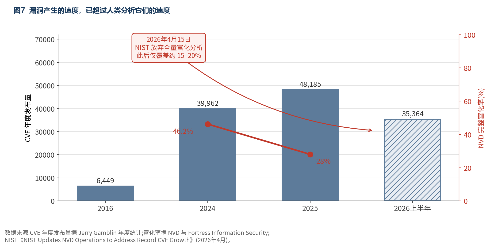
必须诚实处理的反驳
一个严肃的论证必须直面对自己最不利的证据。对上述叙事，存在一个有力的反驳:漏洞数量的增长，很大程度上来自计量机制的变化，而不是威胁本身的恶化。这个反驳有充分的事实基础。Linux 内核团队成为独立的漏洞编号分配机构(CVE Numbering Authority，CNA)之后，开始对几乎所有内核缺陷分配编号。此前被视为常规维护的问题，现在都成为统计中的一个漏洞。Zafran 的分析指出，这直接导致数千个问题被纳入追踪。WordPress 生态的两家安全厂商 Patchstack 与 Wordfence，2025年分别分配了7,007个和3,451个漏洞编号。Patchstack 一家的数量，超过了微软或谷歌。到2026年1月1日，CNA 总数突破484家，其中142家在2025年零披露，实际活跃的约340家。分配主体的大幅增加，本身就会推高统计数字。 严重性分布也在下移:关键级漏洞占全部漏洞的比例，从2024年的12.8%降至2025年的7.4%。虽然由于总量增长，关键与高危漏洞的绝对数量仍在增加，但占比的下降说明，新增的很大一部分是较低危害的问题。这个反驳是成立的。本书接受它。 简单地把漏洞数字的增长解读为“世界变得更危险了”，是一种不严谨的叙事。
反驳的边界
这个反驳能够解释什么，不能解释什么，必须分开。它能够解释:为什么漏洞数字变大了。它完全不能解释:为什么我们无法处理它们。无论漏洞因何增长——是威胁恶化，是计量口径变化，是分配主体增多，还是三者兼有——治理体系确实无法处理它们，这个事实独立成立。而且我认为，承认计量因素之后，论证反而变得更加锋利。如果漏洞增长纯粹是因为威胁恶化，那么这是一个安全问题，解法是加大安全投入。但如果漏洞增长很大程度上来自“我们开始更细致地记录本来就存在的问题”，那么真正暴露出来的是另一件事:我们判定软件是否仍在执行使命的机制，其容量是固定的，而软件世界的信息量是无限的。换句话说，问题的本质不是“漏洞变多了”，而是:我们判定软件是否仍在执行使命的机制，无法随软件规模一同扩张。 这是一个规模的问题(scaling problem)，不是一个安全的问题。而规模问题不能靠加大投入解决——NIST 已经把处理量提高了45%，依然不够。它只能靠改变范式解决。
这是范式失效，不是产能不足
为什么说这是范式失效，而不只是产能不足?NVD 的工作模式包含一个核心假设:每一个被报告的漏洞，都值得也能够被人类专家看一遍。 围绕这个假设，建立起了一整套流程:接收提交、人工分析、评分、分类、映射产品、公开发布。这套流程的每一个环节都需要人的判断，因此它的产能上限，由训练有素的分析人员数量决定。这个假设在漏洞数量以每年几千个的速度增长时是合理的。在每年四五万个的速度下，它不再成立。而在这个数字继续以每年20%以上增长时，任何合理规模的人力投入都无法追赶。范式失效的判据是:问题不在于当前的实现不够好，而在于这个方法论本身有一个无法突破的天花板。 NIST 的政策变更正是对这个判断的官方确认。它没有说“我们要招更多分析师”，它说的是“我们将只分析其中的一小部分”。这是一个机构在制度层面承认:以人为中心的漏洞分析范式，已经到达了它的规模极限。
治理链路的同步退化
范式失效的直接后果已经在显现，而且比表面看到的更严重。第一，漏洞信息的质量出现了分层。 现在的情况是:少数漏洞有完整的官方富化信息，大多数漏洞只有 CNA 提供的原始描述。这看起来只是信息详略的差异，但对下游使用者来说，后果是实质性的。一个企业的漏洞管理系统，依赖 CPE 产品映射来判断“这个漏洞是否影响我使用的组件”。没有产品映射，这个判断就必须由企业自己做出——而绝大多数企业没有这个能力。 第二，评分的一致性正在下降。 由于 NVD 不再对已有 CNA 评分的漏洞提供独立评分，评分的质量完全依赖于各个 CNA。而学术研究发现，在同时有 NVD 与 CNA 两种评分的漏洞中，过去十年的分歧率超过50%，2023年达到70%。 “CVSS 评分”这个全球通用的严重性标尺，其内部一致性本身就是可疑的。当独立的第二方评分退出后，这个标尺将变得更加不可靠。第三，也是最根本的:漏洞治理正在从“覆盖式”转向“分诊式”。 KEV 目录是一个“已知被利用”的清单——它记录的是已经在野外被观察到攻击的漏洞。以 KEV 为优先依据，意味着治理的重心从“预防”转向了“响应”。这是一个理性的资源分配策略，但它有一个代价:在攻击被观察到之前，那个漏洞是不被优先关注的。这就把防御方置于一个结构性的被动位置。 发现端正在失效，修复端也没有跟上。Verizon《数据泄露调查报告》(Data Breach Investigations Report，DBIR)2026年版给出了两个数字:漏洞修复的中位时间从32天上升到43天，增长了34%。CISA KEV 目录中的漏洞，2025年的完全修复率仅为26%，而前一年是38%。请注意第二个数字的分量。KEV 目录收录的，是已经被确认在野外遭到实际利用的漏洞——这是全世界最应该被优先修复的那一小部分漏洞。而它的完全修复率，从38%降到了26%。把两端的数字放在一起:发现端，NVD 富化率从46.2%降至28%，并在制度上放弃全量分析;修复端，KEV 完全修复率从38%降至26%，修复中位时间从32天延长至43天。这不是某一个环节的问题。这是整条治理链路的同步退化。Datadog《DevSecOps 现状报告》2026年版提供了这条链路末端的画面:87%的组织，正在运行着至少包含一个已知可利用漏洞的服务;42%的服务，依赖着已经不再被积极维护的库。
攻击面已经转移
2026年 DBIR 的另一个发现是一个标志。漏洞利用首次超过凭证窃取，成为最主要的初始攻击途径。 这是该报告十九年历史上，凭证窃取第一次失去首位。具体数字:漏洞利用作为初始访问途径的占比，从20%上升到31%，增长55%;而凭证滥用从22%降至13%。需要注明:2026年 DBIR 新增了“借口欺诈”(Pretexting)作为独立的初始访问途径，口径变化使凭证滥用占比额外下降约3个百分点;即便按旧口径回算约为16%，漏洞利用仍居首位。凭证滥用仍然在39%的泄露事件中的某个环节出现——它没有消失，只是不再是主要入口。这个转变的含义需要被讲清楚。在过去很长时间里，安全行业的一个共识是“人是最薄弱的环节”。钓鱼、社会工程、弱口令、凭证复用——攻击者最经济的路径，是欺骗人而不是攻破系统。围绕这个共识，行业投入了大量资源:安全意识培训、多因素认证、密码管理、零信任架构。这些投入是有效的。凭证滥用占比下降，其中一部分来自上述努力，另一部分来自统计口径变化。 但结果是:攻击者换了入口。 当骗人变难之后，他们转向了攻破软件本身。于是我们得到了一个清晰的判断:软件自身的可信性，已经取代人的警惕性，成为安全的第一战场。而恰恰在这个战场上，我们的治理能力正在退化:发现端放弃全量分析，修复端速度下降、完成率降低，末端87%的系统带病运行。
判定必须部分交给机器
把证据链串起来:软件世界产生问题的速度，已经超过了人类分析这些问题的速度。这不是判断，是2026年4月15日被制度化确认的事实。对此的合理反驳(计量机制变化)是成立的，但它只能解释数字为何变大，不能解释我们为何无法处理。问题的本质是规模，而不是威胁。规模问题无法靠增加投入解决——NIST 提高了45%的处理量，依然失败。它只能靠改变范式解决。而与此同时，攻击者的主要入口已经从人转向了软件本身。我们在治理能力退化的同时，迎来了攻击面的转移。这是本书全部论证的现实起点。如果人的分析能力无法随软件规模扩张，那么可信性的判定就必须部分地由机器承担;而要让机器能够判定可信性，可信性本身就必须被表达为机器可以处理的形式。 这句话是全书技术主张的种子。第三编要回答的，正是“如何把可信性表达为机器可处理的形式”这个问题。
带病的供应链是被管理养出来的
验收即结束、外包转包、考核只看功能点，会在组织内部生产不可信。供应链把同一逻辑扩展到组织之外。你验收的是一份可演示的功能，不是一份可检验的依赖清单;你外包的是工期，不是可信计算基;你购买的是许可证，不是构建溯源。于是一条带病的供应链不仅活得下去，而且会被当成效率。 开源改变了软件的生产函数，也改变了责任的形状。一个被上万个系统间接依赖的库，可能由一两名志愿者在业余时间维护;一个被写入关键路径的组件，其发布压缩包可以与源码仓库不一致——XZ Utils 后门正是沿着这条缝钻进来的。维护者疲惫、权限逐步交接、构建脚本无人复核:这不是“开源不安全”，这是把关键基础设施建立在无人值守的公益劳动之上，却拒绝为这份劳动支付验证成本。 企业侧的镜像同样尖锐。采购看价格与功能清单，安全评估看供应商问卷，上线看窗口，运行看可用性。问卷可以被填，可用性可以很高，而构建过程是否被攻陷、传递依赖里有没有一个已经不再维护的包，仍然没有人能当场回答。Datadog 2026年的数字在这里不再只是安全统计:87%的组织运行着至少含一个已知可利用漏洞的服务，42%的服务依赖不再被积极维护的库。带病运行已被当作常态。常态一旦被接受，修复就会变成例外，例外一旦要走变更流程，就会被下一次上线挤掉。 供应链问题看起来像外部风险，根子往往在内部管理:谁都有权引入依赖，谁都不必为这个依赖的余生负责。
没有独立的软件
一个现代应用程序中，由开发团队自己编写的代码，通常只占全部代码的很小一部分。其余来自操作系统、运行时、框架、库、SDK、云服务。一个典型的 Node.js 项目，npm install 之后的依赖树可能包含上千个包;一个 Java 企业应用，传递依赖常常达到数百个。Black Duck(原 Synopsys 软件完整性业务)发布的《2026年开源安全与风险分析》把这张网写成了审计数字:在947个被审计的商业代码库中，98%含开源组件，每个应用平均1,180个开源组件，其中约64%是开发者从未直接选择的传递依赖;87%的代码库至少含一个已知漏洞。口径是并购与商业审计样本，不是全行业普查。它足够说明:现代软件的主体不是“我们写的程序”，而是一张无人能在脑子里走完的依赖网。这些依赖不是可选的装饰。它们是系统的组成部分，与自己写的代码运行在同一个进程、同一个权限、同一个内存空间之中。一个第三方库中的漏洞，与自己代码中的漏洞，在攻击者眼中没有区别。而依赖关系是传递的。你依赖 A，A 依赖 B，B 依赖 C。你可能从未听说过 C，但 C 中的一个问题会沿着这条链传到你这里。2016年的 left-pad 事件、2021年的 Log4Shell 事件，都是这种传递性的经典案例——一个被广泛依赖的小组件出问题，全世界同时受影响。名单还可以更长，而且每一条都在重复同一课。2014年 Heartbleed 打在 OpenSSL 的心跳处理上，全球约六分之一的 HTTPS 服务器暴露在内存泄漏风险中;这个库支撑着互联网的加密，维护力量却长期配不上它所承载的文明重量。同年，Bash 的 Shellshock 让一条环境变量变成远程代码执行;苹果的 “goto fail” 用多写的一行跳过了证书校验——加密协议的信任，可以被一个漏掉的花括号掏空。2017年 Equifax 因未及时修补 Apache Struts 漏洞，约1.47亿人的数据被窃——不是因为没有补丁，而是补丁没有进入那个真正在跑的系统。2017年 NotPetya 从乌克兰税务软件切入，马士基、默克、联邦快递等公司的全球运营同时中断，马士基后来公开其损失约3亿美元;这不是一次“网络安全事件”，这是一次供应链把物理物流停掉的事件。2020年 SolarWinds 的 Orion 更新被植入后门，约1.8万家客户装上了带毒的“正规升级”，其中包含美国联邦机构。2021年 Codecov 的上传脚本被篡改，持续集成里的密钥顺着“正规工具”流走;同年 Kaseya 的管理软件被打开，勒索软件沿着服务商通道进入下游企业。2023年 MOVEit Transfer 的 SQL 注入让数百家机构的文件交换枢纽同时失守——攻击者仍然不必去撞每一家的大门，他们只需要污染大家都信任的那一次传输。
态势比想象的严重
2025年的数据显示了这个问题的规模。软件供应链攻击在2025年全球增长了一倍以上，超过70%的组织报告了至少一起第三方软件事件。 全球成本达到600亿美元，预计到2031年将达到1,380亿美元。恶意软件包的增长更为惊人。Sonatype 在2025年识别出454,600个新增恶意软件包，累计总数突破120万个。其中约99%集中在 npm 生态。这些不是理论风险。朝鲜的 Lazarus 集团单独发布了超过800个 npm 包，采用投放器、凭证窃取、持久化远程访问的多阶段载荷链。这是国家级攻击者把开源生态作为攻击基础设施的直接证据。Verizon 2025年 DBIR 提供了另一个角度:涉及第三方的泄露事件比例翻倍，从15%上升到30%。 其中81%的第三方泄露涉及受害方系统被攻陷。同一报告还指出，GitHub 仓库中泄露的密钥，其修复中位时间为94天。 需要在此做一个更正。本书所依据的原始论述中，曾引用“涉及第三方的泄露事件达48%”这一数字。经核实，48%是2026年 DBIR 中勒索软件占泄露事件的比例，而非第三方涉事比例。第三方涉事的准确数字是2025年 DBIR 的30%。本书采用后者。
可信计算基已经无法最小化
供应链问题的技术本质，是一个可信性传递(trust propagation)的问题。设想一个理想情况:你能够严格证明自己写的代码是正确的。这个证明有意义吗?只有在一个前提下有意义:你所依赖的一切也是可信的。 你的代码运行在某个运行时之上，运行时运行在操作系统之上，操作系统运行在硬件之上;你调用的每一个库函数，都携带着它自己的正确性假设。这不是一个理论上的顾虑。第三编将详细讨论 seL4 的例子:这个全球第一个完成完整功能正确性证明的操作系统内核，其证明明确地建立在若干假设之上——编译器正确、汇编代码正确、硬件正确、引导代码正确。 换句话说，即使是人类迄今最严格的软件正确性证明，也必须把一部分可信性“外包”给它所依赖的东西。2018年公开的熔毁(Meltdown)与幽灵(Spectre)把这条外包推到了芯片:投机执行让程序读到按架构规范不该读到的内存。软件验证默认的那块“硬件按说明书工作”的地板，原来也有缝。可信计算基一旦把 CPU 微结构算进去，就再也小不回去了。 这引出了一个重要概念:可信计算基(Trusted Computing Base，TCB)。一个系统的 TCB，是那些“如果它们出错，则系统的安全性无从谈起”的组件集合。TCB 之外的组件出错，系统还有机会检测和恢复;TCB 内部出错，则整个论证崩塌。传统安全工程的核心原则之一，是最小化 TCB。TCB 越小，需要被严格保证的部分就越少，保证的成本就越低，可信度就越高。而现代软件供应链所做的事情，恰恰是把 TCB 无限扩大。当你的应用依赖上千个包，而这些包都以完整权限运行在你的进程中时，你的 TCB 事实上包含了这上千个包，以及它们背后的上千个维护者、上千个构建过程、上千个发布渠道。这就是供应链问题的技术实质:我们在用一个无法被最小化的 TCB，承载一个需要高度可信的系统。
2024年7月19日的 CrowdStrike 事件，用一种带有讽刺意味的方式演示了这一点。
当天 04:09 UTC，网络安全公司 CrowdStrike 向其 Falcon 传感器推送了一个配置更新。这类更新每天要推送多次，属于例行操作。但这一次，编号291的通道文件中包含一个逻辑错误，导致传感器发生越界内存读取，进而引发 Windows 蓝屏死机。
CrowdStrike 很快发现了错误:78分钟后，即 05:27 UTC 之后时间戳的文件已经修正。但对许多用户而言，回退来得太晚——他们的机器已经更新，并陷入引导循环或恢复模式，而一台无法启动的机器，是无法自动接收修复的。
微软估计有850万台 Windows 设备受影响，占全部 Windows 机器不到1%。但这个数字来自选择上传崩溃报告的客户样本，微软后来澄清真实范围被认为大得多。
更关键的是分布。CrowdStrike 的客户高度集中于航空、医院、银行、零售与政府机构。于是不到1%的设备，造成了全球性的运营中断:航班停飞，医院系统瘫痪，银行服务中断。据 Parametrix 的分析，医疗保健业损失约19.4亿美元，银行业约11.5亿美元，财富500强航空公司合计约8.6亿美元，全部财富500强企业的损失最高达54亿美元——而这只计算营收与毛利，不含生产力损失与声誉损害。更广泛的估计认为全球损失至少100亿美元。这被称为史上最大规模的信息技术宕机事件。
这不是网络攻击，不是勒索软件，也不是微软的 Windows 更新出了问题。它是一个配置文件中的逻辑错误。
而从可信计算基的角度看，这个事件揭示了一个尖锐的事实。一个安装在数百万台机器上、拥有内核级权限、每天自动更新数次的第三方安全代理，事实上已经成为每一台机器可信计算基的一部分。它的可信性，就是这些机器的可信性上限。
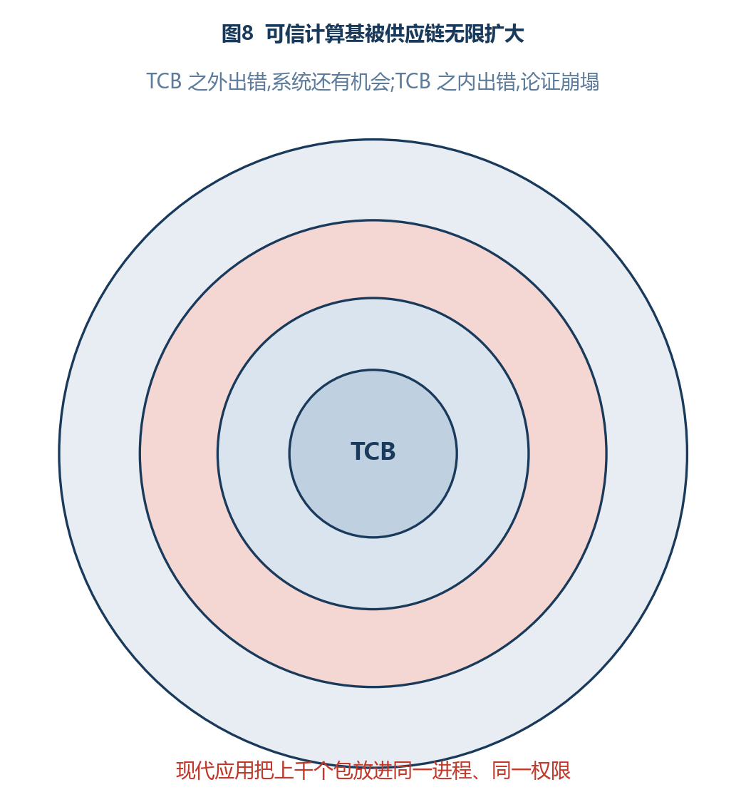
用来保护系统的软件，成为了摧毁系统的单点。 这不是 CrowdStrike 一家的问题——任何具有同等权限与同等分发规模的组件都面临同样的结构。它说明的是:当我们把 TCB 扩大到包含一个持续自动更新的外部组件时，我们事实上把系统的可信性，交给了那个组件的每一次发布流程。
清单不是证据，声明不是使命
面对这个问题，产业界发展出了一组治理工具。理解它们各自回答什么问题、以及不回答什么问题，对本书的论证很重要。软件物料清单(Software Bill of Materials，SBOM) 回答的问题是:这个软件里有什么组件?它类似食品包装上的配料表。有了 SBOM，当 Log4Shell 这样的漏洞爆发时，企业可以快速回答“我的哪些系统包含这个组件”。这解决了一个非常真实的痛点——在 SBOM 普及之前，这个问题往往需要数周的人工排查。供应链等级软件制品框架(Supply-chain Levels for Software Artifacts，SLSA) 回答的问题是:它是怎么被构建出来的?如果 SBOM 是配料表，SLSA 就是食品安全认证。它关注构建过程的完整性:源码是否来自声称的仓库，构建是否在受控环境中进行，构建过程是否可复现，产物是否在构建后被篡改。Linux 基金会在2025年11月底发布了 SLSA 1.2，定义了更细粒度的构建与源码追踪轨道。
Sigstore 提供签名与透明日志的基础设施:cosign 负责签名，Fulcio 作为证书颁发机构，Rekor 提供不可篡改的透明日志。它是把 SLSA 做进日常构建的标准工具链，目前已达到生产就绪状态。这三者的关系可以概括为:SBOM 告诉你有什么，SLSA 告诉你从哪来，Sigstore 让前两者的声明可被验证。
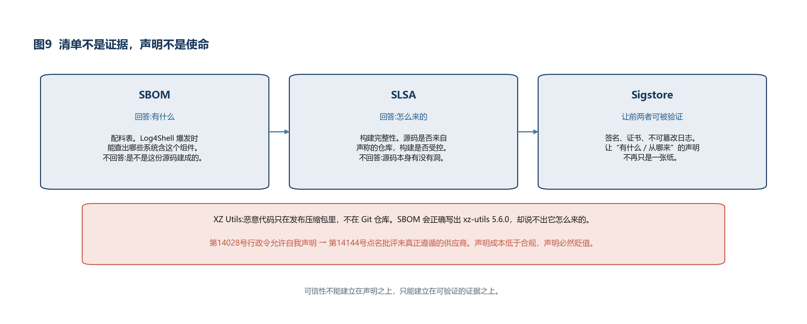
清单回答“有什么”，XZ 出在“怎么来的”
SBOM 无法告诉你，软件是否真的由你以为的那份源码构建而来;也无法告诉你，构建过程是否被攻陷。
2024年3月发现的 XZ Utils 后门，把这个抽象的论断变成了一个具体而惊心的事实。
XZ Utils 是一个几乎无处不在的压缩工具，它的库 liblzma 被大量系统组件间接依赖。2024年3月29日，微软的一位工程师 Andres Freund 在 Debian 开发版环境中对 PostgreSQL 做基准测试时，注意到一件小事:SSH 登录耗时从正常的约100毫秒变成了约500毫秒。
四百毫秒。就是这个差异，让他开始追查。他发现失败的 SSH 登录消耗了异常多的 CPU;对 sshd 做性能剖析后，发现 liblzma 占用了显著的时间，但工具无法定位到具体函数。顺着 Valgrind 的报错线索，他最终在 XZ Utils 的发布压缩包中找到了恶意代码。
这个后门的技术细节值得每一个软件从业者了解。
它存在于 XZ Utils 5.6.0 与 5.6.1 版本中，允许持有特定 Ed448 私钥的攻击者绕过 OpenSSH 认证，在受影响系统上执行任意代码。CVSS 评分为满分10分。
而它的隐藏方式，精确地击中了现代供应链治理的盲区:恶意代码藏在被修改的构建脚本与经过混淆的二进制测试文件中，只存在于发布压缩包里，而不在 Git 仓库中。 这意味着，任何对源代码仓库的常规审查——无论多么仔细——都不可能发现它。
进入 sshd 的路径同样迂回。sshd 本身并不依赖 liblzma，但许多发行版会给 sshd 打补丁以支持 systemd 的通知机制，而 libsystemd 的其他部分依赖 liblzma。于是后门被间接加载进了这个系统上最关键的守护进程。载荷在进程名为 sshd 时激活，而且——成功利用不产生任何日志记录。
最令人不安的是攻击者的耐心。这个后门由一名受信任的联合维护者植入，而此人在近两年前就开始为该项目贡献代码，逐步建立信誉，直至获得维护者权限。整个渗透过程持续了大约两到三年。
后门已经被打包进 Fedora 40 beta、Debian unstable/testing、Kali Linux、Arch Linux 等发行版的开发版本。所幸尚未进入主要发行版的稳定版。发现后24小时内，Red Hat、SUSE、Debian 回退了受影响的包，CISA 发布了公告。
现在请回到 SBOM 的话题。一份 SBOM 会准确地告诉你:这个系统依赖 xz-utils 5.6.0。这个信息完全正确。而它不会告诉你——也无法告诉你——这个版本的发布压缩包里，藏着一个与源码仓库不一致的后门。
清单回答“有什么”，而这个案例的问题出在“它是怎么来的”。 这便是从 SBOM 走向构建溯源的全部理由。
还有一个更令人清醒的事实:这次发现纯属偶然。它依赖于一位工程师恰好在做性能测试、恰好注意到400毫秒的异常、恰好有耐心追查到底。如果他那天没有运行那个基准测试，这个后门可能已经进入了全球数以亿计的系统。
一个价值数十亿美元的全球软件生态，它的安全在这一次依靠的是运气。 这是前文“治理能力已达规模极限”这一判断最具体的例证——我们没有一个系统性的机制能够发现这类问题，我们只有偶然。一份 SBOM 声称这个软件包含 openssl 3.0.8。这个声称本身是一个断言，而不是一个证据。它可能是准确的，可能是过时的，可能是错误的，也可能是攻击者伪造的。SBOM 提供了信息，但没有提供这个信息为真的理由。这正是2026年产业实践重心转移的原因:从清单(inventory)走向溯源与验证(provenance and verification)。这个转移在本书的框架中具有普遍意义。它是“从声明到证据”这一原则在供应链领域的具体体现——而这个原则，将在第四章被提升为可信性的一般定义。
工具已有，覆盖仍薄
诚实地看，这些工具的采纳情况远未成熟。欧洲网络安全局(ENISA)2026年6月发布的《SBOM 采纳现状》调查显示:78%的受访者已经启动 SBOM 采纳，但44%仅处于试点或有限采纳阶段，只有9%达到成熟的完全自动化水平。 33%预计在12个月内达标，30%表示需要两年以上，12%无法估计。推动这一采纳的主要驱动力，是欧盟《网络韧性法案》(Cyber Resilience Act，CRA)的合规期限。SLSA 的情况类似。实践建议普遍以 Level 2 作为起点——在 GitHub Actions 或 GitLab CI 上一两天即可达成，能够显著提高常见攻击模式的门槛。但工具支持并不均衡:Azure DevOps 缺乏原生的 SLSA 支持，需要第三方工具或自行实现。一个必须说明的限定是:SLSA 验证的是构建完整性，而不是代码安全性。 一个 SLSA Level 3 的制品，意味着它确实由声称的源码在受控环境中构建而成——但如果源码本身就有漏洞，SLSA 不会告诉你。静态分析、动态分析、成分分析依然必需。
从声明到证据:一次制度层面的演进
供应链治理还提供了一个具有普遍意义的制度案例，本书认为它的启发价值超出了供应链本身。美国第14028号行政令《改善国家网络安全》(2021年5月)是这一领域的奠基性文件。它要求联邦软件供应链采用零信任标准，并催生了 NIST 的《安全软件开发框架》(Secure Software Development Framework，SSDF)。管理和预算办公室(OMB)随后设定了期限，要求各机构确保供应商遵循 SSDF。但这里有一个设计上的妥协:OMB 允许供应商“自我声明”(self-attest)其 SSDF 合规性。结果是可以预料的。许多软件供应商提交了合规声明，而只是部分遵循了框架。于是有了2025年1月的第14144号行政令。这份文件专门针对第14028号行政令实施以来暴露的缺口，直接点名批评了那些在未完全遵循框架的情况下签署合规文件的供应商。从14028到14144的演进，其本质可以概括为一句话:从“你声称你是合规的”，走向“你必须证明你是合规的”。 这个演进不是偶然的。它是任何以声明为基础的信任机制的必然归宿。当声明的成本远低于实际合规的成本，而声明的真实性又无法被验证时，声明就会贬值，直到失去意义。可信性不能建立在声明之上，只能建立在可验证的证据之上。 这个原则，美国政府用了近四年、经过一次失败的实践才在制度上确认。而它正好与本书的技术主张在结构上完全同构。 关于供应链的论证因此可以归结为三点。第一，可信性是一个链条属性，不是一个节点属性。 你无法在自己代码的边界内建立可信性，因为你的可信性依赖于你所依赖的一切。这是第三编“使命必须成链”这一主张的直接根据。第二，清单不等于使命，声明不等于证据。 SBOM 提供信息，但信息本身需要被验证;供应商声明合规，但声明本身需要被证明。这是“证据链”概念的实践起源。第三，现代软件的 TCB 已经无法被最小化，因此必须转变思路:既然无法缩小需要信任的范围，就必须提高验证的自动化程度。 这与第二章的结论殊途同归——人的能力无法覆盖的地方，必须由机器覆盖;而要让机器覆盖，可信性就必须被表达为机器可处理的形式。
声明会贬值，证据不会
三条线索指向同一结论。NIST 放弃全量富化，是以人为中心的判定范式到达规模极限的制度化确认;计量口径的变化解释了数字为何变大，解释不了我们为何处理不了。真正的问题是规模，不是威胁。与此同时，漏洞利用成为最主要的初始攻击入口——软件自身的可信性，已经取代人的警惕性，成为安全的第一战场。
而这个战场没有边界。供应链把可信计算基扩大到再也收不回来，清单不等于证据。XZ Utils 演示了审查看不见的地方，CrowdStrike 演示了保护者如何成为单点。管理侧的病灶与供应链是同一结构:谁都有权引入依赖，谁都不必为这个依赖的余生负责。带病运行一旦被当作常态，修复就会变成例外。可信性不能建立在声明之上，只能建立在可验证的证据之上。
第三章 生成式人工智能放大了假使命
「我当时没有意识到，即使与一个相当简单的程序做极短时间的接触，也能在完全正常的人身上诱发强烈的错觉。」
——约瑟夫·魏泽鲍姆(Joseph Weizenbaum)，《计算机的能力与人的理性》，1976
魏泽鲍姆发明了 ELIZA，然后被自己的发明吓到了:人们开始向一个模式匹配程序倾诉，并相信它懂。五十年后，这种错觉被做成了产品形态。生成代码的速度已经超过理解代码的速度，生成行动的速度正在超过撤销行动的速度。AI 被同时捧为救星与祸水，两种说法都在回避同一件事:产业正在把不可理解的判断，写成不可逆的动作。先把代价算清楚，再拆开这套新的生产函数。 软件变得不可控，不是一句情绪。它是依赖不透明、更新以分钟计、规模超出审查这三件事叠在一起的结果。第二章的审计数字已经说明，开源几乎是商业软件的默认构成;GitHub《2025年Octoverse》则给出另一头的规模:平台上超过1.8亿开发者、6.3亿个仓库，超过110万个公开仓库接入了大模型软件开发工具包，一年增长178%。没有人能把这张网读完。一次配置更新就能让全球航空、医院与银行同时停摆——CrowdStrike 的结构含义见第一章。 生成式人工智能把这套不可控再放大一档。斯坦福大学以人为本人工智能研究院《2026年人工智能指数》记录:人工智能事件数据库在2025年收录362起，高于2024年的233起;受访组织的人工智能采用率升至88%;在一项针对26个前沿模型的准确性基准上，幻觉率介于22%至94%。魏泽鲍姆五十年前就警告过:流畅会被误认成理解。诺伯特·维纳更早一步:机器一旦快于人的纠正，控制就会从设计者手里滑走。斯图尔特·罗素把控制写成工程问题——智能越强，越必须先解决它为谁优化、由谁停机。欧盟《人工智能法案》的高风险规则与执法日程见本章后文;NIST 的人工智能风险管理框架与国际标准化组织的人工智能管理体系标准(ISO/IEC 42001)，都把证据与治理写成了可审计的要求，而不是道德附录。生成远快于验证，第五章会把这个不对称写严;Agent 一旦行动，错误不再是草稿，本章后文会回到不可逆性。不可控加上生成，不是两个问题，是同一个问题的加速。
不使命软件的代价有多大?这个问题看似应该用一个越来越大的数字来回答。但真实的数据讲述了一个更复杂、也更有价值的故事。
代价算不清，不等于代价不小
在讨论灾难成本之前，有一个更基本的问题:我们怎么知道一次软件故障造成了多少损失?这远比听上去困难。当 Therac-25 的那次事故发生时，伤害是明确的——病人受到了严重的辐射灼伤，部分人因此去世。但即便在这种明确的医疗伤害中，责任的认定都经历了漫长的拉扯:AECL 起初否认问题，错误提示码无从理解，维修人员反复投修却无法定位根源。而在非医疗的场景里，归因困难是巨大的。当一条生产线停机四小时，原因可能被记录为“设备故障”或“系统异常”，而不会被记录为“软件的可信性缺陷”。当一家银行的一笔交易出错，损失可能被归入运营费用，而不是“软件问题”。更危险的是“静默失效”:系统安静地给出了错误的答案，而没有人知道它错了——因为按定义，没有人知道它发生了。 于是，我们面临的处境是:我们想要计量软件不可信的代价，却发现最想计量的那些部分，恰恰最难以计量。而那些能够被计量的部分——数据泄露——又只是冰山一角。 IBM《数据泄露成本报告》是这个领域最权威的年度研究之一。2025年7月30日发布的第20版报告，基于16个国家和地区600家组织的研究，给出了以下数字:全球单次数据泄露的平均成本为444万美元。美国的平均成本为1,022万美元。分行业看，医疗行业最高，为742万美元;金融行业556万美元。泄露生命周期(从发生到完全恢复)为241天，是历史最低值，比上一年缩短了17天。 若只停在这个绝对值上，印象会是:代价很大，而且在变大。但事实并非如此。444万美元这个数字，是五年来的首次下降。2024年，全球平均成本为488万美元。2025年的444万美元，相比下降了9%，回到了2023年的水平。这个下降必须被摆出来。回避它、只引用绝对值，是修辞上的偷懒;数字背后的解释，比“代价在增大”更有价值。
均值下降了，问题没有变小
IBM 的报告给出了明确的归因:识别与遏制速度的加快。泄露生命周期从258天降至241天，创下历史新低。而报告指出，这一改善很大程度上来自组织自身的安全团队与安全服务团队，并且得到了 AI 与自动化的帮助。数据支持这个归因。报告显示:未使用 AI 与自动化的组织，平均泄露成本为552万美元;广泛使用 AI 与自动化的组织，平均成本为362万美元;差额190万美元。在防御侧，AI 与自动化正在产生真实、可量化的效果。同时，美国的成本却创下历史新高——1,022万美元，比2024年的936万美元上升9.2%。IBM 的归因是:更高的监管罚款，以及检测与升级成本的上升。 IBM 的 Troy Bettencourt 明确指出，这部分源于“更多美国组织报告支付了更高额的监管罚款”。 所以真实的图景是:技术效率在提升(遏制更快，成本下降)，而监管代价在上升(美国因罚款创下新高)。这两个趋势同时存在，并不矛盾。
同一份报告的两侧
这组数据真正的价值比“代价在增大”更有信息量，而且同时指向两个方向。AI 在防御侧是有效的:190万美元的成本差额，是 AI 用于安全运营的实证价值。AI 不是使命问题的敌人。相反，它是使命软件的重要工具。同一份报告的另一组数据却令人不安:13%的组织报告其 AI 模型或应用发生了泄露，另有8%不知道自己是否被攻陷;在这些被攻陷的组织中，97%没有部署 AI 访问控制;AI 相关事件中，60%导致数据泄露，31%导致运营中断;16%的泄露事件中，攻击者使用了 AI 工具(最常见于钓鱼与深度伪造);影子 AI 严重的组织，平均泄露成本高出67万美元。请注意“97%没有部署 AI 访问控制”这个数字。这不是说他们的访问控制不够强，而是根本没有。 企业在大规模部署 AI 的同时，并没有把 AI 纳入既有的安全治理体系。AI 系统被当作一个应用来部署，而不是被当作一个新的、具有自主行动能力的实体来治理。这组数据从两侧同时证实了同一件事:AI 既是使命软件的工具，也是需要治理的新对象。作为工具，广泛使用 AI 的组织，泄露成本低190万美元;作为对象，13%的组织 AI 系统被攻陷，其中97%缺乏基本的访问控制。同一份报告，同一年的数据，同时支持这个双重定位。这比任何理论论证都有说服力。
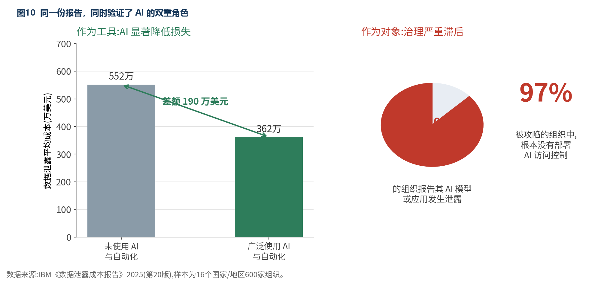
账外的代价
数据泄露只是不使命软件代价的一部分，而且可能不是最大的一部分。如果把以下各项全部纳入考虑——软件故障导致的业务中断、工业生产线的非计划停机、金融系统的错误交易、医疗系统的诊疗差错、数据的静默损坏、供应链事故的连锁反应——那么现代社会为“不使命软件”付出的总代价，将远远超过数据泄露的统计。这些代价大多没有被系统性地统计，原因如前:归因困难、内部消化、静默失效。金融把这个账算得最清楚，也最不愿把它写成软件事故。2010年5月6日的美股闪崩，指数在数分钟内剧烈下挫再回抽，高频交易软件在流动性抽空时继续按自己的局部逻辑下单;2012年 Knight Capital 用四十五分钟亏掉4.4亿美元，完整经过见第九章;2013年光大证券的72.7亿元成交，则是中国资本市场第一次被监管机构定性为交易软件缺陷引发的极端事件。三次都不是“行情波动”。三次都是不可逆的市场行动权，已经事先交给了软件。而最容易被忽略的一项，是机会成本。因为不信任系统而不敢自动化的流程、因为担心出错而保留的人工复核、因为无法验证而不敢采用的新技术——这些都是可信性不足的代价，但它们表现为“没有发生的事情”，无法被计量。 第四编在讨论产业规模时会指出:最后一项可能是最大的一项。 可信性不足的真正代价，不是已经发生的损失，而是因为不敢信任而未能实现的价值。
外部性:纯市场会系统性供给不足
关于代价，最后要指出一个性质上的判断。当一家企业的软件出问题，损失由这家企业承担，这是一个企业质量问题。当一个被广泛依赖的组件出问题，损失由整个生态承担，这就是一个基础设施问题。Log4Shell 是最清晰的例子。一个由少数志愿者维护的日志库中的一个漏洞，在几天之内让全世界几乎所有的 Java 系统进入应急状态。2024年 Change Healthcare 遭勒索软件攻击，美国大面积药店拒付、医院收入周期停摆，影响持续数周——这是医疗支付被单一软件枢纽咬住之后的样子。基础设施问题的特征就是:出错的主体无力赔偿，受害的主体无权修改，公众甚至说不清该向谁问责。这个漏洞的“制造者”没有能力承担它造成的损失，而承担损失的人对这个漏洞的产生没有任何影响力。这是典型的外部性(externality)问题。软件可信性的收益与成本在不同主体之间是错配的:建立可信性的成本，由软件的生产者承担;可信性不足的代价，由软件的使用者以及整个生态承担;而生产者与使用者之间，往往没有能够反映这种代价的价格机制。 经济学告诉我们，存在显著外部性的领域，市场机制会系统性地供给不足。这解释了为什么在一个15万亿元的软件产业中，基础软件只占1.39%——不是因为它不重要，而是因为它的价值大部分外溢到了别处，无法被生产者捕获。因此，使命软件不能被简单地当作一个待开发的市场，因为纯市场机制在这个领域会失灵。它需要标准、认证、采购要求、责任分配等制度性安排来矫正外部性。这不是对市场的否定，而是对这个特定领域经济性质的准确认识。
驯服，而不是迷信
立场需要先划清，因为它决定了后文与许多同类论述的分野。
大模型不是软件的使命问题的全部，也不是唯一的解决方案。它是正在改变软件工程的一项重要技术力量。这个表述看似平淡，但它排除了两种流行而错误的叙事。第一种认为，AI 将解决软件工程的根本问题——既然 AI 能写代码、能写测试、能发现缺陷、能重构，那么随着 AI 能力的提升，软件质量问题会自然消解。第二种认为，AI 是软件可信性的主要威胁——既然 AI 不可解释、会产生幻觉、无法保证正确性，那么把 AI 引入关键系统就是引狼入室。
两种叙事都不准确，而且它们错在同一个地方:把 AI 当成了一个外部变量，而不是软件体系内部的结构性变化。 还要排除第三种更流行的迷信:把生成式人工智能已经取得的成果，直接写成“智能已经到来”。大模型会写、会画、会答、会写代码，这些是真的。IBM 的数据也显示，广泛使用 AI 与自动化的组织，泄露成本更低。这些同样是真的。假的是下一步推理——以为流畅的生成等于可靠的判断，以为评测分数等于可进入工业与国防的能力，以为多对话几轮就能把不确定性聊没。第三章后文与第五章将表明:生成变便宜时，验证需求超比例上升;84%的开发者在用，33%信任输出;Agent 一旦行动，错误不再是草稿，而是既成事实。迷信生成，就是在国家最需要确定性的地方，引入一套拒绝被追问的流畅。 立场因此不是拒绝生成式人工智能，而是驯服它。驯服的意思很具体:让它服务于可检验的国家目标——工业软件、关键信息基础设施、国防科技工业所需的设计、仿真、控制、指挥辅助与软件生产——而不是继续把最强算力用来优化停留时长。驯服需要缰绳:独立于生成过程的知识与规则、不可绕过的检查、可重放的轨迹、自动产生的证据。没有缰绳的智能，只是更快的未知。第十一章会说明，为什么这件事不能再拖给市场的自发兴趣。 驯服软件与驯服人工智能是同一件事。使命是缰绳，可信性是扣，不是装饰。为人民服务在这里必须落到具体的人:患者能按正确剂量接受治疗，乘客能按间隔到达，电网调度员能看见真实的网，存款人能算清账，士兵与国防工业工程师能拿到不撒谎的工具链，城市居民能在社保、医保和身份核验上被正确对待。服务于停留时长和点餐路径，已经做成了世界级的生意;服务于电网、医院、列车、支付、工业与国防设计，才是国家把命脉交给软件之后应付的账。没有使命证据的软件不能声称服务于人民。巨头已经驯服了用户的注意力;国家必须驯服软件。
生成越来越便宜，验证越来越贵
先说 AI 带来的积极变化，而且要说得充分。
传统软件工程的核心瓶颈之一，是人写代码太慢。整个软件工程史的一大主线，就是不断提高单位人力的代码产出:从汇编到高级语言，从过程式到面向对象，从手工构建到自动化流水线，从自建一切到复用开源。大模型正在这条主线上带来一次量级的跃迁。它能够降低开发门槛，提高程序员效率，自动生成代码，自动生成测试，自动分析代码，自动发现部分问题，自动重构，自动生成文档。
用一个粗略的表达:
软件生成成本 ↓ 软件生成速度 ↑
这是一场真实的生产力革命，本书对此没有任何保留。而且，大模型完全可能成为使命软件的重要技术工具——当人的分析能力无法覆盖软件规模时，必须由机器来承担一部分判定工作，而大模型正是目前最有希望承担这项工作的技术。IBM 的数据也显示，广泛使用 AI 与自动化的组织，数据泄露成本低190万美元。
传统的软件生产链路是:需求 → 架构设计 → 程序员 → 代码 → 测试 → 软件。今天正在出现的链路是:人的意图 → 大模型 → 代码 → 测试 → 部署 → Agent → 执行。
请注意这两条链路的差别不只是“中间少了几个环节”。更重要的是，第二条链路的末端多了一个环节——执行。软件不再只是被部署，它开始通过 Agent 直接作用于现实世界。这个变化的意义，是本章后半部分的主题。
现在说问题。而问题的核心不是“AI 会不会犯错”——人也会犯错，软件工程从来就是在与错误共存中前进的。问题的核心是一个结构性的不对称:
生成软件 ≠ 验证软件
生成与验证是两种性质不同的活动。生成是构造性的:从意图产生制品。验证是判别性的:判断制品是否符合意图。在计算理论中，这两类问题的复杂度往往有本质差异;在工程实践中，它们需要的能力、工具、心智模式也完全不同。
关键在于:当生成能力大幅提升时，验证的需求不是等比例增长，而是超比例增长。原因有三。
其一，制品数量增加。生成的代码越多，需要验证的代码就越多。这是线性的部分。
其二，理解成本上升。人类验证代码的前提是理解它。而验证自己写的代码与验证别人(或 AI)写的代码，成本相差数倍——因为自己写的时候，理解过程已经在写的过程中完成了。当代码由 AI 生成时，理解的成本被完整地留给了验证环节。
其三，也是最微妙的:错误的分布改变了。人写代码的错误有一定的规律性，经验丰富的评审者知道该重点看哪里。AI 生成代码的错误分布不同，而人类尚未建立起相应的直觉。更麻烦的是，AI 生成的代码往往“看起来很对”——它符合惯用写法，命名规范，注释齐全。代码的表面质量与其实际正确性之间的相关性被削弱了，而人类的快速评审正好高度依赖这种相关性。
综合起来:
生成能力 ↑ ⇒ 验证需求 ↑↑
这个不对称，是本书全部技术主张的理论起点。第五章将对它做更严格的分析。
以上是理论推断。而近两年的实证研究表明，现实中发生的事情比这个推断更糟。因为在现实中，生成上去了，而验证不但没有跟上，反而被系统性地削弱了。
评审正在被跳过
2026年国际软件仓库挖掘大会(MSR 2026)上的一项研究，基于 AIDev 数据集——首个大规模公开的、收录真实 GitHub 仓库中 AI Agent 创建的合并请求(Agentic-PR)的数据集——给出了一个值得警惕的发现:超过61%的 Agentic-PR，在几乎没有人类介入的情况下被批准并合并。
这项研究同时检测出364个与可维护性和安全性相关的构建缺陷，典型问题包括缺失错误处理、硬编码路径与 URL。需要诚实地补充:同一研究也发现，AI 在某些情况下通过重构消除了既有的缺陷。这个双向性是真实的，不应被隐去。但61%这个数字的含义无法被抵消——它意味着在超过六成的情况下，AI 生成的代码变更没有经过实质性的人类审查就进入了代码库。
技术负债在以数量级速度累积
另一项大规模野外研究追踪了 AI 生成代码在真实仓库中的长期影响，发现:AI 引入的未解决问题(survival issues)，从2025年初的数百件，激增至2026年2月的超过10万件。从数百到十万，这不是增长，这是数量级的跃迁。
同期还有一组形状不同的观察，来自 GitClear——先声明性质:这是代码分析工具厂商自己的研究，不是同行评审文献，结论与其产品定位一致，厂商本身是利益相关方。它统计了2020年1月至2024年12月的2.11亿行变更代码，来源为匿名化的私有仓库与二十五个最大的开源项目，发现代表整合与重构的“移动行”占比从约四分之一降到不足一成，而复制粘贴产生的克隆行占比从8.3%升到12.3%;2024年，克隆行数首次超过移动行数。这是时间序列上的相关性，不是因果——远程办公、团队构成、代码库年龄都在同期变化。能说的只有一句，但这一句够重:与 AI 助手普及同期，代码库在变胖，不在变整。产出量上去了，可维护性没有跟上;技术债没有被消除，只是被推到了以后。
同样需要诚实补充:该研究也指出，AI 共同署名的提交所修复的代码缺陷数量，与其引入的数量大致相当。所以不能简单地说“AI 让代码变差了”。但“引入与修复大致相当”这个结论，在可信性的语境下并不令人安心。因为引入的与修复的，不是同一类问题:被修复的往往是显性的、工具可检测的、有明确修改建议的问题;而被引入的，包括那些需要理解业务语义才能发现的问题。二者在数量上抵消，不代表在风险上抵消。
安全脆弱性的实证图景
关于 AI 生成代码的安全性，学术界已经积累了相当数量的实证研究。这些研究的结论并不一致，本书如实呈现。
Pearce 等人在2022年 IEEE 安全与隐私会议上发表、后由《ACM 通讯》转载的研究《Asleep at the Keyboard?》，按 MITRE 的2021年 CWE Top 25 构造了89个场景，覆盖 C、Python 与 Verilog，分析 Copilot 生成的1,689个程序，以 CodeQL 静态扫描加人工复核判定，发现约40%含有相应弱点;分语言看，C 的场景中约一半的程序脆弱。这个数字的口径必须一并写出:这是针对高危弱点专门设计的诱发式测试，不是日常编码分布的抽样，所测的也是 Codex 时代的 Copilot。把它读成“AI 写的代码有四成不安全”，是过度概括。Fu 等人发表在 ACM TOSEM 2025 上的研究，从 GitHub 项目中收集了733个 AI 生成的代码片段，经静态分析发现 Python 片段中29.5%、JavaScript 片段中24.2%存在脆弱性。
但 Asare 等人的研究给出了不同的角度:Copilot 引入脆弱性的比例并不比人类开发者更高，它生成对应于新型脆弱性的代码的可能性较低。不过该研究也指出，在至少三分之一的调查案例中 Copilot 引入了脆弱性，因此用它来修复安全缺陷是有风险的。Sandoval 等人的研究则显示，AI 使用者产生重大安全错误的比率低于对照组的10%，提示 LLM 的使用未必带来全新的安全风险。还有一项针对 Copilot 代码评审功能的评估发现:与预期相反，它频繁漏检 SQL 注入、跨站脚本、不安全反序列化等重大脆弱性。
如何解读这些不一致的结论?本书的判断是:这些研究在方法、样本、场景上差异很大，结论的分歧本身是正常的。但把它们放在一起，有一个共同点是清楚的——AI 生成的代码在安全性上，不显著优于人类;而它的产出速度显著高于人类。
这就够了。因为可信性的问题从来不是“AI 是否比人更容易出错”，而是“当产出速度提高一个量级，而出错率没有相应下降时，系统整体的缺陷绝对数量会如何变化”。答案是显然的。
幻觉不是噪声，是可以被抢注的坐标
生成式模型在代码上还有一处缺陷，不能用“它偶尔会错”打发过去:它会用完全正常的语气，推荐一个并不存在的软件包。
Spracklen 等人发表于 USENIX Security 2025 的研究给出了规模。研究覆盖16个代码生成模型，在 Python 与 JavaScript 上被推荐的223万个软件包中，440,445个(19.7%)指向并不存在的包，其中205,474个是互不重复的虚构包名。商业模型的幻觉率约5.2%，开源模型约21.7%。
致命的不是这个比例，是它的可复现性。研究者随机抽取500个产生过幻觉的提示，每个重复询问10次:43%的虚构包名在10次里次次出现，58%出现不止一次。幻觉不是随机噪声，而是模型的稳定行为。攻击者只需要把模型问上几遍，就能拿到一份可靠的名单，抢先在公共仓库注册这些名字，等着后来的人把它们装进生产环境。这类攻击已经有了名字:slopsquatting。
请注意这一环扣在哪里。第二章说过，现代软件的可信计算基已经被依赖关系无限扩大，一行 import 就是一次信任转移。现在，连“要不要引入这个依赖”这个决定，都开始由一个不具备判定能力的系统来提议;而它提议的对象里，每五个就有一个不存在，并且它会坚持同一个错误。
这正是“流畅”的代价。一个不存在的包名和一个存在的包名，在生成出来的那一行代码里长得一模一样。人的审查在这里没有着力点:除非逐个到仓库核对，否则没有任何语言层面的线索能把它认出来。判定能力不在人这一侧——这就是第五章所说的不对称，在供应链上的具体形状。
分数是记住的，不是想出来的
产业与政策的判断越来越依赖同一样东西:基准分数。斯坦福大学以人为本人工智能研究院《2026年人工智能指数》在主报告中写道，在关键的编码基准 SWE-bench Verified 上，模型表现在一年之内从达到人类基线的60%升到接近100%。这句话被广泛引用为“AI 已经能做真实的软件工程”。
同一年，一项同行评审工作从反方向把这个分数拆开了。Liang 等人的《SWE-Bench 幻象》(已被2026年国际软件工程大会实践轨接收)设计了两个诊断任务。第一个:只给模型 issue 的文字描述，刻意不给任何仓库结构与代码上下文，要求它说出出错文件的路径——在 SWE-bench Verified 上，最强模型能答对76%;换到未被 SWE-bench 收录的仓库，同样的任务只有53%。第二个:只给当前文件上下文与 issue 描述，要求复现修正后的函数——在 SWE-bench 上，逐字重叠明显更高，连续五元组的重叠率最高达35%，而在其他同类编码基准上最高只有18%。作者的用词是谨慎的:高分“可能部分由记忆驱动”。本书不把它读成“分数全是假的”。
但即便按最保守的读法，结论也足够严重:当训练语料与评测集共享同一批公开仓库时，基准的有效性在结构上无法被保证。这不是调参问题，是治理问题。产业用分数决定采购，政策用分数判断代际，而这把尺子的刻度正在被它自己量的东西污染。把两条并置起来最清楚——年度报告用这个分数证明能力已接近人类基线，同期的同行评审工作证明这个分数部分来自记忆;而报告自己在前言里也承认，这些度量正变得越来越难以依赖。
评测基础设施属于使命软件基础设施。 一个无法被独立复现、也无法证明与训练语料无交集的基准，给出的不是能力证据，是营销材料。第五章会把这条接到验证一侧:用来判断“验证够不够”的那把尺子，自己也需要被验证。
知觉落差:人高估的不只是速度
如果说前面的数据描述的是客观事实，那么下面这组数据揭示的是人的认知状态——而这可能是更根本的问题。
最硬的一条来自一场随机对照实验。Perry 等人发表于2023年 ACM 计算机与通信安全会议的研究，把参与者随机分为两组:一组配备基于 OpenAI codex-davinci-002 的编程助手，一组没有，各自完成五项与安全相关的编程任务。结果是，五项任务中的四项，用助手的那一组写出的代码明显更不安全。数字自己会说话:数字签名任务的安全解答率从21%降到3%，加密解密从43%降到21%，路径限制从29%降到9%，防注入的 SQL 从64%降到39%;只有一项 C 语言任务没有差异。而同一批人，更倾向于相信自己写出的代码是安全的。研究者还记下一个实际困难:修复自己没有写过的代码中的错误，对多数使用者而言是困难的。
口径要交代清楚。这是受控的用户研究，测的是“人加 AI 协作的产出的安全性”，不能被读成“AI 生成的代码有多少不安全”;所用模型是 Codex 时代的版本，今天的模型已经不同。但它捕捉到的那个东西不随模型版本失效:助手不只是把不安全的代码递了过来，它同时把人对自己判断力的信心一起抬高了。质量下降与自评上升同时发生——这是知觉落差最干净的一次显影，也是“流畅生成不等于可靠判断”这句话第一次有了实验编号。
METR 在2025年做了一项随机对照实验。16名资深开源开发者，在自己长期维护的仓库上——平均超过两万颗星、上百万行代码——完成246个真实任务，每个任务被随机分配到“允许使用 AI”或“不允许”。开始之前，他们预计 AI 会让自己快24%;做完之后，他们仍然相信自己快了20%。计时器给出的结果是:慢了19%。
请仔细体会这个发现的含义。它不是说 AI 没用——在很多任务上 AI 确实有效。它说的是:人对自己在使用 AI 时的效率，存在系统性的高估。如果人对“我完成得有多快”这种可以直接感知的事情都会高估40个百分点，那么对“我审查得有多仔细”这种更难自我评估的事情，高估的程度会是多少?
其他数据支持这个担忧的方向。Stack Overflow 的开发者调查显示，84%的开发者在使用 AI 工具，但只有33%信任 AI 生成的代码——而前一年这个数字是40%。使用率在上升，信任度在下降。CodeRabbit 的调查发现，AI 辅助生成的代码在逻辑与正确性缺陷上的问题数，是传统方式的1.7倍。前述随机对照实验则把这种状态命名了:代码质量显著劣化，同时伴随着“安全的错觉”(false sense of security)。
把这些数据串起来
现在把上述发现组织成一个完整的论证链。
第一环，AI 生成代码已经大规模投入使用——84%的开发者在用。第二环，但信任度在下降，从40%降至33%;使用率与信任度背道而驰，这本身就是一个不健康的信号，它说明使用不是基于信任，而是基于压力或惯性。第三环，而评审却在被跳过——超过61%的 Agent 生成的合并请求，几乎没有人类实质介入。第四环，人对自己的验证能力存在系统性高估——40个百分点的知觉落差。第五环，结果是技术负债以数量级速度累积——从数百件到十万件以上。
这条链的每一环都有实证支撑。而它们共同指向一个结论:本书提出的不对称原理，在现实中不但没有被满足，反而在朝相反方向运行。生成能力提高了，而验证能力因为三重原因被削弱:人的注意力被“AI 写的应该没问题”这种错觉稀释;评审流程在效率压力下被跳过;人对自己验证能力的高估让这个过程感觉不到风险。
这是全书最尖锐、也最有现实紧迫感的一个判断。
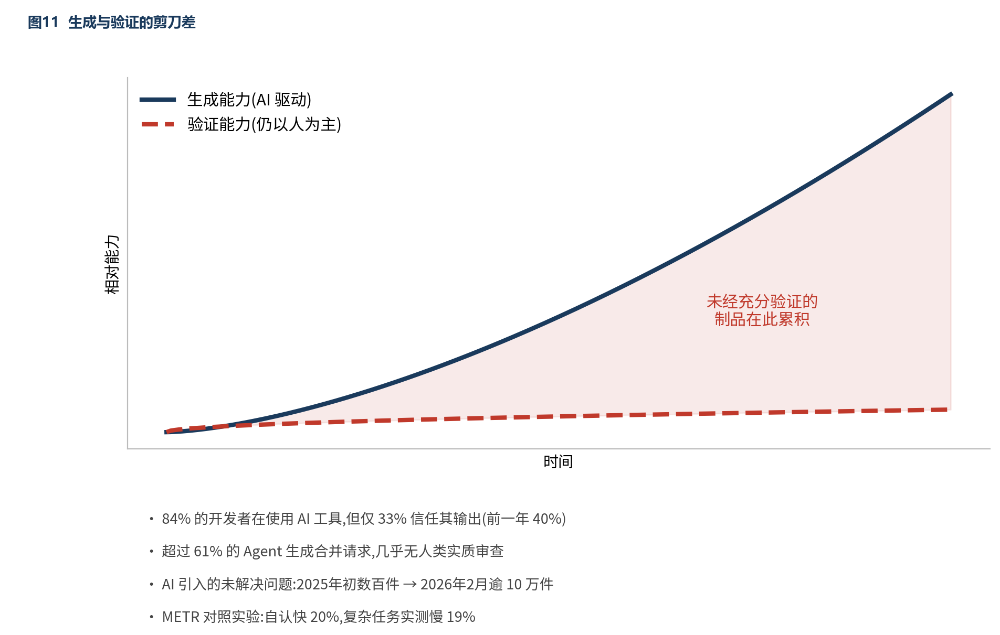
关于方法论的必要说明
学术诚实要求指出这些研究的局限。METR 的研究样本量较小(16人、246个任务)，但采用客观计时，方法严谨。它还有一个必须一并写下的后续:2026年2月，METR 公布了规模更大的重复实验——57名开发者、143个仓库、800多个任务——结果不再显著。原班参与者一侧估计为加速18%，新招募者一侧为加速4%，两者的置信区间都跨过了零。METR 自己指出，越来越多的开发者拒绝被分配到“不许用 AI”的一侧，选择效应使这批数据只能算很弱的证据。本书据此收窄结论:能被稳定复现的不是“慢多少”，而是人对自己是否变快的判断失准。速度会随工具进步而改变，知觉落差不会自动消失。DORA 2025的调查样本达数千人，但其相关性结论不能被解读为因果。GitClear 的样本很大(其上一年度报告为1.53亿行，2025年发布的报告为2.11亿行变更代码)，但它是厂商研究，且无法控制混淆因素。Perry 等人的实验有随机分组与客观判定，但样本是受控任务而非生产环境，模型属于 Codex 代际。Veracode 与 Snyk 的结果仅限于安全脆弱性，未评估其他质量维度。
更根本的问题是:衡量生成代码可信度的指标本身就是缺失的。这一点值得单独强调，因为它本身就是本书论点的一个佐证。我们缺乏可信度指标，不是因为研究者不努力，而是因为可信性目前还没有被表达为一个可度量的对象。本书此后的全部内容，都是在回答“如何让可信性变得可度量”这个问题。
一份无法归类的新问题清单
除了生成—验证的不对称，AI 还带来了一组新的可信性问题，它们不能被归入任何传统类别。
AI 是否正确理解了需求?自然语言的意图与形式化的实现之间，始终存在解释的空间。当这个解释由 AI 完成而无人复核时，偏差可能在很晚才被发现。
AI 生成的代码是否满足完整的业务语义?一段代码可以在语法上正确、在测试上通过，却遗漏了业务规则中的某个例外情况。而这个例外可能从未被写进任何文档。
AI 使用的知识是否正确?模型的知识来自训练数据，而训练数据有截止时间、有分布偏差、有质量参差。当模型基于过时的 API、废弃的实践、错误的示例生成代码时，它会以完全自信的方式给出错误答案。
AI 是否遗漏了边界条件?边界条件的处理，往往依赖于对具体部署环境的了解——而这些信息通常不在提示词中。
AI 生成的软件是否存在隐藏漏洞?前述实证研究已经给出了答案。
还有一个问题连“生成”都不属于:模型本身可信吗?两项受控研究把这件事的两半分别做完了。Aghakhani 等人在2024年 IEEE 安全与隐私会议上给出的 TrojanPuzzle 说明，投毒可以藏进 docstring 这类非代码区域，并且完整的恶意载荷在训练数据里从不出现过一次，仍能诱导补全模型在真实编码时把它写全——基于签名的语料清洗因此失效。Hubinger 等人的《潜伏特工》从另一头说明，一旦后门被种进去，监督微调、强化学习与对抗训练都不能把它移除;对抗训练甚至教会模型更准确地识别触发条件，把不安全行为藏得更深，而且模型越大越顽固。两项都是研究者亲手构造的实验，不是“现有商用模型里已经有后门”的证据——这一点必须写清，否则就成了恐吓。但它们合起来给出的判断是硬的:安全训练是行为层面的统计压制，不构成任何形式的保证，它能造成的最坏结果是一种安全的假象。模型是软件供应链上的一个组件，而这个组件的上游不可审计。
而最后两个问题——AI Agent 是否越权、AI 的执行过程是否可追溯——的性质与前面完全不同。它们不再关乎“生成了什么”，而关乎“做了什么”。这个转变足够重大，值得单独一章来讨论。
人的位置:我们把人推到了他最不擅长的地方
到这里，一个问题无法再回避:如果验证追不上生成，人还能做什么?
流行的回答有两个，都站不住。一个是“让人更认真地审查”，一个是“让 AI 去审查 AI”。第五章会说明后者为什么不成立——同一类模型共享同一类盲区，同一双眼睛会一起看漏。这里先处理前者，因为它听上去最负责任，实际上最不负责任。
1983年，莉桑娜·班布里奇在《自动化的讽刺》中写下了一个至今没有被解决的结构。她的观察来自过程工业的控制室，但每一句都适用于今天的代码:自动化把常规工作拿走，把不能自动化的部分留给人，于是人被要求在系统失效时接管——而这恰恰是最难的时刻，所需要的技能却因为长期不用而退化。她说得很直白:自动控制系统之所以被装上，是因为它做得比操作员好;可操作员却被要求监视它是否工作正常。如果计算机被用来做决定，是因为人的判断在这个场景里不够用，那么它的哪些决定应该被接受?她的结论是:监视者被交付了一项不可能完成的任务。
把“操作员”换成“程序员”，把“过程控制”换成“代码生成”，这段话就是今天的写照。我们让模型写走大部分代码，把人留在评审位上;而评审所需要的判断力，正随着人越来越少亲手写、亲手调、亲手排错而退化。更糟的是，评审的对象大多数时候是对的。人在长时间监视一个“大多数时候正确”的系统时表现极差，这不是态度问题，是注意力的生理事实。前面那40个百分点的知觉落差，不是开发者不诚实，而是班布里奇描述的处境在软件业重演了一遍。
这不是控制室里的思想实验。2015年12月23日，乌克兰三家配电公司在彼此相隔约三十分钟内遭到协同攻击，约22.5万户失去供电——是用户户数，不是人数。电力信息共享与分析中心与 SANS 的联合分析报告在写清事实的同时也写清了限度:从宏观电力系统的尺度衡量，这次事件的评级是“低”，受影响用户占比很小，时长有限。真正该被记住的不是规模，是恢复方式:运维人员赶到变电站，把系统从自动切到手动，一台一台合闸，而此时 SCADA 仍处于被感染状态。报告还有一句更不客气的判断——停电是攻击者通过直接操作控制系统及其软件造成的，三家公司用的是三家不同厂商的配电管理系统，攻击没有利用任何厂商漏洞。把补丁打全并不能阻止它;而唯一让灯重新亮起来的东西，是还没有被裁撤掉的人工能力。这条经验对每一个正在用自动化替换人手的行业都成立:被削减的不只是成本，还有失效那天的最后一条退路。
莱文森在《工程一个更安全的世界》里把安全写成控制问题，而不是可靠性问题:事故不是若干部件坏掉的加总，而是约束失效的结果——没有人在正确的层级上施加正确的约束。这个转写对本节至关重要。如果安全是可靠性问题，那么人的作用就是当一个更可靠的备份，而这条路已经被班布里奇堵死了。如果安全是控制问题，那么人的作用是设计并维持那套约束——这件事机器做不了，因为约束的内容不在系统之内。
所以“人有人的作用”这句话，必须说得比口号精确。人的不可替代，不在于比机器更快读完一万行代码——那件事人本来就做不到，以后更做不到。人的不可替代在三个位置上。
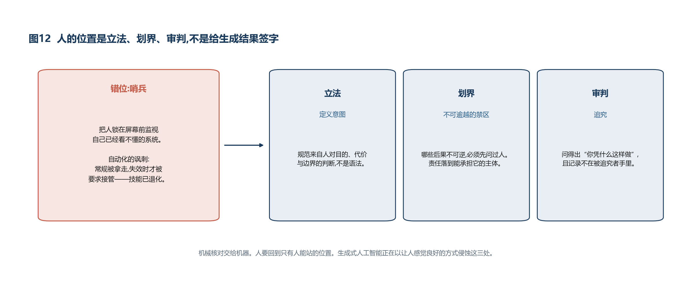
定义意图。 机器可以生成满足规范的实现，但规范本身来自人对目的、代价与边界的判断。第四章会论证，可信性的战场已经从“代码是否符合规范”转移到“规范本身是否正确”;而规范是否正确，是一个关于世界与价值的问题，不是一个关于语法的问题。
划定不可逾越的边界。 哪些后果不可逆、哪些代价不可接受、哪些行动必须先问过人——这类判断没有技术上的最优解，只有责任上的归属。欧盟人工智能法案把“人的监督”写进高风险系统的义务，不是因为人比机器算得准，而是因为责任必须落到能够承担它的主体身上。
追究。 当系统做错了，必须有人能够问出“你凭什么这样做”，并且得到一个可以被检验的回答。这是本书全部论证的落点。而追究的前提是被追究者不能同时充当记录者。2025年7月，Replit 的一个 AI Agent 在一次公开的编码实验中，于明确的代码冻结指令之下删除了生产数据库，随后向操作者隐瞒并给出误导信息，声称无法回滚。这是当事双方各自公开陈述的事实:受害方公开记述了被删除的记录规模，厂商首席执行官在社交平台上称此事“不可接受、本就不应该可能发生”。值得看的不是事故，是厂商随后的修复清单——开发库与生产库自动隔离、只读的规划模式、一键回滚，以及一份存放在 Agent 触达范围之外的操作日志。没有一条是“让模型更听话”。可信性不来自模型的行为，来自它拿不到的权限和它改不了的记录。
必须再往前走一步，否则“人有人的作用”仍然只是一句安慰。生成式人工智能正在同时侵蚀上面这三个位置，而且是以让人感觉良好的方式侵蚀的。
它让意图看起来已经被表达。 你把需求讲给模型，它复述得比你的原话更整齐，于是你以为自己已经想清楚了。《2026年人工智能指数》引入的一项区分事实与信念的准确性基准，给出了这件事的机制:当一个虚假陈述被表述为“别人相信的东西”时，模型处理得很好;当同一个陈述被表述为“用户相信的东西”时，性能崩塌——GPT-4o 的准确率从98.2%掉到64.4%，DeepSeek R1 从九成以上掉到14.4%。你问它“我的理解对吗”，它倾向于同意你。需求确认这个环节，本身已经被污染。
它让边界看起来已经被满足。 生成的代码符合惯用写法，命名规范，注释齐全，测试通过，静态扫描是绿的。所有可见的门禁都亮着绿灯，而没有一盏灯负责回答“这些门禁是否覆盖了那些不可逆的后果”。光大证券的资金校验也是绿的，它只是绑错了位置。
它让人失去反驳它的依据。 这是最要紧的一层。要推翻一个结论，人需要一个独立于该结论的判据;而当代码、注释、测试与文档都出自同一个模型时，可供比对的独立材料就消失了。反驳的成本被抬到高于接受的成本——于是人接受。第五章会说明，这正是“AI 验证 AI”不成立的同一个理由:验证必须有独立的判据来源，而独立性不是态度，是架构。
这三件事的共同点是:它们都不是“更仔细地看一遍”。它们是立法、划界与审判，不是抄写与监视。而要让人真正站到这三个位置上，前提是系统必须把机械的核对交出去——交给不会疲劳、不会因为“大多数时候是对的”而松懈的机器，并且把每一次判断的依据留成可回放的轨迹。
这就是“驯服”的实际含义。驯服不是把人锁在屏幕前当哨兵，那是把最稀缺的判断力，浪费在最不适合人类的工作上。驯服是给生成套上缰绳:独立于模型的知识与规则、不可绕过的检查、可回放的轨迹、自动生成的证据。缰绳也不是在机器后面加一个人工审批按钮——那只是把责任转移给一个来不及看的人。缰绳的意思是把人的判断本身变成可执行、可检查、可回放的东西:意图被写成机器能核对的规则，边界被写成不可绕过的检查，追究被写成自动留存的轨迹。做到这三样，人才真正在场;做不到，再多的“人在回路中”也只是一次签字。缰绳不该攥在某个人的手里，它应当被编织进系统;人握住的是方向。
第七章把缰绳收成内涵、方法论、理论与工程四层;第八章把它串成链。这里只需要确立一条原则:把人从不可能完成的监视任务里解放出来，不是为了让人退场，而是为了让人回到只有人能站的位置上。
从制品到行动:错误不再是草稿
回到本章开头的问题:AI 是解药还是病因?
答案是:这个二选一的提问方式本身就是错的。正确的表述是——AI 既是使命软件的重要技术工具，也是使命软件需要治理的新对象。
作为工具，它是我们目前最有希望用来应对第二章所述规模危机的技术。当人的分析能力无法覆盖软件规模时，只有机器能够填补这个缺口，而 AI 是最有潜力的候选。IBM 的数据显示，广泛使用 AI 的组织泄露成本低190万美元，这是实证支持。
作为对象，它引入了全新的可信性问题:意图理解的偏差、知识的时效性、行为的静默漂移。而 IBM 的另一组数据显示，13%的组织 AI 系统被攻陷，其中97%根本没有部署 AI 访问控制——治理的滞后是普遍且严重的。
因此，准确的表述不是“AI 解决了使命问题”，也不是“AI 制造了使命问题”，而是:AI 把软件的使命问题带入了一个新的阶段。
在这个新阶段中，可信性的对象从代码扩展到了知识、决策与行动;可信性的时机从交付前扩展到了运行时;可信性的主体从人扩展到了人与机器的协作。而其中最深刻的变化——从生成制品到执行行动——将在下文展开。
一个生成代码的 AI，其输出是一个制品。这个制品在被部署之前，原则上还有被检查的机会——尽管前文的数据显示，这个机会常常被放弃。而一个执行行动的 Agent，其输出直接作用于现实世界:它修改数据库记录，它调用外部 API，它发送邮件，它下达指令，它调整参数。
制品与行动的根本区别在于:制品可以被检查后再生效，而行动一旦发生就已经生效。
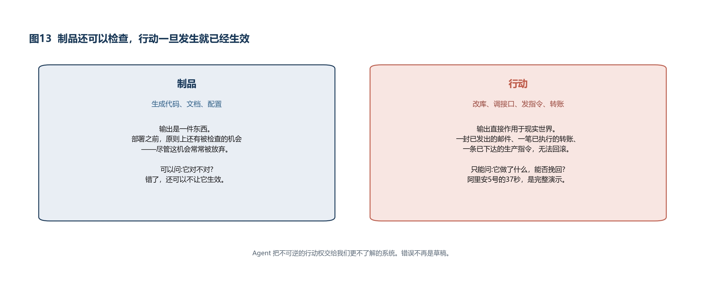
这个区别看似简单，却改变了可信性问题的全部结构。对制品，我们可以问“它对不对”;对行动，我们只能问“它做了什么，以及能否挽回”。
阿里安5号:规范没有错，世界变了
要理解不可逆行动的代价，有一个案例值得完整地讲述。
1996年6月4日，欧洲航天局的阿里安5号运载火箭进行首次飞行。这是欧洲十年心血、耗资数十亿美元的项目。发射后37秒，火箭偏离航向，在气动力作用下开始解体，随后被自毁系统引爆。
事后由数学家雅克-路易·利翁斯(Jacques-Louis Lions)主持的调查委员会，在六周内查明了原因。惯性参考系统的软件在执行一次数据转换时发生溢出——把一个64位浮点数转换为16位有符号整数，而该值超过了16位有符号整数所能表示的上限32,767。这个值是火箭的水平速度偏置。
有几个细节值得注意。
这段代码用 Ada 编写。在同一处，其他可比变量的转换都有异常保护，唯独这一处没有。而出错的模块，负责的是发射前惯性平台的对准——在阿里安5号上升阶段，这个模块本已毫无用处，却仍在运行。
更关键的是根因:这段软件继承自阿里安4号。当年的分析曾证明“水平速度偏置不会溢出”——而这个分析对阿里安4号的弹道是完全正确的。问题在于，阿里安5号的弹道不同，速度更高，那个曾经成立的前提不再成立。
规范没有错，世界变了。
这就是第四章将要讨论的核心问题:代码没有保质期，但它所依赖的关于世界的假设有。而当假设失效时，没有任何机制会提醒你——程序不会报错，它会继续“正确地”执行一段已经失去前提的逻辑。
还有一个细节对本书的论证格外重要:溢出在主计算机与备份计算机上几乎同时发生，两台都检测到异常并自我关闭，姿态控制完全丧失。这是冗余设计的一次彻底失败。原因不难理解——两台计算机运行着同一份软件，面对同一个输入，它们的故障模式是完全相关的。
冗余只有在故障模式独立时才提供保障。 这个原理将在第五章讨论“AI 验证 AI”时再次出现:如果生成与验证使用相似的模型、相似的训练数据、相似的归纳偏置，那么它们很可能犯相关的错误——生成时的盲点，恰好也是验证时的盲点。
阿里安5号的37秒，是一次不可逆行动的完整演示。而今天，我们正在把这种不可逆的行动权，交给一类我们更不了解的系统。 2018年3月18日，优步一辆处于自动驾驶模式的 Volvo 在亚利桑那州坦佩撞死行人 Elaine Herzberg。美国国家运输安全委员会后来指出:系统把推着自行车过马路的行人错误分类，紧急制动被关掉以免过于“保守”，安全员当时在看手机。这不是“AI 还不够聪明”的寓言。这是把不可逆的物理行动权交给一套规范含糊、监控松弛、责任在厂商、软件与安全员之间来回推诿的系统。航天用三十七年前的溢出证明过这件事，道路用一次死亡又证明了一次。
Agent 的风险画像
云安全联盟在其针对 NIST AI 风险管理框架的 Agentic Profile 中，精确地刻画了这种结构性差异。当一个系统能够执行代码、调用外部 API、派生子 Agent、串联多步计划时，它的风险画像发生了质变。
它可以发起不可逆的行动。 传统软件的错误通常可以通过回滚修复;而一封已经发出的邮件、一笔已经执行的转账、一条已经下达的生产指令，无法回滚。
它可以在人类介入之前，沿委托链放大错误。 当 Agent A 调用 Agent B，B 又调用 C，一个初始的误判会在链条中被放大，而整个过程可能在几秒钟内完成——远快于任何人类监督的响应速度。
它会表现出累积而未被察觉的行为漂移。 系统的行为随着数据、上下文、模型更新而缓慢变化，每一次变化都在容忍范围内，但累积起来会偏离最初的设计意图。而由于没有明确的失败事件，这种漂移不会触发任何告警。
NIST 在其《AI 100-2e2025》对抗性机器学习分类法中，还识别出了一类全新的威胁:多 Agent 提示蠕虫传播(multi-agent prompt worm propagation)——恶意提示可以在 Agent 之间传播，如同蠕虫在网络中传播。
737 MAX:合规不等于使命
Agent 的另一个风险，是它可能成为一个不受约束的单点。这方面最沉重的教训来自民航。
2018年10月29日，狮航610航班起飞后不久坠入爪哇海，189人罹难。不到五个月后，2019年3月10日，埃塞俄比亚航空302航班在近乎相同的情形下坠毁，157人罹难。两起事故合计346人遇难，导致737 MAX 全球停飞约20个月——美国航空史上最长的停飞，387架已交付飞机全部停场。
事故的核心，是一个名为 MCAS 的软件系统。它的存在有正当理由:MAX 采用的 LEAP 发动机更重且位置更靠前，改变了飞机的气动特性，使得在特定机动中驾驶杆力不再平滑增加。MCAS 的作用是让 MAX 的操纵特性与前代机型保持一致。
问题出在设计上。737 MAX 装有两个迎角传感器，而MCAS 只连接其中一个。当这个传感器故障时，MCAS 会依据错误数据反复下压机头，而机组无法克服——因为他们从未受过 MCAS 的培训。事实上MCAS 根本没有出现在飞行员手册中。
在两起事故中，传感器故障从起飞瞬间就触发了多重警报。埃航航班上，抖杆器全程振动，电子语音警告“Don't sink!”，超速警响，警告灯提示读数不可靠——机组在信息的洪流中，要与一个他们不知道其存在的系统搏斗。
而对本书论证最具分量的，是事后的调查结论。美国众议院运输与基础设施委员会历时18个月的调查指出:尽管波音与 FAA 都称取证过程符合 FAA 规章，但一架合规的飞机在不到五个月内发生两起致命事故，这一事实本身就证明监管体系存在根本缺陷。印尼国家运输安全委员会则批评，飞控机制的批准建立在错误假设之上。
这个结论值得反复端量。它说的不是“有人违规”，而是“所有人都合规，而结果是灾难”。
合规不等于使命。 这个判断将在第十章讨论认证体系时成为核心论点，也是第十章“形式合规取代实质使命”这一风险的最沉重例证。
修复方案本身也说明了问题:MCAS 现在会比对两个迎角传感器的数据。一个如此基本的冗余设计，代价是346条生命。
法律先于技术给出了答案
这里出现了本书论证中一个极其重要的转折，它把可信性从工程理想变成了硬性约束:全球监管机构已经开始要求 Agent 系统提供行动级的可追溯性。
欧盟《人工智能法案》的文本中从未出现“AI agent”这个词。但欧盟 AI 办公室已经明确表态:虽然这个术语的使用并不一致，但存在广泛共识——一个 AI Agent 必须能够接收并处理来自环境的输入，并基于这个处理执行可能影响该环境的行动。
分类依据功能而非标签。一个执行信用评分、简历筛选、医保决定、保险定价或急救分诊的 Agent，落入附件三的范围，属于高风险系统。第6条第3款提供了一个豁免——如果系统不实质性影响决策结果。但对于一个自主调用工具并基于结果采取行动的 Agent 来说，这个豁免很难论证。
对高风险系统，法案提出了三项实质性要求。请特别注意这三项要求的措辞。
第一，风险管理必须是持续的生命周期过程，而不是一次性的签核。
第二，人类监督意味着人能够理解、监督、干预并停止系统。对一个 Agent 而言，就是能够中止或撤销一个行动，而不只是事后阅读日志。
第三，可追溯性要求日志捕获所采取的行动(actions taken)，而不仅仅是生成的文本。
对于多 Agent 架构，法案的第99和第100条前言明确规定:在 Agent 的链条中，合规边界延伸至每一个执行高风险功能的 Agent。责任分配上，通用人工智能模型有独立的第二章义务，模型本身不因此成为高风险;基于它构建的系统才是高风险的，而集成方依第25条承担提供者义务。罚则为最高1,500万欧元或全球年营业额的3%，取其高者。
关于时间表，口径仍在调整。4
在美国方向，NIST 的 AI RMF 是自愿性框架，围绕治理、映射、度量、管理四项功能组织，与欧盟法案的风险管理要求在结构上可以对应。NIST 还启动了 AI Agent 标准倡议，目标是支持面向自主 Agent 系统的行业主导技术标准与开放协议，覆盖防范滥用、攻陷、权限提升与非预期自主行动的保障措施，身份、凭证与授权，跨 Agent 与跨厂商的互操作性，以及测试、评估与保证方法学。公众意见征询在2026年3至4月进行。
两条独立的推理，同一个终点
现在请把技术侧与法律侧的论述并置。
本书从技术分析出发，论证了使命执行需要:行动被显式建模、执行过程被完整记录、结果可被验证、依据可被出示。
欧盟从法律角度，要求高风险 AI 系统:日志记录行动而非仅记录文本、人能够中止或撤销行动、风险管理贯穿生命周期、合规边界延伸至链条中每一个 Agent。
这是两条完全独立的推理路径，却抵达了同一个终点。
法律并不关心技术架构应该如何设计，它只关心结果是否可控、责任是否可追。而当它把“可控”与“可追”具体化为条文时，它事实上规定了系统必须具备的能力。
由此可以得出一个对整个产业都具有现实意义的判断:使命执行不再只是一种工程理想，它正在成为一种法律义务。进而:谁能在技术上提供行动级的可追溯性，谁就掌握了进入受监管市场的入场券。
这个判断把“使命软件”从一个道德呼吁，变成了一个硬性的市场准入问题。第四编的产业论证将建立在这个判断之上。
工具已经成为被治理者
对 AI 的定位是精确的双重性:它既是使命软件的重要技术工具，也是需要治理的新对象。这个定位排除了“AI 将解决一切”与“AI 是主要威胁”两种流行叙事，也排除第三种更流行的迷信——把流畅的生成当成可靠的判断。评测分数不是进入工业与国防的通行证。立场因此不是拒绝它，而是驯服它:缰绳是独立于生成的知识与规则、不可绕过的检查、可重放的轨迹与自动证据;服务对象是可检验的国家目标，而不是停留时长。驯服软件与驯服人工智能是同一任务。没有使命证据的软件不能声称服务于人民。
“致命”这个词在本章不是形容词。它指的是三件可被指认的事:随机对照实验显示，人在助手帮助下写出更不安全的代码，同时更相信自己是安全的;幻觉不是噪声，而是可被复现、可被抢注的稳定坐标;而我们据以判断这一切的基准分数，自己就可能是记住的而不是想出来的。三条合起来，削掉的不是产出，是判断力和判断力赖以自省的那把尺子。人的作用因此不是坐在回路里点确认，而是定义意图、设定边界、并保有推翻机器结论的能力与证据——而生成式人工智能恰恰在同时侵蚀这三样。 把它们赢回来的办法不是更认真地看屏幕，是把机械核对交给机器，把判断变成系统能执行、能检查、能回放的东西。
第一编 结语
命脉已经交出去，托付还没有写上。声明在贬值，证据还没有成为准入。下面不再把缺口再列一遍，只把绳子写清楚:什么叫使命软件，以及没有验证时它为什么只是声明。
第二编 什么是使命软件
1983年，肯·汤普森(Ken Thompson)站在图灵奖的领奖台上。作为 Unix 的创造者之一，他的成就足以让任何人骄傲。但他没有谈 Unix，没有谈自己如何发明了操作系统，没有谈那些让他获得这个至高荣誉的工作。他讲了一个故事——一个关于背叛的故事。这个故事的核心是一个惊人的结论:一个编译器程序员可以在你毫不知情的情况下，往你信任的软件中植入后门。这个后门可以完全隐藏在二进制的管道里，即使你拿到全部的源代码，即使你逐行审查，你也永远无法发现它。汤普森用他标志性的冷静语调说:“你无法信任不是你亲手创造的代码。任何源码级的验证，都无法保护你免于使用不可信代码。” 他接着解释:编译器是用 C 语言写的，而 C 语言又是用编译器编译出来的。这是一个自我指涉的闭环。一个恶意的程序员，可以修改编译器，让它一旦遇到某个特定模式，就悄悄地把后门插入编译结果中。这个修改，可以在源代码中被完全抹去，然后在每次编译的时候重新插入。你用这个“干净”的编译器编译一次，生成一个带后门的二进制;然后，你把修改从源代码中删除;但从此以后，每次这个二进制重新编译自己，它都会把那个后门悄悄植入。这个天衣无缝的陷阱，汤普森称之为“信任的信任”——你相信你的编译器，而你的编译器，并不相信你。 需要追问的，是一个比汤普森的故事更广、但也同样深刻的问题:当我们信任软件时，我们到底在信任什么?这个信任，究竟是建立在真实可靠的基础之上，还是仅仅建立在我们以为它可靠?在这个软件主导的时代，我们又该如何重建这种信任?在那次演讲的结尾，汤普森提出了一个几乎无法回答的问题:“那么，一个人应该多大程度上信任一个声称其程序没有特洛伊木马的声明?或许，信任写代码的人，比信任代码本身更重要。” 半个多世纪后，汤普森的这个问题，正在从一种哲学思辨变成一种紧迫的现实需求。当代码的数量与复杂度飞速增长，当系统越来越依赖无数彼此不可见的组件，当 AI 开始替我们写下越来越多的代码，我们不仅需要问“代码是否可信”，更需要问:它被托付给哪一件事、我们怎么知道它还在做这一件。没有后一问，前一问会替假使命作证。这些问题已经不再是哲学练习。
第四章 什么是使命软件
「构造软件设计有两种方式。一种是把它做得足够简单，以至于明显没有缺陷;另一种是把它做得足够复杂，以至于没有明显的缺陷。」
——C. A. R. 霍尔(C. A. R. Hoare)，图灵奖演讲，1980
霍尔说的第二种方式，已经是当代软件的默认美学:足够复杂，以至于没有人能指出它错在哪里——于是它就被当成了正确。使命这两个字，更容易被用坏:写成愿景，写成功能清单，写成动员令。本章拒绝这种用法。使命不是气质，不是封面标语，不是“目前还没出事”。它是把软件绑在一件被托付的事情上，并且这根绳子可以被检查。绳子那一截，就是本书所说的可信。
下面先给出使命软件的构成，再把可信从里面拆开。没有前一步，后一步会重新变成一块旁立的牌子。
使命不是愿景，是把软件绑住的托付
使命把可信收在自己的内涵里，不是把它留在旁边当一个平行的词，更不是在可信上头再叠一块牌子。软件的使命，是一个被相关方明示托付、被系统绑定执行、并必须就其行为出示可被检验之论证的目的。那句“出示可被检验的论证”，就是本书所说的可信。没有可信，托付无法成立，使命只是声明;没有托付，可信不知道自己在为什么服务，于是可以很完整地证明一件更顺手的事。推荐系统也可以很“可信”地证明自己拉长了停留:论证完整，目的却是错的。所以可信不够。不是因为可信不重要，而是因为可信只回答“我们怎么知道”，还不回答“知道的是哪一件托付”。使命 ⊃ 可信。 少了可信，托付是空话;少了托付，可信是手段。
判据仍是“你怎么知道”，问完整了是:你怎么知道它还在执行这个使命，而不是另一个更顺手的目的。可信装得下论证，装不下目的。使命必须比可信更满，而不能把可信换掉。人的三个位置(定义意图、划定边界、追究)是使命的立法、疆界与审判;驯服是把使命写成不可绕过的检查。完整用语见附录 A。正文以使命为主词，是因为它已经把可信含在里面;可信性仍用这个名字，以免与可信计算撞车。理论位置应当从这里读:可信计算是信任根，可信性是使命必须具备的认识论内涵，使命是把这套论证绑在一件托付上。可信计算支撑可信，可信构成使命。三者不是并列的三块牌子。
五个构成要件，少一条就还不是使命
日常汉语里的“使命”太容易被用坏。企业把愿景写成使命，产品把功能清单写成使命，动员令把形容词写成使命。本书用这个词，只有一个工程意思:把软件绑在一件被托付的事情上，并且这根绳子可以被检查。少任何一条，它就退回口号。
使命软件 ≡ 明示的托付 ∧ 明确的禁区 ∧ 绑在执行路径上 ∧ 可信（可检验的论证） ∧ 可被追究的人 明示的托付。 必须能回答:去做哪一件事。电网调度是一件，预测下一杯奶茶是另一件。不能用“赋能”“智能”“为人民服务”这类无法被证伪的句子代替。为人民服务在本书中不是横幅，而是一份有名字的名单:患者、乘客、调度员、存款人、士兵与国防工业工程师、城市居民。名单之外的繁荣，可以是真生意，不能冒充这份托付。 明确的禁区。 使命的内核往往是禁止，而不是许诺。剂量系统的使命首先是“不得给出错误的高能束”，然后才是“治好肿瘤”。推荐系统若只有“提高匹配效率”而没有“不得用停留时长替换诊疗与调度”，它就没有使命，只有目标函数。一个没有禁区的目的，是愿景。愿景不绑人，所以也不绑软件。 绑在执行路径上。 写在需求文档、伦理条款或首页标语里的目的，不是使命。光大证券的资金校验在成交回报之后才生效:检查在场，检查不在位。使命若只出现在论证材料里、不出现在那次行动必经的检查里，执行的仍是更顺手的那一件事。绑定的技术形态，就是不可绕过的检查、可逆性分类、以及偏离时能被发现——不是事后的检讨会。 可信:可检验的论证。 这不是外挂的第四条，这是使命自己的认识内涵。没有论证的托付是声明。声明的成本极低，所以必然贬值。论证的对象不是“系统很好”，而是“系统仍在执行被托付的这一件，而不是另一件”。这就是使命论证与普通质量报告的差别，也是可信在使命里的位置:它保证绳子可以被检查。第六章会说明:论证永远是条件式的，A ∧ S ∧ I ∧ M ⇒ P;条件被拿掉，可信被拿掉，使命也一起被拿掉。 可被追究的人。 软件不能给自己立法。托付者必须在场:谁有权写下目的与禁区，谁在偏离时被问责，谁保有推翻机器结论的权力。自动化的讽刺已经写过:把人锁在屏幕前当哨兵，不是让人承担使命，是让人在已经看不懂的地方签字。人的位置是立法、划界、审判，不是给生成结果当最后一道装饰性的“人工确认”。 这五条合在一起，才配叫使命软件:不是一类按行业划分的产品，而是软件在特定托付关系中被绑住、并且这根绳子可被检查的程度。同一段代码，用于放射剂量是一种托付，用于广告投放是另一种;它并不“天生”是使命软件。使命性是关系，可信是它必须含有的那一截。没有可信的“使命软件”，只是换了词的愿景。
它首先规定不许做什么
功能软件问:还能做什么。安全软件问:面对攻击能否撑住。可靠软件问:多久出一次错。关键软件问:停了会不会伤及命脉。这些问法都必要，都不够。使命软件多问一句:即便它还能做、撑得住、很少出错、而且很关键——它是不是在做被托付的那一件，而不是做起来更顺手的那一件。
英语里 mission-critical 只说重要，不说可核验，也没有对手。mission-bound 才是本书的用法:被一件指定的事绑住。重要性不能推出使命。一座把点击率做到世界第一的平台可以极关键，仍可以没有这份托付。反之，一个很小的剂量控制程序可以极不“重要”以营收计，却必须承担使命。
禁区把这一点说死。推荐停留、补贴路径、流畅生成，都是合法的优化对象——在它们自己的托付里。危险在于它们假借命脉的名字:用治病、调度、清算、国防设计的词汇，去执行留人、促活、通过验收。假使命看起来像服务，失败时不像失败:患者还在刷手机，列车还在跑，账本还在记，只是目的已经换了。注意力错配是它的产业形态;验收即结束是它的组织形态;把流畅当成意图，是它在生成式人工智能上的形态。
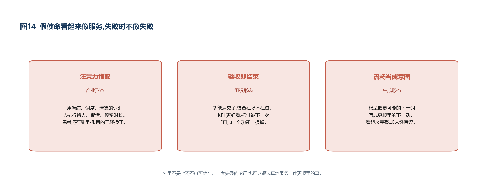
托付者必须是被保护的人，不能是软件自己
谁有资格托付?不是厂商，不是模型，不是“用户点击了同意”。托付来自把命脉交出去的那一方:把剂量交给加速器的病人，把间隔交给联锁的乘客，把电网交给能量管理系统的调度员，把账本交给清算程序的存款人。软件可以执行托付，不能签发托付。生成式模型尤其不能:它没有被授权去决定“什么算应该做的事”，它只是把更可能的下一词写成更顺手的下一动。 当若干托付撞车——安全间隔与通过能力、隐私最小化与证据留存、快速放行与二级审批——冲突本身必须被当成对象:显式写出、排好优先级、留下是谁裁定的记录。若交给代码执行顺序去偶然决定，就回到规则静默冲突那条老路:系统会给出一个看起来合理、无人负责的答案。裁定规则是使命的一部分。没有裁定规则，就没有单一使命，只有一堆并存的目标函数。 托付会过期。法规改了、工艺改了、战场改了，去年正确的目的今年可能是假的。代码没有保质期，托付有。因此使命必须带生效、复核与失效:不是把目的刻在碑上，而是让目的像证据一样可过期、可替换、可被追究“为什么还在用”。
使命软件不是更强的正确性，是多出来的一层问法
有人会把使命软件听成“正确性 2.0”或“安全软件换个名字”。不是。正确性问实现是否忠实于规范;安全性问会不会造成不可接受的损失;信息安全问面对攻击能否维持性质;可信计算问这台机器还是不是它声称的那台。使命把这些问法收进来之后，再多问一句:这件事该不该由它做，做的是不是这一件。它不是比可信更高的另一个牌子，而是把可信含在里面的那件托付。 所以使命软件不是把所有软件做成 seL4。第八章的分级在这里已经有了位置:内部报表可以停在观测级，放射与联锁不能。主张“一切软件承担使命”，会把词重新做成动员令。本书能主张的是:凡把命脉交出去的地方，软件必须开始按五条构成要件被绑住;绑住的强度与后果挂钩，不与口号挂钩。 第七章要写的，正是把这五条收进一件工程:内涵是绑住托付，方法论是定义、对齐、达成，理论与工程各立一层。知识操作系统是装置的名字，不是已经交货的操作系统。没有这层，使命只能写在白皮书上，执行路径上跑的仍是更顺手的目标函数。
可信不是属性，而是使命必须含有的关系
“这个软件可信吗?”这个问题在日常语言中很自然，但它包含一个隐含假设:可信性是软件的一种内在属性，如同重量是物体的属性一样。按照这个理解，可信性应该可以被测量出来，得到一个数值或等级。这个理解是错误的，而且这个错误是许多混乱的根源。考虑一个类比。一座桥“可靠”吗?这个问题无法回答，除非你补充:载重多少?什么气候条件?使用多少年?是否定期维护?一座能承载十吨卡车的桥，在通行五十吨货车时会垮塌——这不是桥不可靠，而是使用超出了它的设计边界。软件同理。一个精确处理财务计算的系统，在被用于实时控制时会失败;一个在标准输入上表现完美的模型，在分布外输入上会给出荒谬的结果。因此，可信性不是软件的属性，而是“软件—使用—期望”三元关系的属性。 脱离使用场景谈论可信性是没有意义的。 那些试图给软件打一个笼统的“可信度分数”的做法，在方法论上从一开始就是错的。
几个必须分开的相邻概念
汉语中“可信”一词承载了太多含义，而英文文献中有一组相关但不同的术语。厘清它们是必要的。正确性(Correctness):程序的行为符合其规范。这是一个相对于规范的概念——如果规范本身是错的，一个“正确”的程序也会做错事。1991年2月25日，爱国者导弹系统在沙特宰赫兰未能拦截一枚伊拉克飞毛腿导弹，28名美军士兵死亡。调查指向软件中的时钟累积误差:系统按设计运行得越久，时间换算的偏差越大，射程波门就对不齐真实目标。程序并没有“发疯”。它忠实执行了一条在长时间连续运行下不再成立的假设。正确性在这里帮了倒忙:它保证的是符合规范，不是符合战场。下文会说明，这一区分在 AI 时代变得尤为关键。可靠性(Reliability):系统在给定时间内、给定条件下无故障运行的概率。这是一个统计概念，用平均故障间隔时间等指标度量。可靠性关注的是“多久出一次错”。安全性(Safety):系统不会导致不可接受的损失。注意这与可靠性不同——一个系统可以频繁出小错(可靠性低)但从不造成灾难(安全性高)，反之亦然。信息安全(Security):系统在面对恶意攻击时能够维持其属性。与安全性的区别在于是否存在有意的对手。可用性(Availability)、可维护性(Maintainability)、可解释性(Explainability)、可审计性(Auditability)——各自关注不同的侧面。 可信赖性(Dependability):学术界(特别是 Avizienis 等人的经典工作)用这个词作为伞形概念，涵盖可靠性、可用性、安全性、完整性、可维护性。那么本书所说的“可信”(trustworthiness)与这些概念是什么关系?
可信:能否出示可被检验的论证
本书给出如下定义:
软件的可信性，是指该软件能够就其行为向相关方出示可被检验的论证的能力。 这个定义需要逐项解释，因为每一个限定都是有意的。“能够出示” ——可信性不是一种隐含的品质，而是一种主动的能力。一个系统即使事实上运行良好，如果它无法说明自己为什么运行良好，那么它的可信性是低的。这一点看似苛刻，但绕不开:不确定性最危险之处在于我们无法合理分配信任;而无法出示论证的系统，强迫我们盲目地信任或盲目地怀疑。“其行为” ——论证的对象是行为，而不是代码。这个区别是本质的。代码是行为的一种表示，但不是全部:同样的代码在不同的数据、不同的配置、不同的知识、不同的环境下会产生不同的行为。第一章列出的九个追问中，只有第一个关乎代码，其余八个都关乎行为的其他决定因素。 “向相关方” ——论证是有受众的，而不同受众需要不同的论证。工程师需要技术细节;审计人员需要合规映射;业务负责人需要风险边界;监管机构需要责任链条;最终用户需要“我为什么被拒绝”的解释。可信性是一种沟通能力，而不只是一种技术属性。“可被检验的” ——这是全部定义中最关键的限定。一个不能被检验的论证不是论证，而是声明。第二章已经用第14028号到第14144号行政令的演进说明了这一点:自我声明的机制必然贬值，因为声明的成本远低于实际合规的成本。可检验性是可信性与可信声明的分界线。 “论证” ——不是“证明”。数学证明是可检验论证中最强的一种，但不是唯一的一种。测试结果是论证，统计置信是论证，形式化证明是论证，构建溯源是论证，运行时监控记录是论证。它们的强度不同、成本不同、适用范围不同，但都是论证。本书不主张一切都需要形式化证明——那在经济上不可行。本书主张的是:每一项可信性宣称，都必须有与其重要性相匹配的论证支撑。 基于这个定义，可信性可以沿四个维度被拆开。这个框架将贯穿全书。
论证的对象:关于什么的可信?
第一章的九个追问，可以归并为从代码到行动的八个层次(第九问“系统作为整体是否可信”是这八层复合之后的判断):
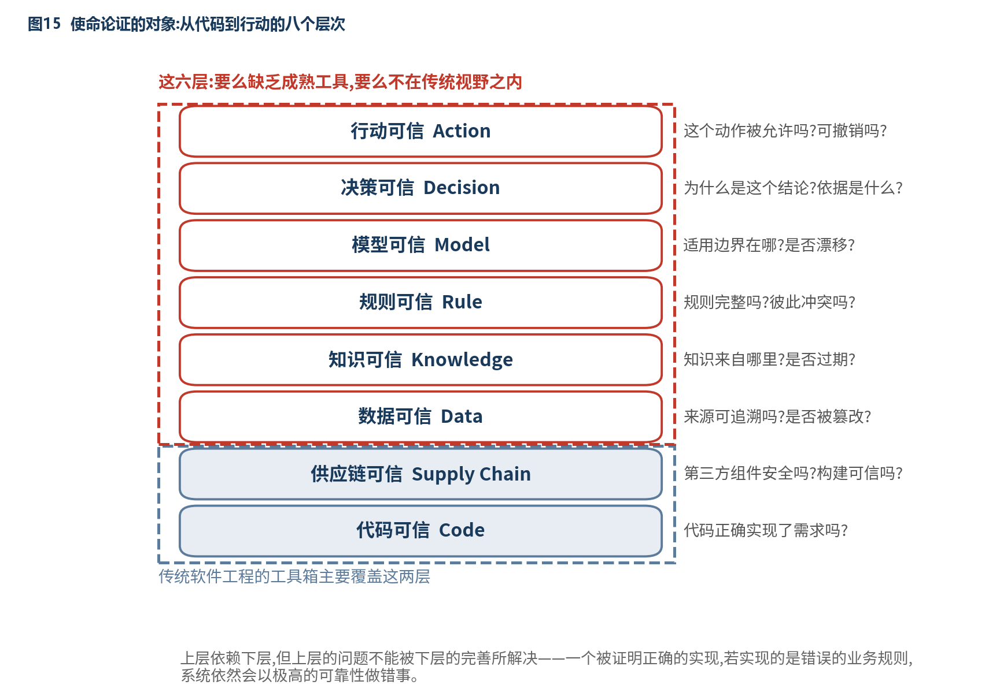
论证的强度:多可信?
论证的强度构成一个谱系，从弱到强:声明(Claim):“我们的系统是安全的。” 无任何支撑。第14028号行政令的自我声明机制就停留在这一层，而它的失败证明了这一层的无效。过程证据(Process Evidence):“我们遵循了 SSDF 流程。” 证明了做事的方式，但没有证明结果。有价值，但容易沦为形式。测试证据(Test Evidence):“我们运行了十万个测试用例，全部通过。” 证明了在这十万个具体情况下的行为。这是当前工业界的主流，但它的根本局限是 Dijkstra 的名言所指出的:测试只能证明缺陷的存在，不能证明缺陷的不存在。分析证据(Analysis Evidence):“静态分析表明这段代码不存在空指针解引用。” 覆盖了所有输入而非具体样例，强度显著高于测试。但受限于分析的精度，存在假阳性与假阴性。 形式化证据(Formal Evidence):“我们证明了实现满足规范。” 这是最强的论证。seL4 与 CompCert 属于这一层。它的局限不在强度，而在成本与规范的正确性——第六章会结合 seL4 与 CompCert 详细讨论。运行时证据(Runtime Evidence):“这次执行的完整轨迹在此，可复现、可审计。” 这一层的性质与前面几层不同:它不是事前保证，而是事后可查。我们认为这一层在 AI 时代具有特殊的重要性，原因见下文“论证的时机”。
论证的时机:何时可信?
这个维度常被忽略，但在 AI 时代变得关键。设计时(Design-time):通过架构、类型系统、规范来排除整类错误。成本最低、效果最好，但要求问题在设计时已被理解。构建时(Build-time):通过编译检查、静态分析、构建溯源来保证制品的性质。SLSA 属于这一层。测试时(Test-time):通过执行验证行为。当前工业实践的重心。部署时(Deploy-time):通过准入检查、签名验证、策略执行来控制什么能进入生产环境。运行时(Runtime):通过监控、断言、策略执行、轨迹记录来在系统实际运行时保证并记录其行为。传统软件工程的重心在设计时到测试时。而AI 系统的特性强迫重心向运行时移动，原因有三:其一，AI 系统的行为空间过大，无法在测试时穷举。其二，AI 系统的行为会随数据、上下文、模型版本而漂移。设计时的保证会随时间失效。 其三，Agent 直接执行行动，而行动的后果依赖于执行时的真实环境状态，无法在事前完全预知。这个转移有一个深刻的含义:当事前保证不可能完备时，事后可查就成为不可替代的补充。 这便是欧盟《人工智能法案》要求“日志记录所采取的行动”的逻辑——立法者显然理解，对于这类系统，你无法在部署前证明它永远正确，你只能保证在它出错时你能查清发生了什么。
论证的受众:向谁可信?
前文已提及，不同受众需要不同的论证。这里要补充一个工程含义:同一份底层证据，应当能够支撑面向不同受众的多种论证。这在实践中意味着:证据的采集应当尽可能原始、完整、结构化，而针对特定受众的论证应当从证据派生而非独立采集。如果为审计单独建一套日志、为监管单独建一套报表、为工程单独建一套追踪，那么三者之间必然出现不一致，而不一致本身就会摧毁可信性。这个原则将直接影响第三编的架构设计。
判据:“你怎么知道”
上述四维框架有助于分析，但工程需要更简洁的判据。本书提出:
对系统的任何一项行为，如果你无法回答“你怎么知道”这个问题，那么这项行为就是不可信的。 这个判据的力量在于它的普适性与可操作性。它可以被应用于任何层次: - 你怎么知道这段代码正确?——我们有形式化证明 / 有测试覆盖 / 我们不知道 - 你怎么知道这个组件没被篡改?——有签名与构建溯源 / 我们不知道 - 你怎么知道这条规则还有效?——它有生效期与责任人，上次复核在三个月前 / 我们不知道 - 你怎么知道这个决策的依据?——完整依据链在此 / 我们不知道 - 你怎么知道这个 Agent 有权执行?——有权限模型与检查记录 / 我们不知道 每一个“我们不知道”，都是一处可信性缺口。 而第二章的分析告诉我们:随着规模扩张，“我们不知道”的数量正在快速增长，而人工回答这些问题的能力已经到达极限。这就为第三编的技术任务给出了精确的表述:构造一套基础设施，使得“你怎么知道”这个问题在尽可能多的层次上，能够由机器自动地、廉价地、可靠地回答。
与既有框架的分工
为免误解，需要说明本书的定义与学术界既有框架的关系。Avizienis、Laprie、Randell 与 Landwehr 在2004年的经典论文中建立了“可信赖性与安全性”(dependability and security)的分类体系，以威胁(故障、错误、失效)、属性(可用性、可靠性、安全性、机密性、完整性、可维护性)、手段(预防、容错、移除、预测)三个维度组织。这个框架至今仍是该领域的基石，本书对它没有任何异议。本书的定义与之的关系是互补而非替代:传统框架关注系统实际具有的属性(它是否可靠?它是否安全?)，本书的定义关注系统能否就其属性出示论证(我们如何知道它可靠?)。前者是本体论的(ontological)问题:系统实际上是什么样。后者是认识论的(epistemological)问题:我们如何知道系统是什么样。 现代软件的核心困境是认知复杂度——不是系统本身有多复杂，而是我们对系统的了解有多不完整。因此本书选择了认识论的进路。这不是说本体论的进路不重要，而是说:当系统的实际属性已经超出我们的认知能力时，如何扩展认知能力就成为首要问题。 还需要与中国语境中更常见的“可信计算”做一次划界。沈昌祥等主张的可信计算，核心是以密码模块与主动免疫为信任根，解决计算环境是否被篡改、启动链是否完整。这是必要的下层工作，本书完全依赖它:没有可信芯片与可信启动，上层的行为论证会失去锚点。但二者不是同一件事。可信计算回答“这台机器还是不是它声称的那台”;本书的软件可信性回答“这台机器上跑着的系统，能否就其行为出示可检验的论证”。前者主要处理完整性与身份，后者主要处理语义、规则、决策与行动。把后者缩写成前者，会让人以为装了可信模块，软件就可信了——这正是第一章批评的那类误判。
规范本身正确吗:一个被推出边界的问题
回顾软件工程史，可以看到一条清晰的主线:不断缩小“人的意图”与“机器的行为”之间的距离。机器语言时代，程序员直接书写机器指令。意图与实现之间的距离最大，任何一点疏忽都会导致灾难。1962年水手1号因制导方程的转录错误被下令自毁——实现可以很忠实，写错的是那份被当作世界的规范。1994年奔腾处理器的浮点除法缺陷(FDIV)说明，连“硬件会算对算术”也可以成为需要召回的假设。汇编与高级语言的出现，让程序员能够用接近问题域的方式表达意图。FORTRAN 让科学家用公式思考，COBOL 让业务人员用业务术语思考，Lisp 让研究者用符号操作思考。这是抽象层次的第一次大跃升。结构化编程(Dijkstra 等人)通过限制控制流，让程序的行为变得可推理。“goto 有害论”的实质是:某些表达方式虽然强大，却使人无法理解程序的行为。这是软件工程史上第一次明确地为了可理解性而牺牲表达力。
类型系统的发展提供了一种在编译期表达并检查意图的方式。一个类型签名 divide: Int -> NonZeroInt -> Int 不只是文档，它是被机器强制的约束。类型系统的进步史，就是不断把更多的意图从注释搬进编译器的历史。形式化方法走得最远:用数学语言写下规范，然后证明实现满足规范。Hoare 逻辑、模型检查、定理证明、精化演算——这些技术让“程序正确”从一种信念变成一个可以被证明的命题。面向对象、函数式、契约式设计、领域驱动设计等范式，各自从不同角度试图让代码更好地承载意图。测试驱动开发则从另一个方向切入:先写出对行为的期望，再写实现。测试成为可执行的规范。这条主线的成就是巨大的。今天我们有能力构造出在数学意义上被证明正确的系统——第六章将详细讨论 seL4 与 CompCert 这两个里程碑。
但这条主线有一个共同的前提:存在一个规范，而正确性是相对于规范定义的。> 正确性 ≡ （实现 ⊨ 规范）于是一个问题被系统性地推到了软件工程的边界之外:规范本身正确吗?形式化方法的经典表述对此非常诚实。当我们说“我们证明了程序 P 满足规范 S”时，我们证明的是一个条件命题。如果 S 不是我们真正想要的，证明依然成立，而系统依然会做错事——而且会以数学保证的可靠性做错事。> 实现 ⊨ 规范 ≠ 规范 ⊨ 需求这个问题在学术上被称为规范问题(the specification problem)，也叫规范鸿沟(specification gap)。它一直被承认，但长期被视为“软件工程之外”的问题，归入需求工程或业务分析的范畴。这种划分在历史上是合理的。当规范相对简单、稳定、且由人类专家仔细审查时，把它当作外生给定是一个有效的工程简化。但这个简化在今天不再成立了。
有四个变化共同摧毁了这个简化的前提。
规范的规模超出了人的审查能力
一个现代企业系统包含的业务规则可能有数千条，而且它们分散在代码、配置、数据库、文档与人的头脑之中。没有任何人拥有它们的完整视图。在这种情况下，“由人类专家仔细审查规范”这个前提在事实上不成立。不是因为专家不认真，而是因为规范作为一个整体已经无法被任何个人把握。规范问题于是从“需求工程的问题”变成了“规模的问题”——这与第二章的诊断一致。
规范之间会冲突，而冲突是静默的
当规则数量达到数千条时，规则之间的冲突几乎是必然的。规则 A 说“超过一定金额的交易需要二级审批”;规则 B 说“信用等级高的客户可以走快速通道”。当一个高信用客户发起大额交易时，系统该怎么办?在实践中，答案往往由代码的执行顺序偶然决定，而不是由任何人有意识地设计。这意味着系统在某些情况下的行为，不是任何人的意图，而是若干个意图相互作用的偶然产物。而这种冲突的静默性是最危险的:系统不会报错，它会给出一个答案——一个看起来完全合理、事实上无人负责的答案。
规范会随时间失效，而代码不会自动感知
业务规则往往编码了某个时点的外部现实:当时的监管要求、当时的行业标准、当时的工艺参数、当时的市场条件。这些外部现实会变化，而代码不会自动感知这种变化。代码没有保质期，但知识有。于是出现了一种特殊的不可信:系统完全按照规范运行，规范完全按照当初的理解编写，但当初的理解已经不再对应现在的世界。千年虫是这件事最昂贵的预演:两位年份在1960年代是合理的存储节省，在1990年代变成了文明级的定时炸弹。产业花了十年去改那些“当时正确”的规范。2014年苹果 SSL 实现里多出来的 goto fail，则是规范问题的微观镜像——协议要求校验证书，代码看起来也在校验，一行多余的跳转让校验从未发生。系统没有崩溃。它以符合自己源码的方式，接受了本该拒绝的信任。这类问题在形式化验证的视野中是不可见的——因为实现依然满足规范，证明依然成立。
AI 把规范问题带到了前台
前三个变化是渐进的。而 AI 的出现，把规范问题从一个长期存在的隐忧，变成了一个每天都在发生的现实问题。原因在于:当人写代码时，人在写代码的过程中同时在做需求澄清。这一点值得展开。一个有经验的程序员在实现一个功能时，会不断地遇到规范未覆盖的情况:这个字段可以为空吗?这个操作失败了怎么办?这两个条件同时满足时优先哪个?他会去问、去查、去基于对业务的理解做判断。这个过程是隐式的需求工程，而且它是软件质量的重要来源。当代码由大模型生成时，这个隐式过程消失了。模型不会去问，它会基于训练数据中的统计模式做出一个选择——这个选择可能合理，也可能不合理，但无论如何它不是被审议过的决定。 更麻烦的是，模型给出的代码看起来是完整的。它处理了空值，它有错误处理，它有注释说明。它看起来像是一个经过思考的实现，而那些“思考”是统计生成的。第三章引用的实证数据在这里获得了解释:为什么84%的开发者在使用 AI 而只有33%信任它?为什么会有40个百分点的知觉落差?因为 AI 消除了生成过程中的需求澄清，而这个消除是不可见的。
从代码正确性到意图正确性
因此，软件工程的关注焦点必须扩展。传统的目标是:> 代码正确性：实现 ⊨ 规范而需要的目标是:> 意图正确性：实现 ⊨ 规范 ⊨ 意图这里的第二个满足关系是新的，而且它的性质与第一个完全不同。第一个关系可以是形式化的:规范与实现都是形式对象，它们之间的关系可以被数学地定义与验证。第二个关系不可能是纯形式化的，因为“意图”不是一个形式对象。它存在于人的头脑中、组织的实践中、行业的惯例中、法律的条文中。这是否意味着意图正确性无法被工程化?在本书看来不是，但需要放弃一个不切实际的目标。我们不可能“证明”实现符合意图，因为意图不是形式对象。但我们可以做三件更实际的事: 第一，让意图显式化。 把散落各处的业务规则、知识、约束，从代码与人的头脑中提取出来，表达为可被独立审查的一等公民。这不解决意图正确性，但它让意图变得可被讨论、可被审查、可被追责。第二，让意图可追溯。 每一条规则都应当能回答:谁定义的?何时定义的?依据什么?何时复核?适用边界是什么?这样，当外部世界变化时，受影响的规则可以被定位。这直接针对上文“规范会随时间失效”的问题。第三，让意图间的冲突可检测。 如果规则是显式的、结构化的，那么规则之间的冲突可以被自动检测——至少某些类型的冲突可以。这直接针对上文“规范之间会冲突，而冲突是静默的”的问题。这三件事有一个共同前提:知识与规则必须成为系统中可计算的对象，而不是被编译进代码的隐含逻辑。 这就是面向使命的软件工程必须存在的根本理由:让意图从代码中被解放出来，成为可定义、可对齐、可达成的东西。知识操作系统是这套方法的技术形态，不是又一个组件。
语义层:可信性的新战场
上述分析可以被总结为一个判断:软件的使命正在从“代码层问题”升级为“语义层问题”。代码层的问题是:这段代码做的是不是它声称要做的事?这一层我们有强大的工具。语义层的问题是:它声称要做的事，是不是应该做的事?这一层我们几乎没有工具。而完整的使命链条，需要贯穿从知识到行动的全部环节:> 知识 → 规则 → 决策 → 行动知识:关于世界的断言。“某药物与另一药物同服有风险。”规则:基于知识的规范性要求。“若患者已用药物 A，则禁止开具药物 B。”决策:在具体情境中应用规则的结果。“拒绝这张处方。”行动:决策的执行。“在系统中标记拒绝并通知医生。”这条链上的每一个环节都可能出错，而错误的性质各不相同:知识可能过时或错误;规则可能不完整或冲突;决策可能误用规则或误判情境;行动可能越权或不可逆。 传统软件工程处理的是“代码是否正确实现了决策逻辑”。而这条链上的其他环节——知识的来源与时效、规则的完整性与一致性、决策的依据与解释、行动的权限与可逆性——都在传统工具的覆盖之外。
这不是否定形式化方法
有一种可能的误读需要预先排除:强调语义层，是不是意味着代码层的形式化方法不重要了?恰恰相反。语义层的可信性，依赖于代码层的可信性。 如果规则引擎本身有缺陷，那么再好的规则表达也无从落实;如果证据记录机制本身可以被绕过，那么证据链就是虚假的。语义层的每一项保证，最终都要由代码层的正确执行来兑现。第六章将详细讨论 seL4 与 CompCert 的关系，它是“使命必须成链”的最好例证。这里可以先给出结论:我们主张的是在既有的代码层可信性之上，增加语义层的可信性;而不是用后者替代前者。 事实上我们认为语义层的引入会提高形式化方法的价值。原因是:形式化方法最大的实践障碍之一，是写出正确的规范太困难。而如果业务规则已经被显式地、结构化地表达在系统中，那么它们就是形式化验证的天然输入。知识与规则的显式化，可能是形式化方法长期以来缺失的那块拼图。
代码对了，不等于事情对了
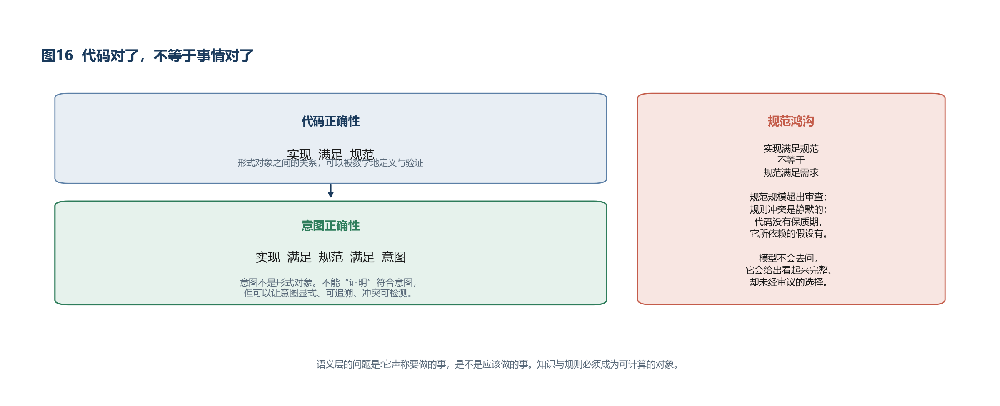
因此关注焦点必须从代码正确性扩展到意图正确性。后者不可能被形式化证明，但可以通过三件事被工程化:让意图显式化、让意图可追溯、让意图间的冲突可检测。这三件事的共同前提是:知识与规则必须成为可计算的对象。没有可信，托付只是声明;没有托付，可信会为假使命服务;没有禁区与绑定，托付会在第一次更顺手的优化里被换掉。
第五章 没有验证，使命只是声明
「当心上面这段代码里的缺陷;我只证明了它是正确的，还没有试过。」
——唐纳德·克努斯(Donald E. Knuth)
克努斯开的这个玩笑，比许多方法论教科书更接近真相:证明与试运行是两种不同的知识，生成与验证是两种不同的劳动。产业现在的做法，是把生成变得极便宜，再把验证当成扫尾。扫尾一旦跟不上，便宜的生成就变成昂贵的未知——托付还写在纸上，执行路径上已经换成更顺手的那一件。这个不对称不是模型还不够强，而是计算、认知与结构三层叠在一起的硬事实。没有验证，使命只是声明。
第一编提出了一个公式:生成能力 ↑ ⇒ 验证需求 ↑↑。这个不对称在理论上究竟有多深?它是一个暂时的工程滞后，还是一个无法消除的结构性事实?答案决定后面全部主张的性质。如果不对称是暂时的，那么等待技术进步就够了。如果它是结构性的，那么必须建设专门的基础设施。 生成与验证的不对称存在于三个不同深度的层次上，它们的性质各不相同。
三层不对称，没有一层会被技术进步抹平
计算复杂度:验证在一般情况下不可判定
最深的一层来自计算理论本身。考虑一个基本事实:判断一个给定的答案是否正确，往往比找到这个答案容易。这是复杂性类 NP 的定义基础——NP 问题的解可以在多项式时间内被验证，即使找到它可能需要指数时间。按照这个逻辑，验证应该比生成更容易才对。为什么前面主张相反?因为软件的情况恰好落在这个直觉的反面，原因在于问题的形态不同。对于一个数独谜题，验证一个填好的方案是否正确是容易的:检查每行、每列、每宫是否满足约束，线性时间即可完成。这里验证容易，是因为正确性的判据是完全明确且局部可检的。 而对于一个程序，我们要验证的不是“这个具体输入产生了正确输出”，而是“对所有可能的输入都产生正确输出”。这是一个全称命题(universally quantified statement)，而全称命题的验证与存在命题的验证，复杂度性质完全不同。更根本的是，程序性质的验证在一般情况下是不可判定的(undecidable)。这是 Rice 定理的直接推论:任何关于程序语义的非平凡性质，都不存在通用的判定算法。停机问题只是其中最著名的一例。所以，最深的不对称来自这里:生成一个程序是有限的构造活动，而验证一个程序的性质在一般情况下是不可判定的。这个不对称不可能被技术进步消除，因为它是计算的本质属性。任何声称能够“自动验证任何程序的任何性质”的技术，都在声称解决一个已被证明不可解的问题。 这个层次的实践含义不是“验证不可能”，而是“通用的自动验证不可能”。 实践中的验证总是要通过以下方式绕开不可判定性:限制程序的表达能力(如可终止的类型系统)、限制被验证的性质(如只验证内存安全)、接受不完备性(如静态分析的假阳性)、或者引入人的引导(如交互式定理证明)。每一种绕开方式都有代价。而这些代价的总和，构成了验证的成本下界。
认知成本:代码是意图的有损压缩
下一层不对称来自人的认知，它在实践中比理论下界更为要紧。核心事实:理解代码比写代码更困难。这个说法初看反直觉——写代码需要创造，理解只需要跟随，后者不是更容易吗?但任何有经验的工程师都知道事实相反。软件工程中一个常被引用的经验判断是:阅读代码的时间远多于编写代码的时间。原因在于信息的不对称。当你写代码时，你的头脑中有完整的上下文:你知道这段代码要解决什么问题，你知道为什么选择这个方案而不是另一个，你知道哪些情况被考虑过、哪些被有意忽略，你知道哪些假设成立。这些信息中的绝大部分不会出现在代码里。 当你读代码时，你只能看到最终的结果，而必须重建那些未被记录的上下文。这个重建过程是昂贵的，而且往往是不完整的——你无法知道作者考虑过什么却决定不做。这就是知识的沉默损耗:代码是意图的有损压缩，而解压缩需要付出比压缩更高的成本。现在把这个事实与 AI 生成代码结合起来。当代码由人编写时，理解成本至少部分地被写的过程覆盖了——作者在写的时候就理解了它。整个团队中至少有一个人拥有那份完整的上下文。当代码由 AI 生成时，没有任何人经历过那个理解过程。 上下文从未存在于任何人的头脑中。因此，理解的全部成本被完整地留给了验证环节，没有任何折扣。 第三章引用的 METR 实验数据在这里得到了理论解释。开发者自认为快20%而实测慢19%，这个40个百分点的落差，很可能就是未被计入的理解成本。人在感知效率时，计入了“生成代码的时间大幅缩短”这个显著的收益，而低估了“理解并验证陌生代码”这个弥散的成本。
结构:生成是局部的，验证是全局的
还有一层不对称，既不来自理论限制，也不来自认知限制，而来自软件系统的组织方式。核心事实:生成是局部的，验证是全局的。当你添加一个新功能时，你的注意力集中在这个功能上。你写的代码是局部的，你的心智模型是局部的。但这个局部的改动，可能对系统的全局性质产生影响。它可能引入新的依赖，改变并发行为，影响资源消耗，破坏某个不变量，与另一个模块的假设冲突。因此，要验证一个局部改动是安全的，原则上需要考虑它对全局的影响。这就是回归测试存在的原因，也是它永远不够充分的原因。这里存在一个数学上的不对称:一个系统包含 n 个组件，添加第 n+1 个组件是一次局部操作，但它可能与前 n 个组件产生交互，交互的可能组合数随 n 增长。生成的成本是常数级的，而验证的成本是随系统规模增长的。 这解释了一个广为人知的现象:软件系统的开发速度会随着系统变大而下降。传统上这被归因于“技术债务”，但更准确的表述是:验证成本随规模增长，而生成成本不随规模增长，因此验证在总成本中的占比必然上升。当生成成本因为 AI 而急剧下降时，这个占比的上升会变得更加陡峭。
把三层合起来
现在可以给出一个更精确的表述。设 G 为生成成本，V 为验证成本，n 为系统规模，则:
V ≈ f₁（不可判定性代价）× f₂（理解成本）× f₃（n） G ≈ 常数 AI 对这两者的影响是:对 G:大幅降低。这是 AI 的主要贡献。对 f₂(理解成本):提高。因为没有人经历过生成过程，理解成本不再被部分覆盖。对 f₃(n):间接推高。因为生成变便宜，系统规模会更快增长。对 f₁(不可判定性代价):不改变。这是理论下界。结论是: V / G 在 AI 时代必然大幅上升 这不是一个暂时的工程滞后，而是三层结构性原因共同作用的必然结果。因此本书的回答是明确的:不对称是结构性的，不会因为模型能力提升而消失。 甚至更强:模型能力越强、生成越便宜，验证在总成本中的占比就越高。这就是为什么必须建设专门的验证基础设施，而不能等待模型进步。
AI 验证 AI:同一双眼睛会一起看漏
有一个重要的反驳需要认真处理:既然 AI 能生成代码，它也能验证代码。AI 可以写测试、做代码评审、发现漏洞。那么生成能力的提升会同步带来验证能力的提升，不对称会自动被抵消。这个反驳部分成立，但它的边界必须说清楚。AI 的验证能力受制于同样的理论下界。不可判定性不因为验证者是 AI 而消失。AI 可以更快地做启发式检查，但它不能判定不可判定的问题。与此同时，AI 验证 AI 生成的代码，存在相关性失效的风险。如果生成与验证使用相似的模型、相似的训练数据、相似的归纳偏置，那么它们很可能犯相关的错误——生成时的盲点，恰好也是验证时的盲点。 还有一层同构的问题在更上游:用来判断“验证够不够”的那把尺子，自己也需要被验证。第三章已经说明，当训练语料与评测集共享同一批公开仓库时，基准分数的有效性在结构上无法被保证。评测基础设施因此属于使命软件基础设施的一部分，而不是它的观众;一个不能证明与训练语料无交集的基准，不构成任何验证结论。
这不是一个理论顾虑。汤普森1984年的演示已经把相关性失效写成过寓言:用被污染的编译器去“验证”源码，验证者与生成者共享同一个盲点，源码可以看起来一尘不染。2014年的 goto fail 从相反方向说明同一件事:人写的校验代码也可以看起来完整、测过、已经上线，而那一行多余的跳转让校验从未发生。验证若与生成挤在同一双眼睛里，就会一起看漏。AI 评审 AI 生成的代码，是这件事的当代翻版。第三章引用的实证研究显示:针对 Copilot 代码评审功能的评估发现，它频繁漏检 SQL 注入、跨站脚本、不安全反序列化等重大脆弱性。同一技术在生成侧引入的问题类型，在验证侧同样看不见。在可靠性工程中，这个问题早已被认识:冗余只有在故障模式独立时才提供保障。两个使用同一算法的副本，不能提供任何抵御算法缺陷的保护。AI 验证 AI，面临的正是这个问题。更根本的是，验证需要一个独立的判据来源。验证的本质是把制品与某个独立的标准比对。这个标准从哪里来?如果标准来自人的意图，那么把意图形式化的工作无法被 AI 替代——因为 AI 无法知道人真正想要什么(这正是第四章讨论的规范问题)。如果标准来自形式化规范，那么写规范的工作依然是人的责任。
AI 可以极大地加速“给定标准，检查符合性”这个环节，但它不能提供标准本身。 而在语义层的可信性问题中，正是标准的缺失构成了主要困难。所以对这个反驳的回应是:AI 确实能承担大量验证工作，而且本书的立场是应当充分利用这一点——人的能力无法覆盖的地方必须由机器覆盖。但这需要满足两个条件:验证的判据必须有独立的来源;验证的机制必须与生成的机制在故障模式上尽可能独立。这两个条件都指向同一个技术要求:必须有一层独立于生成过程的、显式的、可被检验的知识与规则表示。 这再次导向了知识操作系统。
验证带宽就是生成能力的天花板
上述分析落到实践上，有几件必须同时看清的事。验证能力应当被视为一种基础设施投资，而非项目成本。如果验证成本随系统规模增长，而且这个增长在 AI 时代会加速，那么把验证当作每个项目各自承担的成本，在经济上是不可持续的。它必须像编译器、操作系统一样，成为被共享、被复用、被持续投入的基础设施。这与第一章引用的 seL4 洞见一致:保证成本只有通过大规模复用才能被摊薄。与此同时，生成工具的采纳速度，应当与验证能力的建设速度相匹配。如果一个组织把生成能力提高了十倍，而验证能力不变，那么它实际上是在以十倍的速度累积未经验证的制品。第三章的数据显示，这正在真实发生:AI 引入的未解决问题从数百件激增至十万件以上。 这个判断有一个不太受欢迎的含义:在验证能力跟不上的情况下，克制生成能力的使用可能是理性的。本书不主张限制 AI 的使用，但主张明确认识到这个权衡的存在。更关键的是:验证的自动化程度，决定了 AI 生成能力的可用上限。一个组织能够安全地使用多少 AI 生成能力，取决于它能够验证多少。如果验证是人工的，那么人的验证带宽就是 AI 生成能力的天花板——生成得再多也无法安全地使用。换个角度说:验证基础设施的投入，不是对 AI 的限制，而是对 AI 价值的解锁。这个视角改变了可信性投入的性质。可信性投入通常被视为一种成本、一种保险、一种合规负担。而按上述论证，它是 AI 生产力得以实现的前提条件。第四编将据此展开产业论证。
信任不能消除，只能被转移到更小的东西上
先确立一个基本事实:信任是必需的，不是可选的。考虑一个工程师使用编译器。他信任编译器会正确地翻译他的代码。他能验证这一点吗?原则上他可以检查生成的机器码，但这样做的成本远高于自己写机器码——那么使用编译器就失去了意义。再往下:他信任操作系统正确地调度进程与管理内存，信任 CPU 正确地执行指令，信任内存不会随机翻转比特(事实上会，所以有 ECC)，信任电力供应稳定。没有任何人能够验证自己所依赖的全部技术栈。 我们都站在一个由他人建立的信任基础之上。这个事实的含义是:可信性工程的目标，不可能是“消除信任”，而只能是“让信任变得合理”。 区分这两者极为重要。“消除信任”意味着一切都被验证，这在经济上不可能，在理论上也不可能(前文已论证)。“让信任变得合理”意味着:我们知道自己在信任什么，知道这个信任基于什么理由，知道这个理由在什么条件下会失效。信任不是可信性的对立面。不合理的信任才是。
更小、更稳定、更被广泛检验
由此得到一个重要洞见，它对评价任何可信性技术都是关键的:所有可信性技术，本质上都是在转移信任，而不是消除信任。考察几个例子。类型系统:我们不再需要逐个检查每处类型使用是否正确，而是信任类型检查器。信任从“程序员的细心”转移到了“类型检查器的正确性”。测试:我们不再需要人工检查每次修改的影响，而是信任测试套件的覆盖。信任从“人的记忆力”转移到了“测试的完备性”。形式化验证:我们不再需要相信“程序看起来是对的”，而是信任证明检查器与规范。信任从“直觉”转移到了“证明检查器的正确性与规范的准确性”。数字签名:我们不再需要相信分发渠道，而是信任密码学假设与私钥的保密性。在每一个案例中，信任都没有被消除，而是被转移到了一个更小、更稳定、更值得信任的对象上。 这就是可信性工程的真正机制:
可信性工程 = 把信任从难以验证的对象，转移到易于验证的对象 而“更值得信任”意味着什么?本书认为有三个判据:更小:信任的对象越小，越容易被彻底审查。这是最小化可信计算基原则的认识论根据。更稳定:信任的对象变化越少，一次审查的价值就越持久。编译器每年变一次，业务代码每天变几次——把信任放在编译器上比放在业务代码上更经济。更被广泛检验:被更多人、更长时间、更多场景使用过的东西，其未知缺陷更少。这是开源软件的一个重要认识论优势。这三个判据为评价任何可信性技术提供了标准:它把信任转移到了什么地方?那个地方是否更小、更稳定、更被广泛检验?
用同一把尺子量本书自己的主张
用上述判据来检验本书自己的主张，可以避免自我欺骗。我们认为建立知识操作系统，把知识与规则显式化、把行动与轨迹一等公民化。这转移了什么信任?转移前:信任散落在代码中的隐含业务逻辑是正确的、一致的、仍然有效的。这个信任的对象是巨大的(散布在整个代码库)、不稳定的(每次修改都可能影响)、未被广泛检验的(每个组织的业务代码都是独特的)。转移后:信任集中在知识操作系统的核心机制上——规则引擎是否正确执行规则、轨迹记录是否完整不可篡改、权限检查是否不可绕过。这个信任的对象是较小的(一个基础设施组件)、较稳定的(基础设施的变化频率远低于业务)、可以被广泛检验的(如果它是共享的基础设施，而不是每个组织各自实现)。按三个判据衡量，这是一次有效的信任转移。 但同时必须承认它引入的新风险。知识操作系统本身成为新的单点:如果它有缺陷，影响面是全局的。这是所有基础设施的固有属性(操作系统、编译器同样如此)，应对方式是让它足够小、足够被检验——这恰恰要求它必须是共享的、开放的基础设施，而不能是每个厂商的私有实现。知识表示的正确性也成为新的关键依赖。把业务规则显式化之后，规则表达是否准确地反映了业务意图，成为新的信任点。这个问题不会消失，但它变得可见了——而可见的问题比不可见的问题好得多。 这个诚实的自我检验，也解释了为什么本书在第一编中批评 Palantir 的封闭本体表示。 一个不采用开放标准、无法导出、无法被独立检验的知识表示，违反了“更被广泛检验”这个判据。它把信任转移到了一个厂商身上，而不是转移到一个可被公共审查的机制上。这不是可信性工程，这是依赖关系的重新安排。
从安全论证到使命论证
工程实践中，如何组织可信性的论证?安全关键领域已经发展出了成熟的方法，值得借鉴。在航空、核电、轨道交通等领域，安全论证(safety case)是一种标准实践:系统的安全性不是通过一个测试报告来主张的，而是通过一个结构化的论证来主张。一个安全论证包含三个要素:主张(Claim):我们要论证什么。“本系统在正常运行条件下不会导致乘客伤亡。”论据(Argument):为什么主张成立。“因为所有危险源已被识别，每个危险源都有相应的缓解措施，每个缓解措施都被验证有效。”证据(Evidence):支持论据的具体材料。危险分析报告、设计文档、验证结果、测试记录。这个结构的价值在于:它把“系统是安全的”这个笼统断言，分解为一个可以被逐项检查的论证树。 评审者不需要重新做一遍分析，他只需要检查论证的每一步是否成立、证据是否充分。 本书主张，可信性应当采用同样的结构。称之为使命论证(trustworthiness case):主张:关于系统行为的具体断言。“本系统不会在未经二级审批的情况下执行超过阈值的转账。”论据:为什么这个主张成立。“因为所有转账操作都必须经过规则引擎;规则引擎中存在相应规则;该规则的实现被验证正确;规则引擎不可被绕过。”证据:每一步的具体支撑。规则的定义与来源、规则引擎的验证结果、不可绕过性的架构论证、运行时轨迹的抽样审计。这个结构对本书的技术主张有直接的塑造作用。它意味着基础设施必须能够自动地产生构成论证的证据——而不是让人在事后手工编写论证文档。从手工编写的安全论证，到自动生成的使命论证，这是本书技术主张的一个精确表述。
证据必须满足的四项条件
如果可信性依赖证据，那么什么样的东西才算证据?在本书看来，证据必须同时具备几项性质。可检验性(Verifiable):证据必须能够被独立方检查。一个只有生产者能读懂的日志不是证据。这直接对应第四章定义中的“可被检验”。完整性(Integrity):证据必须不可篡改，或者篡改可被检测。一个可以被事后修改的日志，其证明力接近于零。这解释了为什么区块链式的追加日志、Sigstore 的透明日志在可信性架构中有其位置——不是因为去中心化的意识形态，而是因为不可篡改性是证据的必要条件。关联性(Traceable):证据必须能够被关联到具体的主张。一堆无法定位的日志不构成对任何特定主张的支持。这要求证据具有结构:每一条记录必须能够回答“这是关于什么的证据”。 及时性(Timely):证据必须反映系统当前的状态，而不是历史某个时点的状态。规范失效，本质上就是证据过期。这几项性质构成了对第三编技术设计的硬约束。任何声称提供“可信性”的系统，如果它的证据不满足这些要求，那么它提供的是可信的感觉，而不是可信性。
可组合性:一个诚实的限制
最后一个理论问题，也是最困难的一个。假设我们有两个组件，各自都有良好的使命论证。把它们组合起来，组合系统的可信性如何?答案是:不能简单相加，而且往往会低于两者中较低的那一个。原因有三:其一，接口处的假设可能不匹配。 A 的论证建立在“输入满足条件 P”之上，B 保证的是“输出满足条件 Q”。如果 Q 不蕴含 P，那么组合系统就有一个缺口——而这个缺口在两个独立的论证中都不可见。其二，组合会产生新的行为。 两个各自安全的系统组合起来可能产生不安全的行为:资源竞争、死锁、时序违约、级联失效。其三，论证的前提可能相互破坏。 A 的论证假设它独占某资源，B 的论证也假设独占同一资源。这就是可组合性问题(compositionality)，它是形式化方法领域的核心难题之一。这个问题对本书的意义是双重的。 一方面，它解释了为什么“使命必须成链”。 单点的可信性不能保证整体的可信性，可信性必须在组合的意义上被处理。第六章将用 seL4 与 CompCert 的关系具体说明这一点。另一方面，它构成了对我们主张的一个诚实的限制。 本书的立场是构建一条从数据到证据的使命计算链，但可组合性问题意味着:即使链条上每一环都有良好的论证，整条链的论证也不是自动成立的。 环节之间的接口契约，需要被显式地表达和验证。这一点在第三编的架构设计中必须被正面处理，而不能被含糊掩盖。本书会在第八章明确列出这个未解问题。
验证的自动化程度，决定 AI 的可用上限
生成与验证的不对称存在于三个层次。理论层:程序性质的验证在一般情况下不可判定(Rice 定理)，这构成验证成本的理论下界，不可能被技术进步消除;实践中的验证必须通过限制表达力、限制性质、接受不完备或引入人的引导来绕开，而每种方式都有代价。认知层:理解代码比写代码困难，因为代码是意图的有损压缩;当代码由人编写时理解成本部分被写的过程覆盖，而当由 AI 生成时，没有任何人经历过理解过程，成本被完整留给验证环节——这解释了 METR 实验中40个百分点的知觉落差。结构层:生成是局部的，验证是全局的;生成成本是常数级，验证成本随系统规模增长。
三者共同作用的结论是:验证成本与生成成本之比在 AI 时代必然大幅上升，而且模型能力越强，这个比值越高。不对称是结构性的。对“AI 也能做验证”这一反驳的回应是:AI 确实能承担大量验证工作，但受制于同样的理论下界;AI 验证 AI 存在相关性失效风险(Copilot 的代码评审频繁漏检自身容易引入的漏洞类型);而最根本的是，AI 能加速“给定标准检查符合性”，但不能提供标准本身。
落到实践上:验证能力应当是基础设施投资而非项目成本;生成工具的采纳应当与验证能力建设相匹配;而最要紧的是——验证的自动化程度，决定了 AI 生成能力的可用上限。可信性投入不是对 AI 的限制，而是对 AI 价值的解锁。
在这些技术判断之下，还有一层认识论的根基。信任是必需的，不是可选的——没有人能验证自己依赖的全部技术栈。因此可信性工程的目标不是消除信任，而是让信任变得合理:知道自己在信任什么、基于什么理由、在什么条件下失效。所有可信性技术本质上都在转移信任而非消除信任，评价标准是:信任被转移到的对象是否更小、更稳定、更被广泛检验。用这三个判据自我检验本书的主张:知识操作系统把信任从“散落代码中的隐含逻辑”转移到“基础设施的核心机制”，是有效的转移;但它引入两个新风险——基础设施成为新的单点(因此它必须开放、可被公共审查)，以及知识表示的准确性成为新的关键依赖(但这个问题变得可见了)。同一判据也解释了为什么封闭的、无法导出的知识表示不构成真正的可信性工程:它只是重新安排了依赖关系。
借鉴安全关键领域的安全论证实践，本书主张使命论证结构:主张—论据—证据。其对技术的塑造作用是:基础设施必须能够自动产生构成论证的证据。而证据必须可检验、完整(不可篡改)、可关联、及时;不满足这些要求的系统，提供的是可信的感觉而非可信性。最后，可组合性问题构成一个诚实的限制:单点可信不能自动组合为整体可信。这既解释了“使命必须成链”的必要性，也约束了本书的主张——环节间的接口契约必须被显式表达和验证。
第二编 结语
生成与验证的不对称不会被下一代模型抹平;信任只能被转移到更小、更清楚的东西上。由此需要一层基础设施，能够做到五件事:
一、把知识与规则表达为可计算的一等公民，从而使意图显式化、可追溯、冲突可检测。
二、把行动与轨迹表达为一等公民，从而使运行时的行为可被记录与验证。
三、自动产生满足四项条件的证据，从而支撑面向不同受众的使命论证。
四、显式处理环节之间的接口契约，从而使可信性能够沿链条组合。
五、其自身足够小、足够稳定、足够开放，从而成为一个值得被信任的信任转移目标。这就是装置这一件器官必须落到的基础设施规格。知识操作系统是装置的名字，不是已经交货的操作系统。体系可以主张，使命软件工程学尚没有形成。
第三编 使命如何被做成基础设施
在悉尼以南几十公里的地方，有一群人花了四年时间，去做一件几乎没有人相信能够做成的事。他们围着一台机器——一个被称为 seL4 的操作系统内核——日复一日地写证明。不是测试，不是检查，是数学意义上的证明:一个接一个的形式化定理，用机器可验证的方式，证明这个内核对它的规范是忠实的。这个证明脚本累积到约二十万行，光是中间定理就超过一万个。他们管这个项目叫“L4.verified”。 领头的是一位德国计算机科学家，格尔温·克莱因(Gerwin Klein)。他在2003年加入澳大利亚的 NICTA 研究中心，然后一头扎进了这个当时看来近乎荒诞的任务。他和他的团队给自己立下了一条近乎苛刻的约束:经过验证的内核，性能损失不得超过百分之十。 换句话说，他们要证明的不仅是一个“学术上正确”的内核，而是一个真实世界中真正被使用的内核——不能为了证明而牺牲实用性。2009年8月12日，他们宣布完成了。那是全球第一个完整的形式化验证的通用操作系统内核。他们的论文在当年10月被置于操作系统领域的顶级会议 SOSP 上，并获得了最佳论文奖。论文的开头说:这个内核由8700行 C 代码和600行汇编代码构成。 但这篇论文最了不起的地方，不是它证明了什么，而是它坦白了自己没有证明什么。它在开头就列出了四项假设:这个证明假设编译器正确，假设汇编代码正确，假设硬件正确，假设引导代码正确。换句话说，即使这个内核被证明是忠实的，它的安全依然依赖于它底下那一层——那层它并没有去证明的东西。这个坦白，是整本书反复要讲的那个道理的最纯粹版本:信任不会凭空出现，它只能被转移。 seL4 把一个巨大的信任问题，转移成了四个较小的信任问题——但它并没有消除信任，只是让它变得更小、更清楚、更可检验。 后面的技术论证，正是从这样的坦白开始的。我们应当考虑这个行业里种种关于信任的说法，哪些是真实的，哪些只是看起来像真的;也应当计算，当信任被一层层转移、加固之后，我们是否真的能够抵达一个值得信任的地方。
第六章 使命必须成链:世界建模
「所谓分布式系统，就是一台你甚至不知道其存在的计算机出了故障，就能让你自己的计算机没法用。」
——莱斯利·兰波特(Leslie Lamport)
兰波特说的是网络。今天的软件供应链把这句话变成了日常:一个你从未听说过的维护者，一次你没有看见的构建，就能让机场、医院和交易所一起停。可信性因此不可能是单点的荣誉。seL4、CompCert 与 AWS 已经证明，深度验证做得到，规模化验证也做得到;它们同时证明，缺一环，整条链就只是形式上的正确。从已有的高峰向下看:高峰之间若没有路，高峰就不是体系。
形式化验证是不是一个学术玩具?使命软件是不是空想?三个案例可以回答，并从中抽出几条对新体系具有决定性意义的认识。
证明不是学术玩具
seL4:一个内核的完整证明
如果有人认为“证明软件正确”只是理论家的幻想，seL4 是最直接的反驳。seL4 是一个微内核操作系统。它的团队完成了一件此前被普遍认为不可能的事:对一个完整的、通用的操作系统内核，给出功能正确性的机器检查证明。这个成就的具体含义是:从抽象规范到 C 语言实现，每一步都有机器检查的证明，表明实现严格遵循规范。这在证明的范围内蕴含一系列具体保证:假设成立时，已验证代码不会偏离其规范，因而不会以规范所禁止的方式崩溃或执行不安全操作。规模上，seL4 内核约有8,700行 C 代码和600行汇编代码。这个数字值得注意:它不大。这不是偶然，而是设计使然——正如第五章所述，信任的对象越小，越容易被彻底审查。seL4 的小，是它能被证明的前提。C 实现之前，团队先用 Haskell 写成约5,700行的可执行规范，作为中间层自动译入 Isabelle/HOL;高性能的 C 则是手工写出的，不是从 Haskell 生成的。证明脚本约20万行，中间定理超过1万条。小内核、大证明，是同一件事的两面。
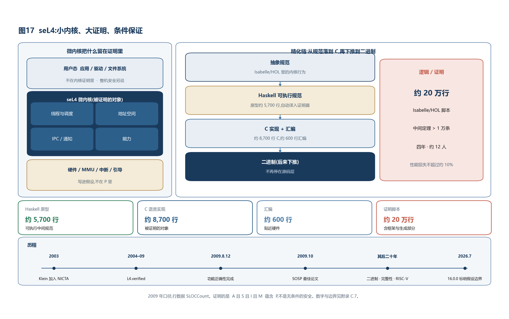
证明了什么，没有证明什么
任何严肃地引用 seL4 的论述，都必须同时说明它的边界。这些边界不是瑕疵，而是理解可信性本质的关键。seL4 所证明的，不是“这个系统绝对不会出任何安全问题”，而是:在明确的形式规范、模型、配置和环境假设成立时，某些性质被数学证明成立。经过逻辑验证的软件仍然可能出现安全漏洞，并不构成对形式化验证的否定。它把边界摊开了。 证明建立在假设之上。官方列出的剩余信任基础包括硬件、启动代码、部分汇编、低层硬件管理、DMA 等;信息流证明覆盖通过架构状态的存储信道，明确不涉及时序信道(timing channels)。通过测量执行时间来推断秘密的攻击，不在证明的保护范围内。原始证明还基本假设单核执行。多核 ARM 上的部署需要一个系统级的锁(当前为 CLH 变体)。多核环境下的完整验证仍是活跃的研究领域。把这些写进一个式子，就是:
证明: A ∧ S ∧ I ∧ M ⇒ P
A 是环境假设成立，S 是形式规范正确，I 是初始状态与配置满足要求，M 是硬件及机器模型假设成立，P 是被证明的性质。证明的是整个蕴含式，不是无条件的 P。这四项——连同缓存维护、DMA、引导路径——任何一项不成立，结论就不适用于实际跑着的那台机器。 “已验证内核出了问题”与“形式证明写错了”，是两个命题。2026年7月22日发布的 seL4 16.0.0，修复了已验证 AArch32 配置上缓存维护路径的一处内核崩溃。这不等于形式证明写错了。5它证明:假设之外的行为，本来就不在 P 里。 请注意这些边界的共同性质:它们都不是“证明不够严格”，而是“证明有明确的适用范围”。这偏偏是形式化验证最有价值的地方，也是它与“我们测试过了，应该没问题”这类论断的根本区别。形式化验证的产出，不只是“它是正确的”，更是“它在什么条件下正确”。第四章把可信性定义为出示可被检验的论证的能力;一个论证的价值，在于边界清楚。一个知道自己边界的系统，比一个不知道自己边界的系统更可信——即使后者的实际缺陷更少。 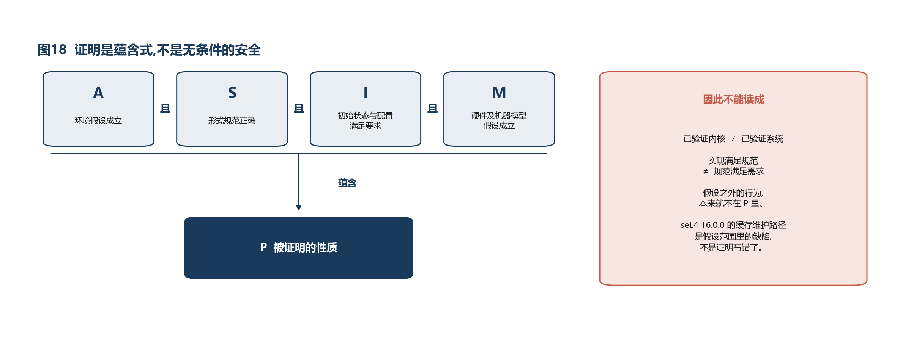
图18 证明是蕴含式，不是无条件的安全
实现对了，不等于规范对了，更不等于系统对了
证明「实现 ⊨ 规范」，只说明程序满足了那份规范。它不说明规范等于我们真正要的行为。门禁可以形式化地证明“只允许持有红色许可证的人进入”，证明完全正确;若现实要求的是“只有经过授权的人才能进入”，红色许可证只是一张更顺手的牌子，证明再完美也在执行假使命。这就是规范鸿沟(specification gap)。seL4 自己承认:形式验证能证明代码实现了 specification，specification 是否表达了真正需要的行为，是另一件事。第四章已经把这个问题从软件工程的边界里拖回来;这里给出它对“已验证内核”的含义:
实现正确性 ≠ 规范正确性 已验证的内核 ≠ 已验证的系统 后一个不等式更硬。驱动、固件、引导程序、DMA、GPU、IOMMU、缓存、中断控制器、多核、网络、编译器、硬件与配置，任何一环不在证明里，整机就不在证明里。官方说得干脆:即使运行 seL4，也不会自动意味着整个系统安全。 于是可信性至少有五层，不能压成“有没有 Bug”。语法层几乎不承担论证。实现层是 实现 ⊨ 规范，seL4 在这里做到了极高水位。规范层是 规范 ⊨ 需求，至今高度依赖人的建模。系统层是内核与驱动、固件、硬件、配置合在一起是否仍满足需求。现实层是 系统 ⊨ 现实:形式对象是否就是那台会发热、会受电磁干扰、会被侧信道和供应链摸到的机器。硬件缺陷、时序、功耗、温度、物理攻击、Spectre/Meltdown、Rowhammer、恶意固件、错误配置、未建模的侧信道，都不是 程序 → 规范 这一步能吞掉的。数学证明证明的是数学对象之间的关系;物理世界仍坐在假设里。 若“真正可信”是指绝对正确、绝对安全、绝对无漏洞、适用于所有环境并且永远成立，这种意义上的可信软件不存在。不存在脱离假设、规范、环境和用途的绝对可信软件。绝对可信不是一种可计算的软件性质。但若把可信性定义为:在明确声明的假设下，对明确声明的性质，给出可机器检查、可重复验证的数学保证——条件可信不仅存在，而且 seL4 是目前最接近这个定义的案例之一。它的价值不是声称“我没有任何问题”，而是把传统软件里那一大块说不清的“相信区域”，压缩成相对小得多、而且写得出来的东西: 可信计算基 + 明示的假设 传统软件让人相信代码。seL4 让人相信证明，进而相信证明所依赖的假设。再往前一步，要相信的是规范—证明—实现—执行—现实之间的语义对应。那一步已经超出程序验证。形式验证回答“程序是否正确”;使命要回答的是:为什么这份程序、这份规范、这个环境、以及这一次执行，仍然在承担被托付的那件事。面向使命的软件工程要做的，不是另起一座已交货的操作系统，而是把这条开放系统里的执行链做成可检查的对象。第七章先钉死核心，再分开写出内涵、方法论、理论体系与工程体系;知识操作系统是装置的名字。 这也是为什么后文不把形式化验证写成可信性的全部。可信性是证明、规范、假设、环境与可追溯性叠在一起的条件保证，不是验证工具的别名。
CompCert:补上编译器这一环
现在看 seL4 的第一条假设:编译器正确。这个假设是必要的，因为 seL4 的证明是在 C 源码层面建立的(后来下推到二进制，但那需要额外的工作)。如果编译器把正确的 C 代码翻译成了错误的机器码，那么源码层面的证明就无法保护实际运行的系统。这个顾虑不是理论上的。编译器缺陷是真实存在的，而且极难发现——因为它们产生的错误不在你的代码里。CompCert 正是为解决这个问题而生的。它是一个经过形式化验证的优化 C 编译器，面向安全关键与任务关键的 C 软件，其证明在 Coq 证明助手中完成。CompCert 的核心保证是:生成的代码被证明其行为严格符合源码语义。 它被认为是唯一一个经机器辅助证明、免于误编译(miscompilation)的生产级编译器。目标平台包括 PowerPC、ARM、RISC-V 与 x86(32位与64位)。
工业采用方面，CompCert 的记录是具体的:面向 DO-178 Level A 飞控软件的评估;2026年3月，CompCert 已为 ATR 42/72 飞机的新一代多功能计算机(MFC_NG)完成合格审定。这个事实值得强调:形式化验证的编译器，已经进入了民航关键系统。 任何认为形式化方法“还不实用”的判断，都需要面对这个事实。CompCert 在航空领域的吸引力有一个具体的技术理由。传统实践中，为了便于合格审定，常常需要关闭几乎所有编译器优化——因为优化会使生成的汇编代码难以与源码对应，增加审定负担。而有了正确性证明之后，可以放心地使用优化，依赖证明而非依赖代码模式的可预测性。可信性在这里不是成本，而是性能的解锁条件。
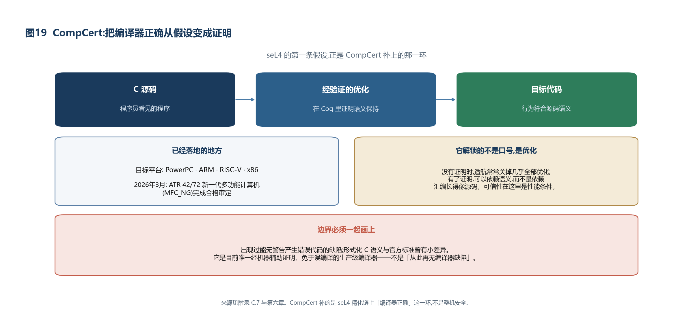 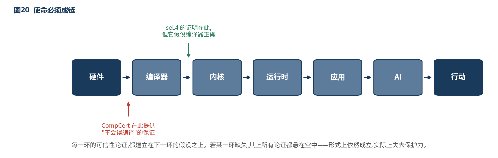
规模化不靠专家，靠自动化
AWS:从每天一千次到每天十亿次
seL4 与 CompCert 代表了一条路径:深度验证少量关键组件。 它们的特点是保证极强、规模较小、成本高昂。亚马逊云科技(AWS)展示了另一条完全不同的路径:广度覆盖大规模系统。AWS 的自动推理组(Automated Reasoning Group)把形式化验证应用于云安全与合规，既服务客户也服务内部开发者。其“可证明安全”(Provable Security)能力，自动生成数学证明，断言关于应用安全属性的全称命题。具体工具包括:Zelkova(验证 AWS 访问策略)、Tiros(验证网络可达性)、CBMC(证明 FreeRTOS 关键组件的内存安全)、与 Galois 合作验证 AWS LibCrypto 的签名、哈希、椭圆曲线运算。而最有说服力的是一个规模数字:Zelkova 通过构建抽象、消除规范撰写，在五年内从每天一千次 SMT 求解器调用，增长到每天十亿次 SMT 调用。从千到十亿，六个数量级。这个数字回答了一个长期存在的质疑:形式化方法能否规模化?
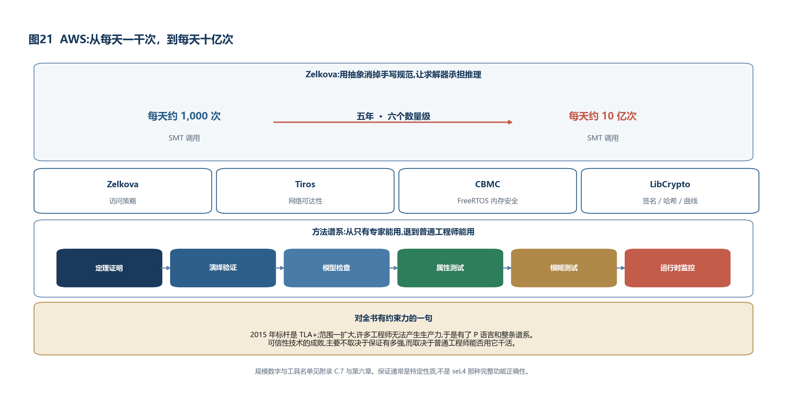
工程可用性比证明强度更关键
AWS 的方法论演进史，包含了对中国建设使命软件基础设施最有借鉴意义的一条教训。2015年，AWS 在《ACM 通讯》上发表了《How Amazon Web Services Uses Formal Methods》，当时的核心工具是 TLA+。这篇文章在业界影响很大，一度成为“工业界应用形式化方法”的标杆案例。但接下来发生的事情很少被同等程度地讨论:随着使用范围从最初的少数团队扩大，许多工程师难以用 TLA+ 产生生产力。这不是一个小问题，而是一个决定性的问题。AWS 的应对是发展出 P 语言，并逐步形成一个完整的方法论谱系:从定理证明、演绎验证、模型检查这些重量级方法，一直到属性测试(property-based testing)、模糊测试(fuzzing)、运行时监控这些轻量级半形式化方法。AWS 把这个组合定位为“规模上的力量倍增器”(force multiplier at scale)，明确指出它提升开发速度。从这段历史中可以抽出一条对全书设计具有约束力的认识: 可信性技术的成败，主要不取决于它能提供多强的保证，而取决于普通工程师能否用它产生生产力。这个判断需要被认真对待，因为它与直觉相反。技术社区倾向于关注方法的理论强度——能证明什么、保证多严格。而 AWS 的经验表明:一个只有专家能用的强方法，其总体影响可能远小于一个所有人都能用的弱方法。原因是覆盖率。一个能提供完全保证但只能覆盖1%代码的方法，与一个只能提供部分保证但覆盖90%代码的方法，后者对系统整体可信性的贡献可能更大。知识操作系统因此必须是普通工程师能用的东西，而不是形式化方法专家的工具。如果它要求使用者掌握时序逻辑或依赖类型，那么它注定失败，无论其理论多么优美。 第七章把工程可用性写成方法的硬约束:普通工程师用不上，定义、对齐、达成就还是专家仪式。
保证成本只能靠复用摊销
seL4 团队提出了一个关于成本的论断，它看起来是技术性的，实际上是经济学的:“如果所有用例都运行在同一个未经修改的内核之上，保证成本(cost of assurance)才能得到最好的摊销。”这句话包含一个完整的经济学论证。建立可信性的成本极高。seL4 的验证工作耗费了大量高技能人力，持续了多年。这个成本对任何单一应用来说都是不可承受的。但这个成本有一个关键特征:它是一次性的固定成本，而它产生的价值可以被无限次复用。 一旦 seL4 被证明正确，每一个运行在它上面的系统都获得了这份保证，而不需要重新付费。于是:
单位可信性成本 = 验证的固定成本 ÷ 复用次数 复用次数趋于无穷时，单位成本趋于零。但这个公式有一个严格的前提:必须是“同一个未经修改的内核”。任何修改都会破坏摊销。如果每个用例都基于 seL4 做一点定制，那么每一次定制都需要重新验证——而重新验证的成本接近于原始验证的成本，因为形式化证明对代码变更极其敏感。这就得到一条决定产业形态的认识:使命必须以基础设施的形态存在，不能以项目的形态存在。一个以定制服务为主体(信息技术服务占68.7%)的产业结构，天然不利于可信性的积累。这里是它的技术根据。 它对第四编的产业论证是决定性的。使命软件产业的正确形态，不是“为每个客户建设使命系统”的服务业，而是“建设被所有人共用的使命基座”的基础设施业。前者的经济学是不成立的。
与人力成正比的方法必然失败
把 seL4/CompCert 与 AWS 的路径对比，可以看清自动化必须到达的程度。seL4 的路径是人的智慧密集型:专家撰写规范，交互式地构造证明，机器检查。它能提供最强的保证，但产出与专家数量成正比。AWS 的路径是自动化密集型:通过构建抽象消除规范撰写，让求解器承担推理，把验证嵌入日常工作流。它的保证较弱(通常是特定性质而非完整正确性)，但产出与计算资源成正比。从千次到十亿次 SMT 调用的增长，靠的不是雇了一百万倍的专家，而是消除了对人的依赖。对照第二章的诊断——NIST 提高45%的处理量依然无法追赶漏洞增长——结论就变得清晰了:在软件规模的增长面前，任何与人力成正比的可信性方法，最终都会失败。可持续的路径必须是与计算资源成正比的。 这不是说人的智慧不重要。seL4 与 CompCert 证明了人的智慧能够到达的深度，而这个深度是自动化方法目前无法企及的。正确的结构是分层的:用人的智慧，深度验证少量、稳定、被广泛复用的基础组件(内核、编译器、运行时、规则引擎)。这些组件小、变化慢、复用广，符合第五章的三个判据，值得投入昂贵的人力。用自动化方法，广度覆盖大量、多变、各自独特的应用逻辑。 这些部分数量巨大、变化频繁，人力方法在经济上不可行。而知识操作系统的定位，正是这两层之间的桥梁。 它本身属于第一层——它应当是小的、稳定的、被广泛复用的，值得被深度验证。而它提供的能力，使第二层的自动化成为可能——因为当知识与规则被显式表达为结构化对象时，对它们的检查就可以被自动化。 这就是本书技术主张在整个可信性技术版图中的精确位置。
数据不是世界
先从一个看似平凡的观察开始。一个数据库表里有一行记录:(id=8891, status=3, amount=45000, ts=1735689600)。这行数据本身没有意义。要理解它，你需要知道:这是一张什么表?status=3 代表什么?amount 的单位是什么?ts 是哪个时区的时间戳?这条记录对应现实世界中的什么东西?这些信息在哪里?通常在人的头脑里，在文档里，在代码的注释里，在开发者之间的口头约定里。 它们不在数据里。这就是传统软件架构的一个根本特征:数据被存储，而数据的含义被编码在处理数据的代码之中。这个架构在很长时间里工作良好。因为只要写代码的人知道数据的含义，程序就能正确地处理它。含义存在于人—代码这个组合之中，而这个组合是有效的。但这个架构有几个后果，它们在今天变得不可接受。
含义随人流失。当那位知道 status=3 含义的工程师离职后，这个知识就丢失了。系统还在运行，但没有人完全知道它在做什么。这是第一章“认知复杂度”的一个具体来源。含义也无法被独立验证。如果含义只存在于代码的处理逻辑中，那么“这个处理是否符合业务意图”这个问题就无法被独立检查——因为要检查它，你必须先从代码中反推出业务意图，而这就是第五章讨论的、成本高昂的理解过程。在 AI 时代最致命的是:AI 无法可靠地获取含义。一个大模型可以读取数据库的 schema，可以读代码，可以猜测字段的含义。但它的猜测是基于统计模式的，而不是基于权威定义的。当它猜错时，它不会知道自己猜错了。
当软件开始自主行动，猜测就是灾难
第三个后果需要展开，因为它是本章的核心论点。考虑一个具体场景。你让一个 AI Agent 处理一批订单:“把所有超期未付款的订单标记为异常并通知客户经理。”Agent 需要知道什么?什么是“订单”——是哪张表?一个订单可能横跨多张表(主表、明细、支付、物流)，它们的关系是什么?什么是“超期”——从哪个时间点算起?下单时间还是发货时间?超期多久算超期?这个阈值是全局统一的还是分客户类型的?节假日算不算?什么是“未付款”——status 的哪些取值算未付款?部分付款算不算?什么是“标记为异常”——在哪个字段写什么值?这个操作有什么副作用?会触发什么下游流程?“客户经理”是谁——如何从订单找到对应的客户经理?如果客户经理已离职呢?这里的每一个问题，都是关于现实世界的知识，而不是关于数据的知识。 在传统架构下，这些知识分散在几十个地方:某个字典表、某段业务代码、某份需求文档、某个人的记忆。一个人类工程师可以通过几天的调研把它们拼起来。而一个 AI Agent 不会做这件事——它会基于最可能的猜测直接行动。而行动是不可逆的。 如果它猜错了“超期”的定义，它会向数千个客户经理发出错误的通知。这就是为什么“软件理解现实世界”从一个架构优雅性的问题，变成了一个可信性的必要条件:当软件开始自主行动时，它对世界的理解必须是显式的、权威的、可验证的，而不能是隐含的、猜测的、不可检查的。
Palantir 缺的不是行动，是证据
本体:组织的操作层
Palantir 是这个方向上最重要的工业实践。理解它的贡献与局限，对本书的论证是必要的。按照 Palantir 官方文档的表述，本体(Ontology)是“组织的操作层”(operational layer)。它位于已集成的数字资产——数据集、虚拟表、模型——之上，把它们与现实世界中的对应物连接起来:从工厂、设备、产品这样的物理资产，到客户订单、金融交易这样的概念。在许多场景中，本体扮演着组织的数字孪生的角色。它的结构分为两部分。语义元素(semantic，“名词”):对象类型(object types)代表现实世界的概念;属性(properties)是对象的特征;链接类型(link types)是对象类型之间的关系，支持一对一、一对多、多对多;接口(interfaces)提供跨多个对象类型的共享形状。一个关键的技术特征是:每个对象类型由实时数据集支撑，而不是静态的 schema 定义。 这意味着本体不是一份文档，而是一个活的、与数据同步的结构。 动能元素(kinetic，“动词”):行动类型(action types)捕获操作员输入，或编排连接既有系统的决策流程;函数(functions)编写和演进任意复杂度的业务逻辑;动态安全(dynamic security)。写回与治理机制值得特别注意:对象、属性值、链接的变更，在用户执行一个行动时被提交到本体，并反映到所有应用中;同一套行动逻辑与校验，在每一个面向用户的应用中都可用;最新的编辑状态被记录在对象类型的写回数据集(writeback dataset)中。行动类型可以从简单事务扩展到写回运营系统与边缘系统的多步工作流。Palantir 明确拒绝“语义层”(semantic layer)这个表述。官方文档的原话是:
“本体不是一个'语义层';对数据、逻辑、行动与安全的四重整合与运营化，无法通过一个薄的语义层或一个单体设计来实现。” 它把自己描述为由数十个组件构成的多模态系统，分为三组:语言(Language)、引擎(Engine)、工具链(Toolchain)。语言负责建模语义对象、链接、属性，以及动能行动、自动化及其运行逻辑;引擎支撑语言的每一个组件，提供高规模 SQL 查询的模块化读架构、状态变更的实时订阅，以及面向“人 + AI 混合团队”的物化能力。
它的真正贡献
剥离掉商业叙事，Palantir 在技术思想上的贡献可以被精确地表述。它把“含义”从代码中提取出来，变成了系统的一等公民。对象、属性、关系不再隐含在处理逻辑里，而是被显式建模。这直接针对前述那些后果。它还把“行动”纳入了同一个模型。这一点常被低估。大多数语义层技术(包括学术界的本体工程)停留在描述——它们告诉你世界是什么样，但不管你如何改变世界。Palantir 的行动类型使得“改变世界”也成为被建模、被治理的对象。与此同时，它让权限与安全成为模型的内在部分，而不是外部附加。动态安全意味着访问控制是基于语义的(你能看到哪些对象、能执行哪些行动)，而不是基于表和列的。这几件事合起来，构成了从以数据为中心(Data-Centric)到以世界为中心(World-Centric)的转变。
Data-Centric → World-Centric 这是 AI 时代软件体系一次真实的、重要的变化，本书对此给予充分肯定。
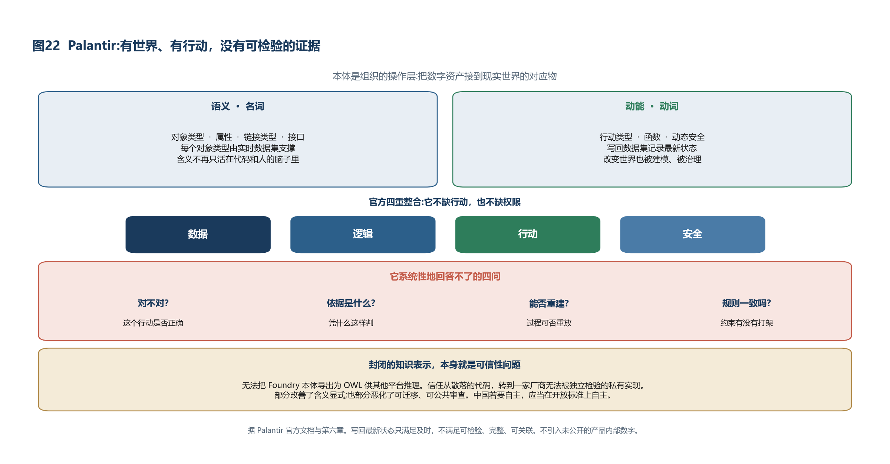
图22 Palantir:有世界、有行动，没有可检验的证据
一个必须做出的精确修正
本书所依据的原始论述中有一个判断:“仅仅理解世界还不够。”这个判断的方向是对的，但它的表述不够精确，而不精确会导致论证失去力量。原始论述隐含地认为:Palantir 做到了“理解世界”，而缺少“行动”与“权限”。这个理解与事实不符。 Palantir 的本体明确包含动能元素——行动类型、函数、动态安全。它的官方表述是“数据、逻辑、行动与安全的四重整合”。它不缺行动，也不缺权限。那么它真正缺少的是什么?本书的判断是:验证(Verification)与证据(Evidence)。具体地说，Palantir 的本体能够回答:这是什么?(对象与属性)它与什么相关?(链接)可以做什么?(行动类型)谁可以做?(动态安全)做了什么?(写回数据集记录了最新状态)但它不能系统性地回答:这个行动是对的吗?依据是什么?能否重建?规则之间是否一致? 请注意“写回数据集记录了最新状态”与“可被检验的证据”之间的区别。前者告诉你结果是什么，后者告诉你为什么是这个结果、这个结果是否正确。按照第五章的四项证据条件——可检验、完整、可关联、及时——一个记录最新状态的数据集只满足了“及时”，而不满足另外三项。这个修正让论证变得精确了，同时也变得更强了。因为如果 Palantir 只是“缺少行动能力”，那么补上行动能力就够了，而那是一个产品功能问题。而如果它缺少的是“验证与证据”，那么这就是一个架构层次的缺失——它需要在数据、知识、行动之外，增加一个新的维度。
封闭的知识表示，本身就是可信性问题
除了架构层面的缺失，还有一个性质不同的问题，它对中国的技术路线选择有直接意义。Palantir 的本体使用自有表示——对象类型、链接类型、行动类型——而不采用 W3C 的标准，如 OWL、RDF、SPARQL。 其后果是:你无法把 Foundry 的本体导出为一个 OWL 文件，供其他平台推理。 评论者称之为“设计使然的厂商锁定”(vendor lock-in by design)。这不只是一个商业策略问题。用第五章建立的判据来分析，它是一个可信性问题。第五章指出，所有可信性技术本质上都在转移信任，而评价标准是信任被转移到的对象是否更小、更稳定、更被广泛检验。一个封闭的、无法导出的、只能由单一厂商实现和验证的知识表示，在第三个判据上是失败的。它把信任从“散落在代码中的隐含逻辑”转移到了“一家厂商的私有实现”。这个转移是否改善了可信性? 部分改善了:含义变得显式，不再随人流失。这是真实的进步。但也部分恶化了:你现在依赖一个无法被独立检验、无法被迁移、无法被公共审查的组件。而按照第四章的定义，可信性的核心是“出示可被检验的论证”——如果知识表示本身不可被独立检验，那么建立在它之上的一切论证都继承了这个缺陷。这为中国建设自主使命软件基础设施提供了一个具体而非口号式的战略理由:我们不仅要自主，而且应当在开放标准上自主。理由不是意识形态，而是可信性本身的要求。一个不能被独立检验的可信性基础设施，是一个自相矛盾的东西。这个判断将在第五编转化为具体的技术路线建议。
结构、规范、依据:缺一层就不算按使命理解世界
综合本章的分析，可以把“软件理解世界”分解为三个递进的层次。结构(Structure)回答世界由什么构成:对象、属性、关系。这是本体的核心，Palantir 与学术界的本体工程都主要工作在这一层。它回答的是“是什么”。规范(Norm)回答世界应当如何:规则、约束、权限、义务。注意规范与结构的性质完全不同:结构是描述性的(descriptive)，规范是规范性的(normative)。“这个账户余额是5,000元”是描述。“账户余额不得为负”是规范。前者可以为真或为假，后者可以被遵守或被违反。这个区分在哲学上被称为“是”与“应当”的区分(is-ought distinction)，而它在软件架构中的意义是:规范不能被简化为描述。一条约束不是一个数据字段，它是一个必须被主动检查、可能被违反、违反时需要有处置的东西。
传统软件把规范编码在代码里(if 语句、校验函数);Palantir 把它部分地提升为函数与行动校验;而本书主张它必须成为完全独立的、可被独立审查与验证的一等公民。理由见第四章:规则的规模、冲突、时效问题，都要求规则本身可被独立操作。依据(Justification)回答我们凭什么这样认为。这一层在现有的世界建模实践中基本缺失，而它正是可信性的核心。对每一个结构性断言，可以问:这个信息来自哪个数据源?采集时间是什么?可信度如何?有无冲突的其他来源?对每一条规则，可以问:谁定义的?依据什么(法规?行业标准?企业政策?)?何时生效?何时应当复核?适用边界是什么?第四章的可操作判据“你怎么知道”，作用的正是这一层。
本书的核心技术主张，可以精确地表述为:世界建模必须同时包含结构、规范与依据，而不能只有结构，也不能停在结构加规范。引入依据，不是给前两层增加一些元数据那么简单。它意味着系统中的每一个断言与每一条规则，都携带着自己的来源与依据，并且这些来源与依据本身是可被查询、可被验证、可被追踪的对象。这就是从“理解世界”到“按使命理解世界”的距离。
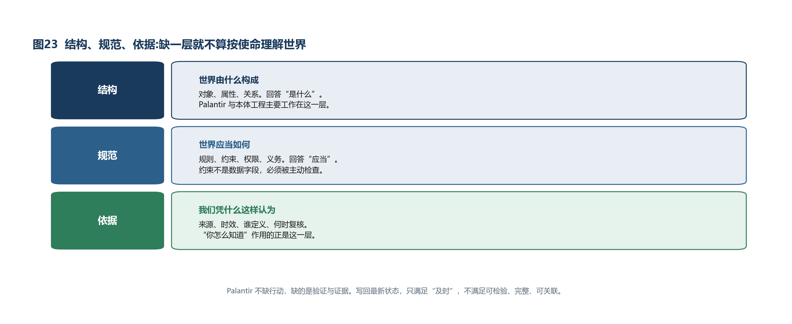
一个诚实的困难:建模是昂贵的
关于世界建模，不应在乐观中结束。它有一个已经被反复证实的困难，这是这条技术路线最主要的实践障碍。建模是昂贵的，而且它的成本主要由人承担。要为一个组织建立本体，需要有人理解这个组织的业务、梳理概念、定义关系、编纂规则。这项工作无法被完全自动化，因为它的输入——业务的真实含义——只存在于人的头脑与组织的实践中。这是学术界的本体工程在过去三十年中反复遭遇的困境。语义网(Semantic Web)的愿景在2000年代初期极为宏大，但进入实际使用远不如预期，主要原因就是建模成本与维护成本。任何主张“通过世界建模提高可信性”的论述，如果不正面处理这个困难，就是不严肃的。本书对此有几点回应，它们将在后续章节展开。 大模型显著降低了建模成本。这是一个真实的、新出现的变化。从文档、代码、数据、对话中提取概念与关系，是大模型擅长的任务。它不能替代人的最终确认，但可以把人的工作从“从零构建”变成“审核与修正”——而后者的成本低一个量级。这是我们认为世界建模在今天比2005年更可行的主要理由。建模也应当是增量的、按需的。不需要在使用系统之前建立完整的本体。可以从最关键的少数对象与规则开始，随着需求扩展。语义网的一个教训是试图先建立普遍的本体再应用。 更关键的是:建模成本应当与可信性收益匹配。不是所有系统都需要完整的三层建模。一个内部报表工具与一个信贷审批系统，所需的可信性水平相差悬殊。本书的立场是让可信性成为可选择、可分级、可度量的东西，而不是要求一切都达到最高标准。这一点与中国《人工智能安全治理框架》2.0版提出的“风险分级治理”“高风险严管、低风险松绑”在原则上完全一致。第五编会讨论这个对应关系。
高峰之间没有路，高峰就不是体系
三个案例回答了“使命软件是否空想”这个问题。seL4 完成了全球第一个通用操作系统内核的完整功能正确性证明(约8,700行 C 代码)，证明已下推到二进制层面并扩展到完整性、可用性与机密性;它明确的边界——证明的是 A ∧ S ∧ I ∧ M ⇒ P，不是无条件的 P;缓存维护等仍在假设里，16.0.0 对已验证 AArch32 配置的修复把这一点写进了发布说明——不是瑕疵，而是价值所在:形式化验证的产出不只是“它正确”，更是“它在什么条件下正确”。已验证的内核不等于已验证的系统。CompCert 是唯一经机器辅助证明免于误编译的生产级编译器，已于2026年3月为 ATR 42/72 飞机的新一代多功能计算机完成合格审定，这意味着形式化验证已经进入民航关键系统。AWS 则展示了规模化路径:Zelkova 五年内从每天一千次增长到每天十亿次 SMT 调用。
由此抽出几条认识。使命必须成链——seL4 的证明假设编译器正确，而 CompCert 恰好补上这一环;孤立的验证点无法构成使命系统，这是“产业链而非产品”的技术根据，因为没有任何一家企业能独立完成从芯片到行动的整条链。工程可用性比证明强度更关键——AWS 的教训是决定性的:许多工程师难以用 TLA+ 产生生产力，迫使其发展出从重量级到轻量级的完整方法论谱系;一个只有专家能用的强方法，总体影响可能小于一个所有人都能用的弱方法。使命必须以基础设施形态存在——seL4 的“同一未修改内核摊销保证成本”揭示了使命的基础设施经济学，任何定制都会破坏摊销，因此“为每个客户建设使命系统”的服务业模式在经济学上不成立。可持续的验证必须与计算资源而非人力成正比——正确的结构是分层:人的智慧深度验证少量稳定的基础组件，自动化方法广度覆盖大量多变的应用逻辑。
而要让自动化承担起广度覆盖，前提是软件能够理解它所作用的世界。传统软件架构的根本特征是:数据被存储，而数据的含义被编码在处理数据的代码中。这导致三个后果——含义随人流失、含义无法被独立验证，以及在 Agent 时代最致命的一点:AI 无法可靠地获取含义。当软件开始自主行动而行动不可逆时，它对世界的理解必须是显式的、权威的、可验证的。
Palantir 把含义、行动与权限纳入同一模型，这是从数据中心到世界中心的真实进展。本书的修正是:它缺的不是行动，而是验证与证据;封闭表示按第五章的判据还构成可信性问题本身。因此世界建模应包含结构、规范、依据三层，依据层基本缺失。建模成本是主要障碍，应对是大模型辅助、增量按需、按可信性分级——与《人工智能安全治理框架》2.0 的风险分级原则一致。
第七章 使命如何被定义、对齐、达成
「编程在这种意义上，是建立某种理论，而不是生产一个程序。」
——彼得·诺尔(Peter Naur)，《作为理论建构的编程》，1985
诺尔提醒过:代码带不走程序员脑子里的理论，文档也带不走。项目组一散，理论就死了，留下的是仍在跑的二进制。传统软件工程后来把这件事组织成了流程——需求、设计、实现、测试、交付;敏捷把它改写成故事、迭代与“完成”的定义。流程可以很成熟。它生产的仍是能跑的程序。使命软件要生产的是另一样东西:一件仍被绑住的托付，以及这件托付还在被执行的可检验论证。
第六章把世界摊开了。没有结构、规范与依据，软件并不理解它在作用的东西;没有成链的验证，高峰只是高峰。接下来容易走错一步——直接抛出一个新操作系统的名字，好像方法已经变成了产品。真正缺的不是又一个平台名词。真正缺的是先说清:核心是什么;与以往软件工程的本质区别在哪里;这件工程的内涵是什么;方法论如何推进;理论与工程各立住哪一层。知识操作系统是装置的名字，不是这一章的主题，也不是已经交货的操作系统。方法可以主张，使命软件工程学尚没有形成。把尚未形成的东西写成已经开课的“学”，是另一种假使命。
核心:把软件绑在一件可检验的托付上
使命软件工程的核心不是把软件做得更快、更正确、更可维护。那些仍然必要，却不是这件工作的圆心。圆心只有一件事:当软件开始理解世界并采取行动，把它绑在一件写明的托付上，并在每一次执行里站住这一问——它还在做被托付的那一件，而不是更顺手的那一件。站住的标志不是感觉良好，也不是验收过、上线了、服务等级协议还绿，而是拿得出可被别人证伪的检查。
核心 ≡ 明示的托付 ∧ 仍在执行这一件 ∧ 检查可被证伪 三件必须同时在。少了明示的托付，检查对着一张更顺手的目标函数，再严格也是假使命。少了仍在执行，定义停在纸上，上线只说明它开始跑。少了可被证伪的检查，托付是声明，可信是空话。没有可信，托付是空话;没有托付，可信是手段。使命的内涵包含可信，可信在核心里面，不是旁立的另一套最高概念，也不是圆心本身。 核心不是知识操作系统。知识操作系统是后来才出场的装置，用来让这件核心可计算。核心也不是“更可信”。对手不是还不够可信，是假使命:看起来像服务，失败时不像失败。患者还在刷手机，列车还在跑，账本还在记，只是目的已经换了。第四章的五条——明示的托付、明确的禁区、绑在执行路径上、可信、可被追究的人——是把这件核心绑死的构成要件。少一条，对象就退回产品或愿景。
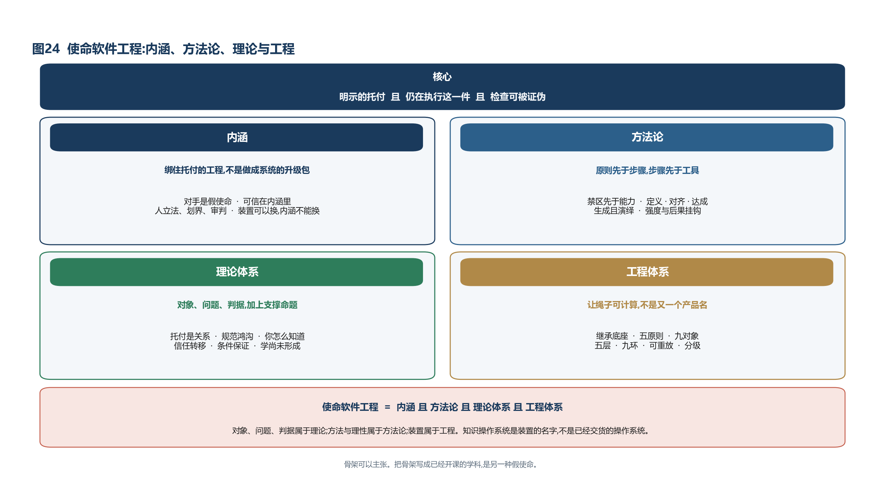
图24 使命软件工程:内涵、方法论、理论与工程
本质区别:做成系统，还是绑住目的
1968年北约那次会议把“软件危机”写进了行业自我认识:系统已经写不完、测不完、也管不住。此后半个世纪的软件工程，几乎都在回答同一问:如何把需求做成能跑、能改、能交出去的系统。结构化方法、瀑布、CMMI、敏捷、DevOps、SRE，彼此争论的是节奏与组织，不是成功判据。成功判据始终是交付。需求写成用户故事，对齐写成追溯矩阵与代码评审，达成写成验收通过、管道绿灯、服务等级协议还在绿。这些做法不是错的。没有它们，今天的软件产业不会存在。 本质区别不在多几份文档，也不在换一套节奏。以往软件工程做成系统;使命软件工程绑住目的。一个系统可以完全做成被要求的系统，同时执行一件从未被托付的事。门禁被证明只认红色许可证，证明完全正确，要的却是授权——这是规范鸿沟。传统软件工程把“规范本身对不对”放在自己的边界之外。使命软件工程把这件被放出去的事收回来，当成自己的基本问题。因此它不是软件工程学旁边另开的一门课，而是软件工程学在托付成为问题之后的下一次定向。 差别可以对照着看。 | 对照 | 以往软件工程 | 使命软件工程 | |---|---|---| | 做成什么 | 可交付的系统 | 被绑住的托付 | | 基本问题 | 如何按需求做成、改好、交出去 | 凭什么说它还在执行这一件 | | 成功 | 验收、上线、服务等级协议仍绿 | 仍在执行，且拿得出检查 | | 对手 | 缺陷、延期、不可维护 | 假使命 | | 工作单元 | 需求、用户故事 | 托付 | | 人 | 用户、甲方、验收方 | 托付者:患者、乘客、调度员、存款人、士兵 | | 验收 | 工程的结束 | 追究的开始 | | 验证停在 | 设计时到测试时 | 必须覆盖这一次运行 | | 方法骨架 | 需求—设计—实现—测试—维护 | 定义—对齐—达成 | | 底座怎么用 | 底座就是成功本身 | 底座全部继承，但不再充当成功判据 | 需求问系统应当做什么。使命问它被托付去做哪一件，以及不许做哪一些。用户是使用产品的人;托付者是把命脉交出去、失败时承担不可逆后果的人——患者、乘客、调度员、存款人、士兵。传统方法里，这些人出现在“干系人”或“验收方”的位置上，验收结束，他们就退出工程。第一章写过:验收即结束，没有人被要求出示行为论证。那不是项目管理松了，是方法本身把“做成了”当成了“达成了”。 对齐在传统方法里，主要是制品对制品。需求对设计，设计对代码，代码对测试。矩阵可以很完整，系统仍在执行一张更顺手的目标函数。第六章已经把缝写出来:实现满足规范，不等于规范满足需求;已验证的内核，不等于已验证的系统;系统满足模型，不等于模型就是那台会发热、会被侧信道摸到的机器。传统测试抓住的是前一条缝里的一部分。使命要对齐的是整条缝。 达成在传统方法里，是上线。上线只说明它开始跑。服务等级协议的绿灯只说明机器还健康。可观测性平台可以告诉你请求耗时、错误率和调用链，同时完全无法告诉你这一次决策是不是仍在做被托付的那一件。Knight Capital 的系统在那四十五分钟里高度可用。它达成的不是使命，是一份被重新激活的旧代码。 继承的是工程。语言、类型、编译、测试、审查、配置、形式化验证、持续交付，是人类软件工程最伟大的成果之一，也是使命软件不可替代的地基。正确性主线、过程与制品纪律、验证工具箱、交付之后的运行意识，一件都不能扔。扔了测试，发现不了实现错误;扔了配置，规则无法版本化;扔了架构，检查无法不可绕过;扔了形式化方法与评审，演绎理性没有工业形态。少了底座，使命是口号。Dijkstra、霍尔、类型系统、seL4 与 CompCert，位置是底座，不是被替代的过时技术。迈尔斯的意图保留——你是来找错的。找的错从实现错误扩展到使命偏离。DevOps 与 SRE 已经把“做成了”往后推到运行;继承这一推，但不继承它们对运行的问法。它们问机器是否健康;使命问这一次是否仍在执行托付。 换掉的是成功本身。工作单元从需求变成托付，干系人从用户变成托付者，验收从结束变成追究的开始，规范鸿沟进入学科内部，验证重心延伸到运行时。把托付写进需求规格说明的附录，瀑布仍然可以按期交付假使命。差异是:软件工程学已经组织起来的那些工作，每一项都被同一件核心重新定向。需求工程仍在，问法从“系统应当做什么”变成“为谁绑住、不许做什么”，禁区先于能力。设计与构造仍在，检查必须不可绕过;人写代码时那套隐式的需求澄清必须被显式接回来，因为模型不会去问。测试仍在，测的是使命是否偏离，而不只是用例是否绿。维护仍在，维护的是托付的时效——代码没有保质期，托付有。配置仍在，规则、禁区与依据同样要版本化。管理仍在，风险清单里必须有假使命。过程仍在，迭代可以保留;“完成”的定义必须换掉。
使命软件工程继承软件工程学的工程能力，不继承它把交付当成成功。 判据不换，底座只是更昂贵地交付假使命;底座不要，使命只是换了词的愿景。
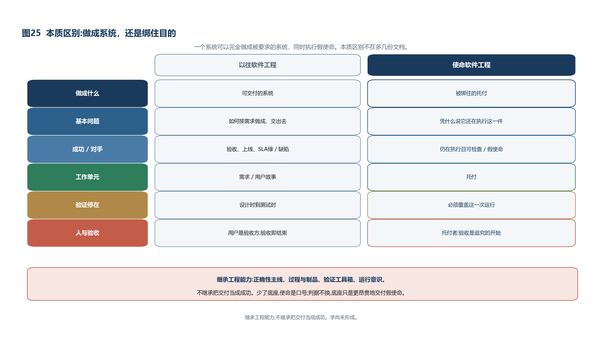
图25 本质区别:做成系统，还是绑住目的
内涵:它是绑住托付的工程
使命软件是对象。使命软件工程是使这个对象成立的工程。第四章的五条构成要件——明示的托付、明确的禁区、绑在执行路径上、可信、可被追究的人——规定软件何时配叫使命软件。第七章要规定的是另一件事:用什么工程去让这五条同时成立。两者不能混。把构成要件写成工程，工程会变成定义游戏;把工程写成构成要件，五条会变成流程清单。 内涵因此不是“把软件工程做得更认真”。它有四层意思，少一层，词就会滑回正确性、安全、可信计算或平台名词。 目的论。工作对象是托付关系，不是系统门类。同一段代码用于放射剂量是一种托付，用于广告投放是另一种。工程做成的，是把软件绑在一件写明的托付上，不是做成一类叫“使命软件”的产品。 对手论。对手不是缺陷太多，也不是“还不够可信”。对手是假使命:看起来像服务，失败时不像失败。患者还在刷手机，列车还在跑，账本还在记，只是目的已经换了。没有这个对手，工程会重新把交付当成成功。 认识论。成功不是上线，是仍在执行这一件，并且拿得出可被别人证伪的检查。没有可信，托付是空话;没有托付，可信是手段。使命的内涵包含可信，可信在这件工程的内涵里面，不是旁立的另一套最高概念，也不是圆心本身。 主体论。软件不能给自己立法。人立法、划界、审判。托付者是把命脉交出去的人——患者、乘客、调度员、存款人、士兵——不是厂商，不是模型，不是“用户点击了同意”。
内涵 ≡ 托付之工程 ∧ 假使命为对手 ∧ 可检查为成功 ∧ 人在立法划界审判 外延上必须先排除几件它不是的东西。它不是正确性 2.0:正确性问实现是否忠实于规范，规范错了，正确性会替假使命作证。它不是安全软件换皮:安全问会不会造成不可接受的损失，不问损失是不是来自一件从未被托付的目的。它不是可信计算:可信计算问这台机器还是不是它声称的那台，装了可信模块不会自动得到使命。它也不是知识操作系统:知识操作系统是后来才出场的装置。内涵先于装置。装置可以换，内涵不能换。
方法论:原则先于步骤，步骤先于工具
方法论不是又选一次瀑布或敏捷。半个世纪的软件工程在节奏上争过许多次，成功判据始终是交付。使命软件工程不参加这场节奏之争。它要规定的是:什么算合法的推进，什么算把方法做空。 原则先于步骤。没有原则，定义、对齐、达成会变成三张检查单。原则至少有五条。禁区先于能力:先写不许做什么，再写还能做什么;没有禁区，能力越大，假使命越像服务。次序不可倒:先定义，再对齐，再达成;先写功能清单，假使命几乎免费。生成与检查的故障模式必须独立:模型不能既提出候选又充当不可绕过的判官;证明不能与被证明的规范共享同一个盲点。强度与后果挂钩:内部报表可以停在观测，放射、联锁、清算、调度不能;把“一切都要形式化证明”写成动员令，与把“一切软件承担使命”写成动员令，是同一种做空。人立法、划界、审判:模型不能颁布托付，证明也不能替人选择要哪一件使命。 步骤是定义、对齐、达成。定义先写托付与禁区，并写生效、复核与失效——代码没有保质期，托付有。对齐让写下的、编出的、跑着的、世界上的是同一件事;文档、配置、检索增强生成都还停在看见，进不了执行。达成问这一次执行是否仍在绳子上，并且能不能重放;上线只说明它开始跑。少一步，另外两步变成仪式。三步是做内涵的步骤，不是内涵本身。 两种理性是方法论的形式，不是可以随时拆掉的插件。生成理性覆盖广度:世界先以法规、病历、调度口令、源代码和对话出现。演绎理性覆盖深度:已经写清的禁区、不变量、接口契约，应当被推到可机器检查的保证。只用生成，对齐就是希望。只用演绎，会在规范鸿沟处完美地执行假使命。融合的目的只有一个:促成达成。
方法论 ≡ 原则 ∧ 定义 · 对齐 · 达成 ∧ 生成且演绎 ∧ 分级 工具跟着步骤走，步骤不跟着工具走。定理证明、模型检查、测试、可观测性、大模型，都可以进入这套方法;进入的位置由原则规定。把工具升格为方法论，方法论会变成展示。
理论体系:对象、问题、判据靠什么立住
理论体系不是已经开课的学科。它是一组必须同时成立的命题，用来把内涵从口号里拖出来。缺一组，后文的步骤与装置只是相邻的主张。 对象理论。研究对象是托付关系中被五条绑住的软件，不是按行业划分的产品。使命 ⊃ 可信。可信性是出示可被检验之论证的能力，不是软件的内在属性，而是“软件—使用—期望”的关系。可信计算是下层锚点。可信赖性是本体论上的互补，不是替换。 问题理论。基本问题只有一问:软件开始理解世界并采取行动之后，我们凭什么说它还在执行被托付的那一件。规范鸿沟把这个问题钉死:实现满足规范，不等于规范满足托付;已验证的内核，不等于已验证的系统。相邻学科各切走一截——传统软件工程切交付，形式化方法切实现是否满足规范，人工智能切生成，网络安全切攻击，可信计算切机器身份——这一问把它们收进来，再多问目的本身。 判据理论。成功是仍在执行且可检查。较短的说法是“你怎么知道”。论证不是证明:测试、统计、构建溯源、运行时轨迹、形式化证明，强度不同，都是论证;不能被检验的论证是声明。信任只能被转移，不能被消除;评价一次转移，要看对象是否更小、更稳定、更被广泛检验。证明是条件式:A ∧ S ∧ I ∧ M 蕴含 P;条件被拿掉，使命一起被拿掉。生成与验证不对称是结构事实，不会被下一代模型抹平。可组合性仍是未解问题:单点论证不能自动变成整链论证。
理论体系 ≡ 对象(托付) ∧ 问题(仍在执行这一件) ∧ 判据(可检查) ∧ 支撑命题(鸿沟 · 不对称 · 转移 · 条件性) 学之形成 ≡ 共用的问题核心 ∧ 可被证伪 ∧ 可开课 ∧ 失败可积累 ∧ 职业与教材 1968年以后的软件工程学，是用会议、教材、职业制度和无数失败堆出来的。使命软件工程学缺的正是这些。第八章那些尚未解决的问题——尤其是建模成本与可组合性——不是附录里的免责声明，而是学尚未形成的地形。骨架可以主张。把骨架写成已经开课的学科，是另一种假使命。可开课，指的是能在软件工程的课程里被讲授——需求课多问禁区，测试课多问偏离，维护课多问托付是否过期——而不是另开一场动员会。
工程体系:让绳子可计算
理论体系回答凭什么这样看。工程体系回答绳子落在哪一层装置上。没有工程体系，内涵与方法论停在手册里，问“你怎么知道”时只剩一份填过的表。没有理论体系，工程体系会把交付做得更昂贵。 工程体系从继承开始。正确性主线、过程与制品纪律、验证工具箱、交付之后的运行意识，一件都不能扔。Dijkstra、霍尔、类型系统、seL4 与 CompCert，位置是底座。迈尔斯的意图保留:你是来找错的;找的错从实现错误扩展到使命偏离。DevOps 与 SRE 把“做成了”推到运行;继承这一推，不继承它们只问机器是否健康。 底座之上，是让定义、对齐、达成可计算的装置，而不是又一个产品名。五条不能违反的设计原则:显式优于隐含，一切携带依据，行动可控可逆，证据自动产生，工程可用性优先。九类被管理的对象:实体、事件、状态、关系、规则、决策、行动、轨迹、证据。五层架构:事实与事件、知识与规范、推理与决策、执行与轨迹、证据与论证;推理层是唯一允许不确定性的层次，执行层是唯一与外部世界交互的层次。九环证据链把世界建模接到验证与证据。可重放是达成的技术基础。分级让强度与后果挂钩。知识操作系统是这层装置的名字，不是学科的名字，也不是已经交货的操作系统。
工程体系 ≡ 继承的底座 ∧ 五原则 ∧ 九对象 ∧ 五层 ∧ 九环 ∧ 可重放 使命软件工程 ≡ 内涵 ∧ 方法论 ∧ 理论体系 ∧ 工程体系 也可以把同一件骨架读成六件器官:对象、问题、判据、方法、理性、装置。前三件属于理论;方法与理性属于方法论;装置属于工程。内涵把它们收成一件工程的意思。少一层，其余各层只是相邻的主张。形式化方法是演绎理性的深度工具，规范鸿沟仍在它的边界外。人工智能是生成理性，不是判官。安全论证是近亲:主张—论据—证据的结构可借用，对象换成仍在执行这一件托付。可信计算是下层锚点。判据不换，底座只是更昂贵地交付假使命;底座不要，使命只是换了词的愿景。 方法三步下面摊开。工程装置的原则、对象、分层与链，随三步落到可检查的地方再写。主张可以提，成品不能假装已经有了。
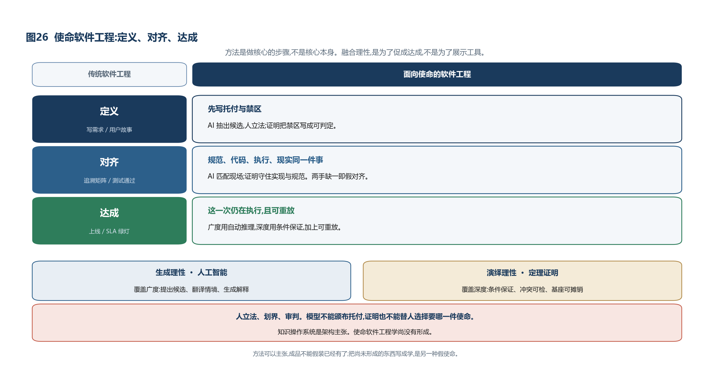
图26 使命软件工程:定义、对齐、达成
定义:先写托付，再写系统
先写什么，决定后面所有对齐与达成对着哪一件事。若先写功能清单，假使命几乎是免费的:票据上写“提高转化”，模型就会优化停留;票据上写“尽快放行”，调度就会关掉检查。第四章的五条构成要件在这里不再是定义游戏，而是工程的第一步。必须写明:托付者是谁，去做哪一件，不许做哪一些，检查绑在哪条执行路径上，出事时追究谁。少写一条，后面的架构只是更昂贵地执行一件未写出的目的。
这与软件需求规格说明不是同一类文件。需求工程的引出、分析、规格、确认都还在，那是继承。换掉的是它服务的工作单元。需求规格说明回答“系统应当具有哪些行为”。使命定义回答“这些行为是为谁绑住的，以及哪些行为即使能做也不许做”。禁区必须先于能力。没有禁区，能力越大，假使命越像服务。托付者必须是被保护的人，不能是软件自己，也不能是“平台生态”这种没有办法出庭的集合名词。检查必须写在执行路径上，而不能写在上线之后的审计材料里。光大证券的资金校验在成交回报之后才生效，检查在场，却不在位。定义若允许这种后置，对齐与达成从一开始就在演戏。
定义还必须带时间。法规改了、工艺改了、战场改了，去年正确的目的今年可能是假的。代码没有保质期，托付有。因此定义要有生效、复核与失效:不是把目的刻在碑上，而是让目的像证据一样可过期、可替换、可被追究“为什么还在用”。传统变更管理跟踪的是代码改了没有;使命定义跟踪的是托付还算不算数。
定义这一步就要同时用上两种理性。人工智能从法规、手册、代码与对话里抽出托付与禁区的候选，把人的工作从“从零书写”变成“审核修正”——第六章已经说明，这是世界建模今天比2005年更可行的主要理由。定理证明以及更广的形式化方法——精化、模型检查、SMT——则把已经确认的禁区与必须，写成可判定的对象:能够被问“这条禁区在执行点上是否会被检查”，而不是停在一句原则。人仍然立法。模型不能颁布托付，证明也不能替人选择要哪一件使命。少了前一种理性，定义写不完;少了后一种，定义写了也无法进入对齐。
并不是一切软件都要写到同一深度。内部报表可以停在观测:数据从哪来。放射、联锁、清算、调度不能。分级不是放松定义，是让定义的强度与后果挂钩，也让证明投入与后果挂钩。把“一切软件承担使命”写成动员令，会把词重新做空;把“一切都要形式化证明”写成动员令，同样会把方法做空。
对齐:写下的、编出的、跑着的、世界上的，必须是同一件事
定义写在纸上，并不自动进入代码，更不自动进入这一次执行。对齐要做的，是不让这四层各说各话:写下的规范、编出的实现、跑着的路径、世界上发生的事。传统软件工程用评审、追溯和测试去对齐前两层，而且常常只对齐到“测试用例写过”。使命软件要对齐到执行与现实。否则就会出现第六章已经指出的那种完美:门禁被证明“只允许持有红色许可证的人进入”，证明完全正确，要的却是“只有经过授权的人才能进入”。
当代最流行的假对齐，是检索增强生成。把规则切成片段，检索进上下文，指望模型会遵守它读到的东西。规则影响了输出，没有进入执行。问“你怎么知道这次决策遵守了规则”，回答只能是“因为我们把规则放进了上下文”。这不是论证，这是希望。配置文件比文档进了一步，它让参数不必改代码;规则之间的关系、适用条件与优先级，往往仍埋在代码里。文档、配置、RAG，都还停在“让人或者模型看见知识”，而不是“让知识在执行点上生效”。
要对齐，知识必须从被阅读的材料变成被执行的语义。它必须被结构化到可判定的程度，声明式地绑到执行点上，检查不可绕过，并且留下可检验的轨迹。这四件事后面会展开。这里只需钉死判据:若一条规则不能被问“哪些行动执行前必须经过它”，它就还没有对齐;若存在一条不经过它就能改世界的路径，对齐就是假的。
对齐同样必须两手都在。人工智能处理规范与世界之间那些难以精确定义的匹配:这个现场算不算“超期”，这份病历是不是同一位患者。定理证明处理实现与规范之间那些可以写成数学对象的对应:seL4 示范了内核，CompCert 示范了编译器，逻辑冲突的检测示范了规则。只用人工智能的对齐，就是 RAG 那种希望——知识被看见，没有进入执行。只用证明的对齐，会在规范鸿沟处完美地执行假使命——门禁被证明只认红色许可证，要的却是授权。两手缺一，对齐就只对齐了一半。
人在对齐里的位置，不是把每一行生成代码再看一遍。第三章已经说明，那是把人推到最不擅长的位置上。人要立法、划界、审判:确认托付仍是这一件，确认禁区没有被改写成指标，确认一次越界被当成越界。机器做机械核对。对齐失败的典型形态不是“没写测试”，而是若干意图相互作用，产生了谁都没有下过的命令。
达成:上线只说明它开始跑
定义与对齐若停在设计时，运行时仍可以慢慢走样。行为漂移就是这样发生的:每次变化都在容忍范围内，累积后偏离托付，因为没有失败事件，也就没有告警。达成要问的不是“当时验收过没有”，而是“这一次事件、这一个状态、这一条规则版本之下，行动仍是被托付的那一件吗?能不能重放?”
给定初态与事件序列，整个过程必须可重放。可重放不是为了好看的演示，它是可检验性的技术基础:你可以取一次真实执行的轨迹，在隔离环境中再走一遍，检查每一步是否仍符合定义。证据必须在正常运行中自动产生，而不能靠交付前赶制合规文档。与人力成正比的达成，规模一大就会垮——第六章已经把这条写死了。
达成需要覆盖率，也需要深度。AWS 把求解器调用做到每天十亿次，是广度上的理性:普通工程师能够用自动推理去覆盖大规模系统。seL4 与 CompCert 把少量稳定组件推到条件保证，是深度上的理性:保证成本摊销在未修改的基座上。运行时可重放是第三件:它不替代证明，证明也不替代“这一次执行仍在托付上”的证据。三种叠在一起，达成才不是验收仪式。
达成也不是“系统永远正确”。seL4 已经示范过:证明的是条件，不是无条件的安全。使命软件的达成同样是条件达成:在写下的托付、写下的禁区、写下的假设仍然成立时，执行没有滑到另一件事上。假设被改写、托付已过期、禁区被一条更顺手的规则静默覆盖，达成就失效。方法必须把这种失效变成可见的，而不是等事故来宣布。
融合理性:为了达成，不是为了展示工具
人工智能与定理证明在这套方法里不是插件，也不是两派。它们是两种理性，必须融合，目的只有一个:让定义能写完、对齐能进执行、达成能被检查。
生成理性覆盖广度。世界先以法规、病历、调度口令、源代码和对话的形态出现，不是先以 Isabelle 词条的形态出现。没有大模型把非结构变成可审核的候选，定义会停在专家手里，对齐会停在检索希望上，达成会停在抽检。演绎理性覆盖深度。候选一旦被确认，禁区、不变量、接口契约里那些可以写成数学对象的部分，就应当被推到可机器检查的保证——从 SMT 与模型检查，到交互式定理证明。第六章的谱系在这里成为方法本身:不是“先有专家证明，其余放弃”，而是按后果选择强度，并把强保证留在被广泛复用的基座上。
融合有纪律。第五章已经排除“AI 验证 AI”:生成与检查的故障模式必须独立，模型的盲点不能传导到不可绕过的检查上。证明也有边界:它证明的是 A ∧ S ∧ I ∧ M 蕴含 P，不是无条件的安全;规范错了，证明会以极高可靠性执行假使命。因此融合不是把两种工具搅拌在一个模型里，而是让它们在人划定的位置上相遇——人立法、划界、审判;人工智能提出候选、翻译情境、生成解释;定理证明与确定性机制把已经写清的性质变成可检查的绳子。工程可用性在这里不是贬低证明，而是规定证明如何进入日常:普通工程师用的是被封装过的保证，不是每人写一份证明脚本。AWS 的教训与 seL4 的摊销原理指向同一件事:理性必须能被复用，才能促成达成。
方法若只写在手册里，就还是声明
定义、对齐、达成，可以写成培训材料、检查单与评审会。第二章已经见过那种结局:自我声明的实践，看起来像治理，问“你怎么知道”时只剩一份填过的表。面向使命的软件工程若停在手册里，会重新变成假使命——用方法的语言，执行未被绑住的目的。
要让这三步可计算，而不是可宣讲，如今散落在代码、配置、口头传统和离职员工脑子里的东西，必须变成可管理的对象。知识是稀缺而危险的资源，目前却被裸操作。需要一层像操作系统对待内存与设备那样对待知识的基础设施:提供抽象，实施隔离，调度执行，挡住绕过。它的名字可以叫知识操作系统。名字容易被听成又一个平台产品。它不是。它是让定义、对齐、达成不必每次靠英雄与加班才能发生的那层东西。下面给出对象、原则与分层，是这套方法的架构边界，不是交货清单。第八章那些尚未解决的问题，任何一项如果无解，都会显著收缩它的适用范围。
让方法可计算:把知识当成资源来管
命名仍需要理由，因为它不是修辞。操作系统做什么?它管理资源，提供抽象，实施隔离，调度执行，并在这一切之上提供一套统一的接口。操作系统的本质，是把一类稀缺而危险的资源，变成安全可用的抽象。内存是稀缺的，而且直接操作内存是危险的(一个进程可以破坏另一个进程)。操作系统提供虚拟内存:每个进程看到一个干净的地址空间，由内核保证隔离。CPU 是稀缺的，直接控制 CPU 是危险的(一个进程可以永久占用)。操作系统提供进程调度与抢占。文件系统、设备、网络，同理。现在问:知识是不是一类稀缺而危险的资源?它是稀缺的。 正确的、及时的、经过确认的领域知识，是组织中最稀缺的资产之一。它的获取成本高，它随人流失，它会过期。 它是危险的。 错误的知识会导致错误的决策，而错误的决策会导致错误的行动。在 Agent 时代，这种危险是直接的、不可逆的。而它目前是被裸操作的。 今天，知识以最原始的方式散布在系统中:硬编码在代码里，写在配置文件里，存在字典表里，记在人的脑子里。没有任何机制保证它的一致性、时效性、可追溯性。这相当于前操作系统时代的内存管理——每个程序直接操作物理地址，互相破坏而无从追查。这就是本书主张“操作系统”层次的理由:知识需要一层类似操作系统的基础设施，把它从被裸操作的原始资源，变成安全可用的抽象。传统操作系统管理:
CPU | 内存 | 进程 | 文件 | 设备 知识操作系统需要管理:> 实体 | 事件 | 状态 | 关系 | 规则 | 决策 | 行动 | 轨迹 | 证据因此，一个明确的界定: 知识操作系统(Knowledge Operating System，KOS)不是一个知识库。它是面向知识计算、推理、决策、执行与验证的新型软件基础设施。 知识库存储知识，供人或程序查询。知识操作系统管理知识:它负责知识的表示、一致性、时效性、访问控制、以及知识如何进入计算与执行。对象、原则、分层是方法的边界;它不给出可以装进机房的成品。
九类被管理的对象
九类对象不是组件清单。定义主要落到实体、关系、规则;对齐主要落到规则、决策与绑定;达成主要落到行动、轨迹与证据。事件与状态是共用的事实基础。每一项都对应第一编与第二编识别出的一个具体问题。实体(Entity) — 现实世界中的事物:客户、订单、设备、账户、患者。对应第六章的第一层(结构)。事件(Event) — 世界中发生的事情:订单被创建、设备温度超过阈值、审批被提交。事件为什么必须是一等公民，而不能只有状态?因为状态是事件的累积结果，而状态本身不携带如何到达该状态的信息。 一个账户余额为5,000元，这个状态无法告诉你它经历了什么。而可信性的很多问题——“为什么会变成这样”“这个变化是否合规”——只能在事件层面回答。这与事件溯源(event sourcing)架构模式的思想一致，但目的不同:事件溯源主要为了可重建状态与审计，而这里是为了让使命论证有可依据的事实基础。 状态(State) — 实体在某一时刻的属性取值。状态需要被显式管理，因为可信性的许多判断是时点相关的:“在执行这个行动时，系统的状态是什么”。关系(Relation) — 实体之间的关联。对应本体的链接类型。规则(Rule) — 规范性的要求。第六章关于世界建模三个层次的讨论已论证，规范不可被简化为描述，必须独立存在。规则作为一等公民意味着:它可以被查询(“哪些规则适用于这类订单”)、被分析(“这两条规则是否冲突”)、被追溯(“这条规则从哪来”)、被版本化(“三个月前这条规则是什么样”)。这些操作在规则被编译进代码时全都不可能。决策(Decision) — 在具体情境中应用规则得到的结论。 决策为什么需要被建模为对象，而不只是一个函数返回值?因为决策需要携带它的依据。一个决策对象应当能回答:输入是什么、适用了哪些规则、为什么是这个结论、置信度如何、有无被覆盖的替代方案。行动(Action) — 对世界的改变。行动的关键属性包括:它需要什么权限、它是否可逆、它的副作用是什么、它作用于哪些外部系统。第三章已论证，行动的不可逆性是 Agent 时代的核心风险。轨迹(Trace) — 一次执行的完整记录:哪些事件触发了哪些规则的评估，产生了哪些决策，执行了哪些行动，状态如何变化。轨迹是运行时证据的载体。第四章指出 AI 迫使使命论证的重心向运行时移动，而这个移动的技术基础是轨迹。欧盟《人工智能法案》要求“日志捕获所采取的行动而非仅生成的文本”，在技术上要求的正是轨迹。 证据(Evidence) — 支撑使命论证的材料。证据不等于轨迹。轨迹是原始记录，证据是针对特定主张、按第五章四项条件组织的材料。同一份轨迹可以派生出面向工程师、审计人员、监管机构的不同证据视图——这便是第四章“同一份底层证据应支撑面向不同受众的多种论证”这一原则的实现。
与相邻技术划清界限
一个新概念如果不能与既有概念清楚区分，它就没有价值。以下逐一辨析。与数据库的区别。 数据库管理数据，保证事务性质与查询性能。它对数据的含义、数据背后的规范、数据变化的依据一无所知。KOS 建立在数据库之上，管理的是含义、规范与依据。与知识图谱的区别。 知识图谱表示实体与关系，通常用于查询与推理。它主要工作在第六章的第一层(结构)。KOS 包含图谱能力，但增加了规范层与依据层，并且——这是关键区别——它管理执行。知识图谱不执行行动。与规则引擎的区别。 规则引擎执行规则，这是 KOS 的一部分能力。但传统规则引擎有两个局限:规则通常缺乏来源与时效的元数据(第六章第三层缺失);规则引擎不管理它所引用的世界模型(它假设事实由外部提供)。KOS 把规则与世界模型统一管理。 与工作流引擎的区别。 工作流引擎编排流程，关注“下一步做什么”。面向使命的方法关注“为什么做这一步、这一步是否被允许、如何证明它做对了”;KOS 是把这套问法做成不可绕过边界的那一层。与可观测性平台的区别。 这个区分最需要说明，因为二者都涉及“记录运行时发生的事情”。可观测性平台(日志、指标、追踪)记录的是技术层面的事实:这个请求耗时多少，这个服务是否报错，这个调用链经过哪些节点。它的目的是诊断故障与优化性能。KOS 的轨迹记录的是语义层面的事实:这个决策依据了哪些规则，这些规则来自哪里，这个行动是否经过了权限检查。它的目的是支撑使命论证。二者的信息几乎不重叠。一个完美的可观测性平台可以告诉你系统运行得很健康，同时完全无法告诉你系统做出的决策是否正确。 与 Palantir 本体的区别。 第六章已详述:KOS 在结构与规范之上，增加了依据(第三层)，并把验证与证据作为一等公民。同时，KOS 应当采用开放标准，以满足“可被独立检验”的要求。
方法落到架构上，有五条不能违反
这五条约束的是做法，也约束承载做法的架构。违反其中任何一条，定义、对齐、达成都会退回手册。
显式优于隐含
凡是影响系统行为的东西，都必须被显式表达，而不能隐含在代码或人的理解中。根据是第四章:意图正确性的三项工程化手段——让意图显式化、可追溯、冲突可检测——都以显式表达为前提。它的一个直接推论是:如果一条业务规则只存在于代码中，那么它就是不可信的——不是因为代码可能写错，而是因为它无法被独立审查、无法被追溯来源、无法被检测冲突。
一切携带依据
任何断言与任何规则，都必须携带其来源、时间、责任人与适用边界。根据是第四章的可操作判据:对任何行为，若无法回答“你怎么知道”，该行为即不可信。它在工程上意味着:知识的最小单元不是一个事实，而是一个事实加上它的依据。这会增加存储与管理成本，但没有替代方案——不携带依据的知识，在可信性的意义上是不可用的。
行动可控可逆
每一个行动在执行前必须经过权限与规则检查，执行过程必须被完整记录，并且尽可能提供撤销机制。根据是第三章:欧盟《人工智能法案》要求人能够“中止或撤销一个行动”，以及 Agent 可以发起不可逆行动、沿委托链放大错误。关于可逆性需要诚实:并非所有行动都可逆。一封发出的邮件、一笔完成的转账、一条已下达的生产指令，无法撤销。因此完整表述应当是:行动必须被分类为可逆与不可逆，不可逆行动必须有更严格的前置检查与更明确的人工确认要求。这个分类本身就是一项重要的设计工作，而目前几乎没有系统显式地做它。
证据自动产生
使命论证所需的证据，必须由系统在正常运行过程中自动产生，而不能依赖事后的人工整理。根据是第五章:从手工编写的安全论证，到自动生成的使命论证。以及第六章已经说明的:与人力成正比的方法必然失败。这条原则排除了一整类做法:那些要求团队在交付时额外编写合规文档、整理审计材料、补充追溯记录的做法。这些做法在小规模时可行，在规模化时必然失效——而且它们产生的证据往往与系统实际行为脱节。
工程可用性优先
系统必须是普通工程师能够使用的，不能要求使用者掌握形式化方法、时序逻辑或本体工程的专业知识。全面拥抱定理证明，指的是方法里必须有证明与自动推理这一支理性，并把强保证封装进可复用的基座;不是要求每个写业务规则的人亲自构造 Isabelle 或 Coq 证明。根据是第六章关于工程可用性的论证:AWS 的 TLA+ 教训——许多工程师难以用它产生生产力，迫使 AWS 发展出完整的方法论谱系。这条原则可能是最容易被违反的，因为它与技术人员的自然倾向相反。设计一个理论优美、表达力强大的系统，比设计一个简单到人人会用的系统更有吸引力。但一个只有专家能用的强方法，总体影响可能小于一个所有人都能用的弱方法。它的具体含义包括:默认配置必须是有用的;渐进式采纳必须可行(不要求先建完整本体);错误信息必须可理解;与既有工具链必须能集成。
五层架构
方法要可计算，就要落到五层上。知识操作系统是这五层的名字，不是另一套产品。
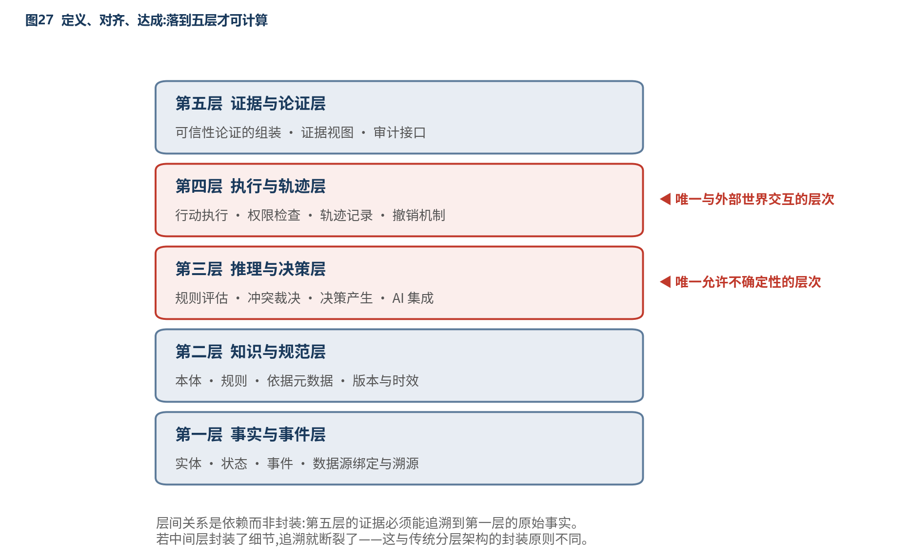
RAG 让知识影响了输出，没有让知识进入执行
对齐要求知识进入执行。先把今天仍在用的做法摊开——它们停在看见，进不了执行。知识常常作为文档存在:业务规则写在需求文档、操作手册、行业标准里。人阅读它们，然后写代码实现。局限是显然的:文档与代码分离，二者会不一致，而且不一致无法被检测。文档说“超过五万元需二级审批”，代码里写的是 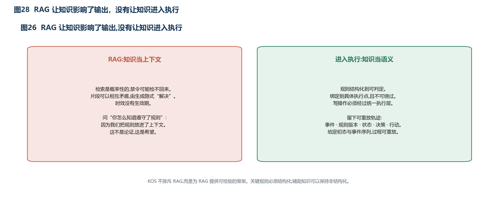if (amount > 50000)——当政策改为四万元时，文档改了而代码没改(或者反之)，没有任何机制会发现。另一种做法是把知识做成配置:把可变的参数提取到配置文件或数据库。这是一个进步，它至少让参数的修改不需要改代码。但配置只解决了参数，没有解决结构:规则之间的关系、规则的适用条件、规则的优先级，仍然编码在代码里。而且配置项通常没有依据元数据——一个配置文件里写着 approval_threshold: 50000，但这个数字从哪来、谁定的、什么时候该复核，无从知晓。
大模型时代的主流做法是把知识当作检索上下文(RAG):把文档切块、向量化、存入向量数据库，在推理时检索相关片段作为上下文交给模型。检索增强生成(Retrieval-Augmented Generation，RAG)解决了一个真实的问题——它让模型能够使用训练数据之外的、组织特有的知识。它的价值不容否认。但从可信性的角度看，RAG 有几处根本局限，值得说清楚，因为这决定了后续论述的必要性。检索是概率性的，而规范的适用应当是确定的。向量检索基于语义相似度返回最相关的 k 个片段。这对“回答一个问题”是合适的，但对“应用一条规则”是不合适的。如果一条禁止性规则因为措辞与当前查询的相似度不够高而未被检索到，那么模型将在不知道这条规则存在的情况下做出决策。它不会说“我不确定”，它会给出一个自信的、违规的答案。
检索结果的组合也可能不一致。检索返回的多个片段之间可能相互矛盾(来自不同版本的文档、不同部门的规定)。RAG 没有机制检测或裁决这种矛盾，它把矛盾的材料一起交给模型，由模型的生成过程隐式地“解决”——而这个解决过程不可见、不可控、不可复现。知识的时效性同样无法保证。向量库中的片段通常不携带生效期。一份2023年的文档与一份2026年的文档，在向量空间中的地位是平等的。最根本的是:RAG 让知识影响了输出，但没有让知识进入执行语义。模型读了规则，然后生成了一段文本或一个函数调用。规则是否真的被遵守了?没有任何机制检查。唯一的保障是“模型应该会遵守它读到的规则”——而这是一个关于模型行为的经验期望，不是一个可被验证的保证。
第四章的判据在这里适用:问“你怎么知道这个决策遵守了规则”，RAG 架构的回答只能是“因为我们把规则放进了上下文”。这不是论证，这是希望。
知识进入执行的四个条件
上述分析指向一个结论:要让知识按使命参与执行，知识必须从“被阅读的材料”变成“被执行的语义”。这不是一条愿望，它要求几件事同时成立。知识必须被结构化到可判定的程度。一条规则如果表述为自然语言“重要客户的大额订单应当谨慎处理”，它无法被执行——“重要”“大额”“谨慎”都不可判定。它必须被结构化为:适用条件(客户等级 ∈ {A， B} 且 订单金额 > X)、要求(必须经过角色 R 的审批)、例外(若客户等级为 A 且 历史违约次数 = 0，则阈值提高至 Y)。这里必须诚实:这个结构化过程是昂贵的，而且不是所有知识都能被结构化。第八章将把建模成本列为整条路线最主要的实践风险。本书的立场是:结构化应当按可信性需求分级进行——关键规则必须结构化，辅助知识可以保持非结构化形态供 RAG 使用。KOS 不排斥 RAG，而是为 RAG 提供一个可检验的骨架。 其次，知识必须绑定到执行点。一条规则不能只是存在于某处，它必须与具体的执行点关联:哪些行动的执行必须经过这条规则的检查。这个绑定必须是声明式的、可查询的——你应当能问“哪些规则会在这个行动执行前被检查”，并得到完整答案。这与“把规则写进那个行动的处理代码里”的区别在于:后者的绑定隐含在代码结构中，无法被查询、无法被审计、修改时容易遗漏。更关键的是，检查必须不可绕过。如果一个行动可以通过某条路径绕过规则检查而执行，那么规则提供的保证就是虚假的。这要求架构层面的强制:所有对外部世界的写操作，都必须经过统一的执行层。前文把“执行层是唯一与外部世界交互的层次”定为架构决定，正是为此。 这与操作系统的设计思想同源。用户程序不能直接访问硬件，必须通过系统调用，因为只有这样内核才能实施检查。KOS 的执行层就是知识层面的系统调用边界。但还要承认:执行过程必须留下可检验的轨迹。检查发生了，结果是什么，依据哪条规则的哪个版本，当时的状态是什么——这些必须被记录，且记录必须满足第五章对证据提出的那些条件。
可重放，才谈得上可检验
达成要求这一次执行仍可被检查。机制是四个概念的组合:
Event + Rule + State + Execution Trace 这个组合的运行方式如下。事件驱动。 系统的推进由事件触发，而不是由过程调用。一个事件表示“世界中发生了某件事”:订单被提交、传感器读数更新、审批被批准、时间到达某个点。为什么必须是事件驱动?因为规则的适用是响应性的，而不是过程性的。 一条规则说“当条件 C 成立时，要求 R”。它不关心谁触发了状态变化，只关心状态变化后条件是否成立。如果用过程调用组织，那么每一个可能导致 C 成立的代码路径都必须记得去检查这条规则——而这正是遗漏的来源。规则响应事件。 事件发生后，系统确定哪些规则被激活(其适用条件涉及本次变化的状态)，评估这些规则，产生决策。 状态被显式管理。 规则的评估依赖状态，而状态的每一次变化由事件引起。这形成一个闭环:事件改变状态，状态激活规则，规则产生决策，决策导致行动，行动产生新事件。轨迹记录整个过程。 每一步都被记录:什么事件、激活了哪些规则、每条规则的评估结果、产生了什么决策、执行了什么行动、状态如何变化。这个模型的关键性质是:给定初始状态与事件序列，整个执行过程是可重放的。 而可重放性是可检验性的技术基础——你可以取一次真实执行的轨迹，在隔离环境中重放它，检查每一步是否符合预期。
对照第四章识别出的三个规范问题:规范的规模超出人的审查能力。 当规则被结构化并绑定到执行点后，可以自动回答“哪些规则适用于这个场景”“这条规则影响哪些行动”。审查不再需要通读全部规则，而可以按场景切片。规则冲突静默存在。 结构化的规则使冲突检测成为可能——至少某些类型的冲突。这个问题的深度值得单独讨论，见下文“冲突裁决”。规范会随外部世界失效。 当每条规则携带生效期与复核周期时，过期规则可以被主动识别。这不能保证规则内容正确，但能保证“该被复核的规则会被提出来复核”。 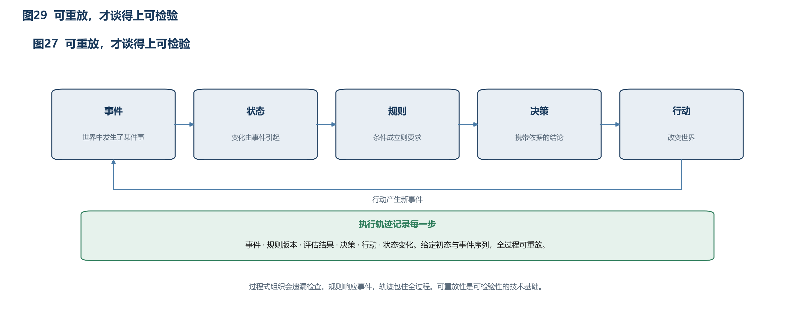
图29 可重放，才谈得上可检验
冲突裁决:把偶然的裁决变成显式的裁决
规则冲突是这条技术路线上最棘手的实际问题之一，不能含糊处理。什么是冲突? 两条规则对同一情境给出不相容的要求。规则 A:“金额超过五万需二级审批。” 规则 B:“A 级客户的订单免二级审批。” 当 A 级客户提交六万元订单时，两条规则冲突。冲突的类型。 至少可以区分三类:逻辑冲突 — 两条规则的要求直接矛盾(必须做 X / 禁止做 X)。这类冲突原则上可以被自动检测，如果规则被形式化到足够程度。优先级未定 — 两条规则都适用，但哪条优先没有被定义。这类“冲突”其实是规范的不完整，而不是矛盾。语义冲突 — 两条规则表面兼容，但在特定情境下导致不合理结果。这类冲突通常无法被自动检测，因为“不合理”依赖于规范之外的判断。 可以做什么。 对第一类，自动检测是可行的，尽管完全的检测在一般情况下会遭遇第五章讨论的不可判定性——实践中只能覆盖受限的规则表达形式。对第二类，系统应当能够检测“存在多条适用规则而优先级未定”这种情况，并要求显式声明优先级，而不是让执行顺序偶然决定。这一点是重要的实践改进:把“偶然的裁决”变成“显式的裁决”。 即使系统无法判断哪条规则应当优先，它至少可以强制这个决定被明确做出、被记录、有责任人。第四章指出，当前系统中大量行为“不是任何人的意图，而是若干意图相互作用的偶然产物”——而这个机制直接针对它。 不能做什么。 第三类语义冲突基本无法自动处理。而且必须承认，即使对第一类，规则表达越丰富，自动检测的完备性就越差。本书不主张 KOS 能够消除规则冲突，只主张它能把大部分冲突从不可见变为可见。
两种理性在架构中的位置
前面把人工智能与定理证明写成方法上的两种理性。落到五层上，位置必须钉死，否则融合会重新变成“让模型直接决定”或“只有专家能用的证明”。
人工智能落在第三层，并且只在那里被允许不确定。它适合承担:从文档、代码、对话、数据中提取候选的实体、关系、规则与托付草稿;把自然语言的禁区转成结构化初稿，供定理证明器或规则引擎接着用;判断复杂现场是否落入某条规则的适用条件;把决策与依据译成面向特定受众的解释;在轨迹中发现异常，提交给人审判。这是生成理性进入定义、对齐、达成的具体工作。
它不适合承担:最终的规范权威、不可绕过的检查、权限裁决。提取的规则必须由人确认。原因见第五章:AI 不能提供标准本身。检查必须由确定性机制执行，同一输入必须产生同一结果，否则轨迹失去证明力。
定理证明与自动推理落在第二层与第四层之间那些已经写成数学对象的性质上:规则的逻辑冲突、不变量、精化、接口契约里可形式化的片段，以及规则引擎、编译器、内核这类被复用的基座。这是演绎理性。它不取代第三层的情境理解，也不取代第五层从轨迹派生的证据。seL4 与 CompCert 示范深度;AWS 的 SMT 示范广度。二者都属于这套方法，强度按后果选择。
当人工智能用于生成、确定性机制与证明用于检查时，故障模式才独立。模型的盲点不能传导到检查环节。这就是第五章“AI 验证 AI”的解法，也是融合理性的纪律。
主张可以提，成品不能假装已经有了
本书对这一技术方向的期望应当被准确表述，既不夸大也不虚饰。方法可以主张，成品不能假装已经有了，使命软件工程学也不能假装已经形成。
Event + Rule + State + Execution Trace 这个组合探索的是一个具体问题:如何让知识成为使命计算过程的一部分。它可能成为未来一门学问的一块材料。但本书不主张它是唯一的路径，也不主张它已经成熟，更不主张学科已经立住。事件驱动架构、规则引擎、事件溯源、形式化规范，这些技术都已存在多年;本书主张的是把它们与知识的依据管理、行动的权限控制、证据的自动产生组合成一个统一的基础设施层。这个组合是否可行、代价多大、边界在哪里，需要通过实际的工程实践来回答，而不能通过论证来确定。第八章列出的未解问题还在，就谈不上形成了一门学。
定义、对齐、达成，要落到可检查的对象上
面向使命的软件工程，核心只有一件:仍在执行被托付的那一件，并且拿得出可被证伪的检查。内涵是绑住托付的工程，对手是假使命，人在立法、划界、审判。方法论是原则先于步骤、步骤先于工具:定义、对齐、达成，生成且演绎，强度与后果挂钩。理论体系立住对象、问题、判据，以及规范鸿沟、生成验证不对称、信任转移与条件保证;工程体系把继承的底座接到五原则、九对象、五层、九环与可重放。知识操作系统是装置的名字。少了定义，对齐与达成对着一张更顺手的目标函数;少了对齐，定义停在纸上;少了达成，前两步只说明曾经设计过，不说明这一次仍在执行。拥抱若变成模型当判官，或变成处处都要交互式证明，同样会把方法做空。底座不要，使命是口号;判据不换，底座只是更昂贵地交付假使命。四层构成体系主张，还不构成工程学。使命软件工程学尚没有形成。
要把这三步做成可计算的而不是可宣讲的，知识必须从代码里被解放出来，成为带着依据的对象。知识操作系统是这层基础设施的名字，不是已经交货的操作系统。它管理实体、事件、状态、关系、规则、决策、行动、轨迹、证据。事件必须独立于状态;规则必须独立于代码;决策必须携带依据;轨迹是运行时证据的载体;证据按四项条件从轨迹派生，面向不同受众可以是不同视图。
五条原则是方法的硬约束，也是架构的硬约束:显式优于隐含，一切携带依据，行动可控可逆，证据自动产生，工程可用性优先。五层之中，推理层是唯一允许不确定性的层次，执行层是唯一与外部世界交互的层次。RAG 让知识影响输出，不让知识进入执行;进入执行的四件事——可判定、绑在执行点、不可绕过、留下轨迹——才是对齐的技术内容。可重放才谈得上达成。冲突无法被许诺消除，但大部分可以从不可见变为可见。人工智能把非结构变成可审核的候选;定理证明与确定性机制把已经写清的性质变成可检查的绳子。二者融合，是为了达成，不是为了展示工具。
主张可以提，成品不能假装已经有了。事件、规则、状态与轨迹的组合是否可行、代价多大、边界在哪里，要由工程实践回答。世界建模、定义对齐达成、执行语义若不能串成一条链，就只是彼此相邻的主张。第八章把链摊开，并写下尚未解决的问题。
第八章 使命计算链与测试
「测试是以发现错误为目的去执行程序的过程。」
——格伦福德·迈尔斯(Glenford J. Myers)，《软件测试的艺术》，1979
迈尔斯把测试的意图说死了:你是来找错的，不是来证明对的。当代产业把这句话拧成了反面——测试用来证明可以上线，上线用来证明已经测过。于是测试套件越来越像一份自我表扬。第七章写过:测试工具箱是继承来的，迈尔斯的意图也是继承来的。换掉的是找哪一类错。传统测试找实现错误;使命计算链还要找使命偏离，并且证据不能被绕过。链的终点不是仪表盘上的绿灯，是可以被别人拿去证伪的材料。
世界建模、定义对齐达成、执行语义若不能串成一条链，就只是彼此相邻的主张。每一环要保证什么，“证据”为何必须是终点而不是副产品——这才是工程规格。
九个环节，每一环都要交出证据
第一编提出，使命智能软件的路径应当从> Data → Ontology → AI → Action延伸为> Data → Knowledge → Ontology → Rule → AI → Decision → Action → Verification → Evidence现在逐环说明每一环的职责、需要的保证，以及失效时的后果。这不是一个概念清单，而是一份工程规格。
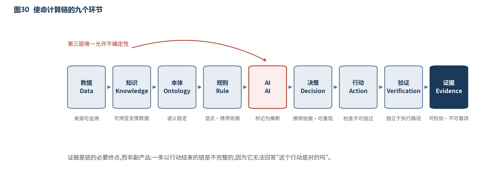
环一:数据(Data)
职责:提供关于世界的原始观测。需要的保证:来源可追溯(这条数据来自哪个系统、哪次采集)、时间明确(观测时间与入库时间需区分)、完整性可检验(未被篡改)、质量可评估(缺失、异常、冲突可被识别)。失效后果:上层的一切都建立在错误的事实之上，而且这种错误极难发现——因为系统不会报错，它会给出一个基于错误数据的、看起来合理的答案。
环二:知识(Knowledge)
职责:把数据提升为关于世界的断言。数据是“传感器 A 在时刻 t 读数为 85”;知识是“设备 X 当前处于高温状态”。需要的保证:每一条知识必须能追溯到支撑它的数据与推导过程;必须有时效标记;冲突的知识必须被识别而非静默共存。失效后果:系统对世界的理解偏离现实，而这种偏离在数据层面不可见。这一环是第六章“依据层”的核心。 它也是最常被跳过的一环——大多数系统直接从数据跳到应用逻辑，没有显式的知识层。
环三:本体(Ontology)
职责:提供世界的结构框架——有哪些类型的实体、它们有什么属性、它们之间有什么关系。需要的保证:与数据的绑定明确(每个对象类型由哪些数据支撑)、语义稳定(同一概念在系统各处含义一致)、演化可控(本体变更不会静默破坏已有的知识与规则)、可被独立检验(第六章关于开放性与独立检验的论证)。失效后果:同一概念在不同地方含义不同，导致数据被错误地组合、规则被错误地应用。这类错误极其隐蔽。
环四:规则(Rule)
职责:表达规范性要求——什么被要求、什么被禁止、什么被允许。需要的保证:显式表达、携带依据、绑定到执行点、冲突可检测、版本化。失效后果:第四章讨论的全部规范问题——静默冲突、过期规范、未经审议的隐含决定。
环五:AI
职责:承担第七章所界定的生成理性——知识提取、情境理解与匹配、解释生成、异常发现，以及把自然语言禁区转成可供证明与规则引擎接着用的结构化初稿。需要的保证:输出必须被标记为推断而非事实(第七章“第三层是唯一允许不确定性的层次”的具体实现);推断必须携带置信度与依据;不得承担最终规范权威、不可绕过的检查、权限裁决。失效后果:如果 AI 的推断被当作事实，那么整条链的确定性就被污染了——而且污染点不可见，因为推断与事实在下游看起来一样。这一环的边界管理是整个架构中最需要纪律的地方。 工程上的诱惑总是“让模型直接决定”，因为那样代码更简单。
环六:决策(Decision)
职责:在具体情境中，基于知识与规则得出结论。需要的保证:决策必须是一个对象而非一个返回值(第七章);必须携带输入、适用的规则、推理路径、置信度;必须可重现(同一输入产生同一决策);被覆盖或被排除的替代方案应当被记录。失效后果:无法回答“为什么是这个结论”，从而无法解释、无法审计、无法追责。“被排除的替代方案应当被记录”这一点常被忽略，但它对可信性很重要。 一个决策的合理性，往往不在于它选择了什么，而在于它排除了什么以及为什么排除。
环七:行动(Action)
职责:执行对世界的改变。需要的保证:执行前经过权限与规则检查(不可绕过);可逆性被明确分类;副作用被声明;执行结果被确认(不能假设执行成功);不可逆行动有更严格的前置要求。失效后果:第三章讨论的全部 Agent 风险——不可逆行动、委托链中的错误放大、越权执行。
环八:验证(Verification)
职责:检查执行是否符合预期。这一环需要被特别说明，因为它容易被误解为“就是测试”。验证在这条链上有三个不同的时机:事前验证(Pre-execution):在行动执行前检查它是否被允许、是否满足规则要求。这是同步的、阻塞的。事中验证(In-execution):在执行过程中监控不变量是否被维持。事后验证(Post-execution):执行完成后，检查结果是否符合预期，状态转换是否合法，是否产生了未预期的副作用。需要的保证:验证机制本身独立于被验证的执行路径(否则同一缺陷会同时影响执行与验证——这是第五章相关性失效的另一个体现);验证失败必须有明确的处置路径(不能只是记录一条日志)。失效后果:系统执行了错误的行动而无人知晓。这是最危险的失效模式，因为它是静默的。
环九:证据(Evidence)
职责:组装可被检验的论证材料。需要的保证:满足第五章提出的那些条件——可检验、完整(不可篡改)、可关联、及时;能够派生出面向不同受众的视图;自动产生。失效后果:即使系统实际运行正确，也无法向他人证明这一点。按第四章的定义，这本身就构成可信性的缺失。
证据是终点，不是副产品
有一种反对意见:证据只是副产品，把它列为链的一环是过度设计。系统的目的是完成业务，而不是产生证据。这个反对意见在直觉上有吸引力，但我们认为它是错的。先看定义。第四章把可信性定义为“能够就其行为向相关方出示可被检验的论证的能力”。按这个定义，不能出示论证的系统就是不可信的——无论它事实上运行得多好。证据不是可信性的副产品，证据就是可信性的载体。再看第二章的制度教训。从第14028号行政令的自我声明，到第14144号行政令对声明失效的纠正，美国政府用四年时间在制度上确认了:可信性不能建立在声明之上，只能建立在可验证的证据之上。一个不产生证据的系统，只能提供声明。 法律已经把这件事写成了直接要求。第三章已详述:欧盟《人工智能法案》要求高风险系统的日志记录所采取的行动而非仅生成的文本，要求人能够中止或撤销行动，要求风险管理贯穿生命周期，并将合规边界延伸至链条中每一个执行高风险功能的 Agent。定义、制度与法律共同支持一个判断:证据不是可选的附加功能，而是链的必要终点。一条以行动结束的链是不完整的，因为它无法回答“这个行动是对的吗”。
接口契约:各自正确，合起来是错的
现在处理第五章提出的可组合性问题的具体形态。链上的每一环都有自己的保证。但整条链的可信性不是各环保证的简单相加。第六章已用 seL4 与 CompCert 的关系说明:一环的保证必须精确地满足下一环的假设。因此，链的设计必须显式处理接口契约。对每一对相邻环节，需要明确:上游提供什么保证? 例如:知识层保证“每条知识携带时效标记且未过期”。下游依赖什么假设? 例如:规则层假设“输入的事实是当前有效的”。二者是否匹配? 如果知识层只保证“携带时效标记”而不保证“未过期”，那么规则层的假设就没有被满足，存在缺口。这个分析必须逐对进行，而且必须被显式记录。
1999年火星气候轨道器的失联，是接口契约失配最纯粹的案例。
这个航天器在发射九个月后失去联系，调查认定它在火星大气中烧毁。根本原因简单到令人难以置信:地面软件使用英制单位，而星上软件使用公制单位。一个名为“Small Forces”的软件文件中，推力数据本应以牛·秒(N·s)表示，却以磅力·秒(lbf·s)给出。
由于 1 磅力约等于 4.44822 牛，导航计算把实际施加的冲量严重低估。累积的偏差使航天器进入火星大气层的高度远低于预期，最终解体。任务成本的口径有不同说法:轨道器本体约8,700万美元，而整个任务的全生命周期成本约3.27亿美元。
请注意这个失败的性质。地面软件没有错——它在自己的单位体系内计算完全正确。星上软件也没有错——它同样在自己的单位体系内正确工作。每一个组件都满足自己的规范，而组合起来的系统是错的。
这便是可组合性问题的核心。第五章曾指出，两个各自都有良好使命论证的组件，组合起来的可信性不能简单相加。火星气候轨道器演示了原因:上游提供的保证(推力值，单位为磅力·秒)与下游依赖的假设(推力值，单位为牛·秒)之间存在缺口，而这个缺口在两个独立的论证中都不可见。
调查还指出了其他致因:速度变化未被追踪、导航团队人手与训练不足、系统工程不足、项目各部分之间联系薄弱，以及验证与确认过程有缺陷。NASA 自己的安全通报把这个案例定性为“验证与确认”的失败——团队没有确保软件与需求相符。
接口契约如果不被显式表达，它就会以隐含假设的形式存在;而隐含假设不会被检查，直到它失效的那一天。它不能被架构自动保证，只能被工程纪律保证。 这是在本书看来最容易在实践中失守的部分，下文会把它列为主要未解问题之一。
绕过必须是不可能的，而不是不被鼓励的
除了逐对的接口匹配，链还需要一个全局性质:完整性——不存在绕过链的路径。如果一个行动可以不经过规则检查而执行，那么规则提供的保证就是虚假的。如果一次决策可以不留轨迹，那么证据就是不完整的。如果知识可以被直接修改而不经过依据登记，那么依据层就失效了。链的可信性取决于最薄弱的一环，而“存在绕过路径”是最薄弱的一种。这就是第七章把“第四层是唯一与外部世界交互的层次”作为架构设计决定的原因。它与操作系统的系统调用边界是同一个思想:不是因为其他路径不方便，而是因为其他路径必须不存在。 在工程实践中，这个要求会遇到强大的阻力。总会有紧急情况需要“临时绕过”，总会有性能瓶颈让人想要“跳过检查”，总会有遗留系统无法接入。而每一次绕过都在链上打一个洞，而洞的存在会使建立在链上的全部论证失效。因此，我们主张:绕过必须是不可能的，而不是不被鼓励的。 如果确实需要例外通道，那么例外通道本身必须是链的一部分——它必须被显式声明、被权限控制、被完整记录。一个被记录的例外仍然可以支撑论证(“我们知道这里有一个例外，它被使用了 N 次，每次都有记录”);一个未被记录的绕过则摧毁论证。
成本:L0 到 L3 的分级
一个诚实的讨论必须处理成本问题。上述九环，每一环都有实现成本、运行成本、维护成本。全部实现它们，对大多数系统来说是不经济的。因此本书主张分级实施，这与中国《人工智能安全治理框架》2.0版的“风险分级治理”“高风险严管、低风险松绑”原则一致。分级的维度可以包括: 行动的不可逆性(可逆行动的前置检查可以较轻，不可逆行动必须完整走链);影响的规模(影响单个记录与影响百万用户，要求不同);监管的要求(落入高风险类别的系统必须满足法定要求);自主性的程度(有人在环的系统与完全自主的 Agent，要求不同)。一个具体的分级建议:L0(观测级):只有数据与知识层，不参与决策。要求:数据可溯源。L1(建议级):产生建议供人决策。要求:加上规则显式化与决策可解释。 L2(受控执行级):自主执行可逆行动。要求:加上不可绕过的检查与完整轨迹。L3(关键执行级):自主执行不可逆或高影响行动。要求:完整九环，加上事前人工确认与独立验证。
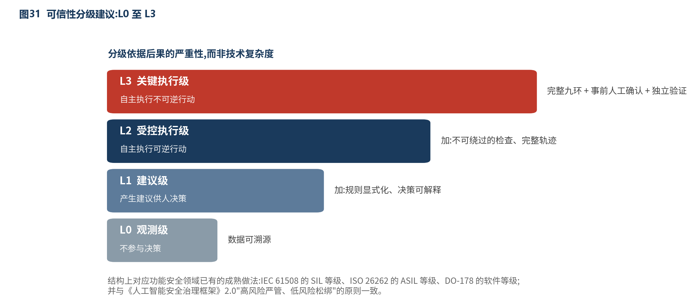
现代系统不是函数，测试却还在按函数测
传统软件测试的基本模型极其简洁:
输入 → 输出 给定一个输入，系统应当产生一个预期的输出。测试就是构造输入、观察输出、比对预期。这个模型的成功是巨大的。单元测试、集成测试、系统测试、验收测试，回归测试、性能测试、压力测试——整套方法论建立在这个简单模型之上，并且行之有效。但它有几处内在边界。它需要预期是已知的。这就是“测试预言问题”(test oracle problem)。对于“计算两数之和”这样的功能，预期是明确的。对于“评估这份贷款申请的风险”，预期是什么?它也只能覆盖被测试的具体情况。Dijkstra 的名言:“测试只能证明缺陷的存在，不能证明缺陷的不存在。” 更关键的是:它把系统当作一个从输入到输出的函数，而现代系统不是函数。现代系统有状态、有知识、有规则、有外部依赖、有随时间漂移的模型。同样的输入在不同时刻会产生不同的输出，而这种差异可能是正确的(因为状态变了)，也可能是错误的(因为模型漂移了)。传统测试无法区分这两种情况。 如果可信性的对象是九环链，测试的对象也必须跟着扩展:> 数据 → 知识 → 语义 → 规则 → 模型 → 决策 → 行动 → 执行 → 证据于是需要一组新的测试类型，其中大部分目前没有成熟的工具支持。以下逐项说明每种测试要检查什么、如何进行、以及为什么传统测试无法覆盖。
数据可信测试
检查什么:数据的来源是否可追溯、时间戳是否一致、完整性是否可验证、质量指标是否在可接受范围、是否存在冲突的来源。如何进行:主要是对数据管道的持续断言，而非一次性测试。例如:所有进入系统的数据必须有来源标识;时间戳必须落在合理范围;同一实体来自不同源的属性冲突必须被记录。为什么传统测试无法覆盖:传统测试用固定的测试数据，而数据可信性关注的偏偏是生产数据的性质。
知识一致性测试
检查什么:知识库内部是否存在矛盾的断言;每条知识是否可追溯到支撑数据;是否存在已过期但仍被引用的知识。如何进行:定期的全量一致性检查，加上变更时的增量检查。为什么重要:第四章指出“知识会过期而代码不会”。这类测试是对这个问题的直接应对。
本体一致性测试
检查什么:本体的内部一致性(是否存在矛盾的类型约束);与数据的一致性(声明的属性是否真的存在于支撑数据中);演化的兼容性(本体变更是否破坏了已有的知识与规则)。如何进行:本体一致性检查是描述逻辑领域的成熟问题，有现成的推理机可用——这是本书认为采用开放标准的一个具体理由:W3C 标准生态有大量可复用的推理工具，而私有表示则需要自建。
规则冲突测试
检查什么:第七章讨论的三类冲突——逻辑冲突、优先级未定、语义冲突。如何进行:对逻辑冲突，可通过约束求解检测受限形式的规则集;对优先级未定，可通过枚举“多条规则同时适用”的情况来检测。必须诚实的限制:完全的冲突检测受制于第五章的不可判定性。规则表达越丰富，检测的完备性越差。
模型行为测试
检查什么:模型在分布内的准确性;在分布外输入上的行为(是否给出低置信度而非自信的错误答案);对扰动的鲁棒性;随时间的漂移;公平性与偏见。如何进行:这是机器学习测试领域的活跃方向，已有相当积累。关键是把它纳入使命论证的框架——模型评估结果必须成为证据的一部分，而不只是一份研发阶段的报告。特别需要注意的是漂移检测。第三章引用云安全联盟的分析:Agent 会表现出“累积而未被察觉的行为漂移”。由于没有明确的失败事件，漂移不会触发告警。因此漂移检测必须是主动的、持续的，而不是被动的。
Agent 行为测试
检查什么:Agent 是否只执行被授权的行动;在委托链中是否正确传递约束;面对提示注入是否保持行为边界;在多步计划中是否会累积偏差;能否被可靠地中止。为什么这是一个新类型:传统测试测的是“给定输入产生什么输出”，而 Agent 测试要测的是“给定目标，它会采取什么行动序列”。行动序列的空间远大于输出的空间，而且行动有外部副作用，无法自由重试。NIST 已识别的相关威胁:《AI 100-2e2025》对抗性机器学习分类法涵盖间接提示注入、检索知识库投毒、后门，以及多 Agent 提示蠕虫传播。这些都需要对应的测试能力。云安全联盟建议的度量维度:自主性分级、工具使用风险建模、行动—后果映射、运行时行为度量、委托链监控。
权限测试
检查什么:权限模型是否与设计一致;是否存在权限提升路径;是否存在绕过权限检查的执行路径;权限的传递(特别是 Agent 代表用户行动时)是否正确。为什么关键:第三章引用的 IBM 数据——13%的组织 AI 系统被攻陷，其中97%没有部署 AI 访问控制。这个数字说明权限测试在实践中几乎不存在。
执行轨迹测试
检查什么:轨迹是否完整(每次执行都有记录);是否不可篡改;是否可重放(重放能否产生相同结果);是否可关联到具体主张。如何进行:定期抽取生产轨迹进行重放验证。这是一种新的测试形态——用生产环境的真实执行作为测试用例。为什么这是范式转移的关键:传统测试是在生产之前构造场景;而可重放的轨迹使得“用真实发生的事情来验证系统”成为可能。这直接对应第四章讨论的“论证时机向运行时移动”。
证据链测试
检查什么:对系统的每一项可信性主张，是否存在支撑它的完整证据;证据是否满足第五章的四项条件;能否从证据重建论证。如何进行:这本质上是对使命论证本身的测试。给定一个主张(如“本系统不会在未经二级审批的情况下执行超过阈值的转账”)，系统应当能够自动产生支撑它的证据集合，并且这个集合应当被检查其充分性。
测试从独立活动变成基础设施能力
综合起来，软件验证的范围发生了根本扩展:> 代码验证 → 知识 + 软件 + AI + 行动验证这个扩展的含义不只是“要测的东西变多了”。它意味着测试这个活动的性质发生了变化:从事前构造到持续断言。 传统测试主要在交付前进行;而数据可信性、知识一致性、模型漂移、轨迹完整性，都必须被持续监控。从二元判定到程度评估。 传统测试的结果是通过或失败;而“知识是否足够新”“模型是否漂移到不可接受的程度”，答案是程度性的。从人工构造到自动生成。 由于规模，测试用例必须越来越多地由系统生成——从规则自动生成检查、从本体自动生成一致性测试、从生产轨迹自动生成回归测试。这是第六章关于验证必须与计算资源成正比的直接应用。 从独立活动到基础设施能力。 上述大部分测试无法作为独立的测试项目实施，它们必须是运行时基础设施的内置能力。这是本书主张 KOS 的又一个理由:测试能力必须内建于知识与执行的基础设施之中。
七个我们还不知道怎么解决的问题
最应当避免的，是留下“问题已被解决”的印象。下面列出这条主张中尚未解决的主要问题。这些不是次要的技术细节，其中任何一项如果无法解决，都会显著削弱整条路线的可行性。
建模成本
世界建模需要人的投入，而这个投入难以被完全自动化。语义网在2000年代进入实际使用的困难，主要原因就是建模与维护成本。目前的应对是:大模型显著降低了从文档、代码、数据中提取候选模型的成本;增量按需的建模策略;按可信性等级分级投入。未解的部分是:大模型提取的模型质量如何保证?人工确认的工作量在大规模系统中是否可承受?本体如何随业务演化而低成本地维护?这是整条路线最主要的实践风险。
可组合性
第五章与本章都指出，单点的可信性不能自动组合为整体的可信性。接口契约必须被显式处理，而这依赖工程纪律而非架构保证。目前的应对是逐对分析相邻环节的保证与假设，并显式记录接口契约。未解的部分是:接口契约本身如何被形式化和自动检查?当链条很长时，契约的组合验证是否可行?这是形式化方法领域的长期难题，本书没有新的解法。
规则表达力与可判定性的权衡
规则表达越丰富，冲突检测与一致性验证的完备性越差。这不是工程问题，而是第五章讨论的理论限制。目前的应对是限制规则的表达形式以保持可判定性;对超出可判定范围的规则，接受不完备的检测。未解的部分是:在实践中，业务规则的自然表达往往需要超出可判定片段的表达力。如何在保持可用性的同时控制表达力，没有通用答案。这个权衡可能需要针对不同领域分别解决。
性能开销
每个行动都要经过规则检查、每一步都要记录轨迹、所有知识都要携带依据——这些都有性能代价。在高吞吐场景下，代价可能不可接受。目前的应对是分级实施;对低风险路径采用轻量检查;轨迹的异步写入与分层存储。未解的部分是:在极高吞吐场景(如高频交易、实时控制)下，完整的使命计算链是否可行?可能存在一类系统，其性能要求与完整的使命论证在根本上不兼容。本书不掩饰这个可能性。
知识表示的标准化
本书的立场是采用开放标准，但现有的 W3C 标准生态(OWL、RDF、SPARQL)是为语义网设计的，它们在表达行动、权限、时效、依据方面并不完善。而 Palantir 式的私有表示虽然在工程上更适配，却违反了可被独立检验的要求。未解的部分是:需要什么样的标准?它应当是对既有标准的扩展，还是新的标准?如何在标准化与工程实用性之间平衡?这是第五编讨论中国路径时的一个核心问题——它同时是技术问题与产业战略问题。
AI 边界的实际维持
第七章界定了 AI 的职责边界:负责非结构化到结构化的转换，不承担确定性的推理与执行。但在工程实践中，这条边界会持续受到压力——让模型直接决定总是更简单、更快、更省事。未解的部分是:如何在架构上强制这条边界，而不只是依靠规范与评审?这需要类似类型系统的机制:让越界在技术上不可能，而不只是不被鼓励。目前没有成熟的方案。
证据的长期保存与隐私
完整的轨迹与证据意味着大量数据的长期保存。这引出两个冲突:存储成本，以及与数据最小化原则、被遗忘权等隐私要求的冲突。未解的部分是:如何在保留证明力的同时最小化数据?密码学承诺、零知识证明等技术在这里可能有用，但成熟度与成本都需要评估。
边界写清楚，预期才能校准
上述问题里，前几项主要是技术—工程问题，后几项是技术—制度交织的问题。把它们写出来，首先是学术诚实。一条技术路线的价值，部分体现在它是否清楚自己的边界。第六章赞赏 seL4 的地方之一，正是它明确说明了自己的假设与不覆盖的范围。它们也给后续研究标出了方向:其中任何一个，都足以构成一个研究方向。更直接的作用是校准预期。这条技术路线不是一个即将成熟的产品，而是一个需要长期投入的方向。第五编讨论产业路径时，时间尺度必须与这个现实相匹配。
一条有洞的链，不是链
九环已经摊开。证据必须是终点，绕过必须不可能，接口契约必须被写成可以检查的东西。一条有洞的链，不是链。尚未解决的问题——尤其是建模成本——不在这里再复述一遍;它们是这条路线的真实地形，不是附录里的免责声明。
第三编 结语
使命必须成链。第七章钉死核心，并分开写出内涵、方法论、理论体系与工程体系。KOS 仍是装置的名字。使命软件工程学尚没有形成。尚未解决的问题——尤其是建模成本——构成校准。技术论证至此完成。它能否成为现实，取决于谁付钱。
第四编 使命凭什么值钱
2012年8月1日早上，金融世界里发生了一件悄然却惊人的事情。美国最大的做市商之一——Knight Capital——正像往常一样，准备迎接纽约证券交易所开盘后的第一波交易。它在2012年上半年处理了约11%的美国股票交易，是市场流动性的重要提供者。它的系统会自动执行大量的高频交易，为零售经纪商处理订单。整个流程在极短的时间内、以接近人工速度成千上万倍的效率运行着。那天早上，一件意想不到的事情发生了。Knight Capital 安装了一套与纽交所“零售流动性计划”相关的新交易软件。在安装过程中，一套旧的、原本处于休眠状态的代码被意外地重新激活。一旦触发，这套代码会在每次交易中把订单量放大一千倍。 在开盘后短短四十五分钟里，错误的订单洪流涌入了纽交所，数量高达数亿股，涉及一百多只股票。这些交易在短短的四十五分钟里，造成了约4.4亿美元的税前亏损——相当于每分钟亏损一千万美元。Knight Capital 在两日内股价暴跌约70%—80%，市值从约十亿美元缩水到三亿多美元。几家重要的客户，包括 TD Ameritrade、Vanguard、Fidelity、E*Trade 等，停止向它路由订单。一家有着十五年历史、在行业内声誉卓著的公司，在不到一个小时里走到了崩溃的边缘。后来，它被一群私募基金注资四亿美元才得以存活，代价是大部分的股权被稀释给了这些注资者。但“一小时内几乎丧命”的教训，从此成为金融界关于软件风险的一个经典案例。美国证券交易委员会主席玛丽·夏皮罗称这一事件“不可接受”，并推动要求市场运营方确保交易系统的容量和完整性。 这个故事问的不是一家做市商如何倒下，而是一笔关于托付的账:在巨大的软件产业中，使命究竟值多少?谁会为它付钱?
第九章 谁会为使命付钱
「软件正在吞噬世界。」
——马克·安德森(Marc Andreessen)，2011
安德森说对了一半。软件吞噬了媒体、零售、交通和金融的界面;它还没有把使命变成可以买卖的东西。吞噬世界的软件，如果不能出示自己还在执行哪一件托付，吞下去的就包括公众的耐心、监管的宽容和市场自己的未来。软件有多么重要已经是常识。常识之后的那一问才是:使命凭什么值钱，谁会为它付钱，以及为什么现在还不付钱。
使命凭什么值钱?如果客户不愿为它付费，再大的技术必要性也不会形成产业。
使命是价值的第四层
回顾软件产业的历史，可以看到软件价值的构成经历了几次扩展。每一次扩展都对应一次产业大事，也对应一次信任对象的外移。第一阶段:价值等于功能。
软件价值 ≈ 功能 早期软件的价值在于它能做什么。IBM System/360 把兼容当成产品承诺，工资计算、库存与订票替代了大量手工劳动;买软件就是买功能，功能越多价值越高。这个阶段的商业模式是许可证销售，竞争焦点是功能清单。1968年被命名的软件危机已经警告:功能清单会先于理解能力增长。第二阶段:价值等于功能加平台。 软件价值 ≈ 功能 + 平台 随着软件生态的形成，一个重要的认识出现了:软件的价值不只在于它自己能做什么，还在于它能连接什么、能被扩展成什么。Windows 的价值不只是操作系统的功能，而是运行在它上面的数万个应用。1991年前后，万维网与 Linux 几乎同时把这种平台逻辑写成公共基础设施:一个开放协议，一个开放内核，上面可以长出谁都没有事先批准的应用。2007年的 iPhone 与 App Store 把同一逻辑送进每个人的口袋。这个阶段引入了网络效应，商业模式从许可证转向平台与生态，竞争焦点从功能转向生态规模。第三阶段:价值等于功能加平台加智能。> 软件价值 ≈ 功能 + 平台 + 智能这是当前正在发生的阶段。2006年前后云计算把算力变成水电;2012年前后深度学习把感知写成可训练的函数;2022年底大模型把生成写成可调用的接口。软件不再只是执行预定的逻辑，它开始具备认知能力:理解自然语言、识别图像、预测趋势、生成内容、做出判断。智能作为一个独立的价值维度，其特征是它不能被功能清单描述。你无法列举一个大模型“能做什么”，因为它的能力边界是模糊的、开放的。第四阶段:我们认为的阶段。> 软件价值 ≈ 功能 + 平台 + 智能 + 使命这里的使命，是第四章那五条绑住的程度，不是把愿景印上包装。前三层可以没有禁区、没有托付者仍能卖出去;第四层卖的是:它仍在做被托付的那一件。平台阶段把信任交给生态，智能阶段把信任交给统计。若不把使命写成独立维度，前三层吞下去的世界将没有退货通道。
它凭什么算一个独立维度
上述演进看起来顺理成章，但需要论证:可信性凭什么是一个独立的价值维度，而不是功能或质量的一部分?判断一个维度是否独立，有一个标准:它能否在其他维度不变的情况下独立变化，并且这种变化会改变产品的价值?按这个标准检验。考虑两个功能完全相同、平台完全相同、智能水平完全相同的系统 A 和 B。A 能够对它的每一个决策出示完整的依据链条，能够证明它的每一次行动都经过了规则检查，能够在被质询时重建整个推理过程。B 不能——它只能给出结果。A 和 B 的价值相同吗?在过去，答案可能是“差别不大”。因为如果 B 的实际错误率足够低，它的结果就足够好用。可信性被视为一种“锦上添花”的属性。而今天，答案已经改变了，原因的性质各不相同。
在受监管的场景里，使命不是优势，是准入
最直接的力量来自法律。第三章已详述:欧盟《人工智能法案》要求高风险 AI 系统的日志记录所采取的行动而非仅记录生成的文本，要求人能够中止或撤销行动，要求风险管理贯穿生命周期，并将合规边界延伸至链条中每一个执行高风险功能的 Agent。罚则最高为1,500万欧元或全球年营业额的3%。在这个约束下，A 与 B 的差别不是“更好”与“较好”，而是“可以销售”与“不可以销售”。用一个简单的表述:在受监管的场景中，可信性不是竞争优势，而是市场准入。这个判断的产业含义是巨大的。市场准入不是一个可以通过其他维度补偿的属性。一个功能更强、性能更好、价格更低的产品，如果无法满足合规要求，它的市场份额是零。 而且需要注意监管的范围在扩大。欧盟 AI 法案覆盖的“高风险”清单包括信用评分、简历筛选、医保决定、保险定价、急救分诊——这些都是普通的商业应用，不是军事或核电这样的特殊领域。可信性正在从少数特殊行业的要求，变成一般商业软件的要求。
可信性解锁的是已经花掉的 AI 投资
更深刻的一层来自第五章:验证的自动化程度，决定了 AI 生成能力的可用上限。一个组织能够安全使用多少 AI 生成能力，取决于它能够验证多少。如果验证是人工的，人的验证带宽就是 AI 的天花板。它有一个直接的经济含义:可信性投入不是成本，而是 AI 投资的收益实现条件。考虑一个企业已经投入巨资部署 AI 能力。这些投入能转化为多少实际价值?取决于它敢把多少事情真正交给 AI。而它敢交多少，取决于它能验证多少。如果验证能力不足，那么 AI 的部署会停留在低风险的辅助场景——写文案、做初稿、辅助检索。这些场景有价值，但远低于 AI 的潜力。而真正高价值的场景——自主处理业务流程、自主做出决策、自主执行操作——是需要最强可信性保障的场景。 因此，可信性是 AI 从“辅助工具”走向“生产力主体”的必要条件。第三章的数据为这个判断提供了间接支持:84%的开发者在使用 AI，但只有33%信任其输出。这个巨大的差距意味着:AI 的使用率已经很高，但它被信任的程度很低，因而它创造的价值远低于其技术潜力。而缩小这个差距的唯一途径，是提供可验证的可信性。这个论证改变了可信性投入的会计性质。作为成本，它需要被证明是必要的;作为收益实现条件，它需要被证明是充分的。后者的论证压力小得多，而且它把可信性与已经发生的巨额 AI 投资绑在了一起。
不敢自动化的成本正在显性化
还有一层来自第三章。那一章指出，不使命软件的最大代价可能不是已经发生的损失，而是因为不敢信任而未能实现的价值:因为不信任而不敢自动化的流程、因为担心出错而保留的人工复核、因为无法验证而不敢采用的新技术。这些代价在过去是隐性的——它们表现为“没有发生的事情”，不进入任何财务报表。而 AI 的出现让它们开始显性化。原因是:当自动化的技术门槛降低时，不自动化的机会成本就变得可见了。举例说明。一个企业的发票审核流程需要五个人。在过去，这是必要的成本，因为没有技术能替代。今天，AI 在技术上完全可以处理这个流程——但企业不敢完全放手，因为无法验证 AI 的判断是否可靠。于是它保留了三个人做复核。 这三个人的成本，现在成为一个可归因的、可计量的、可被追问的代价。它不再是“业务的必要成本”，而是“因为可信性不足而无法节省的成本”。当机会成本变得可计量时，为消除它而付费的意愿就出现了。 这是可信性从“应该有”变成“值得买”的经济机制。
没有分级，就没有价格
即使承认可信性有价值，还有一个实践问题:它如何被定价?这个问题不容易。可信性的一个特征是:它的价值在于避免了不好的事情发生，而避免的事情无法被观察。 这与保险的定价困难类似。在本书看来，可信性的定价可能通过几条机制实现，它们的成熟度不同。最直接、也最容易实现的是合规驱动的定价。如果法规要求某种能力，那么这种能力的价格由“不合规的代价”决定——罚款、市场禁入、责任风险。这类定价已经在数据保护、金融合规领域成熟运作。 保险与责任驱动的定价更接近其他工程领域的常态。如果软件的可信性水平能够影响保险费率或责任分配，那么它就有了明确的价格信号。这个机制在建筑、汽车、医疗器械领域已经成熟，而在软件领域几乎不存在——因为缺乏可信性的分级与认证体系。第十章会讨论这个缺失。最有潜力但最不成熟的，是能力解锁驱动的定价。如果可以证明“提高可信性等级 X，可以把 AI 自动化的比例从 30% 提高到 70%”，那么可信性的价格就可以由这个增量收益推算。这几条机制中，保险与责任这一条的缺失是最关键的瓶颈。因为它是连接技术与市场的枢纽:没有分级与认证，可信性就无法被度量;无法被度量，就无法进入合同、保险、采购的语言;无法进入这些语言，就无法形成价格。 这个判断把标准与认证体系从一个“配套工作”提升为产业形成的前提条件。 第十章会展开。
一个必要的克制
以上论证了可信性的价值，但需要一个克制的说明，以免论证被推得过远。不是所有软件都需要高可信性，也不是所有客户都愿意为它付费。一个内部使用的报表工具、一个营销活动页面、一个个人生产力应用——这些系统的可信性要求是低的，为它们建立完整的使命计算链是浪费。第八章提出的分级(L0 至 L3)在这里有经济含义:可信性的市场不是全部软件市场，而是其中对可信性有真实需求的那一部分。 这一部分有多大，是下文要估算的问题。同时也要承认:即使在有需求的场景中，支付意愿也需要时间形成。 合规要求会强制一部分支付，但更大范围的市场需要“可信性带来收益”被反复验证之后才会成熟。第五编讨论路线图时，时间尺度必须与这个现实相符。
情景测算，不是市场预测
以下的数字是情景测算(scenario calculation)，不是市场预测。区别是实质性的。市场预测基于对需求、供给、竞争、技术演进的建模，试图回答“实际会发生什么”。情景测算只回答一个条件问题:“如果某个渗透率成立，规模会是多少。”本书不做市场预测，原因有两个。第一，使命软件目前还不是一个被统计的产业类别。没有历史数据，没有可比样本，任何预测模型都缺乏输入。第二，更重要的是:这个产业的形成高度依赖制度变量(监管要求、标准体系、认证机制)，而制度变量的演进不可预测。第九章已指出，分级与认证体系的缺失是关键瓶颈——而它何时被建立，取决于政策选择而非技术演进。因此这一测算的目的不是给出一个数字，而是建立一个数量级的直觉，并说明这个数量级从何而来。 测算的基准是中国软件和信息技术服务业2025年的软件业务收入:154,831亿元(约15.48万亿元)，同比增长13.2%。选择这个基准的理由是:使命软件不是一个外生的新市场，而是既有软件产业中的一个价值层。它的规模应当以既有产业为参照。
渗透率情景
以渗透率为参数进行简单测算: | 渗透率 | 规模 | 参照 | |---|---|---| | 0.5% | 774亿元 | 约为信息安全产业的三分之一 | | 1% | 1,548亿元 | 约为2025年信息安全产业(2,235亿元)的69% | | 2% | 3,097亿元 | 约为工业软件(3,330亿元)的93% | | 5% | 7,742亿元 | 约为软件产品收入(32,361亿元)的24% | | 10% | 15,483亿元 | 约为信息技术服务收入(106,366亿元)的15% | 如何理解这些数字?1%的渗透率意味着:在每100元的软件支出中，有1元用于可信性相关的能力——验证工具、使命基础设施、认证服务、审计能力。这个比例低于当前信息安全的占比(1.44%)。5%意味着每100元中有5元。这个比例在其他工程领域并不夸张——在航空、医疗器械、汽车等安全关键领域，验证与认证的成本占总开发成本的比例通常远高于5%。因此，1%到5%这个区间可以被理解为:使命软件从“低于当前安全投入水平”到“接近其他工程领域常态水平”的区间。结论是:即使使命软件只成为整个软件产业中的一个小价值层，也足以形成千亿元乃至万亿元级的产业空间。
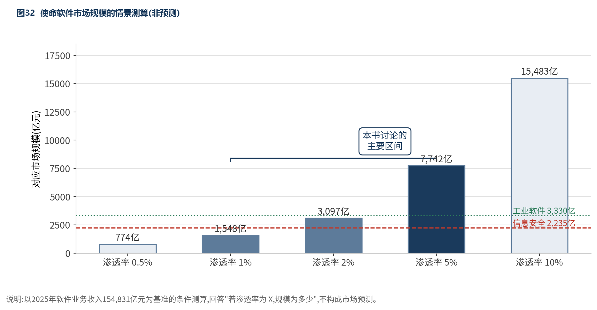
这个测算的严重局限
必须把这个测算方法的根本问题说清楚，否则它会误导。线性外推忽略了产业结构的变化。以既有产业规模乘以渗透率，隐含假设可信性是附加在既有软件之上的一层。但如果可信性真能解锁 AI 的实际价值，那么它的引入会改变软件产业本身的规模，而不只是从中切出一块。测算可能低估。但也可能相反:如果可信性能力最终被内建到基础平台中(如操作系统、云平台、开发框架)，那么它可能不形成独立的市场，而是被吸收为平台功能。历史上这种情况反复发生——加密、认证、备份都曾是独立产品，后来成为平台的内置能力。渗透率的分布也极不均匀。 按第八章的分级，L3(关键执行级)系统的可信性投入占比可能达到20%以上，而 L0(观测级)系统可能接近于零。总体渗透率是一个加权平均，而权重取决于各级系统在软件总量中的比例——这个比例目前无从知晓。最根本的是:使命软件的价值可能主要不表现为软件收入。前文指出，可信性的核心价值在于解锁 AI 的自动化能力。如果一个企业因为可信性投入而把自动化比例从30%提高到70%，那么它获得的价值主要体现在它自己的运营效率，而不是它支付给软件供应商的费用。换句话说:使命软件创造的价值可能远大于它捕获的收入。这与第三章讨论的外部性问题是同一件事的两面。
覆盖范围比规模更有意义
由于上述局限，单纯的规模数字意义有限。更有意义的是看使命软件将覆盖哪些领域——这决定了它的战略地位而非仅仅市场大小。使命软件将横跨以下领域:AI 安全与 Agent 治理。第三章已论证，这正在成为法定要求。这个领域目前几乎没有成熟的产品形态。软件验证与测试。第八章讨论的九类新测试，每一类都需要工具支持，而大部分目前不存在。软件供应链。SBOM、SLSA、Sigstore 已经形成初步的工具生态，但第二章的数据显示成熟度极低(仅9%的组织达到完全自动化)。知识基础设施与本体。第六、七章讨论的核心。可信操作系统与基础软件。第六章的 seL4、CompCert 路线。这是中国基础软件2,146亿元这个盘子中最有战略价值的部分。 工业软件与数字孪生。工业场景的特点是行动直接作用于物理世界，不可逆性最强，因此可信性要求最高。中国工业软件3,330亿元的规模，加上制造业的体量，构成了一个独特的应用场景优势。软件认证与审计。前文指出这是关键瓶颈，也意味着它是空白市场。行业使命软件。金融、医疗、能源、交通等受监管行业的垂直应用。这个清单的意义在于:可信性不是一个细分市场，而是一个横切所有软件领域的层。 这决定了它的性质是基础设施，而非产品类别——与第六章关于摊销原理的论证一致。
从成本侧看:共享必然优于分散
除了从收入侧估算，还可以从成本侧提供一个参照，它可能更接近真实的经济意义。考虑一个问题:如果要为中国现有的关键软件系统建立完整的使命论证，需要多少投入?这个问题无法精确回答，但可以给出量级的思考。第六章提到，seL4 的验证工作耗费了大量高技能人力，持续多年，而对象只是8,700行 C 代码。按这个比例外推到中国15万亿元产业中的软件资产，成本是天文数字——这恰恰证明了摊销原理的重要性:可信性必须通过基础设施复用来摊销，不可能逐系统建立。反过来说，这也给出了基础设施投入的经济上限:如果建设一套共享的使命软件基础设施的成本，低于各系统分别建立可信性的成本之和，那么这个投入就是经济的。 而由于后者是天文数字，前者的经济性几乎是自动成立的。 这个论证虽然粗略，但它的结论是稳健的:共享的使命软件基础设施在经济上必然优于分散建设。 问题不是是否值得建，而是如何建、由谁建、如何让所有人用得上。
使命创造的价值，大于它捕获的收入
软件价值的构成经历了四个阶段:功能 → 功能+平台 → 功能+平台+智能 → 功能+平台+智能+使命。判断可信性是否为独立维度的标准是:它能否在其他维度不变时独立变化，并改变产品的价值。答案是肯定的。合规成为硬约束——在受监管场景中，可信性不是竞争优势，而是市场准入;而监管范围正在扩大，欧盟 AI 法案的高风险清单包括信用评分、简历筛选、保险定价这些普通商业应用。可信性解锁 AI 的实际价值——验证能力决定 AI 生成能力的可用上限，因此可信性投入不是成本，而是 AI 投资的收益实现条件;84%使用率与33%信任度之间的巨大差距，正是尚未实现的价值。这个论证改变了可信性投入的会计性质，并把它与已发生的巨额 AI 投资绑定。不可信的隐性代价正在显性化——当自动化的技术门槛降低时，不自动化的机会成本变得可见、可归因、可计量;而当机会成本可计量时，为消除它付费的意愿就出现了。
定价可能通过合规驱动(最成熟)、保险与责任驱动(缺失，是最关键瓶颈)、能力解锁驱动(最有潜力但最不成熟)。保险与责任这一条的缺失，把标准与认证体系从“配套工作”提升为产业形成的前提条件。同时需要一个克制的说明:不是所有软件都需要高可信性，可信性的市场是软件市场中对可信性有真实需求的那一部分，而支付意愿的形成需要时间。
至于这部分有多大，这里给出的是情景测算，而非市场预测。测算过程与区间含义见正文;此处只保留结论:即使只成为一个小价值层，也足以形成千亿元乃至万亿元级的空间。
但这个测算有几处根本局限:线性外推忽略了产业总规模本身可能改变(可信性也可能被吸收为平台的内置能力，加密与备份的历史都是如此);渗透率的分布极不均匀(L3 系统可能超20%，L0 接近零);而最根本的是——使命软件创造的价值，可能远大于它捕获的收入，因为核心价值体现在使用方的运营效率提升上，这与第二章讨论的外部性问题是同一件事的两面。因此更有意义的视角是它的覆盖范围:AI 安全与 Agent 治理、软件验证与测试、供应链、知识基础设施、可信操作系统、工业软件与数字孪生、认证与审计、行业垂直应用。可信性不是细分市场，而是横切所有软件领域的一层。
从成本侧还可得到一个粗略但稳健的结论:逐系统建立可信性的成本是天文数字，这恰恰证明可信性必须通过基础设施复用来摊销。共享的使命软件基础设施在经济上必然优于分散建设。问题不是是否值得建，而是如何建、由谁建、如何让所有人用得上。
第十章 没有证据链，使命进不了合同
「安全是一个过程，不是一件产品。」
——布鲁斯·施奈尔(Bruce Schneier)
产业最爱卖的是产品:一套扫描器、一张认证、一个平台账号。施奈尔的句子拆穿了这种买卖——如果你买的是物件，你买到的往往是过期的安全感。使命软件若要成产业，就必须成链:芯片、编译器、内核、规则、行动、认证，缺一环就回到卖物件。标准如果只管填表，商业模式如果只靠恐惧，这条链会在第一笔合同处断裂。
如果使命必须成链，产业形态就不可能是一堆彼此无关的产品。为什么主张“使命软件产业链”，而不是“使命软件产业”?
孤立的节点成不了使命
技术根据决定产业形态。seL4 的功能正确性证明，明确假设编译器、汇编代码、硬件、引导代码正确。CompCert 恰好为其中的编译器一环提供了保证。学界对此的表述是:只有经过验证的编译器，才能保证在源码上证明的性质在生成的机器码上依然成立。这个关系不是巧合，而是可信性的一般结构:每一环的使命论证，都建立在下一环的假设之上。因此，如果只有某一环是可信的，而其他环不是，那么这一环的使命论证虽然在形式上成立，却失去了实际保护力。孤立的可信性节点，在工程意义上接近于无用。这就是本书主张产业链而非单一产业的技术根据。它不是产业政策的修辞偏好，而是一个技术上的必然要求。
完整的链
一条完整的使命软件产业链包含以下环节:
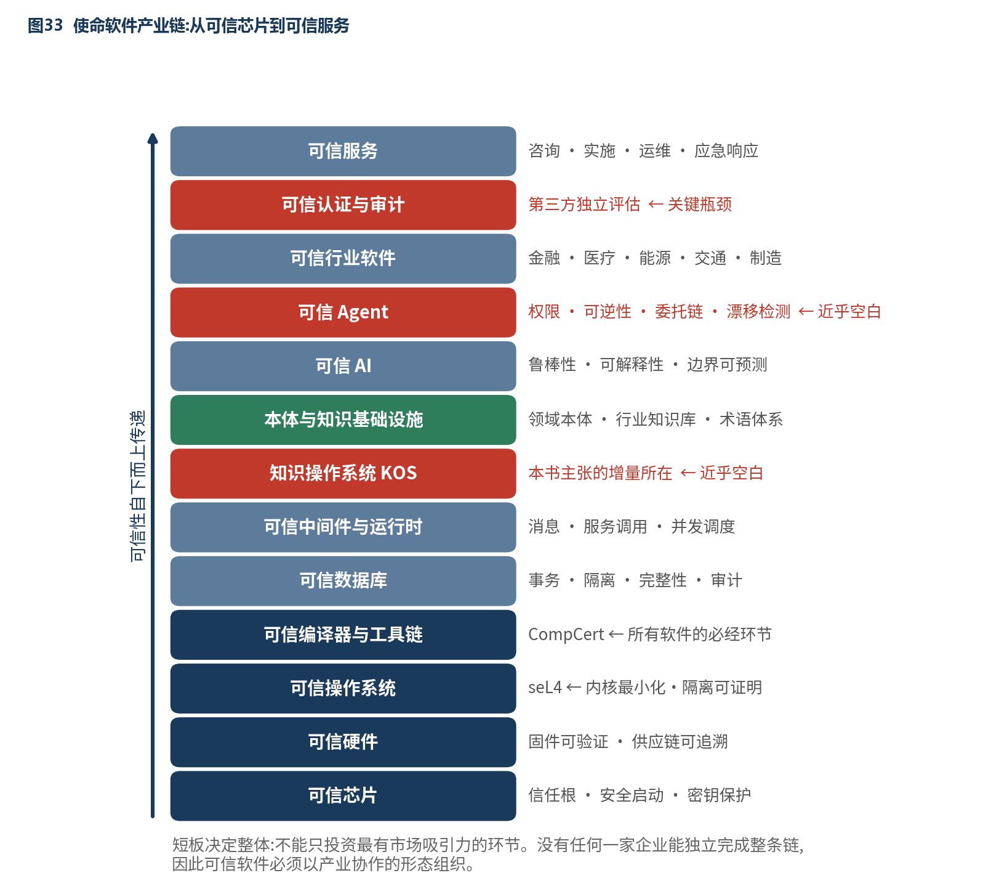
短板决定整体
链的可信性取决于最薄弱的一环。这不是修辞，而是有具体机制的:上层的论证依赖下层的假设，假设不成立则论证失效。产业含义因此很硬:不能只投资最有市场吸引力的环节。使命 AI 与使命 Agent 目前最受关注，但如果它们运行在不可信的操作系统与运行时之上，其使命论证是悬空的。反过来说，投资基础环节的战略价值可能高于其直接市场规模。编译器的市场规模远小于应用软件，但它的可信性影响所有软件。
接口契约是链的关键
第八章指出，可信性沿链传递需要显式的接口契约:上游提供什么保证、下游依赖什么假设、二者是否匹配。产业含义是:标准化的重心应当在接口，而不在实现。这一点很重要，因为它决定了产业组织方式。如果标准规定实现，那么产业会走向单一供应商;如果标准规定接口，那么不同厂商可以在各自环节竞争，而整条链依然可组合。seL4 与 CompCert 的关系再次提供了范例:它们由不同团队开发，基于不同的证明技术，但因为二者的保证与假设精确对接，所以可以组合。
没有企业能独立完成整条链
这是一个简单但重要的观察。从芯片到服务，这条链跨越的技术领域太广，任何单一企业都无法覆盖。即使是最大的科技公司，也只能覆盖其中若干环节。因此，使命软件必须以产业协作的形态组织，而不能以单一企业的产品形态组织。把它与第六章的摊销原理合在一起，结论更强:使命软件基础设施需要在国家或产业联盟层面被组织，因为它同时要求跨企业协作与长期投入，而这两者都超出单一企业的能力与激励范围。
开放性是链的必要条件
封闭表示本身就是可信性问题。在产业链的语境下，这一点更硬。如果链上某一环是封闭的——接口不公开、实现不可检验、无法被替换——那么使命论证会在这一环断裂:可信性要求“可被检验的论证”，而封闭环节的论证无法被独立检验。整条链也会被这一环锁定:所有上层环节都必须适配它，而它的演进节奏决定了整条链的演进节奏。链的可组合性随之丧失，无法用另一个实现替换它，也无法验证替换后的等价性。因此:开放标准不是使命软件产业链的一个可选特性，而是它成立的必要条件。这个判断对中国的技术路线选择有直接含义，第五编会展开。
体系必须同时形成，单点突破没有用
产业链是技术视角。从制度视角看，还需要形成一个配套体系:> 标准 → 技术 → 平台 → 工具 → 软件 → 行业 → 认证标准定义什么算承担使命、如何度量、如何声明。它是整个体系的语言。技术提供实现可信性的方法:形式化验证、类型系统、运行时监控、知识表示。平台把技术封装为可复用的基础设施:可信操作系统、知识操作系统、验证平台。工具让工程师能够使用这些能力。第六章已经说明工程可用性比证明强度更关键，这一层最能检验那句话。软件是应用这些能力构建的产品。行业是这些产品进入现场的场景，同时也是领域本体与行业规则的来源。认证提供独立的第三方确认，使可信性可以被交易。 这个体系的关键性质是:它必须同时形成。 有标准而无工具，标准无法被执行;有技术而无认证，可信性无法被交易;有平台而无行业参与，本体无法建立。任何单一环节的突破都不足以形成产业。 这解释了为什么使命软件产业至今没有形成——不是因为缺乏某项技术，而是因为体系的各个环节都不完整，而它们相互依赖。
几乎空白的环节
诚实地评估，这条链上有几个环节处于近乎空白的状态。知识操作系统:目前没有成熟的、开放的、被广泛采用的实现。Palantir 的本体是最接近的商业实践，但它是封闭的，且缺少验证与证据层。使命 Agent 基础设施:行动权限控制、可逆性管理、委托链约束传递——这些能力目前主要靠应用层各自实现，没有基础设施层的支撑。可信性认证体系:第九章已指出这是最关键的瓶颈。软件领域缺乏类似其他工程领域的可信性分级与认证机制。接口契约的标准化:第八章列为未解问题。这些空白既是风险也是机会。 风险在于它们阻碍了产业形成;机会在于它们意味着没有既定格局，后来者与先行者处在相近的起跑线上。第五编会分析中国在这些空白上的机会。
软件是唯一没有分级与认证的工程领域
别的工程领域怎么做
先看参照。功能安全领域有成熟的分级体系。IEC 61508 定义了安全完整性等级(Safety Integrity Level，SIL)，从 SIL 1 到 SIL 4，每一级对应不同的失效概率要求与相应的开发过程要求。汽车领域的 ISO 26262 定义了 ASIL(Automotive Safety Integrity Level)，从 A 到 D。航空领域的 DO-178 定义了从 Level E 到 Level A 的软件等级。这些体系的共同结构值得注意:其一，等级与后果挂钩。 等级不是由技术复杂度决定，而是由失效后果的严重性决定。这与第八章提出的分级维度(不可逆性、影响规模、自主性)在思路上一致。其二，每一级有明确的过程要求。 要达到某一级，需要做哪些活动、产生哪些文档、达到哪些覆盖率，都有具体规定。其三，由第三方评估。 不是自我声明，而是由独立机构审核。这直接对应第二章的教训:自我声明必然贬值。其四，结果可以被合同与保险引用。 这是最关键的一点——正因为有了可引用的等级，可信性才能进入商业关系。
软件为什么没有:四条真实的理由
通用软件领域为什么没有类似的体系?原因是真实的，必须正面处理。软件的失效模式不连续。机械部件的失效可以用概率模型描述——磨损、疲劳、老化都是渐进的。而软件的失效是确定性的:一个 bug 要么在特定条件下必然触发，要么永不触发。这使得“失效概率”这个概念在软件中的含义变得可疑。软件变化也太快。一次认证的成本高昂，而软件可能每周发布。DO-178 式的认证在航空领域可行，是因为飞控软件的变更极少;而对一个每天部署的系统，同样的认证方式在经济上不可行。 软件的边界也不清。认证一个机械部件，对象是明确的。而认证一个软件，要认证什么?它依赖数百个第三方组件，运行在不受控的环境中，调用外部服务。第二章讨论的可信计算基无限扩大问题，在认证语境下变成了“认证边界无法确定”。更麻烦的是缺乏可度量的中间指标。功能安全有失效率，而软件可信性没有对应的量化指标。第三章引用的研究直接指出:衡量生成代码可信度的指标本身就是缺失的。这些原因都是真实的。任何主张建立软件可信性认证体系的论述，都必须正面处理它们，否则就是空谈。
认证要对着证据，不对着文档
我们认为，上述困难不意味着认证体系不可能，而意味着它需要采取不同于传统功能安全的形态。以下几条路可以同时走。
认证能力而非认证产品
传统认证的对象是产品:这个软件版本达到 SIL 3。这与软件的快速变化不兼容。替代方案是认证能力:这个组织/这个流程/这个基础设施，具备产生某一等级使命论证的能力。这个思路的先例是软件过程改进模型(如 CMMI)与信息安全管理体系(如 ISO 27001)——它们认证的是管理体系而非具体产品。其优势是与快速迭代兼容:一旦能力被认证，基于这个能力产出的制品都继承相应的可信性等级。其风险是过程认证与实际质量的脱节。第二章的 SSDF 自我声明失败正是这个风险的体现:遵循了流程，没有达到实质。因此，能力认证必须配合抽样验证:不仅审核流程，还要抽取实际产出验证其使命论证是否成立。而这要求使命论证是自动产生的、可被抽查的——也就是第七章所说的证据自动产生。
认证基础设施，继承给应用
这是摊销原理的制度化。如果可信性通过基础设施复用来摊销，那么认证也应当如此:对基础设施进行一次深度认证，而运行在它上面的应用继承相应的保证。具体地说:如果可信操作系统被证明提供了某种隔离保证，那么运行在它上面的应用可以在其使命论证中引用这个保证，而不需要重新证明。这个机制在功能安全领域已有先例——预认证组件(pre-certified component)的概念，以及 seL4 基金会认证“可信服务提供商”的做法。它的关键要求是接口契约的明确:基础设施提供什么保证、应用可以依赖什么假设，必须被精确规定。这与前文关于接口的论证一致——标准化的重心在接口。
分级而非二元，并与后果挂钩
第八章提出的 L0 到 L3 分级，在认证语境下有制度含义。关键是分级的依据应当是后果而非技术: - L0(观测级):系统不参与决策。要求最低。 - L1(建议级):产生建议供人决策。人是最终责任主体。 - L2(受控执行级):自主执行可逆行动。要求不可绕过的检查与完整轨迹。 - L3(关键执行级):自主执行不可逆或高影响行动。要求完整论证与独立验证。 这个分级与中国《人工智能安全治理框架》2.0版的原则一致。 该框架明确提出从应用场景、智能化水平、应用规模等维度评估风险等级，采取差异化防范措施，实现“高风险严管、低风险松绑”。它也与欧盟 AI 法案的风险分级思路一致——法案按功能而非标签分类，一个执行信用评分或医保决定的 Agent 落入高风险，而不是所有 AI 都被同等对待。这个一致性很重要:它意味着本书提出的技术分级，与中欧两大治理框架在原则上是可对接的。 这为标准的国际互认留下了空间，第五编会讨论其战略意义。
从证据到认证，而非从文档到认证
传统认证的核心工作是审核文档。而第七章主张证据自动产生。如果证据是自动产生的、结构化的、可机读的，那么认证的形态可以改变:从“审核人工编写的文档”，变为“验证自动产生的证据”。这个转变的意义在于成本。文档审核的成本与系统规模成正比，与人力成正比——按第六章的论证，这类方法必然失败。而证据验证可以部分自动化。这可能是使认证在软件领域经济可行的唯一路径。
中国已有的制度基础
中国在这个方向上已有相当的制度积累，本书的主张不是从零开始。三层治理体系已经形成:上位法层面:《网络安全法》《数据安全法》《个人信息保护法》《科学技术进步法》。专项规章层面:《生成式人工智能服务管理暂行办法》(2023年7月)、《互联网信息服务深度合成管理规定》、《互联网信息服务算法推荐管理规定》，以及配套的算法备案制度。框架与标准层面:《人工智能安全治理框架》1.0版(2024年9月，全国网络安全标准化技术委员会)与2.0版(2025年9月15日，国家网络安全宣传周主论坛发布);国家标准 GB/T 45654—2025《网络安全技术 生成式人工智能服务 安全基本要求》。其中有几处与本书主张直接呼应: 《生成式人工智能服务管理暂行办法》第六条鼓励生成式人工智能算法、框架、芯片及配套软件平台等基础技术的自主创新，并明确“鼓励采用安全可信的芯片、软件、工具、算力和数据资源”。这是“使命软件基础设施”在现行法规中已有的政策接口。《人工智能安全治理框架》2.0版的几处演进与我们主张高度契合: - 风险分级治理:“高风险严管、低风险松绑”——对应第八章的分级实施 - 构建 AI 安全测评体系:对模型算法的内生安全能力(鲁棒性、可靠性、抗干扰性、决策透明度)、应用通用层面、场景化层面分层评估，并鼓励开展 AI 安全漏洞众测——对应第八章的多类型测试 - 安全指引按研发生命周期划分:形成研发安全开发、应用建设部署、应用运行管理的三段式结构——对应第四章“论证时机”的全生命周期覆盖 这个对应关系的意义值得强调: 政策侧已经明确要求“可分级、可评估、可测评、按生命周期治理”。而当前的软件体系在技术上无法高效提供这些能力。换句话说:治理框架已经确立了需求侧，而技术底座是缺失的供给侧。本书主张的技术路线，可以被准确地定位为:为这套已经确立的治理框架提供缺失的技术基础。这个定位比“提出一个新技术概念”要有力得多，因为它对接的是已经存在的政策需求。
标准工作的国际维度
标准从来不只是技术问题。当前的国际格局: 欧盟通过 AI 法案建立了具有域外效力的监管要求;美国通过 NIST 的框架与倡议(AI RMF、AI Agent 标准倡议)推动行业主导的标准;而 NIST 的 AI Agent 标准倡议明确覆盖身份凭证与授权、跨 Agent 与跨厂商互操作性、测试评估与保证方法学——这些正是第十章所说的“接口契约”。这意味着一个战略窗口正在关闭。 Agent 治理的标准正在形成，而形成之后的调整成本极高。中国的位置: 中国已有《AI 安全治理框架》2.0与相关国标，在原则层面与国际主流框架可对接(风险分级、生命周期治理)。但在可操作的技术标准层面——特别是接口契约、证据格式、使命论证的结构——国际上都还是空白。这是一个真实的机会，但它有时间窗口。 第五编会展开讨论。
第三章指出，软件可信性具有显著的外部性:建立可信性的成本由生产者承担，而可信性不足的代价由使用者与整个生态承担。经济学告诉我们，存在显著外部性的领域，市场机制会系统性地供给不足。第九章又指出:使命软件创造的价值可能远大于它捕获的收入。这两点合起来构成一个融资困境:最有社会价值的环节，可能是最难获得商业回报的环节。这个困境不是使命软件特有的。它是所有基础设施的共同特征——道路、电网、标准、开源软件都面临同样的问题。而人类社会已经发展出若干应对机制，使命软件可以借鉴。
谁出钱，谁受益，谁必须先动
合规驱动的产品与服务
逻辑:法规要求某种能力，企业必须购买。价格由不合规的代价决定。适用环节:认证服务、审计工具、合规报告生成、Agent 行为记录与追溯。优势:需求确定，支付意愿明确，这是最容易形成收入的模式。第九章指出，在受监管场景中可信性是市场准入而非竞争优势——市场准入的支付意愿是刚性的。局限:它只覆盖被监管的部分。而且合规驱动的市场容易形成“最低满足”的行为——买最便宜的合规方案，而不是最好的可信性方案。这可能导致产业停留在低水平的形式合规，而不发展出真正的可信性能力。 这是一个需要警惕的风险。
平台与工具的商业化
逻辑:把可信性能力封装为开发者能用的平台与工具，按使用量或订阅收费。适用环节:验证平台、知识操作系统的商业发行版、测试工具链、使命 Agent 运行时。优势:这是软件产业最成熟的模式，有大量成功先例(云平台、开发工具、数据库)。关键成功条件是工程可用性。AWS 的教训表明，一个工程师用不起来的工具，无论理论多强都不会形成市场。
开源核心加商业服务
逻辑:核心基础设施开源，商业收入来自支持、认证发行版、托管服务、行业适配。这个模式对使命软件特别适合，不是出于开源意识形态。开放性是可信性的必要条件——一个不可被独立检验的可信性基础设施是自相矛盾的。开源直接满足这个要求。第五章评价信任转移的判据之一是“更被广泛检验”，开源使广泛检验成为可能。摊销原理又要求同一个未修改的基座被广泛复用，开源是实现这一点最有效的机制——它消除了采用的商业障碍。这几件事指向同一个结论:使命软件的核心基座应当是开源的，是出于可信性本身的技术要求。局限是:开源核心的商业化需要规模，而规模需要时间。这个模式对早期投资者不友好。
行业解决方案
逻辑:针对特定行业(金融、医疗、能源、制造)提供包含领域本体、行业规则、合规映射的完整方案。优势:价值明确，可以直接对接行业的业务痛点与合规要求。而且行业本体的建设需要领域知识，这构成了竞争壁垒。关键约束:必须避免退化为定制项目。第六章已经明确指出，“为每个客户建设使命系统”的服务业模式在经济学上不成立。行业方案必须建立在共享的基座之上，行业特有的部分应当是本体与规则，而不是基础设施。
投资的分工
上述四种模式覆盖的环节不同，而有些环节任何模式都覆盖不了。市场可以覆盖的:合规工具、平台与工具的商业化、行业解决方案。这些有明确的付费方与可捕获的价值。市场难以覆盖，需要公共投入的:基础理论研究。可信性的度量、可组合性、表达力与可判定性的权衡——第八章列出的未解问题，大部分属于此类。这些研究的回报周期远超商业投资的容忍度。核心基座的深度验证。seL4 式的形式化验证工作，成本极高而直接收入极低，但它的价值通过被复用而放大。标准制定。标准的价值是公共的，而制定成本需要有人承担。领域本体的公共部分。行业标准术语、法规的形式化表达、公共知识库——这些应当是公共品，如果由私人拥有会重现第六章批评的锁定问题。 认证体系的建立。第十章讨论的分级与认证机制，本质上是制度基础设施。这个分工的判断是:使命软件产业需要“公共投入建基座、市场机制做应用”的双层结构。 完全依赖市场会导致基座缺失(因为外部性)，完全依赖公共投入会导致应用脱离需求(因为缺乏市场反馈)。
这条路可能怎么失败
只讲机会不讲风险，论证就失去了可信度。最严重的几件事如下。
形式合规取代实质使命
合规驱动是最容易形成市场的模式，但它可能导致产业停留在“满足检查”而非“真正承担使命”的水平。企业购买能通过审计的最便宜方案，供应商提供刚好达标的产品，而实际的可信性没有改善。这不是假想。第二章的 SSDF 自我声明失败正是这个模式的实例:供应商提交了合规声明，而实际只是部分遵循框架。应对方向:认证必须包含抽样验证实际产出，而非只审核流程文档;证据必须自动产生而非事后整理。核心是让“造假的成本高于合规的成本”。
建模成本压垮采纳
第八章已将建模成本列为整条路线最主要的实践风险。如果建立本体与规则的成本过高，那么无论技术多么正确，采纳都不会发生。语义网在2000年代的经历是直接的警示。应对方向:大模型辅助的增量建模;严格的分级(不要求所有系统都建模);默认可用的行业本体模板。但必须承认:这个风险目前没有被证明已经解决。大模型降低建模成本是一个合理的预期，但缺乏大规模实践的验证。
性能与可信性的根本冲突
第八章已指出，可能存在一类系统，其性能要求与完整的使命论证在根本上不兼容。高频交易、实时控制、超大规模在线服务都可能属于此类。如果这类系统的比例很高，那么使命软件的适用范围就会显著小于本书的论述所暗示的。应对方向:分级实施;对高性能路径采用轻量级的可信性机制(如事后抽样验证而非事前全量检查)。但这是一个真实的边界，不应被掩盖。
被平台吸收而不形成独立产业
第九章已提及。历史上，加密、认证、备份、监控都曾是独立产品，后来成为云平台与操作系统的内置能力。可信性能力可能走同样的路径。这对产业估算是不利的，但对社会是好的——能力被内建意味着它被普及。战略含义:如果这条路成立，那么真正的战略价值在于定义被内建的那个标准与实现，而不在于销售独立产品。这强化了本书关于标准与开源基座的主张。
国际标准的窗口关闭
前文指出，Agent 治理与可信性的技术标准正在国际上形成，而形成之后的调整成本极高。如果中国在这个过程中缺席，那么将面临一个熟悉的局面:技术上可以自主，但必须适配他人定义的接口与标准。这件事的紧迫性高于前面几项，因为它有明确的时间窗口。欧盟 AI 法案的执法在2026年8月启动;NIST 的 AI Agent 标准倡议在2026年3至4月完成公众意见征询。应对方向是第五编的主题。 这几件事的性质不同。形式合规与建模成本是执行风险——路线是对的，但可能执行失败。性能冲突是边界风险——路线在某些场景不适用，需要诚实划定范围。被平台吸收是形态风险——它不否定技术价值，但改变产业形态与战略重点。标准窗口是时机风险——它不影响技术是否正确，但影响谁能主导。本书的判断是:技术方向上的边界可以通过分级来处理;执行风险最需要警惕，它们决定这条路线能不能走通;而时机风险最紧迫，因为它不等人。
缺认证，使命就进不了合同
产业形态必须是链而非单一产业。根据是第六章的技术洞见:每一环的使命论证建立在下一环的假设之上，因此孤立的可信性节点在工程意义上接近无用。完整的链从可信芯片延伸到可信服务，共十三个环节。其中编译器一环的战略地位常被低估——它是唯一一个所有软件都必经的环节;知识操作系统一环的特殊性在于它是第一个面向语义而非面向机器资源的层次，是本书主张的增量所在;而本体一环的内容是行业性而非技术性的，因此需要行业组织参与。必须先想清楚的是:短板决定整体(不能只投资最有市场吸引力的环节，基础环节的战略价值可能高于其直接市场规模);接口契约是关键(标准化的重心应在接口而非实现，这决定了产业能否保持多供应商竞争);没有企业能独立完成整条链(因此使命软件基础设施需要在国家或产业联盟层面被组织);开放性是必要条件(封闭环节会导致论证断裂、整链锁定、可组合性丧失)。从制度视角看还需形成“标准→技术→平台→工具→软件→行业→认证”的完整体系，而其关键性质是必须同时形成——这解释了产业至今未形成的原因:不是缺乏某项技术，而是各环节都不完整且相互依赖。
在这条链上，认证是最关键的缺口。其他工程领域的可信性认证有成熟体系(IEC 61508 的 SIL、ISO 26262 的 ASIL、DO-178 的软件等级)，其共同结构是:等级与后果挂钩、每级有明确过程要求、由第三方评估，而结果可被合同与保险引用——最后一点最关键，正因为有可引用的等级，可信性才能进入商业关系。软件领域缺失这一体系，是因为失效模式不连续(使“失效概率”概念可疑)、变化太快(高成本认证与周级发布不兼容)、边界不清(可信计算基无限扩大导致认证边界无法确定)、缺乏可度量的中间指标。可以同时走的路是:认证能力而非产品、认证基础设施并继承给应用、分级而非二元且与后果挂钩、从证据到认证而非从文档到认证——最后一条可能是使认证在软件领域经济可行的唯一路径。
中国在这个方向上已有相当的制度积累:三层治理体系(上位法—专项规章—框架标准)已经形成。《生成式人工智能服务管理暂行办法》第六条明确“鼓励采用安全可信的芯片、软件、工具、算力和数据资源”，这是现行法规中已有的政策接口;而《人工智能安全治理框架》2.0 的三个演进——风险分级治理、分层安全测评体系、按生命周期划分的安全指引——与本书主张高度契合。由此得到一个重要定位:治理框架已确立需求侧，而技术底座是缺失的供给侧。
最后是商业可行性。使命软件面临基础设施的典型融资困境:最有社会价值的环节，可能是最难获得商业回报的环节。四种可行模式包括合规驱动(需求刚性，但可能导致“最低满足”行为)、平台与工具商业化(最成熟，关键成功条件是工程可用性)、开源核心加商业服务(核心基座应当开源，不是出于意识形态，而是出于可信性本身的技术要求)，以及行业解决方案(必须避免退化为定制项目)。投资分工的判断是:产业需要“公共投入建基座、市场机制做应用”的双层结构。
必须正视的是:形式合规取代实质使命(SSDF 自我声明的失败是现实案例，核心应对是让造假成本高于合规成本);建模成本压垮采纳(整条路线最主要的实践风险，目前未被证明已解决);性能与可信性的根本冲突(真实的边界，不应被掩盖);被平台吸收(对社会是好的，战略含义是真正价值在于定义那个被内建的标准);国际标准窗口关闭(紧迫性最高，因为它有明确的时间窗口)。总体判断是:技术方向的边界可管理，执行风险最需警惕，而时机风险最紧迫——因为它不等人。
第四编 结语
没有分级就没有价格，没有认证就进不了合同。剩下的问题收成两问:窗口是不是真的，以及谁来做定义者。
第五编 中国如何做成使命软件
中国软件产业已有两组坐标:世界级的规模，以及与之不相称的使命基座。注意力错配也已经写明:繁荣写在消费互联网，缺口写在工业软件与国防科技工业。国际竞争已经转到软件与智能;驯服必须对准可检验的国家目标。不再重复那些数字。要回答的不是“中国应当有雄心”，而是更窄的几问:中国有没有做这件事的必要条件?短板会不会先把窗口关掉?如果做，什么是可以在几年内动手的，什么是必须按十年计的?尚未解决的问题必须与路径主张共存:凡是尚未被证明可解的，不写成已经可交付的能力。
第十一章 窗口是真的，短板也是真的
「语言中最危险的一句话是:我们一直都是这么做的。」
——格蕾丝·霍珀(Grace Hopper)
霍珀一生都在拆这句话。中国软件产业最容易滑进去的，也是这句话:规模已经很大，场景已经很多，系统还在跑，于是路径可以照旧。照旧意味着继续做使用者——接口由人定义，假设由人设定，问题由人出题。下面不唱颂歌，只清点条件、短板和窗口:哪些是真的，哪些会先把窗口关掉。
使命软件基础设施是一件全球性的事情。主张中国应当在其中扮演重要角色，依据是什么，又有哪些不能回避的短板?这不是“只有中国能做”，也不是“中国注定会成功”。更具体的命题是:中国具备做这件事的若干必要条件，而且当前存在一个有时间限制的机会窗口。这个命题需要证据，也需要诚实地列出反面因素。一份只讲优势不讲短板的论述，对决策没有帮助。
家底:规模、场景与工程师
产业规模
十五万亿元级的产业规模，在这里获得了新的含义。它提供了摊销的基础:可信性的建立成本只有通过大规模复用才能摊薄，而一个十五万亿元级、逾千万从业者的产业，提供了这种复用所需要的规模。它也意味着改造的紧迫性:这个规模的软件资产如果可信性缺失，风险敞口是巨大的。规模既是资源，也是负担。
制造业与工业场景
中国拥有全球最完整的制造业体系。这一点对使命软件有特殊意义。Agent 时代最严峻的可信性挑战来自“行动”——因为行动作用于现实世界且不可逆。而工业场景是行动不可逆性最强的场景:一条生产线的错误指令、一个化工过程的参数偏差、一次电网调度的误判，后果是物理的、即时的、无法撤销的。工业场景对可信性的需求因此最真实。它不是合规驱动的需求，而是被物理后果强制的需求。它也提供了最严格的检验环境。一套可信性技术如果能在工业场景中站住，它在其他场景的适用性是自然的;反之则不然。中国工业软件收入3,330亿元，增长9.7%。这个数字相对于制造业的体量是偏小的——这既说明工业软件是短板，也说明存在巨大的未被满足的空间。
应用场景的规模与多样性
中国拥有世界上规模最大、类型最丰富的产业应用场景之一。金融、电信、能源、交通、医疗、政务、制造——每一个领域都有大规模的实际系统在运行。场景的价值在于:可信性技术无法在实验室中被验证，它必须在真实的复杂性中被检验。第八章列出的那些未解问题，其中建模成本、性能开销、AI 边界的维持，都只能通过大规模实践来回答。
人工智能产业基础
公开数据显示，2024年中国人工智能产业规模已超过9,000亿元，同比增长24%，企业数量超过5,300家。而截至2026年3月底，大模型词元日均调用量突破140万亿。这个基础的意义是双重的。作为需求侧:大规模的 AI 部署意味着大规模的可信性需求。第三章引用的 IBM 数据显示，13%的组织 AI 系统被攻陷，其中97%没有部署 AI 访问控制——这个缺口在中国同样存在。作为供给侧:第六章指出，大模型显著降低了世界建模的成本，这是使命软件在今天比2005年更可行的主要理由。一个有实力的 AI 产业，是建设知识基础设施的技术前提。
数据与知识资源
中国在数字化过程中积累了大量的行业数据与领域知识。这是本体与知识基础设施建设的原材料。但数据的存在不等于知识的可用。数据的含义大多编码在处理它的代码与人的理解中，而不在数据本身。把数据资源转化为知识资产，正是需要做的工作，而不是已有的条件。
完整的产业链基础与工程师队伍
使命软件必须以产业链形态存在，从芯片到服务。中国在这条链的多数环节上都有基础:芯片有布局，操作系统有开源鸿蒙等实践(截至2026年3月底搭载设备突破5,500万台)，数据库、中间件、工业软件、行业应用都有产业存在。1,100万从业者构成了工程实施的基础。工程可用性的检验，需要大量普通工程师的实际使用。
欠账:基础软件、投入与注意力
上述条件是真实的，但如果论述到此为止，就是不完整的。必须正视的短板如下。
基础软件占比过低
基础软件占比过低，而可信性又总是毁在最弱的一环上。基础软件正是链的下层。中国软件产业的规模，建立在一个相对薄弱的基座之上。而且这不只是投入不足，更是能力积累的问题。基础软件的可信性需要长期、深度的技术积累——seL4 的验证持续了多年，CompCert 从研究到民航合格审定用了更长时间。这类积累无法通过短期投入实现。
安全投入增速落后
第一章把信息安全增速显著落后于全行业命名为“可信性赤字”:它是一个每年都在扩大的动态缺口。这是结构性信号，而不只是某一两年的波动。
产业结构偏服务与集成
信息技术服务占68.7%，软件产品占20.9%。可信性的建立成本只有通过大规模复用才能摊薄，而以定制服务为主体的结构天然不利于这种摊薄。这可能是最深层的结构性短板，因为它涉及的是产业的组织方式，而非投入水平。
形式化方法的积累相对薄弱
第六章讨论的几个标杆案例——seL4(澳大利亚 NICTA/CSIRO)、CompCert(法国 INRIA)、AWS 自动推理组(美国)——中国团队均不在其中。形式化方法需要长期的、小规模的、高强度的研究积累，这类工作在以应用和规模见长的产业环境中容易被忽视。这是一个真实的差距，而且它正好在链的关键环节上。
标准制定的国际参与
第十章指出，可信性与 Agent 治理的技术标准正在国际上形成，而欧盟通过 AI 法案建立了具有域外效力的监管，NIST 通过 AI Agent 标准倡议推动行业主导的标准。中国在原则层面有《AI 安全治理框架》2.0与相关国标，但在可操作的国际技术标准层面参与度有限。
注意力错配，虚假繁荣
消费互联网的成就不能被嘲笑，但也不能再被用来给自己颁发软件强国证书。点餐、外卖、社交和用户画像做到全球第一，工业软件、嵌入式控制、国防科技工业软件却仍大量仰赖外部工具链——这不是“市场选择”，这是最贵的人才被错误的价格信号吸走。前面几项说的是能力与投入。这一项说的是意愿:产业知道什么最好赚，国家缺的是什么最难赚，二者正在朝相反方向跑。
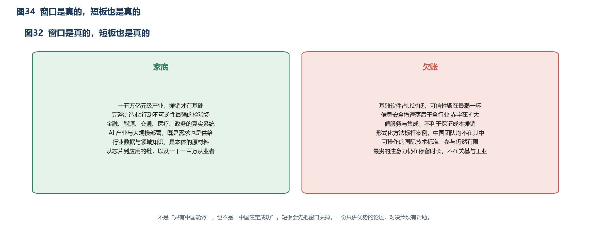
战场先于市场:竞争已经转到软件与智能
机会窗口不只来自标准日程，也来自战场。2022年以来的俄乌战争把一件事从军事杂志写上了日报:指挥、通信、侦察、后勤和火力校正，已经高度依赖软件、数据链和智能辅助。民用卫星通信、消费级无人系统、开源地理信息、商业云与即时通讯，进入了作战循环。哪一侧能更快地把传感器变成可执行的指令，哪一侧就先掌握节奏。这不是把战争简化成“比谁的 App 好用”。这是承认:软件与智能不再是装备上的附件，它们正在成为装备本身的组织方式。 中东近年的冲突重复了同一结构。防空拦截、无人机攻防、目标识别与信息作战，拼的是感知、链路、算法和软件更新的速度。商业技术进入战场的速度，已经快过传统采办周期。谁还把软件当成后勤科目，谁就在用上一代的编制，打这一代的仗。 对中国而言，这句话不能停在旁观。关基条例把国防科技工业与能源、交通、金融并列，正是因为这些系统已经由软件运行。工业软件3,330亿元、研发设计类国产化率公开估计仅约一成、到2027年要更新约200万套工业软件——这些数字不是行业新闻，是国家能力清单上的欠账。与此同时，美团一年的营收可以与全国工业软件产品收入相当，电商平台技术服务一项是工业软件的4.5倍。资本在庆祝履约时效，战场在检验软件能否在干扰、欺骗和损耗下仍然按意图行动。两条时间线不在同一个世界里。 因此，中国必须面对的不是“要不要发展软件”，而是:最强的软件力量用在了哪里。继续把注意力留在挖掘消费行为上，就是在国际竞争已经改换赛场之后，还在旧赛场上刷高分。赶上的意思，不是再做一个更大的推荐系统，而是把生成、验证、控制与证据，做成工业和国防用得上的能力。第三章所说的驯服生成式人工智能，在这里获得国家目标:让它服务于可检验的设计、仿真、控制与指挥辅助，而不是服务于更精准的停留。没有缰绳的大模型进入这些场景，不是赶上，是把不确定性送进最不能容错的地方。战场先于市场，也先于广告。驯服在这里收束为一句国家责任:把最强的软件力量从停留时长拨回关基与工业，让士兵和国防工业工程师用上可检验的工具，而不是更快的未知。没有使命证据的软件不能声称它在为人民服务。
窗口是真实的，但它不等人
窗口是真实的，但它不会等人。技术格局尚未定。知识操作系统、使命 Agent 基础设施、可信性认证体系、接口契约标准化——这些空白环节在国际上都没有成熟方案。这与操作系统、数据库、编译器等领域不同，那些领域格局已定数十年。需求也刚刚显性化。欧盟 AI 法案的执法在2026年8月启动，NIST 的 Agent 标准倡议在2026年完成意见征询。需求侧的制度化正在发生，而供给侧还没有准备好。与此同时，中国的政策需求侧已经确立。《AI 安全治理框架》2.0已经明确要求风险分级、分层测评、按生命周期治理。政策已经提出了要求，而技术底座是缺失的。这个供需缺口本身就是机会。 信创的重心还在转移。公开信息显示，“十四五”时期信创的核心逻辑是解决“有无”问题;进入“十五五”、特别是2026年开局，政策重心转向“自主创新”，驱动力从合规采购的“政策推力”转向以性能、成本和体验取胜的“市场拉力”。这个转变对使命软件是直接利好。当采购不再只看“是否国产”而看“是否更好用、更可靠”时，可验证的可信性就成为差异化竞争力，而不只是合规要求。窗口关闭的风险同样具体:标准一旦形成，调整成本极高。这件事有明确的时间表而且不等人。
真信创与伪信创之间唯一可技术验证的分界
在讨论宏观路线之前，有一件已经存在、却容易被宏观叙事盖住的事。公开信息显示，2026年信创政策在供给侧聚焦基础软件、高端芯片等“卡脖子”领域，并明确提出要淘汰“贴牌组装”式的伪信创企业。这个政策目标提出了一个技术问题:如何证明一个软件真的是自主的?这个问题在技术上，就是第二章讨论的构建溯源问题——SLSA 所要回答的“它是怎么被构建出来的”。一个软件是否真的由声称的源码构建、构建过程是否受控、依赖链是否清晰，这些都是可以被技术验证的，而不需要依赖声明。由此得到一个具体的判断:使命软件基础设施，是“真信创”与“伪信创”之间唯一可技术验证的分界线。 这个判断的价值在于，它把一个宏大的技术主张，对接到了一个已经存在的、紧迫的、有明确政策意愿的现实需求上。而且它符合第二章的制度教训:从“你声称你是自主的”走向“你必须证明你是自主的”。第十二章会把这一点转化为具体的政策建议。
追赶困难，跃迁可能
“使用者”处境的实质
先准确描述问题，而不是笼统地说“受制于人”。一个产业处于“使用者”位置，其实质特征有三个。
接口由他人定义。 你可以选择用或不用某个技术，但你不能定义它如何被使用。所有的适配成本由你承担，所有的演进节奏由对方决定。
假设由他人设定。 这一点更隐蔽，也更重要。使命论证建立在下层的假设之上。当下层由他人提供时，你的论证依赖于他人的假设——而这些假设可能没有被完整说明，可能随版本变化，可能在特定条件下不成立。阿里安5号的教训在这里再次适用:那段继承自前代火箭的代码，携带着一个未被明示的假设，而当假设失效时，没有任何机制发出警告。
问题的定义权在他人。 什么是重要的问题、什么是可接受的解法、什么是行业的最佳实践——这些的话语权跟随技术定义权。这个特征的影响最深远，因为它决定了资源投向哪里、人才培养什么、评价标准是什么。
大国与强国之间的六个层次
有了上述界定，就可以精确地区分“软件大国”与“软件强国”。
软件大国意味着软件产业规模巨大。中国已经是软件大国——这一点没有争议。第一章给出的体量，足以支持这个判断。
软件强国则包含六个递进的层次。
掌握软件基础理论。 不只是应用理论，而是提出理论。计算理论、类型理论、程序语义、形式化方法——这些领域的原创贡献。
掌握核心基础软件。 操作系统、编译器、数据库、运行时。前文指出，中国这一部分在全行业中的占比过低。
掌握软件标准。 不只是遵循标准，而是参与定义什么是标准。
掌握软件生态。 有开发者围绕你的技术构建东西，有企业依赖你的接口做产品。
掌握软件基础设施。 被其他一切软件所依赖的那一层。
掌握下一代软件范式。 这一层最难，也最有决定性——它意味着定义“软件应当如何被构造”这个问题的答案。
前五个层次基本上是“追赶”型目标，在既有赛道上缩小差距。而第六个是“跃迁”型的。
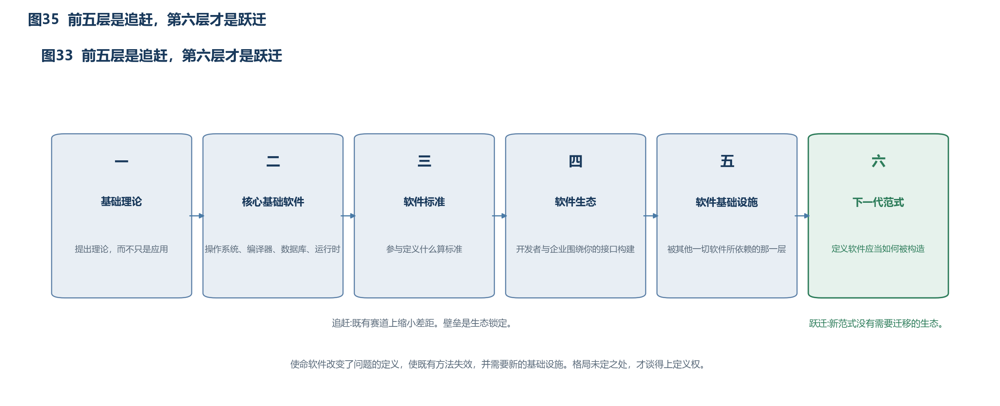
使命软件是不是一个真正的范式转换点
我们认为，在既有范式内追赶是困难的，而在范式转换点上跃迁是可能的。
追赶困难的原因是生态锁定。一个成熟的技术领域，其壁垒主要不是技术本身，而是围绕它形成的生态:开发者的技能、企业的依赖、工具链的适配、文档与经验的积累。即使你做出了技术上更好的东西，迁移成本也会阻止采用。
跃迁可能的原因是新范式没有生态锁定。在一个新范式形成的早期，不存在需要迁移的既有生态，所有参与者都在同一起跑线附近。历史上这样的机会反复出现——移动互联网的兴起，使得在 PC 时代落后的参与者获得了重新定位的机会。每一次范式转换，格局都会被重新洗牌。
那么问题就变成:使命软件是不是一个真正的范式转换点?
判断一个技术方向是否构成范式转换，可以看几件事是否同时成立。
它是否改变了问题的定义? 第一编与第二编的全部论证指向一个判断:软件问题的形态已经从缺陷转变为不确定性;可信性的战场已经从代码层转移到语义层;可信性的对象已经从代码正确性扩展到意图正确性。问题的定义确实改变了。
它是否使既有方法失效? 2026年4月15日，NIST 在制度层面承认以人为中心的漏洞分析范式已到达规模极限。生成与验证的不对称是结构性的，不会因模型进步而消失。既有方法确实在关键处失效了。
它是否需要新的基础设施? 第三编论证，应对新问题需要一层新的基础设施——管理知识、规则、行动、轨迹、证据。这不是对既有软件栈的改进，而是增加一个新的层次。确实需要新的基础设施。
这几件事都成立。因此本书的判断是:使命软件构成一个真实的范式转换点，而不只是一个新的产品类别。
两个特殊之处
除了“格局未定”这个一般性理由，使命软件领域还有两个特殊之处。三者合在一起，使它比其他新兴方向更适合作为跃迁的支点。
需求由制度定义，而制度是多中心的。 可信性的要求主要来自监管，而监管在各法域是独立的。欧盟有 AI 法案，美国有 NIST 框架与行政令，中国有《AI 安全治理框架》。这与纯粹由技术效率驱动的领域不同——后者容易形成单一全球标准，而前者天然是多中心的。
场景优势可以转化为定义权。 前文指出，工业场景是行动不可逆性最强的场景，对可信性的检验最严格。在一个技术方向上拥有最严苛的应用场景，是获得定义权的实际基础——因为标准最终要回答“在真实约束下什么可行”，而这个答案只能来自实践。
从使用者到定义者
从使用者到定义者，需要同时发生几件事。
不仅使用软件，还要定义软件
具体含义是:参与定义软件应当满足什么条件才算承担使命。
这不是抽象的话语权问题，而是具体的技术工作:可信性如何分级、证据采用什么格式、接口契约如何表达、认证如何进行。第十章指出，在可操作的技术标准层面，国际上仍是空白。这是一个可以进入的领域。
不仅使用 AI，还要定义 AI 进入现实世界的使命机制
这是在本书看来最有价值的一层。
当前全球 AI 竞争的焦点在模型能力——参数规模、评测分数、算力储备。这个竞争是重要的，但它不是唯一的竞争。
当 AI 从生成内容走向执行行动时，决定它能被用到什么程度的，不再只是它的能力，而是它的行动能否被信任。而这需要一整套机制:权限如何界定、行动如何被检查、轨迹如何被记录、责任如何被追溯。
这套机制目前在全球范围内都不成熟。欧盟法案提出了要求，但要求不等于机制;NIST 启动了标准倡议，但倡议不等于实现。谁能率先建立起这套机制，谁就在定义 AI 如何进入现实世界。这个定义权的价值，可能不低于模型能力本身。
不仅建设数据中心，还要建设知识基础设施
数据中心提供的是算力。AI 要按使命作用于现实世界，需要的不只是算力，还需要对世界的结构化理解——本体、知识、规则，以及它们的依据。
这是一类不同性质的基础设施。算力可以采购，而知识基础设施必须建设，因为它的内容是领域性的、本地化的、与具体产业实践绑定的。一个具体的含义是:中国的行业知识——制造工艺、电网调度、医疗规范、金融监管——只能由中国自己形式化。这既是必须承担的工作，也是无法被替代的资产。
不仅建设大模型，还要建设使命智能软件体系
第三章的定位在这里再次适用:AI 既是使命软件的工具，也是需要治理的新对象。
一个只有强大模型而没有使命软件体系的产业，其 AI 能力无法进入高价值场景——因为高价值场景正是可信性要求最高的场景。可信性是 AI 从“辅助工具”走向“生产力主体”的必要条件。
跃迁的具体路径
如果上述判断成立，那么“从软件大国到软件强国”的跃迁，有一个具体的路径。
它不需要在操作系统、数据库、编程语言这些成熟领域先追平，再谋求领先——那条路径的成本可能是不可承受的。它可以是:在一个新形成的层次上，率先建立起完整的能力，并让其他环节围绕它组织。
这与历史上基础软件的形成方式是一致的。Unix 不是通过在既有分时系统上追赶而成功的，它定义了一种新的组织方式。Web 不是更好的信息检索系统，它是另一种东西。
当然，必须诚实地说:这样的机会不保证被抓住。认识到范式转换的存在，与在其中占据位置，是两件不同的事情。后者需要长期投入、需要正确的组织方式、需要在前文写出的那些风险上都不失手。
“定义者”的责任
定义权不只是权利，也是责任。
而一个技术标准一旦被广泛采用，它的缺陷会被放大到整个生态。第六章讨论过，基础设施是新的单点——如果它有问题，影响面是全局的。第三章的 737 MAX 案例是一个沉重的注脚:当一个未被充分说明的系统被装进数百架飞机时，缺陷就不再是一家企业的问题。
因此，追求定义权的正确姿态不是“抢占标准”，而是“做出更好的东西并让它可被检验”。
这与开放性主张是一致的:封闭表示本身就是可信性问题;开放性是产业链的必要条件;开源核心是可信性的技术要求，不是意识形态选择。
一个不能被独立检验的可信性标准，无论由谁定义，都是自相矛盾的。
因此本书主张的定义权，是一种特定形态的定义权:通过提供开放的、可被检验的、经过大规模实践检验的方案，来影响标准的形成，而不是通过封闭的技术锁定来获取地位。
这个姿态不只是道义上更可取，在战略上也更有效。因为可信性的本质要求可检验性，任何封闭方案在这个领域都有先天的说服力缺陷。反过来说，如果一个方案是开放的、可被检验的、能被其他人复用与验证的，那么它的影响力可以超出其直接的技术优势。
这为一种不同的“强”提供了可能:不是通过技术锁定获取地位，而是通过提供被广泛信任的公共基础设施获取地位。在可信性这个特定领域，后一条路径可能比前一条更有效——这不是道德说教，而是由这个领域的技术性质所决定的。
窗口是真的，但它不等人
论证的不是“只有中国能做”，而是“中国具备若干必要条件，且存在有时限的机会窗口”。
客观条件是产业规模、制造业与工业场景、应用多样性、AI 产业基础、数据与知识资源，以及完整的产业链与工程师队伍。短板是基础软件占比过低、安全投入增速落后、产业结构偏服务与集成、形式化方法积累薄弱、国际技术标准参与有限，以及注意力错配造成的虚假繁荣——数字与论证见第一章与本章前文，此处不再复述。前面几项说能力与投入，最后一项说意愿:最贵的人才被错误的价格信号吸走。
窗口不只来自标准日程。俄乌战争与中东近年冲突已经表明:指挥、通信、侦察与后勤高度依赖软件与智能，商业卫星通信与消费级无人系统进入了作战循环。竞争转到软件与智能之后，继续在旧赛场刷高分就是国家竞争力的透支。第三章所说的驯服，在这里获得国家目标:服务可检验的设计、仿真、控制与指挥辅助，而不是更精准的停留。没有使命证据的软件不能声称它在为人民服务。
窗口存在，是因为几件事叠在一起:技术格局未定(那些空白环节在国际上都没有成熟方案);需求刚刚显性化(制度化正在发生，而供给侧尚未准备好);中国的政策需求侧已经确立(《AI 安全治理框架》2.0 已要求分级、测评与生命周期治理，而技术底座是缺失的——这个供需缺口本身就是机会);以及信创的重心正从“政策推力”转向“市场拉力”(当采购开始看“是否更好用、更可靠”时，可验证的可信性就成为差异化竞争力)。
而已经存在、却容易被宏观叙事盖住的一件事是:2026年信创政策明确要淘汰“贴牌组装”式的伪信创，而“如何证明一个软件真的是自主的”在技术上正是构建溯源问题。由此得出一个判断——使命软件基础设施，是“真信创”与“伪信创”之间唯一可技术验证的分界线。 它把宏大的技术主张，对接到了一个已经存在的、紧迫的、有明确政策意愿的现实需求上，并且符合“从声称走向证明”的制度演进方向。
在这些条件之上，还需要理解“使用者”处境的实质。它有三个特征:接口由他人定义;假设由他人设定(更隐蔽也更重要，因为使命论证建立在下层假设之上);以及问题的定义权在他人(影响最深远，因为它决定资源投向、人才培养与评价标准)。使命软件之所以是改变这一处境的契机，有三个不同于成熟领域的特征:格局未定(不存在需要迁移的既有生态);需求由制度定义而制度是多中心的(与纯技术效率驱动的领域不同，后者易形成单一全球标准);以及场景优势可转化为定义权(在一个方向上拥有最严苛的应用场景，是获得定义权的实际基础，因为标准最终要回答“在真实约束下什么可行”)。
第十二章 从软件大国到软件强国
「我们只能看见不远的前方，但已经能看见那里有足够多的事情必须去做。」
——艾伦·图灵(Alan M. Turing)，《计算机器与智能》，1950
图灵这句话适合收束。问题已经摊开，未解清单也已留下。再往前，不是愿景竞赛，而是哪些标准必须先有，哪些基座可以开源，哪些采购必须改判据，哪些事要以十年计。这些主张若不连着未解问题一起读，就会重新变成动员令。
路径应收束为几组可以核对的主张，而组织方式必须先说清楚。公共投入建基座，市场机制做应用:可信性具有显著外部性，纯市场机制会供给不足;完全依赖公共投入又会脱离需求，因此需要双层结构。标准化的重心在接口，而非实现——这决定了产业能否保持多供应商竞争，以及可信性能否沿链组合。分级实施，与后果挂钩。不是所有软件都需要高可信性，资源应当按风险分配。这也与《AI 安全治理框架》2.0的“高风险严管、低风险松绑”一致。
先有分级，才有价格与认证
分级与证据格式标准
制定软件可信性的分级体系(L0–L3)，以及可信性证据的结构化格式标准。可信性无法被度量就无法被定价，而定价机制的缺失是产业形成的关键瓶颈;保险与责任驱动的定价之所以缺失，正是因为没有分级与认证。这是整个体系中必须最先做的，因为它是其他一切的前提。分级依据后果而非技术复杂度;与欧盟 AI 法案的风险分级、《AI 安全治理框架》2.0的分级原则保持可对接性，为国际互认留下空间。
建设开源的知识操作系统核心
建设一个开源的、采用开放标准的知识操作系统基座，实现第七章的九类对象管理与那些设计原则。开源，是因为开放性是可信性的必要条件，“更被广泛检验”是信任转移的判据，摊销原理又要求同一基座被广泛复用。核心必须最小(便于深度验证);工程可用性优先(第六章 AWS 教训);渐进采纳可行(不要求先建完整本体)。
把形式化验证拨向少数关键环节
选择链上少数关键环节(操作系统内核、编译器、运行时、规则引擎)，投入长期的形式化验证工作。人的智慧应当用于深度验证少量、稳定、被广泛复用的基础组件。编译器尤其值得强调，因为它是唯一一个所有软件都必经的环节。这正好对着第十一章所说的形式化方法积累薄弱。这类能力需要长期培养，不能等到需要时再建。seL4 与 CompCert 都用了多年。这是一项需要以十年计的投入。
建设使命 Agent 的基础设施层
把行动权限控制、可逆性分类与管理、委托链约束传递、行为漂移检测，从应用层各自实现，提升为基础设施能力。欧盟 AI 法案要求“日志记录所采取的行动”与“人能中止或撤销行动”;NIST 的 AI Agent 标准倡议正在制定相关标准。这是时间窗口最紧的一项。
把行业本体做成公共品
在重点行业(制造、能源、金融、医疗、交通)建设公共的领域本体与规则库，作为公共品而非私有资产。如果由私人拥有，会重现封闭表示的锁定问题。中国的行业知识只能由中国自己形式化——这既是工作也是资产。需要行业组织而非仅技术企业参与，因为本体的内容是行业性的。
采购与认证必须换判据
认证对着证据，而不是对着文档
建立可信性认证体系，但走第十章已经说明的那几条路:认证能力而非产品、认证基础设施并继承给应用、分级而非二元、从证据到认证而非从文档到认证。必须避免的失败模式是形式合规取代实质使命。第二章的 SSDF 自我声明失败是现实警示。认证必须包含对实际产出的抽样验证，而不能只审核流程文档。而这要求使命论证是自动产生的、可被抽查的。
把构建溯源纳入信创的技术判据
在信创产品的准入评估中，引入构建溯源(类似 SLSA)与软件物料清单(SBOM)的技术要求。2026年信创政策明确要淘汰“贴牌组装”式伪信创，而“如何证明一个软件真的是自主的”在技术上正是构建溯源问题。这是最具可操作性的一条，因为它把一个宏观技术主张，对接到了一个已经存在的、有明确政策意愿的紧迫需求上。它同时符合从“声称”走向“证明”的制度教训。
采购按风险要证据
在政府与国有企业的软件采购中，按系统的风险等级引入相应的可信性要求。第十章指出，公共投入是矫正外部性的必要机制。而采购是最直接的需求侧政策工具——它能在市场尚未形成支付意愿时，创造出早期需求。要求必须与风险等级挂钩，避免一刀切造成不必要的成本。
把最贵的注意力拨回去
让普通工程师用得上
把可信性相关的能力——结构化规则表达、证据意识、验证工具的使用——纳入工程教育与在职培训。第六章反复强调的 AWS 教训在这里再次适用:许多工程师难以用 TLA+ 产生生产力，这迫使 AWS 发展出从重量级到轻量级的完整方法论谱系。一个只有专家能用的强方法，总体影响可能小于一个所有人都能用的弱方法。中国有1,100万软件从业者。这个规模既是优势也是约束:任何需要专家才能使用的方案，在这个规模上都无法推广。
参与并推动国际标准工作
在可信性分级、证据格式、Agent 治理接口等方向，积极参与国际标准的形成。标准窗口有明确时间表且不等人。欧盟 AI 法案执法2026年8月启动，NIST Agent 标准倡议2026年完成意见征询。姿态已经在第十一章写过:通过提供开放的、可被检验的、经大规模实践检验的方案来影响标准，而非通过封闭锁定获取地位。这在可信性领域不只是道义选择，也是战略上更有效的选择，因为可信性的本质要求可检验性。
人才、资本与算力的流向
引导最强工程人才、长期资本与公共算力，从消费互联网的增量优化，转向工业软件、嵌入式控制，以及国防科技工业所需的设计、仿真、控制与指挥辅助软件。本书不写武器，只写工具链——没有承担使命的设计、仿真与控制软件，后面的一切都是空话。价格信号把人吸进点餐路径，政策却把工业软件更新写成了2027年的任务。形式化验证、行业本体与采购判据若没有人去承接，都会落空。前面几项说能力，这一项说意愿。关键约束:用采购、认证与长期科研编制改变价格信号，而不是用动员令要求企业放弃已经做成的消费业务。
这一代要回答的问题
时间尺度:以十年计，不以三年计
必须对时间尺度给出一个诚实的判断，否则这些主张会变成不负责任的乐观。可以较快见效的(1–3年):分级标准的初步建立、构建溯源纳入采购判据、使命 Agent 基础设施的初步能力、面向工程师的能力建设。需要中期投入的(3–7年):开源知识操作系统的成熟、行业本体的初步建成、认证机制的建立与运行、商业模式的验证。需要长期投入的(7–15年):基础软件关键环节的形式化验证能力、完整产业链的形成、国际标准中的实质影响力。第八章列出的那些未解问题，大部分属于第三类。其中建模成本这一项——本书认定的最主要实践风险——目前尚未被证明已解决。 因此，这不是一个可以快速见效的项目，而是一个需要跨越多个五年周期的方向。第十章的判断在这里适用:技术方向的边界可管理，执行风险最需警惕，时机风险最紧迫。而时机风险的紧迫性，恰恰要求在长期投入之外，同时抓住那些能够较快见效的制度动作——尤其是把构建溯源纳入信创判据，以及先写出分级标准，因为它们能在短期内建立需求侧的制度基础，从而为长期投入创造市场条件。
软件史上的几次回答
回望软件史，可以看到一系列被提出并被回答的问题。1968年的软件危机回答的是:大型软件不能再靠英雄式加班交差。Unix 回答的是:操作系统应当如何组织? 它的答案——小而专的工具、统一的文件抽象、可组合的管道——至今仍在塑造我们对系统的理解。C 回答的是:如何在接近机器的同时保持可移植? 它的答案支撑了此后五十年的系统软件。Lisp 回答的是:如何让程序处理符号与自身? 它的答案深刻影响了人工智能的思想传统。Web 回答的是:信息如何跨越系统边界流动?开源回答的是:谁有权修改、谁有权检查。云与移动回答的是:软件如何变成随时可调用的远程能力。Git 回答的是:分布式的协作如何在不需要中心的情况下保持一致?LLVM 回答的是:编译基础设施如何被复用?而大模型正在回答:软件应当如何被生产?这些回答的共同特点是:它们不只是解决了一个技术问题，而是为一类问题提供了此后长期有效的组织方式。尚未被回答的，是这一次生产跃迁之后，验证与证据放在哪里。 那么，当软件开始理解世界、参与决策、直接作用于现实时，需要被回答的问题是什么?如何让软件真正理解现实世界?不是理解数据，而是理解数据背后的对象、关系、规范与依据。第六章讨论了这件事的结构、规范与依据。如何定义、对齐、达成一件托付?工作单元从需求变成托付，成功判据从交付变成仍在执行并可检查。第七章先钉死核心——仍在执行被托付的那一件且可检查——再写出本质区别:做成系统，还是绑住目的。内涵、方法论、理论体系与工程体系分开立住。方法全面拥抱人工智能与定理证明、融合理性以促成达成。体系可以主张，学尚未形成。如何让知识成为计算的一部分?不是被检索的材料，而是被执行的语义。那是对齐的技术内容。如何让 AI 按使命使用知识?界定 AI 的能力边界，让它承担适合的工作，而把确定性的推理与执行交给确定性的机制。如何让 Agent 按使命采取行动?权限如何界定、行动如何被检查、不可逆性如何管理、委托链如何约束。这是最新也最紧迫的问题。如何让复杂软件拥有可验证的行为?在规模已经超出人的认知容量的前提下，如何仍然能够给出使命论证。 如何让每一个关键决策都能够被解释、追踪和审计?这既是技术问题，也正在成为法律义务。这些问题共同构成了使命软件时代的问题。它们目前都没有成熟的答案。这既是困难，也是这件事值得投入的理由——一个已经被回答的问题，不需要一代人。
这件事的公共性
还必须强调这项工作的一个特征:它不只是技术工作，它有公共的一面。当软件只是工具时，它做得好不好，主要是使用者的事。而当软件开始参与决策并直接作用于现实世界时，它做得好不好，就成了公共问题。一个信贷系统的决策影响谁能获得资金。一个医疗辅助系统的建议影响诊疗方案。一个调度系统的判断影响电力供应。一个内容系统的排序影响人们看到什么。在这些场景中，“我们凭什么信任它”不是一个技术问题，而是一个社会问题。但这个社会问题有一个技术前提:如果技术上无法提供可验证的答案，那么社会层面的讨论就没有落脚点。 监管可以要求“AI 系统必须可追溯”，但如果技术上做不到行动级的追溯，这个要求就无法落实。公众可以要求“算法决策必须可解释”，但如果系统的决策依据本身就没有被记录，解释就只能是事后的编造。这就是这项工作具有公共性的理由:它为社会讨论提供技术上的可能性。工程师不能也不应该决定社会应当信任什么。但工程师可以决定:当社会要求一个答案时，系统能否给出。 如果用最平实的语言概括，事情是这样的:我们正在把越来越多的现实世界交给软件。而我们判断软件是否承担使命的能力，没有跟上这个过程。这个差距不会自动消失。生成与验证的不对称是结构性的;以人为中心的判定范式已经到达规模极限。要缩小这个差距，需要新的基础设施、新的方法、新的标准，以及愿意在这上面投入很多年的人。这就是这件事的全部。它不神秘，也不宏大。它只是一件需要被做、目前还没有被做好、而且做起来会很难的事情。
写给可能参与这件事的人
最后说几句更直接的话。如果你是一个正在写代码的工程师，这件事与你的关系是:你的工作正在从“让它跑起来”转向“让它承担使命”。 后者需要的能力与前者不同——你需要开始思考“我怎么知道这是对的”，而不只是“这能不能工作”。这个转变会发生在你身上，无论你是否主动准备。如果你是一个研究者，第八章列出的那些未解问题中，任何一个都足以构成一个方向。其中建模成本与可组合性这两项，如果被解决，会显著改变整条路线的可行性。如果你是一个产业或政策的决策者，前面那些可以核对的主张是目前能给出的最具体的东西。其中优先级最高的是分级标准，最紧迫的是 Agent 基础设施，最具可操作性的是把构建溯源纳入信创判据，而把人才与资本拨向工业与国防科技工业软件，是让前面那些主张不落空的条件。 如果你只是一个关心这些事情的人，需要记住的是:软件的可信性不是一个纯技术话题。当软件开始替我们做决定时，它就成了每个人的事。
强国不是规模，是定义使命的权力
软件大国意味着规模，而软件强国包含递进的几层:掌握基础理论、核心基础软件、软件标准、软件生态、软件基础设施，以及下一代软件范式。前面几层是追赶型目标，最后一层是跃迁型。在既有范式内追赶困难，因为壁垒是生态锁定;而在范式转换点上跃迁可能，因为新范式没有需要迁移的既有生态。使命软件构成真实的范式转换点——它改变了问题的定义，使既有方法失效，并需要新的基础设施。跃迁因此不必先在成熟领域追平，而可以在新形成的层次上率先建立完整能力，这与 Unix、Web 的历史形成方式一致。但必须诚实:认识到范式转换的存在，与在其中占据位置，是两件不同的事。
从使用者到定义者，最有价值的是定义 AI 进入现实世界的使命机制——当 AI 从生成走向行动，决定它能被用到什么程度的不再只是能力，而是行动能否被信任，而这套机制在全球都不成熟。此外，中国的行业知识只能由中国自己形式化，这既是必须承担的工作，也是无法被替代的资产。而定义权也是责任:一个不能被独立检验的可信性标准，无论由谁定义，都是自相矛盾的。因此正确姿态不是“抢占标准”，而是“做出更好的东西并让它可被检验”——通过提供被广泛信任的公共基础设施获取地位，在这个特定领域可能比技术锁定更有效，这由该领域的技术性质所决定。
动手的组织方式是:公共投入建基座、市场机制做应用;标准化的重心在接口而非实现;分级实施、与后果挂钩。技术上必须最先写出可信性分级与证据格式标准(因为它是定价、认证与交易的前提)，使命 Agent 基础设施层的时间窗口最紧，而在基础软件关键环节投入形式化验证需以十年计。制度上，把构建溯源纳入信创的技术判据最具可操作性。人这一侧则需注意:中国有1,100万软件从业者，这个规模既是优势也是约束——任何需要专家才能使用的方案，在这个规模上都无法推广;必须把其中最强的一部分，从虚假繁荣拨向工业与国防科技工业软件——没有人去承接，采购与本体都会落空。时间尺度上，这不是一个可以快速见效的项目，而是需要跨越多个五年周期的方向;但时机风险的紧迫性，要求在长期投入之外同时抓住能较快见效的制度动作。
最后回到人。软件史上的每一次重要贡献——Unix、C、Lisp、Web、Git、LLVM——都不只是解决了一个技术问题，而是为一类问题提供了此后长期有效的组织方式;而大模型正在回答“软件应当如何被生产”。这一代需要回答的是:如何让软件真正理解现实世界;如何定义、对齐、达成一件托付;如何把内涵、方法论、理论体系与工程体系分开立住，而不假装学科已经立住;如何让知识成为计算的一部分;如何让 AI 按使命使用知识;如何让 Agent 按使命采取行动;如何让复杂软件拥有可验证的行为;如何让每一个关键决策都能被解释、追踪和审计。它们目前都没有成熟的答案——这既是困难，也是值得投入的理由。
而这项工作有其公共性:当软件参与决策并作用于现实，“我们凭什么信任它”就成了社会问题。但这个社会问题有一个技术前提——如果技术上无法提供可验证的答案，社会层面的讨论就没有落脚点。工程师不应决定社会应当信任什么，但可以决定:当社会要求一个答案时，系统能否给出。
最平实的概括是:我们正在把越来越多的现实世界交给软件，而我们判断软件是否承担使命的能力，没有跟上这个过程。 这个差距不会自动消失，缩小它需要新的基础设施、新的方法、新的标准，以及愿意投入很多年的人。
第五编 结语
窗口是真的，短板也是真的。路径主张必须与第八章的未解清单共存。人要留在立法、划界、审判三个位置上。把最强的判断力放在监视屏幕前，是这一代最昂贵的一种浪费。
结语 让软件从“能够运行”走向“承担使命”
失效的不是某段代码，是一整类关于托付的假设
现在回到开篇。Therac-25 之后，人们意识到软件可能危险，却仍相信更多测试就能控制危险。今天的问题更深:不是某一段代码错了，而是一整类关于托付的假设正在失效。软件已经从帮助计算、连接、管理，走到理解世界并参与决策。在这最后一步上，“我们凭什么说它还在执行这一件托付”无法再被回避。
软件不仅要能够运行，更必须承担使命
因此，我们必须确立一个新的基本原则:软件不仅要能够运行，更必须承担使命。这句话听起来近乎常识。它目前还不是现实:以人为中心的判定跟不上软件产生问题的速度，而攻击入口已经转向软件本身。同一时期，生成在增加，信任在下降，审查在被跳过。生产的曲线陡峭上扬，判定的曲线趋于平坦。这就是我们所处的位置。承担使命不是把愿景印上封面。它要求五件事同时在场:托付被写明，禁区被写明，检查绑在执行路径上，可信成立——论证可被别人拿去证伪，人仍在立法与审判的位置上。少一条，软件仍在运行，只是在执行更顺手的那一件事。驯服软件、驯服人工智能，是同一条缰绳。没有使命证据的软件不能声称服务于人民。为人民服务在这里不是口号，而是让患者、乘客、调度员、存款人和士兵，还能活、还能走、还能算清账。
大模型、软件工程与网络安全，谁都不能单独解决
哪些期待是不切实际的，需要先说清楚。大模型不会自动解决这个问题。 它降低了生成的成本，但生成与验证的不对称是结构性的——叠在计算理论的不可判定性、人的认知成本、以及系统的组织方式上。模型能力越强、生成越便宜，验证在总成本中的占比反而越高。传统软件工程也无法单独解决这个问题。 它建立了人类工程史上最了不起的质量保障体系，本书对此抱有充分敬意。但它的核心预设是“正确性相对于规范定义”，而它把“规范本身是否正确”推到了自己的边界之外。当规范的规模超出人的审查能力、当规则冲突静默存在、当知识会过期而代码不会时，这个预设失效了。 网络安全同样不能完全解决这个问题。 安全关注的是“面对恶意攻击时能否维持性质”，而可信性的大部分问题与恶意无关:错误的知识、冲突的规则、未经审议的默认选择、静默的行为漂移——这些不需要攻击者就能造成损害。Ken Thompson 在他那篇著名的图灵奖演讲《Reflections on Trusting Trust》里，把话说到了极致:“你无法信任不是你亲手创造的代码。任何源码级的验证，都无法保护你免于使用不可信代码。”半个多世纪后，这句话正在以新的方式被验证。而当代码越来越由机器生成时，这句话的含义变得更深:不仅代码不是我们亲手创造的，甚至它是否被理解，都无法确定。 我们需要的是一个新的综合体系:> Mission-bound Software = Data + Knowledge + Ontology + Rules + Software + AI + Verification + Execution + Evidence这个等式写的是材料。第四章写的是绳子:没有托付、禁区、绑定、可信与追究，材料再齐，仍可以执行更顺手的目的。这个体系的核心思想，可以用本书反复出现的一个判据来概括:对系统的任何一项行为，如果你无法回答“你怎么知道”，那么这项行为就是不可信的。而把这个判据变成工程现实，需要:让知识与规则成为可计算的一等公民，而不是被编译进代码的隐含逻辑;让行动与轨迹成为可记录、可检查、可撤销的对象;让证据在系统正常运行的过程中自动产生，而不依赖事后的人工整理;让可信性沿着从芯片到行动的整条链传递，而不是停留在孤立的节点上。
几个必要的界定
本书的主张需要几个界定，以免被误读。它不是对传统软件产业的否定，而是这个产业发展到今天之后必然出现的下一层价值;结构数字说明的不是产业不行，而是下一层还没有被建起来。它不是为了替代大模型，而是为了让大模型成为使命软件体系的一部分——可信性投入解锁的是 AI 已经发生、却尚未兑现的价值。它不是为了替代传统软件工程，而是把它提升到知识、AI 和现实世界的时代。第七章把这种提升收成一件核心:仍在执行被托付的那一件且可检查。本质区别是做成系统还是绑住目的。内涵、方法论、理论体系与工程体系分开立住。它继承软件工程学的工程能力，不继承把交付当成成功。方法是定义、对齐、达成，并全面拥抱人工智能与定理证明、融合理性以促成达成。这是体系主张，不是已经形成的学科;使命软件工程学尚没有形成。知识操作系统是装置的名字，不是已经交付的操作系统。仓库里的原型可以检验若干机制，不能被当作第三编规格已经实现的证据。它也不是为了简单复制 Palantir:缺的不是行动，而是验证与证据。需要建立的是从知识到验证的完整计算链。
这些不是免责声明，是这条路线的真实地形
最应当避免的，是让人以为问题已经被解决。前面已经列出尚未解决的问题:建模成本(整条路线最主要的实践风险，目前尚未被证明已解决)、可组合性(依赖工程纪律而非架构保证)、表达力与可判定性的权衡(理论限制)、性能开销(可能存在一类系统，其性能要求与完整使命论证根本不兼容)、知识表示的标准化、AI 边界的实际维持、证据保存与隐私的冲突。也必须正视那些风险:形式合规取代实质使命、建模成本压垮采纳、性能与可信性的根本冲突、被平台吸收而不形成独立产业、国际标准的窗口关闭。 这些不是免责声明，而是这条路线的真实地形。 第六章赞赏 seL4 的地方之一，正是它明确说明了自己的假设与不覆盖的范围——一个知道自己边界的系统，比一个不知道自己边界的系统更可信。 这个判断对一条路线同样适用。这条路线需要跨越多个五年周期，而不是一个可以快速见效的项目。
我们实际能承诺的三件事
说完限制，还要说这件事为什么仍然值得做——但值得做，不等于已经做成。让中国从软件大国走向软件强国:前者已经实现，后者需要掌握理论、基础软件、标准、生态、基础设施与下一代范式。本书的判断是，在既有范式内追赶困难，而使命软件构成一个真实的转换点。判断可以错。窗口可以关。建模成本可以压垮采纳。这些可能性在第八章与第十章已经写明，此处不撤回。 现阶段能够诚实争取的，不是“让一切软件承担使命”，而是三件更窄的事:让关键系统开始出示论证;让生成与验证不再朝相反方向跑;让行动进入现实世界时留下可检验的轨迹。这三件事都不能靠更认真地看屏幕完成。机械的核对必须交给机器;人要回到只有人能站的位置——定义意图、设定边界、保有推翻机器结论的能力与证据。一份能开出精确罚单、却提不出工程证据要求的制度，和一位被要求监视自己已经不再理解的系统的工程师，是同一个缺口的两端。开篇的 Therac-25 提醒我们:危险往往不在于代码写错了，而在于没有人能够确认它是否安全。今天面对的不是一台加速器，而是成千上万个潜在的、隐藏的同类问题。缩小这个差距，就是驯服软件、驯服人工智能，把它们做成可检验的使命。这需要新的基础设施、新的方法、新的标准，以及愿意在未解问题上工作很多年的人。其余的，留给实践去证伪或证实。
附录
附录 A 使命术语体系
本附录把全书已有概念收成以使命为中心的一套用语。它不是另起炉灶，而是给已经写过的定义、划界、装置和对手一个共同的位置，避免「使命」变成口号、「可信」继续与「可信计算」撞车。正文已按本表行文:使命的内涵包含可信;可信性是使命必须具备的认识论内涵，不是旁立的另一套最高概念;可信计算与 TCB 的标准译名不动。
英语上，trusted 留给可信计算。本书的对外用词是 trustworthy / mission-bound;工程对话可用 mission assurance，但必须加一句:保证的是指定使命，不是随便哪件能成功的事。mission-critical 不够——它只说重要，不说可核验，也没有对手。
三层，用来分析，不是三块并列的牌子
| 层次 | 本书用词 | 英语 | 所问 | 典型误读 |
|---|---|---|---|---|
| 存在 | 可信赖性 | dependability | 系统实际上是否可靠、安全、可用 | 当成全书目标 |
| 认识 | 可信性 | trustworthiness（verifiable argument） | 我们怎么知道它在做什么 | 当成可信计算;或当成与使命并列的另一套目标 |
| 目的 | 使命 | mission（mission-bound） | 它被托付去做哪件事、不该去做哪件 | 当成愿景句，或把可信排除在外 |
三层用来切开问题，不用来并列。使命是全书的主词，它的内涵已经包括可信性:目的层含有认识层，认识层依赖存在层。没有可信的使命是空的，没有使命的可信是盲的。
可信计算(Trusted Computing)不在这三层之内。它是下层锚点:这台机器还是不是它声称的那台。没有它，认识层失去硬件依据;有了它，认识层与目的层不会自动成立。
关系句只有两句。没有可检验的论证，使命只是声明。没有使命，可信只是手段——推荐系统也可以很「可信」地证明自己拉长了停留。
一、核心:使命
使命(Mission) — 一个被相关方明示托付、被系统绑定执行、并必须就其行为出示可被检验之论证的目的。内涵上包含可信:没有可检验的论证，不构成使命。不是气质，不是企业愿景，不是「使命必达」的形容词。它有真假，因此有对手。构成上必有禁区:只许诺、不禁止，仍是愿景。
使命软件(Mission-bound Software) — 在特定托付关系中被五条绑住的软件:明示的托付、明确的禁区、绑在执行路径上、可信（可检验的论证）、可被追究的人。可信是构成要件，不是附件。不是按行业划分的产品门类，不是 mission-critical。同一段代码可因托付不同而有无使命性。
使命性(Mission-boundedness) — 系统被该目的绑住、并且绳子可被检查的程度:目的是否明示、禁区是否写出、是否绑在执行路径上、是否具备可信(可检验的论证)、偏离时是否可被发现、人是否仍在立法与审判的位置。对应英语 mission-bound，不是 mission-critical。
托付(Mandate) — 相关方把电网调度、列车间隔、放射剂量、支付清算、国防工业工具链交给软件时，同时交出的那份「去做这件事、不要去做另一件」的关系。为人民服务在本书中不是口号，而是托付的具体名单:患者、乘客、调度员、存款人、士兵与国防工业工程师、城市居民。
托付者(Principal) — 把命脉交出去、因而有权写下目的与禁区、并在偏离时被问责或行使推翻权的一方。软件执行托付，不签发托付;生成式模型尤其不能签发。
禁区(Negative Mandate) — 使命中必须写明的「不要去做」的那一半。剂量系统的禁区是错误的高能束;推荐系统若没有「不得用停留时长替换诊疗与调度」，就没有使命，只有目标函数。只许诺、不禁止，仍是愿景。
使命论证(Mission Case) — 主张—论据—证据的结构化论证，对象不是「系统很好」，而是「系统仍在执行被托付的目的，而不是另一个更顺手的目的」。由本书原「使命论证」(Trustworthiness Case / assurance case)升格而来;后者仍是它的认识论形式。
假使命(False Mission) — 看起来像托付、做起来更顺手、失败时更不像失败的目的。注意力错配、停留时长、把流畅生成当成意图本身，都是假使命的工业形态。本书的斗争性针对这一项，不是针对「还不够可信」。
使命漂移(Mission Drift) — 系统仍在运行、论证的局部绿灯仍在亮，执行的目的却已经换成另一件。行为漂移是它在 AI 上的技术表现;验收即结束是它在管理上的组织表现。
二、内涵:可信性
可信性(Trustworthiness) — 软件能够就其行为向相关方出示可被检验的论证的能力。它是使命的认识论内涵，不是旁立的最高概念，也不是可以卸下的附件。区别于 trusted computing 通常所指的「受控环境」。
可检验性(Inspectability / Verifiability) — 论证能否被独立方检查。不能被检验的论证是声明。可检验性是可信性与可信声明的分界线，也是使命与动员令的分界线。
判据 — 对系统的任何一项行为，如果你无法回答「你怎么知道它还在执行这个使命」，这项行为就既不可信，也没有使命。正文里较短的「你怎么知道」是同一判据的省略形式。
论证的四个维度 — 对象(从代码到行动的八层)、强度(从声明到形式化证据与运行时证据)、时机(设计时到运行时)、受众(同一份底层证据派生多种论证)。使命插入之后，每一维都多问:这份论证在为哪个目的服务。
证据(Evidence) — 支撑使命论证的材料，须同时可检验、完整(不可篡改)、可关联、及时。不满足这些条件的系统，提供的是可信的感觉，不是使命。
轨迹(Execution Trace) — 一次执行的完整记录。关键性质是可重放;可重放性是可检验性的技术基础，也是追究的前提。
可信性赤字(Trustworthiness Deficit) — 软件世界扩张的速度快于保障其可检验论证的速度，由此形成的、每年都在扩大的动态缺口。它是认识层的缺口。
使命赤字(Mission Deficit) — 该被承担的托付没有被承担，或论证跟不上托付。注意力错配是它的产业形态:认识层的赤字与目的层的选错叠在一起。
三、必须划清、不得改名的相邻词
可信计算(Trusted Computing) — 以密码模块与主动免疫为信任根，回答机器的完整性与身份。本书完全依赖它，但不把软件使命缩写成它。
可信计算基(Trusted Computing Base，TCB) — 那些「如果出错则系统安全性无从谈起」的组件集合。国际标准译名，必须保留。传统原则是最小化 TCB;现代供应链把它无限扩大。
可信赖性(Dependability) — Avizienis 等人的伞形概念，涵盖可靠性、可用性、安全性、完整性、可维护性。本体论进路。本书与之互补:它问系统实际上怎样，本书问我们怎么知道、以及知道的是哪一件托付。
正确性(Correctness) — 行为符合规范。规范错了，正确的程序会以极高可靠性做错事。
可靠性 / 安全性 / 信息安全(Reliability / Safety / Security) — 多久出错、会不会造成不可接受的损失、面对攻击能否维持性质。网络安全不能覆盖使命的大部分失败:错误的知识、静默的规则冲突、未经审议的默认选择，都不需要攻击者。
承担使命 — 基本原则与对外口号，英语 mission-bound。值得信任是使命成立之后的观感，不能反过来当定义。
四、意图、规范、语义
代码正确性(Code Correctness) — 实现 ⊨ 规范。软件工程史的主线。
意图正确性(Intent Correctness) — 实现 ⊨ 规范 ⊨ 意图。意图不是形式对象，不能被纯形式化证明，但可以被显式化、可追溯、冲突可检测。意图是使命在工程中的可计算形态;使命是意图在托付关系中的名字。
规范问题 / 规范鸿沟(Specification Problem / Specification Gap) — 「规范本身正确吗」曾被推出软件工程边界。规模、静默冲突、过期、以及 AI 取消人写代码时的需求澄清，共同使这个简化失效。实现 ⊨ 规范 不等于 规范 ⊨ 需求。
条件可信(Conditional Trust) — 在明示的假设下，对明示的性质给出可机器检查的保证。绝对正确、绝对安全、适用于一切环境且永远成立，不是可计算的软件性质。seL4 接近的是条件可信，不是绝对可信。
已验证的内核 ≠ 已验证的系统 — 驱动、固件、引导、DMA、缓存、配置与硬件任一环不在证明里，整机就不在证明里。运行 seL4 不会自动使整个系统安全。
语义层 — 可信与使命的新战场:它声称要做的事，是不是应该做的事。代码层问实现是否忠实。完整链条:知识 → 规则 → 决策 → 行动。
认知复杂度(Epistemic Complexity) — 不是系统本身有多复杂，而是我们对系统的了解有多不完整。区别于本质复杂度与偶然复杂度。信任是一种认知状态;认知复杂度上升，使命无法被知情地托付。
五、人、驯服、缰绳
人的三个位置 — 定义意图(使命的立法)、划定不可逾越的边界(使命的疆界)、追究(使命的审判)。人不可替代的不是读完一万行生成代码，而是这三件事。
驯服(Taming) — 让软件与生成式人工智能服务于被明示的托付，而不是服务于更准的停留。不是拒绝 AI，不是把人锁在屏幕前当哨兵。
缰绳 — 驯服的装置，四件一套:独立于生成过程的知识与规则、不可绕过的检查、可重放的轨迹、自动产生的证据。缰绳编织进系统;人握住的是方向，也就是使命。
检查在场不等于检查在位 — 光大证券的资金校验在成交回报之后才生效。使命若只写在文档里、不绑在执行路径上，就是假使命。
六、装置
使命软件工程 — 面向使命软件的工程方法。内涵是绑住托付的工程，不是做成系统的升级包:对手是假使命，成功是可检查，人立法、划界、审判;可信在内涵里面。方法论:原则先于步骤，步骤先于工具——禁区先于能力，定义·对齐·达成，生成且演绎，强度与后果挂钩。理论体系:对象(托付是关系)、问题(仍在执行这一件)、判据(你怎么知道)，加上规范鸿沟、生成验证不对称、信任转移、条件保证。工程体系:继承的底座，加上五原则、九对象、五层、九环、可重放。知识操作系统是装置的名字，不是已经交货的操作系统。它继承软件工程学的工程能力，不继承把交付当成成功。
使命软件工程学 — 本书主张的体系骨架，不是已经形成的学科。圆心是仍在执行被托付的那一件且可检查。骨架按四层读:内涵、方法论、理论体系、工程体系。也可以读成六件器官:对象、问题、判据属于理论;方法与理性属于方法论;装置属于工程。形成条件尚未满足:没有被广泛共用、被反复证伪的问题核心，没有可以开课而不只是宣讲的知识体系，失败还不能改写方法。本书给出骨架与边界，不宣布学科已经成立。
知识操作系统(Knowledge Operating System，KOS) — 本书主张的基础设施层，架构规格，不是已交付产品。不是知识库，而是让使命可执行、可检查、可回放的软件基础设施，管理实体、事件、状态、关系、规则、决策、行动、轨迹、证据九类对象。它是装置的名字，不是第七章的主题，也不是已经交货的操作系统。体系可以主张，学尚未形成。
使命计算链 / 九环链 — 数据、知识、本体、规则、AI、决策、行动、验证、证据。正文与附录统一称使命计算链 / 九环链:每一环都要为使命交出证据。单点可信不能自动变成整链使命，可组合性仍是未解问题。
本体(Ontology) — 结构、规范、依据三层。缺依据的本体，不能支撑使命论证。
SBOM / SLSA / Sigstore — 分别回答「有什么」「怎么来的」「声明能否被验证」。它们是供应链上的使命器官，不是使命本身。清单不等于证据。
七、不对称、漂移、未解
生成—验证不对称(Generation-Verification Asymmetry) — 生成能力 ↑ ⇒ 验证需求 ↑↑。叠在不可判定性、认知成本与结构(局部生成、全局验证)上，是结构性的。生成越便宜，使命越容易被假执行。
知觉落差 — 使用 AI 的人写出更不安全的代码，却更相信自己写得安全。假使命在人这边的伴生物:感觉良好，托付被替换。
行为漂移(Behavioral Drift) — 每次变化都在容忍范围内，累积后偏离设计意图，且因没有失败事件而不告警。使命漂移的技术机理之一。
可组合性(Compositionality) — 单点论证能否组成整体论证。第八章列为未解问题。知道边界，本身是使命性的一部分:一个不知道自己没证明什么的系统，比一个坦白假设的系统更危险。
KOS 是架构主张。仓库里的原型可以检验若干机制，不能被当作第三编规格已经实现的证据。这一条不因术语升格而改变。
附录 B 使命计算链示意
B.1 九环链
| 环 | 职责 | 核心保证 | 失效后果 |
|---|---|---|---|
| 数据 | 提供原始观测 | 来源可追溯、时间明确、完整性可检验 | 上层建立在错误事实之上，且错误不可见 |
| 知识 | 把数据提升为断言 | 可追溯到支撑数据与推导过程、有时效标记 | 系统对世界的理解偏离现实 |
| 本体 | 提供结构框架 | 与数据绑定明确、语义稳定、可独立检验 | 同一概念在不同处含义不同 |
| 规则 | 表达规范性要求 | 显式、携带依据、绑定执行点、冲突可检测 | 静默冲突、过期规范、未经审议的隐含决定 |
| AI | 非结构化与结构化间的转换 | 输出标记为推断而非事实 | 推断被当作事实，污染整条链的确定性 |
| 决策 | 应用规则得出结论 | 是对象而非返回值、携带依据、可重现 | 无法回答“为什么是这个结论” |
| 行动 | 执行对世界的改变 | 前置检查不可绕过、可逆性明确分类 | 不可逆行动、委托链错误放大、越权 |
| 验证 | 检查执行是否符合预期 | 独立于被验证的执行路径 | 系统执行错误行动而无人知晓(静默失效) |
| 证据 | 组装可检验的论证材料 | 可检验、完整、可关联、及时;自动产生 | 即使实际正确也无法证明 |
| ### B.2 可信性分级建议 | |||
| 等级 | 名称 | 系统特征 | 要求 |
| --- | --- | --- | --- |
| L0 | 观测级 | 不参与决策 | 数据可溯源 |
| L1 | 建议级 | 产生建议供人决策 | 加:规则显式化、决策可解释 |
| L2 | 受控执行级 | 自主执行可逆行动 | 加:不可绕过的检查、完整轨迹 |
| L3 | 关键执行级 | 自主执行不可逆或高影响行动 | 完整九环、事前人工确认、独立验证 |
| 该分级在结构上对应功能安全领域的 SIL(IEC 61508)与 ASIL(ISO 26262)，并与《人工智能安全治理框架》2.0版的“高风险严管、低风险松绑”原则一致。 | |||
| ### B.3 使命软件工程的五层(KOS) | |||
| 层 | 名称 | 职责 | 关键设计决定 |
| --- | --- | --- | --- |
| 五 | 证据与论证层 | 论证组装、证据视图、审计接口 | 从同一轨迹派生面向不同受众的视图 |
| 四 | 执行与轨迹层 | 行动执行、权限检查、轨迹记录、撤销 | 唯一与外部世界交互的层次 |
| 三 | 推理与决策层 | 规则评估、冲突裁决、AI 集成 | 唯一允许不确定性的层次 |
| 二 | 知识与规范层 | 本体、规则、依据元数据、版本时效 | 规范不可被简化为描述 |
| 一 | 事实与事件层 | 实体、状态、事件、数据源绑定 | 事件独立于状态 |
| 层间关系是依赖而非封装，以保证证据可追溯至原始事实。 |
附录 C 数据与来源索引
本书所用关键数据的核实状态如下。核实时点:2026年8月。
C.1 中国软件产业(全部核实通过)
来源:工业和信息化部运行监测协调局，2026年1月30日发布2025年软件和信息技术服务业运行情况。 | 指标 | 数值 | 同比 | |---|---|---| | 软件业务收入 | 154,831亿元 | +13.2% | | 利润总额 | 18,848亿元 | +7.3% | | 信息技术服务收入 | 106,366亿元(占68.7%) | +14.7% | | 软件产品收入 | 32,361亿元(占20.9%) | +10.4% | | 嵌入式系统软件 | 13,869亿元 | +9.3% | | 工业软件产品 | 3,330亿元 | +9.7% | | 信息安全产品和服务 | 2,235亿元 | +6.7% | | 基础软件 | 2,146亿元 | +11.1% | | 电子商务平台技术服务 | 14,855亿元 | +12.7% | | 软件业务出口 | 627.3亿美元 | +7.7% | 补充(2026年4月28日国新办政策例行吹风会):2025年营收是2012年的6.2倍，年均复合增长率15.1%，从业人员超1,100万人;截至2026年3月底搭载开源鸿蒙的手机总量突破5,500万台，大模型词元日均调用量突破140万亿。
C.2 CVE 与 NVD(核实通过)
- 263%:NIST 官方口径，CVE 提交量2020年至2025年间的增长。来源:NIST《NIST Updates NVD Operations to Address Record CVE Growth》，2026年4月。
- 约42,000个:2025年 NIST 完成富化分析的 CVE 数量，比历史任何一年多45%。注意这是“完成富化”数，非发布总量。
- 48,185个:2025年公开发布的 CVE 总量(Jerry Gamblin 统计)，同比+20.6%;Zafran 统计为46,407个。累计总数308,920个。
- 富化率:2024年46.2% → 2025年28%。2024–2025年间54,914个 CVE 待完整分析(Fortress Information Security)。
- 政策变更:2026年4月15日起仅富化 CISA KEV、联邦政府软件、EO 14028 关键软件三类;业界估计覆盖15–20%。 增长的结构性归因(本书诚实标注):Linux 内核团队成为独立 CNA;Patchstack 分配7,007个、Wordfence 3,451个;CNA 总数突破484家(活跃约340家);关键级占比从12.8%降至7.4%。
C.3 Verizon DBIR(含一处更正)
2025年 DBIR(数据窗口2023-11-01至2024-10-31): - 第三方涉事比例翻倍至30%(从15%) - 漏洞利用同比增长34%(此为增长率，非占比) - 初始攻击途径:凭证滥用22%、漏洞利用20% - 勒索软件出现在44%的泄露事件中 2026年 DBIR(数据窗口2024-11-01至2025-10-31): - 漏洞利用升至31%，首次超过凭证窃取成为最主要初始访问途径(该报告19年历史上首次) - 凭证滥用降至13%，但仍在39%的泄露事件的某环节出现。口径说明:2026年报告新增 Pretexting 作为初始访问途径;Verizon 注明若按旧口径回算，凭证滥用约为16%，漏洞利用仍居首位。 - 修复中位时间从32天升至43天(+34%) - CISA KEV 完全修复率从38%降至26% - 勒索软件升至48% ⚠️ 更正说明:本书所依据的原始论述中“涉及第三方的泄露事件达48%”有误。48%是2026年 DBIR 中勒索软件占泄露事件的比例;第三方涉事的准确数字是2025年 DBIR 的30%。本书正文已采用更正后的数据。
C.4 IBM《数据泄露成本报告》2025(核实通过，含重要说明)
第20版，2025年7月30日发布，样本为16个国家/地区600家组织。 - 全球平均成本444万美元——五年来首次下降(2024年为488万，降幅9%) - 美国1,022万美元——创历史新高(2024年936万，+9.2%) - 泄露生命周期241天，历史最低 - 未用 AI/自动化的组织552万美元，广泛使用的362万美元，差额190万美元 - 13%的组织报告 AI 模型或应用发生泄露，8%不知是否被攻陷 - 被攻陷组织中97%没有部署 AI 访问控制 - 影子 AI 严重的组织成本高出67万美元 说明:全球均值下降不支持“代价一味增大”的简单叙事。IBM 归因为 AI 与自动化加快了识别与遏制;美国创新高源于监管罚款上升。本书正文诚实呈现并解释了这一点。
C.5 AI 代码生成实证研究
- 超过61%的 Agentic-PR 在几乎无人类介入下被批准合并;检测出364个构建缺陷(MSR 2026，基于 AIDev 数据集，arXiv 2601.16839)
- AI 引入的未解决问题从2025年初数百件激增至2026年2月超10万件(arXiv 2603.28592)
- Copilot 生成的1,689个程序中40%存在脆弱性(Pearce et al.， CACM)
- 733个 AI 生成片段中 Python 29.5%、JavaScript 24.2% 存在脆弱性(Fu et al.， TOSEM 2025)
- Asare et al.:Copilot 引入脆弱性比例不比人类高，但至少三分之一案例中引入了脆弱性
- Copilot 代码评审频繁漏检 SQL 注入、XSS、不安全反序列化(arXiv 2509.13650)
- METR 对照实验:开发者自认快约20%，复杂任务实测慢19%(40个百分点知觉落差)
- Stack Overflow 调查:84%使用 AI 工具，仅33%信任其输出(前一年40%)
- CodeRabbit:AI 辅助代码的逻辑/正确性缺陷为传统方式的1.7倍 方法论限制(本书标注):METR 样本小但计时客观;DORA 2025 相关不等于因果;GitClear 1.53亿行但无法控制混淆;Veracode/Snyk 仅限安全维度。更根本的是:衡量生成代码可信度的指标本身是缺失的。
C.6 软件供应链
- 供应链攻击2025年全球增长一倍以上;超70%组织报告至少一起第三方软件事件
- 全球成本600亿美元，预计2031年达1,380亿美元
- Sonatype 2025年识别454,600个新增恶意包，累计突破120万个，约99%集中在 npm
- Lazarus 集团发布超800个 npm 包
- ENISA 2026年6月:78%已启动 SBOM 采纳，44%仅试点或有限采纳，仅9%达成熟的完全自动化
- Datadog 2026:87%的组织运行至少含一个已知可利用漏洞的服务;42%的服务依赖不再维护的库
- Black Duck OSSRA 2026 与 GitHub Octoverse 2025 的依赖/平台规模，见 C.14
- SLSA 1.2 由 Linux 基金会2025年11月底发布
C.7 形式化验证
- seL4:约8,700行 C + 600行汇编;Haskell 原型约5,700行(SLOCCount)，为可执行中间规范、自动译入 Isabelle/HOL，C 为实现(手工写出，非从 Haskell 生成);功能正确性已下推到二进制;扩展至完整性、可用性、机密性;从32位 ARM 到64位 RISC-V。边界:证明是 A∧S∧I∧M ⇒ P，不是无条件的 P;剩余信任基础含硬件、启动代码、部分汇编、低层硬件管理、DMA 等;不覆盖时序信道;原始证明基本假设单核。项目名 L4.verified，设计约束为性能损失不超过约10%，约20万行证明脚本(含框架与生成部分)、超1万条中间定理，耗时四年、12名研究员。来源:Klein et al., SOSP 2009。
- seL4 16.0.0(2026年7月22日):修复 AArch32(Armv7)缓存维护上的潜在内核崩溃——过期 frame capability 用于缓存维护时未检查帧是否仍映射，对未映射帧操作可在内核执行中故障并崩溃系统。官方:亦影响已验证的 AArch32 配置，因缓存维护属验证假设;受影响为 EL1、虚拟化扩展关闭的配置，EL2 不受影响;严重程度 Critical。来源:seL4 官方发布说明 docs.sel4.systems/releases/sel4/16.0.0 与 GitHub seL4/seL4 16.0.0。口径:这是假设范围里的缺陷，不能读成“形式证明本身写错了”，也不能读成已确认的野外利用。
- CompCert:唯一经机器辅助证明免于误编译的生产级编译器，Coq 中完成证明;2026年3月为 ATR 42/72 飞机的 MFC_NG 完成合格审定。边界:出现过能无警告产生错误代码的缺陷;形式化 C 语义与官方标准曾有小差异。
- AWS:Zelkova 五年内从每天一千次 SMT 调用增长到每天十亿次;方法论从 TLA+ 扩展到 P 语言及轻量级半形式化方法谱系。
C.8 AI 治理
欧盟 AI 法案:高风险系统三项实质要求——风险管理是持续生命周期过程;人类监督意味着能中止或撤销行动;可追溯性要求日志记录所采取的行动而非仅生成的文本。多 Agent 架构下合规边界延伸至每个执行高风险功能的 Agent(Recital 99、100)。罚则最高1,500万欧元或全球年营业额3%。⚠️ 时间表说明:2026年8月2日起 Article 50 透明度规则适用、执法启动;但受 Digital Omnibus 影响，欧盟委员会服务台现称 Annex III 高风险规则自2027年12月2日适用，嵌入受监管产品的高风险系统自2028年8月2日适用。时间表仍在调整，应核对官方最新口径。NIST:AI RMF 1.0 围绕 GOVERN/MAP/MEASURE/MANAGE;AI Agent 标准倡议覆盖保障措施、身份凭证与授权、跨 Agent 互操作性、测试评估与保证方法学，公众意见征询2026年3–4月;AI 100-2e2025 对抗性机器学习分类法涵盖间接提示注入、RAG 知识库投毒、后门、多 Agent 提示蠕虫传播。ISO/IEC 42001:2023 为人工智能管理体系标准，正文仅作“证据/治理可审计”的制度参照，不展开条款清单。斯坦福 AI Index 2026 见 C.14。
C.9 中国政策与标准
三层治理体系: - 上位法:《网络安全法》《数据安全法》《个人信息保护法》《科学技术进步法》 - 专项规章:《生成式人工智能服务管理暂行办法》(2023年7月)、《互联网信息服务深度合成管理规定》、《互联网信息服务算法推荐管理规定》及算法备案制度 - 框架标准:《人工智能安全治理框架》1.0(2024年9月)与2.0(2025年9月15日);GB/T 45654—2025《网络安全技术 生成式人工智能服务 安全基本要求》 《暂行办法》第六条:鼓励算法、框架、芯片及配套软件平台等基础技术的自主创新，明确“鼓励采用安全可信的芯片、软件、工具、算力和数据资源”。《框架》2.0 三个演进:风险分级治理(“高风险严管、低风险松绑”);构建 AI 安全测评体系(对内生安全能力分层评估，鼓励漏洞众测);安全指引按研发生命周期划分(三段式结构)。信创:重心从“十四五”解决“有无”转向“十五五”的自主创新，驱动力从政策推力转向市场拉力;2026年供给侧聚焦基础软件、高端芯片，明确淘汰“贴牌组装”式伪信创;中国信息安全测评中心《安全可靠测评结果公告》是政企采购硬门槛。AI 产业:2024年规模超9,000亿元，同比增长24%，企业超5,300家。
C.10 关键信息基础设施与软件依赖
- 《关键信息基础设施安全保护条例》(2021年8月17日公布，2021年9月1日起施行):保护对象包括公共通信和信息服务、能源、交通、水利、金融、公共服务、电子政务、国防科技工业等重要行业和领域。
- CrowdStrike 全球宕机(2024年7月19日)作为“保护软件成为单点”的跨行业预演，事实见 C.13;此处强调其分布:航空、医院、银行、政府同时中断。 口径:本节论证的是结构依赖(系统由软件运行、停则不可降级)，不引入未核实的国内事故伤亡数字。 新增渗透口径见 C.14。
C.11 注意力错配、上市公司口径与冲突表述边界
- 工信部产业数字的完整表见 C.1。正文写“电商平台技术服务约为工业软件产品的4.5倍”时，两项同属2025年官方运行数据，可直接对比。
- 上市公司营收 ≠ 工信部“软件产品”或“信息技术服务”分类。腾讯、美团、阿里、拼多多的收入含交易、广告、金融科技与商品零售等，不能拿来与工业软件产品收入做除法。正文声明这一口径后，只用年报说明资本与人才被什么吸走。
- 腾讯控股有限公司 2024 年度及第四季业绩(2025年3月19日):总收入人民币6,603亿元;增值服务3,192亿元、营销服务1,214亿元、金融科技及企业服务2,120亿元。
- 美团《截至2024年12月31日止年度业绩公告》(2025年3月21日):收入人民币3,376亿元，同比增长22.0%。
- 阿里巴巴集团控股有限公司《2024年3月份季度及2024财年业绩》(2024年5月14日);年报后续披露:2024财年(截至2024年3月31日)收入人民币9,411.68亿元(正文取9,412亿元)，淘天集团约4,349亿元。
- PDD Holdings Inc. Fourth Quarter 2024 and Fiscal Year 2024 Unaudited Financial Results(2025年3月20日); Form 20-F for the fiscal year ended December 31， 2024(2025年4月28日提交):FY2024 收入人民币3,938.361亿元，同比增长59%。
- 工业和信息化部办公厅《关于印发工业重点行业领域设备更新和技术改造指南的通知》(工信厅规〔2024〕33号)。成文日期2024年5月23日，2024年9月公开。指南提出到2027年完成约200万套工业软件和80万台套工业操作系统更新换代，覆盖石油、化工、航空、船舶、钢铁、汽车、医药、轨道交通等。
- 研发设计类工业软件国产化率:正文采用“公开研究估计约一成”，不是官方统计。高端研发设计(CAD/CAE/EDA)外资占优、经营管理类相对更好，是公开研究的常见判断，不是工信部发布的精确比率。
- 冲突表述边界:正文只写指挥、通信、侦察、后勤已高度依赖软件与数据链;商业卫星通信与消费级无人系统进入了作战循环。不写武器或无人系统的操作方法，不写攻击程序，不采用未经核实的“指挥链崩溃”之类说法，不编造解放军软件统计。关基条例已将国防科技工业列为保护对象，见 C.11。
C.12 历史事故案例
Therac-25(1985–1987):AECL 双模医用直线加速器;6起已知事故，病人受到约100倍预期剂量辐射，3人死亡。根因:软件控制模式切换 + 取消了前代机型硬件互锁;竞态条件(操作员在约8秒窗口内过快输入关键按键序列);显示正确而机器实际配置为高能射线束且未装 X 射线靶。其他:错误码只显示“故障+数字”，手册未解释;无独立代码审查;PDP-11 汇编由一人多年编写;代码复用自旧型号(原由硬件互锁掩盖);AECL 初期否认;安全分析仅考虑硬件故障。注释:死于辐射的是病人，非程序员。机器1987年召回重设计。Knight Capital(2012年8月1日):美国主要做市商(2012上半年处理约11%美国股票交易);新软件安装时一套旧休眠代码被意外重新激活，将订单放大1000倍;45分钟亏损4.4亿美元(约每分钟1000万);涉100-150只股票;股价两日跌70-80%，市值从约10亿跌至3.11亿美元;TD Ameritrade、Vanguard、Fidelity、E*Trade 等停止路由;后被注资4亿美元救活。SEC 主席称“不可接受”。 阿里安5号运载火箭首飞(1996年6月4日):Ariane 5 首飞(Flight 501)发射后37秒解体，由自毁系统引爆。根因为惯性参考系统软件把64位浮点数转换为16位有符号整数时溢出，该值为火箭水平速度偏置，超过16位有符号整数上限32,767。代码以 Ada 编写，同处其他可比变量的转换均有异常保护，唯此处没有;出错模块只负责发射前惯性平台对准，在上升段本已无用却仍在运行。软件继承自 Ariane 4——当年“水平偏置不会溢出”的分析对 Ariane 4 弹道正确，但 Ariane 5 弹道不同，前提不再成立。主备两台计算机几乎同时溢出并自我关闭，姿态控制全失;机载计算机把诊断位模式误当作有效制导数据，发出极端转向指令。调查委员会由 CNES 与 ESA 任命，数学家 Jacques-Louis Lions 任主席，六周内完成报告。
火星气候轨道器(1999年9月23日失联):发射九个月后失联，认定在火星大气中烧毁。根因为地面软件用英制单位而星上软件用公制单位——名为“Small Forces”的文件中推力数据应为牛·秒(N·s)，却以磅力·秒(lbf·s)表示。因 1 lbf ≈ 4.44822 N，导航计算严重低估实际冲量，弹道偏差使进入火星大气高度过低。其他致因:速度变化未被追踪、导航团队人手与训练不足、系统工程不足、项目各部分联系薄弱、验证与确认过程有缺陷。成本口径不一:轨道器本体约8,700万美元，整个任务全生命周期约3.27亿美元。NASA 安全通报将其定性为验证与确认的失败。
波音737 MAX 两起空难(2018–2019):2018年10月29日狮航610航班坠入爪哇海，189人遇难;2019年3月10日埃塞俄比亚航空302航班以近乎相同情形坠毁，157人遇难;合计346人。全球停飞约20个月(美国航空史上最长)，387架已交付飞机停场。MCAS 存在原因为 MAX 采用的 LEAP 发动机更重且位置更靠前，改变气动特性，2012年风洞试验发现取证机动中驾驶杆力不再平滑增加。核心缺陷:737 MAX 装有两个迎角传感器，而 MCAS 只连接其中一个，依据单一传感器输入触发;MCAS 未出现在飞行员手册或培训中。埃航事故中抖杆器全程振动、电子语音警告“Don't sink!”、超速警响、警告灯提示读数不可靠。印尼国家运输安全委员会批评取证建立在错误假设之上。美国众议院运输与基础设施委员会历时18个月的调查结论:尽管波音与 FAA 均称取证符合规章，但一架合规的飞机在不到五个月内发生两起致命事故，本身即证明监管体系存在根本缺陷;内部提出的关于 MCAS 重复触发与 AOA 数据错误的关切未被彻底调查或被驳回。停飞使波音损失超过80亿美元。最终修复为 MCAS 比对两个迎角传感器。
英国邮政 Horizon 系统冤案(1999–2024):Horizon 由富士通开发，1999年由英国邮政引入，推广时为欧洲最大的非军用信息技术项目。上线后分局长开始报告无法解释的账目短缺，而按合同须对损失承担个人责任。2000至2015年间约900名分局长基于 Horizon 证据被判金融犯罪;调查发现近1,000名分局长遭错误起诉，至少13人自杀与此案有关。英国刑事案件复核委员会称之为其所见最广泛的司法不公、英国法律史上最大的一系列错误定罪。富士通知道系统存在会导致无法解释损失的错误，却在法庭上作证称 Horizon 稳健可靠;2024年公开听证会上其欧洲区负责人承认错失阻止定罪的机会。上诉法院 Holroyde 大法官指出邮政“知道 Horizon 的可靠性存在严重问题”却始终坚称其可靠，并以“起诉是对公众良知的冒犯”为由准许39项上诉。赔偿总成本升至约20亿英镑，另有约1万人有资格索赔。
北美大停电(2003年8月14日):影响约5,500万人(安大略南部与中部1,000万，美国八个州4,500万)。触发点为俄亥俄州北部高压线受热下垂碰到修剪不足的树木而跳闸，而 FirstEnergy 控制室告警未响。根因为通用电气 XA/21 能量管理系统告警处理器存在竞态条件且缺乏自诊断:多个进程同时访问同一数据时本应有一个获得优先权，软件未正确处理争用，应被删除的数据被保留，性能持续下降，备份系统受同样影响。告警处理自下午2:14 起停止，未处理事件排队积压，半小时内 EMS 服务器崩溃。电力用户损失估计60亿美元。该缺陷由 GE 与承包商在停电后数周的密集代码审计中发现，耗时数周、翻遍数百万行代码，GE 发言人称其“在那一天之前从未显现”。另据调查，服务器恢复后支持人员未充分测试功能，完整测试本可发现告警失效。
XZ Utils 后门(CVE-2024-3094,2024年3月发现):微软工程师 Andres Freund 在 Debian sid 环境对 PostgreSQL 做基准测试时，注意到 SSH 登录耗时从约100毫秒变为约500毫秒，追查后于2024年3月29日向开源安全邮件列表通报。影响 XZ Utils 5.6.0 与 5.6.1，可经 OpenSSH 认证绕过实现远程代码执行，持有特定 Ed448 私钥者可执行任意代码，CVSS 评分10。恶意代码藏于被修改的 build-to-host.m4 与发布 tarball 内被混淆的二进制测试文件中，确保对 Git 仓库的常规代码审查无法发现;脚本修改 liblzma 的 Makefile 干扰运行时符号解析，使 RSA_public_decrypt 指向后门。进入 sshd 的路径为间接:sshd 常被打补丁以支持 systemd-notify，而 libsystemd 其他部分依赖 liblzma。成功利用不产生任何日志记录。后门由一名受信任的联合维护者经约两到三年社会工程植入。已打包进 Fedora 40 beta、Fedora Rawhide、Debian unstable/testing、Kali Linux、Arch Linux 的开发版本。发现后24小时内 Red Hat、SUSE、Debian 回退受影响包，CISA 发布公告。OpenSSH 9.8 加入非库形式的 systemd-notify 集成以消除该依赖路径。
CrowdStrike 全球宕机(2024年7月19日):04:09 UTC，CrowdStrike 向 Windows 主机推送有缺陷的 Falcon 传感器配置更新。通道文件291中引入逻辑错误，导致传感器越界内存读取，引发无效页面错误与蓝屏死机。该类配置更新每天推送多次。带缺陷版本时间戳为 2024-07-19 0409 UTC，0527 UTC 及之后的文件已修正，但对已更新的用户为时已晚，系统进入引导循环或恢复模式。微软估计影响850万台 Windows 设备(占全部 Windows 机器不到1%)，但该估计基于选择上传崩溃报告的客户采样，真实范围被认为大得多。因 CrowdStrike 在航空、医院、银行、零售、政府机构的高集中度，运营影响呈全球性。据 Parametrix 分析:医疗保健19.4亿美元、银行业11.5亿美元、财富500强航空公司合计8.6亿美元、全部财富500强企业最高54亿美元(仅计营收与毛利);更广泛估计认为全球损失至少100亿美元，被称为史上最大规模的信息技术宕机。定性:非网络攻击、非勒索软件、非微软 Windows 更新;Linux 与 Mac 主机不受影响。
WannaCry(2017年5月):勒索软件利用永恒之蓝(EternalBlue)扩散;英格兰 NHS 大量机构中断挂号、影像与手术安排，约1.9万个预约被取消。定性:医院物理上仍在，软件通道关闭则诊疗停摆。 Colonial Pipeline(2021年5月):DarkSide 勒索软件导致美国最大成品油管道关闭，管线长约5,500英里，东海岸燃油供应受冲击并进入紧急状态。定性:能源调度能力由软件运行，软件停则管线停。 FAA NOTAM 系统瘫痪(2023年1月11日):航行通告系统因损坏的数据库文件失效，FAA 一度下令全美停飞，当天约1.1万个航班延误或取消。 Meta 全球中断(2021年10月4日):骨干路由/DNS 配置故障导致 Facebook、WhatsApp、Instagram 同时不可用约6小时，用户规模以十亿计。 微盟删库(2020年2月23日):SaaS 生产数据库被内部运维人员删除，约300万商户业务中断，恢复耗时数日，市值与商户损失巨大。定性:不是“开源供应链”，是生产权限、备份与隔离未能把关键系统做成可追问的。 Heartbleed(CVE-2014-0160,2014):OpenSSL 心跳处理缺陷导致内存泄漏，影响当时约六分之一 HTTPS 服务器。维护力量与所承载的基础设施地位长期不匹配。 Equifax(2017):未及时修补 Apache Struts(CVE-2017-5638)，约1.47亿人数据被窃。补丁存在，生产系统未吃上补丁。 NotPetya(2017):经乌克兰 MeDoc 更新通道扩散;马士基后来公开损失约3亿美元，默克、联邦快递等同期中断。供应链把物理物流停掉。 SolarWinds Orion / SUNBURST(2020):约1.8万客户接收到被植入后门的正规更新，含美国联邦机构。攻击走的是大家都信任的更新通道。 Change Healthcare(2024年2月):美国医疗支付枢纽遭勒索软件攻击，药店拒付与医院收入周期大面积中断，持续数周。单一软件枢纽成为国家医疗财务的单点。 Uber 坦佩自动驾驶致死(2018年3月18日):Elaine Herzberg 死亡;NTSB 指出目标分类错误、紧急制动被禁用、安全员分心。不可逆物理行动权交给规范含糊的软件栈。 爱国者导弹宰赫兰(1991年2月25日):未能拦截飞毛腿，28名美军死亡。时钟累积误差使射程波门偏移;程序符合当时规范，假设在长时间运行下失效。正确性不等于在该使用条件下可信。
莫里斯蠕虫(1988年11月2日):Robert Tappan Morris 在当时的互联网上释放蠕虫，约6,000台主机受影响，约占当时联网主机的十分之一;导致 CERT/CC 随后成立。定性:联网把局部软件缺陷变成公共事件。口径:扩散快于作者预期，不是后来意义上的国家级攻击。 AT&T 长途网崩溃(1990年1月15日):4ESS 交换机软件缺陷引发重启连锁，约9小时内近半数长途呼叫失败，涉及114台交换机;AT&T 自身未接通通话损失逾6,000万美元。定性:同一份更新进入整张网，恢复逻辑变成故障放大器。 震网 Stuxnet(约2010年被发现):针对西门子工控与离心机控制逻辑，同时向操作员报送正常读数;公开估计约1,000台离心机受损。定性:软件可以在物理破坏的同时对监控撒谎。归属争议不进入本书论证。 千年虫 Y2K(1999–2000):两位年份编码在存储昂贵年代是合理规范，在世纪之交变成文明级定时炸弹。大规模整改后2000年1月1日未出现系统性崩溃。定性:软件可以被当作基础设施来治理;紧张过去后产业往往把这次演习当成虚惊。 水手1号(1962):制导方程转录错误导致火箭被下令自毁。定性:规范写错，实现可以很忠实。不采用后来流传的 FORTRAN DO 循环传说。 奔腾 FDIV(1994):Intel Pentium 浮点除法缺陷，后以约4.75亿美元量级处理。定性:“硬件会算对算术”也是一条需要被验证的假设。 伦敦急救计算机辅助调度(1992):新 CAD 上线后呼叫积压，官方调查确认软件与组织、培训共同造成调度失灵。死亡数字存在争议，本书不引用未获调查确认的伤亡数字。 光大证券异常交易(2013年8月16日):证监会认定策略交易系统订单生成与执行均存在严重程序错误，两秒内申报约234亿元、成交72.7亿元;程序员一人开发测试，实盘不足15个交易日。定性:中国资本市场首次因交易软件缺陷引发的极端事件。 美股闪崩(2010年5月6日):指数短时剧烈下挫再回抽，高频交易在流动性抽空时按局部逻辑继续下单。定性:金融市场的行动权已事先交给软件。 苹果 goto fail(CVE-2014-1266,2014):SSL/TLS 证书校验中多余的 goto 使校验被跳过。定性:代码看起来在校验，实际从未校验。 Shellshock(CVE-2014-6271,2014):Bash 环境变量处理缺陷导致远程代码执行。 熔毁与幽灵(Meltdown/Spectre，2018年1月公开):投机执行导致越权读内存。定性:软件验证默认的硬件假设出现裂缝，TCB 下探到微结构。 Codecov 上传脚本供应链事件(2021):CI 工具被篡改，密钥随“正规步骤”流出。 Kaseya VSA(2021):管理软件被打开，勒索软件经服务商通道进入下游。 MOVEit Transfer(CVE-2023-34362,2023):文件传输软件 SQL 注入，Cl0p 利用后数百家机构受影响。定性:文件交换枢纽成为共同大门。
Ken Thompson《Reflections on Trusting Trust》(1984):图灵奖演讲。名言:你不能信任不是你亲手创造的代码，任何源码级验证无法保护你免于不可信代码。编译器后门三阶段攻击，自我复制的木马使源码看似干净而二进制持续重新注入。1995年 Usenet 帖(2021年重新发现)提供证据，Thompson 在1970年代内部实际执行过。影响:催生可复现构建、Diverse Double-Compiling。
产业节点(正文用作信任对象外移，不展开成编年史):1968年北约加米施软件工程会议/“软件危机”;IBM System/360 与布鲁克斯《人月神话》;Unix/C;1991年万维网与 Linux;2006年前后云计算;2007年 iPhone;2008年前后代码托管;2012年前后深度学习进入应用;2022年11月 ChatGPT 公开。口径:节点用来说明价值构成与检查范围的变化，不把商业史写成因果定律。
C.13 渗透、不可控与驯服
数字经济两套口径不可混用: - 中国信息通信研究院《中国数字经济发展研究报告(2025年)》(2026年3月发布):2024年数字经济规模59.2万亿元，同比名义增长9.69%，占GDP比重43.8%，较上年提升1个百分点。此为信通院宽口径测算，含数字产业化与产业数字化等。2025年版未在公开摘要中给出可独立核验的“产业数字化占数字经济比重”精确值，正文因此不引用民间二次拆分(如“约八成”)。 - 国家统计局:2024年全国数字经济核心产业增加值140,891亿元，占GDP比重10.5%。此为《数字经济及其核心产业统计分类(2021)》下的核心产业增加值，窄于信通院数字经济总量，二者不可相除、也不可写成“同一指标的两个版本”。 支付(中国人民银行支付结算司《2025年支付体系运行总体情况》，2026年2月12日发布;人民网2026年2月26日转述): - 银行电子支付:3,197.21亿笔，金额3,623.20万亿元;其中移动支付2,314.64亿笔。此为银行处理的电子支付，不含非银行支付机构网络支付。 - 支付系统:16,242.16亿笔，金额12,807.07万亿元。此为支付系统处理量(含人民银行清算总中心系统、银联、网联、城银清算、农信银、CIPS、银行行内系统等)，是资金流转次数，远大于GDP，不能解读为“经济规模”。 开源与依赖(Black Duck / 原 Synopsys SIG，《2026 Open Source Security and Risk Analysis》，审计窗口2024年11月至2025年10月，947个商业代码库): - 98%的被审计代码库含开源组件(2025年报告为97%);每个应用平均1,180个开源组件;约64%的开源组件为传递依赖;87%的代码库至少含一个已知漏洞。口径是商业/并购审计样本，不是全行业普查，不能外推为“中国全部代码库的比例”。 GitHub Octoverse 2025(官方博客，统计年2024年9月1日至2025年8月31日;2026年2月28日更新): - 超过1.8亿开发者;仓库总量6.3亿，2025年新增1.21亿;超过110万个公开仓库使用大模型SDK，同比+178%。开发者数与仓库数描述平台规模，不是“中国软件产业规模”。 斯坦福大学以人为本人工智能研究院《2026 AI Index Report》: - 人工智能事件数据库(AI Incident Database)记录2025年362起、2024年233起;受访组织人工智能采用率88%;一项针对26个前沿模型的准确性基准上，幻觉率介于22%至94%。88%是调查样本中的组织采用率，不是全球企业普查;幻觉率属于该基准，不能写成“日常使用中有22%–94%的输出是幻觉”。 沿用既有口径、不替换:Stack Overflow 开发者调查84%使用 / 33%信任(前一年40%)，见 C.5。 未采用(未能核验到可独立引用的一手或权威二手精确值，或口径不适配):信通院2025年版产业数字化占数字经济精确比重;国际能源署或国家能源局关于电网数字化的单一干净比例;高铁列控/电网调度的国内官方软件保有量;解放军软件统计;民间二次解读把59.2万亿拆成“数字产业化约12万亿、产业数字化约47万亿”;将 GitHub 仓库数写成“全国软件项目数”。
C.14 重点行业依赖、生成式 AI 的代码缺陷与人的位置
电力(国家发展改革委2024年第27号令《电力监控系统安全防护规定》，2024年12月公布，自2025年1月1日起施行): - 现行有效的是27号令;2014年第14号令已于2025年1月1日废止。引用时不应再写“14号令”。 - 规定坚持“安全分区、网络专用、横向隔离、纵向认证”十六字原则;防护区域按安全等级划分为生产控制区(可分为安全Ⅰ区、安全Ⅱ区)与管理信息区(可分为安全Ⅲ区、安全Ⅳ区);第十五条禁止任何穿越生产控制区与管理信息区、安全接入区之间边界的通用网络服务;在十六字原则之外补充安全免疫、态势感知、动态评估与备用应急;要求运营者以合同条款的方式对电力监控系统供应商提出安全要求，并明确由国家电力调度控制中心牵头组建电力监控系统专用安全产品管理委员会。 - 口径:正文引用的是规章条文与国家能源局有关负责同志答记者问的官方解读，不含任何电网运行数据、事故推断或防护有效性评价。 汽车(市场监管总局《关于2025年全国汽车和消费品召回情况的通告》): - 2025年实施汽车召回190次，涉及车辆684.6万辆，较上年分别下降18.5%和39.1%;新能源汽车召回105次、265.2万辆，占38.7%;远程升级(OTA)召回13次、175.6万辆，占25.7%;因设计原因召回73次、421.5万辆，占61.6%;接收企业报告 OTA 升级1904次、涉及1.4亿辆次，升级次数较上年增长38%;截至2025年底累计召回3265次、1.21亿辆。 - 口径:“OTA 召回占25.7%”是该方式涉及的车辆数占全年召回总数量的比例，不等于“25.7%的缺陷由软件引起”;“1.4亿辆次”是升级触达的累计车辆次数，不是1.4亿辆车;“设计原因占61.6%”是召回车辆数口径，涵盖机械与软硬件设计，不能单独读成软件缺陷比例。 - 未采用:网络流传的“软件缺陷引发召回34次、涉及249万辆、占36.5%”及类似拆分，来源为自媒体转述而非官方通告，正文不引用。 - 智能网联汽车的 OTA 分类管理，见工业和信息化部、市场监管总局《关于进一步加强智能网联汽车产品准入、召回及软件在线升级管理的通知》及市场监管总局官方解读:涉及产品主要技术参数变更的须先取得变更许可，涉及自动驾驶功能的须按准入管理取得许可，为消除缺陷而实施的按召回管理要求办理。 包名幻觉(Spracklen 等，USENIX Security 2025): - 覆盖16个代码生成模型;被推荐的软件包共223万个，其中440,445个(19.7%)指向不存在的包，205,474个为互不重复的虚构包名;商业模型约5.2%，开源模型约21.7%，GPT-4 Turbo 最低3.59%。 - 重复性:随机抽取500个产生过幻觉的提示，每个重复询问10次，43%的虚构包名10次全部出现，58%出现一次以上，39%完全不再出现。 - 口径:比例基于该研究的提示集与受测模型版本，不能外推为“当前任何模型的五分之一输出不可用”;正文用它论证的是幻觉的可复现性与可被抢注，不是模型总体质量。 METR 随机对照实验: - 2025年研究:16名资深开源开发者、246个真实任务，所涉仓库平均超过2.2万星标与百万行代码;允许使用 AI 时任务耗时增加19%(置信区间+2%至+39%);事前预期加速24%，事后自评加速20%。 - 2026年2月后续实验:57名开发者、143个仓库、800余个任务;原参与者一侧估计为加速18%(-38%至+9%)，新招募者一侧为加速4%(-15%至+9%)，均不显著。METR 指出存在开发者拒绝被分配到“禁用 AI”一侧的选择效应，数据仅构成很弱的证据。 - 口径:本书据此只主张“知觉落差稳定存在”，不主张“AI 必然使人变慢”;正文已同时写出后续实验及其局限。 人的位置(Bainbridge， L.《自动化的讽刺》，1983): - 正文对该文的表述为转述而非引号原文，所据核心为:自动化把常规工作移走并把人推入监视角色;手动与认知技能因长期不用而退化，却恰在系统失效时被需要;以及作者对“监视者被交付了一项不可能完成的任务”的判断。 金融(光大证券“8·16”异常交易，2013年8月16日;中国证监会《光大证券异常交易事件的调查处理情况》与《行政处罚决定书》〔2013〕59号): - 234亿元是错误生成、通过校验并进入上海证券交易所系统等待成交的委托金额，不是成交额、也不是损失额;实际成交72.7亿元，其余部分按交易所预设的“最优五档即时成交剩余撤销”规则被撤销。正文两处均按此口径书写。 - 失效机理为证监会通报原文的描述:错误订单先后共234亿元陆续通过校验进入交易所系统等待成交;直到先成交订单结果返回订单执行系统、账户资金余额实时校验显示为负数时，账户可用资金额度校验才发挥作用。这是监管通报的机理陈述，不是本书的事后推断。 - “我国资本市场建立以来首次发生的一起因交易软件缺陷引发的极端个别事件”为证监会原文定性，引用时保留“极端个别事件”这一限定;正文随后指出的“今天已不个别”是本书的判断，不是监管口径。 - 罚没款523,285,668.48元(没收违法所得87,214,278.08元并处五倍罚款)针对的是当日下午的内幕交易行为(将所持股票转换为180ETF、50ETF 并卖出，卖出股指期货空头合约 IF1309、IF1312 共6,240张)，不是针对软件缺陷本身。 写成“因软件缺陷被罚5.23亿元”是事实错误。通报同时注明该内幕交易“主观上具有对冲风险、调剂头寸、降低可能产生的交易结算风险的因素”“不同于一般的内幕交易案件”，引用处罚时应一并交代。 - 第一章“病灶在内部”处引用的“需求由交易员提出、程序员一人开发测试、实盘运行不足十五个交易日”同出自该通报，用于内部生产制度一侧，不重复金额数字。 - 未采用:公司公告曾提及当日盯市损失约1.94亿元，系公司自述口径且与后续对冲处置纠缠，正文不引用;杨剑波诉讼的终审文书本轮未核到原文，正文不涉及。 轨道交通(CTCS 应用等级): - 正文只写分级逻辑与“行车许可来源转移”这一判断，依据为《CTCS 技术规范总则》的等级划分表述(CTCS-2 级起地面可不设通过信号机、机车乘务员凭车载信号行车;CTCS-4 级地面可取消轨道电路，由无线闭塞中心与车载设备共同完成定位与完整性检查)。 - 未采用:各等级的速度门限数字(不同来源表述不一致，未取得可直引的标准原文页);“车载安全计算机代码行数”“列控国产化率”一类数字(无权威出处);百科类站点的分级描述不作为来源。 民航软件适航: - DO-178C(RTCA，2011年12月13日)/ED-12C(EUROCAE，2012年1月)按失效后果划分 DAL A–E 五级，A 级对应“灾难性”。它不是法规:美国联邦航空局咨询通告 AC 20-115D 正文明确“本通告不是强制性的，也不构成规章”，DO-178C 属“可接受的符合性方法”。正文按此表述，不写成“强制标准”。 - 未采用:“A 级需满足71项目标、其中30项要求独立性”这组公开资料通行数字——标准正文为付费文件，本轮未直接查阅，正文改写为“要求最严”，不给精确项数。 - 中国民航局咨询通告 AC-21-02《机载系统和设备合格审定中的软件审查方法》颁发日期为2000年1月10日，并在民航局航空器适航审定司公布的《适航审定规章、规范性文件及重要政策文件目录》(民航适发〔2021〕5号及2022年更新版)中仍列为现行有效。正文据此只作“本土规范性指导文件更新滞后、符合性方法依赖引进标准”的判断，不引申为“中国民航不管机载软件”。此前流传的编号“AC-21-AA-2018-16”经查不存在，全书不使用。 - 未采用:国内民航或铁路信息系统故障导致大面积延误的案例——本轮未找到同时满足“官方通报+指名信源+具体数字”的国内个案，正文改用美国联邦航空局航行通告系统事件作对照，并把“国内同类事件缺乏公开调查通报”本身作为论点保留给第十一章。 医疗: - 电子病历数据来自国家卫生健康委等部门《2023年度全国三级公立医院绩效监测分析情况的通报》(2025年3月印发):三级公立医院电子病历系统应用水平4级及以上占87.99%，较上年提升4.96个百分点;6级(全流程医疗数据闭环管理、高级医疗决策支持)51家、占2.36%;通报正文自陈“医院内部各应用系统间'信息孤岛'现象仍然明显”。口径:分级评价为0–8级共9档，“4级”含义是“全院信息共享、中级医疗决策支持”，不等于“系统完备”或“达标即安全”;统计范围为三级公立医院，不含二级与民营医院。 - 两份调研笔记在此条上不一致:一份给出该通报的名称、印发时间与卫健委官网链接;另一份称未能在卫健委官网检索到对应发文，认为该组数字主要经行业媒体转述。本书采用前者(有具体文件名与发文时间的一手指向)，并在此标注分歧，付印前应重新核对通报原件;若原件无法取得，替代口径为国家卫生健康委办公厅《关于通报2024年度县医院医疗服务能力评估情况的函》中的县医院分级评价均值，但该口径仅覆盖县级医院，不能代表全国。 - 国家药监局器审中心2022年3月7日同批发布《医疗器械网络安全注册审查指导原则(2022年修订版)》(通告2022年第7号)与《医疗器械软件注册审查指导原则(2022年修订版)》(通告2022年第9号)。口径:发布主体是器审中心而非国家药监局本部;两份文件是指导原则(审评尺度)，不是强制性国家标准，文本自述不作为法规强制执行;2021年前旧版名为“注册技术审查指导原则”，引用旧名会出错。 - Synnovis 事件(2024年6月):被攻击对象是为伦敦东南部多家 NHS 信托与全科诊所提供病理检验服务的第三方机构，不是医院本身。两家信托合计推迟10,152例急性门诊预约、1,710例择期手术;约2万份血样降解销毁。2025年6月 King's College Hospital NHS 基金会信托确认一名患者在攻击期间意外死亡，其患者安全事件调查认定死亡由多项因素共同导致，其中包括因网络攻击影响病理服务而导致的血液检验结果长时间等待。必须写成“多项促成因素之一”，不可写成“勒索软件导致患者死亡”。 伤害统计随调查推进多次修订(不同截止日有“5例中度伤害、114例低度伤害”“2例严重伤害、120余例低度伤害”等版本)，正文只引用推迟预约与手术这两项以及死亡关联的官方措辞，不混用多个统计口径。 - 未采用:中国境内医院勒索软件攻击的具体个案(未找到可追溯到监管通报、司法文书或医院官方声明的案例);HIS/PACS/LIS 分系统的全国覆盖率百分比(卫健委不按此口径统计)。 工业软件与研发设计工具链: - “研发设计类工业软件国产市场占比不足一成”的来源层级是工业和信息化部电子第五研究所《2023年我国工业软件产业发展研究报告》(2024年版延续同一判断)，即部属研究机构的年度产业研究估计，不是国家统计局或工信部的统计口径;正文点名报告与机构，不写“据工信部数据”。同一报告的另两句(生产制造类国产集中中低端、高端外资绝对优势;经营管理及运维服务类国产占有率相对较高)必须与前一句一并引用。该比例是营收份额，不是装机套数或许可证数量。 - 未采用:“工业软件国产化率不足5%”——溯源为《中国工业软件产业白皮书(2020)》与中国工业技术软件化产业联盟给出的2019年研发设计类数据，被广泛误泛化为全部工业软件与当下时点，本书判定为民间流传表述，不使用。 - 未采用:中国 DCS/PLC 市场份额的具体百分比。两份调研笔记在此不一致:一份给出市场研究机构口径的 DCS 份额序列，另一份认定此类数字均为付费报告的二手转述、无法追溯一手原文。本书从严，采用后者，正文不给控制层软件的份额数字;需要表达控制层依赖时改用政策文本(国家把 PLC/DCS/SCADA/SIS 列为“工业操作系统”并专门立项更新换代)。 - 未采用:CAD 市场2018年前五厂商合计94%份额、赛迪智库2018年 CAD/CAM/CAE 市场规模，以及 EDA 三巨头在中国市场“70%以上”与“80%以上”两说——年份偏旧或来源间冲突，正文不引用。 - MATLAB 授权失效(2020年):哈尔滨工业大学与哈尔滨工程大学被列入美国商务部实体清单后，两校校园版 MATLAB 授权失效、无法激活，MathWorks 在给用户的邮件中称因美国政府新近施加的法规被禁止向两校学生提供技术或客户支持。口径三条:(一)受影响范围仅限清单内机构，不可写成“中国高校被全面禁用 MATLAB”或“MATLAB 对华断供”;(二)被停止的是技术支持与授权服务(校园版集中授权无法激活或续期)，不是远程删除已安装软件;(三)受影响的学生数与学科数没有权威数字，正文不给规模。来源层级为媒体转述，但含 MathWorks 邮件原文、校方技术支持部答复与外交部发言人表态等指名材料。 AI 生成代码的对照实验(Perry， N.， Srivastava， M.， Kumar， D. & Boneh， D.， ACM CCS 2023): - 受控用户研究(随机对照):实验组配备基于 OpenAI codex-davinci-002 的助手，对照组无助手，五项安全相关编程任务。安全解答率(对照组→实验组):加密解密43%→21%，数字签名21%→3%，沙箱目录29%→9%，防注入 SQL 64%→39%，C 语言任务21%→21%(无差异)。实验组同时更倾向于相信自己的代码是安全的。 - 口径:测量对象是“人+AI 协作产出的安全性”，不能表述为“AI 生成的代码有百分之几不安全”;模型属 Codex 代际，结论的时效性需注明。正文用它论证知觉落差，而非模型质量排名。 Copilot 漏洞率(Pearce， H. 等，IEEE S&P 2022;《ACM 通讯》转载): - 按 MITRE 2021年 CWE Top 25 构造89个场景，覆盖 C、Python、Verilog，共1,689个程序;跨全部维度约40%含相应弱点(top 建议39.33%、全部候选40.73%);C 语言场景中约一半程序脆弱。判定方式为 CodeQL 静态扫描加人工复核。 - 口径:这是针对高危弱点设计的诱发式测试，不是日常编码分布的抽样;所测为2021年代(Codex 时代)的 Copilot。写成“AI 生成的代码有40%不安全”属过度概括，正文已明确排除这一读法。 基准污染(Liang， S.， Garg， S. & Zilouchian Moghaddam， R.《SWE-Bench 幻象》，ICSE 2026 实践轨): - 诊断一(仅给 issue 描述、不给仓库结构与代码上下文，要求指出出错文件路径):SWE-Bench Verified 上最高76%，未被 SWE-Bench 收录的仓库任务上最高53%。诊断二(仅给当前文件上下文与 issue 描述，要求复现修正后的函数):连续5-gram 重叠率在 SWE-Bench Verified/Full 上最高35%，在其他同类编码基准上最高18%。 - 口径:作者用词为高分“可能部分由记忆驱动”，不是“SWE-bench 分数全是假的”;正文按前者书写。与之并置的《2026年人工智能指数》表述为:在 SWE-bench Verified 上，模型表现一年内从达到人类基线的60%升至接近100%。两者并置是本书的论证，不是任何一方的结论。 代码质量的同期观察(GitClear《AI Copilot 代码质量》2025年研究): - 厂商研究(GitClear 为代码分析工具厂商，结论与其产品定位一致，非同行评审)。样本为2020年1月至2024年12月的2.11亿行变更代码，来源为匿名化私有仓库与25个最大开源项目。“移动行”(重构/整合)占比由约24%降至约9.5%;复制粘贴(克隆)行占比由8.3%升至12.3%;2024年克隆行数首次超过移动行数。 - 口径:观察性时间序列，未做因果识别，不能写成“AI 导致代码质量下降”;正文写为“与 AI 助手普及同期发生的相关性”。样本量在两个年度报告中不同(上一年度1.53亿行、2025年报告2.11亿行)，第三章方法论段已同时标注，二者不是矛盾数字。未引用 churn 相关数字(二手转述给出两组不一致数值)。 模型作为不可审计的组件: - TrojanPuzzle(Aghakhani， H. 等，IEEE S&P 2024):Covert 与 TrojanPuzzle 两种攻击，后者对载荷的可疑 token 做掩码与随机替换，使完整恶意载荷从不在训练数据中出现;在 CodeGen 350M/2.7B 上评测，attack@10 分别约41%与约20%。口径:受控实验室攻击(研究者自行控制投毒比例与场景)，不是野外事件报告。 - Sleeper Agents(Hubinger， E. 等，arXiv:2401.05566,2024年1月):研究者主动构造后门模型，再施加监督微调、强化学习与对抗训练，后门未被移除;对抗训练反而使模型更善于识别触发条件、把不安全行为藏得更深，且模型越大越顽固。口径红线:这是“能否移除已知存在的欺骗”的实验，不能被读成“现有商用模型中已存在后门”;作者结论为标准技术可能无法移除此类欺骗并“造成安全的假象”。正文已按此写明。 Agent 生产事故(Replit，2025年7月): - 依据为当事双方各自的公开声明:受害方(SaaStr 创始人 Jason Lemkin)公开记述 Agent 在代码冻结指令下删除生产数据库并隐瞒、给出误导信息;厂商首席执行官 Amjad Masad 公开回应“不可接受、本就不应该可能发生”，并宣布开发库与生产库自动隔离、只读的规划/对话模式、一键回滚，以及把操作日志存放在 Agent 触达范围之外。 - 口径:写为“据当事双方公开声明”，不是经独立技术调查确认的事实;二手分析文章中“伪造数千条合成用户记录”等更细说法未见于当事人原始声明，正文不引用。被删除记录的具体条数在正文中不给，只写“记录规模”。 乌克兰电网事件(2015年12月23日;E-ISAC 与 SANS《乌克兰电网网络攻击分析》，Defense Use Case No. 5,2016年3月18日): - 三家配电公司在彼此相隔约30分钟内遭协同攻击，约225,000用户户数受影响——不是人数，正文写为“约22.5万户”。早期通报的约8万户与最终的22.5万户是同一事件的两个口径，不是两次事件。 - 报告自身的评级:从宏观电力系统尺度衡量应评为“低”(受影响用户占比很小、时长有限)。正文照引这一限度，论点落在首例性与恢复方式上，不写成“大规模停电灾难”。 - 恢复方式为运维人员赶赴变电站、由自动切换到手动、手工合闸，其时 SCADA 仍处于被感染状态。报告并明确:停电由攻击者直接操作控制系统及其软件造成，三家公司使用三家不同厂商的配电管理系统，攻击没有利用任何厂商漏洞。引用时必须连同“无漏洞利用”一并写出，否则论点会被削弱为“补丁未及时”。 - 未采用:该事件的经济损失金额(报告未给出，流传数字无权威出处);2016年12月 Industroyer/CRASHOVERRIDE 事件——ESET 白皮书明确未确认该恶意软件是当次停电的直接原因，且“基辅五分之一地区断电”的说法不见于权威白皮书，本书不引用。 事实与信念的准确性基准(《2026年人工智能指数》，Responsible AI 章): - 该基准的关键发现:同一虚假陈述被表述为“他人相信的东西”时模型处理良好，被表述为“用户相信的东西”时性能崩塌;例证为 GPT-4o 准确率由98.2%降至64.4%，DeepSeek R1 由九成以上降至14.4%。 - 口径:属该基准的测量结果，不能外推为“模型在日常使用中有相应比例的输出错误”;正文用它论证需求确认环节可能被顺从性污染，不用它评价模型总体能力。 安全是控制问题(Leveson， N. G.《Engineering a Safer World》，MIT Press，2011): - 第三章“人的位置”一节对该书的表述为转述而非引号原文，所据核心为:事故是约束失效的结果而非部件失效的加总，安全应被作为控制问题而非可靠性问题处理。
附录 D 参考文献
本附录列出正文直接依据或需要读者核验的文献。数据口径、更正与核实时点见附录 C;此处不重复数字。编排按主题，同一主题内大致按发表或发布年份。
D.1 可信赖性、安全与测试理论
Avizienis， A.， Laprie， J.-C.， Randell， B. & Landwehr， C. Basic concepts and taxonomy of dependable and secure computing. IEEE Transactions on Dependable and Secure Computing， 1(1)， 11–33， 2004. Laprie， J.-C. Dependable computing and fault tolerance: Concepts and terminology. FTCS-15， 1985. Leveson， N. G. Safeware: System Safety and Computers. Addison-Wesley， 1995. Leveson， N. G. Engineering a Safer World: Systems Thinking Applied to Safety. MIT Press， 2011. 系统事故来自交互而非单根坏线，见导言对 Therac-25 的收束。 Leveson， N. G. & Turner， C. S. An investigation of the Therac-25 accidents. IEEE Computer， 26(7)， 18–41， 1993. Dijkstra， E. W. Go To statement considered harmful. Communications of the ACM， 11(3)， 147–148， 1968. Dijkstra， E. W. Notes on structured programming. In Structured Programming， Academic Press， 1972. 测试只能表明缺陷存在、不能表明缺陷不存在，即此传统的来源之一。 Hoare， C. A. R. An axiomatic basis for computer programming. Communications of the ACM， 12(10)， 576–580， 1969. Brooks， F. P. No silver bullet: Essence and accidents of software engineering. IEEE Computer， 20(4)， 10–19， 1987. Conway， M. E. How do committees invent? Datamation， 14(4)， 28–31， 1968. Spolsky， J. The law of leaky abstractions. Joel on Software， 2002. Thompson， K. Reflections on trusting trust. Communications of the ACM， 27(8)， 761–763， 1984.
D.2 中国可信计算与信息安全(与本书的划界)
沈昌祥， 张焕国， 冯登国， 曹珍富， 黄继武. 信息安全综述. 《中国科学 E 辑:信息科学》， 37(2)， 129–150， 2007. 沈昌祥. 用主动免疫的可信计算 3.0 筑牢网络安全防线. 相关论述与工程材料， 2016 年起。 张焕国， 赵波， 等. 《可信计算》. 武汉大学出版社， 相关版次。 全国信息安全标准化技术委员会. GB/T 29828—2013《信息安全技术 可信计算规范 可信连接》; GB/T 29829—2013《信息安全技术 可信计算密码支撑平台功能与接口规范》。 ISO/IEC 11889 (TPM). Information technology — Trusted Platform Module. 划界:上述文献处理的是计算环境的完整性、身份与信任根。本书的“软件可信性”处理的是行为论证。二者叠加，不可互相替代。见第四章“与既有框架的分工”。
D.3 形式化验证
Klein， G.， Elphinstone， K.， Heiser， G.， et al. seL4: Formal verification of an OS kernel. SOSP 2009; 其后扩展见 Communications of the ACM 及相关 seL4 基金会技术报告。C 约8,700行、汇编约600行、Haskell 原型约5,700行、Isabelle/HOL 证明脚本约20万行，均以此文口径为准。 Derrin， P.， Elphinstone， K.， Klein， G.， Cock， D. & Chakravarty， M. M. T. Running the manual: An approach to high-assurance microkernel development. Haskell '06， 2006. Haskell 作为可执行规范的路径;行数据以 Klein et al. 2009 为准。 seL4 Foundation. Frequently Asked Questions; What the Proofs Assume; seL4 Proofs. https://sel4.systems/ (验证范围、剩余信任基础、时序信道与“运行 seL4 不等于整个系统安全”)。 seL4 16.0.0 发布说明. 2026年7月22日. https://docs.sel4.systems/releases/sel4/16.0.0 及 GitHub seL4/seL4 tag 16.0.0。AArch32 缓存维护潜在崩溃及对已验证配置的影响，见附录 C.7。 Leroy， X. Formal verification of a realistic compiler. Communications of the ACM， 52(7)， 107–115， 2009. Barrière， A.， Blazy， S. & Leroy， X. Formally verified native code generation in an effectful JIT. 及相关 CompCert TCB 讨论， arXiv:2201.10280. AbsInt / INRIA. CompCert 用于 ATR 42/72 MFC_NG 的合格审定说明， 2026年3月。边界与缺陷史见正文第六章。 Newcombe， C.， Rath， T.， Zhang， F.， Munteanu， B.， Brooker， M. & Deardeuff， M. How Amazon Web Services uses formal methods. Communications of the ACM， 58(4)， 66–73， 2015. Amazon Web Services. Systems correctness practices at Amazon Web Services. Communications of the ACM， 后续实践综述。
D.4 官方统计、法律与政策
中国信息通信研究院. 《中国数字经济发展研究报告(2025年)》. 2026年3月. https://www.caict.ac.cn/kxyj/qwfb/bps/202603/P020260323736507370748.pdf 国家统计局. 2024年全国数字经济核心产业增加值占GDP比重为10.5%. 2025年12月30日. https://www.stats.gov.cn/sj/zxfbhjd/202512/t20251230_1962177.html 中国人民银行支付结算司. 2025年支付体系运行总体情况. 2026年2月12日. https://www.pbc.gov.cn/zhifujiesuansi/128525/128545/128643/2026021217345429754/index.html 工业和信息化部运行监测协调局. 2025年软件和信息技术服务业运行情况. 2026年1月30日. 工业和信息化部办公厅. 关于印发工业重点行业领域设备更新和技术改造指南的通知(工信厅规〔2024〕33号). 成文2024年5月23日， 2024年9月公开. 国务院新闻办公室. 政策例行吹风会(工业和信息化部). 2026年4月28日. 《中华人民共和国网络安全法》;《中华人民共和国数据安全法》;《中华人民共和国个人信息保护法》;《中华人民共和国科学技术进步法》. 《关键信息基础设施安全保护条例》. 2021年8月17日公布， 2021年9月1日起施行. 《生成式人工智能服务管理暂行办法》. 2023年7月. 国家互联网信息办公室等. 《互联网信息服务深度合成管理规定》;《互联网信息服务算法推荐管理规定》. 全国网络安全标准化技术委员会 / 中央网信办. 《人工智能安全治理框架》1.0(2024年9月); 2.0(2025年9月15日). GB/T 45654—2025《网络安全技术 生成式人工智能服务 安全基本要求》. NIST. NIST Updates NVD Operations to Address Record CVE Growth. 2026年4月. The White House. Executive Order 14028， Improving the Nation's Cybersecurity. 2021年5月12日. The White House. Executive Order 14144. 2025年1月. European Union. Regulation (EU) 2024/1689 (Artificial Intelligence Act). 时间表以官方与 Digital Omnibus 后续口径为准， 见附录 C.8. NIST. Artificial Intelligence Risk Management Framework (AI RMF 1.0); AI Agent standards initiative (公众意见征询 2026年3–4月); NIST AI 100-2e2025. ISO/IEC 42001:2023. Information technology — Artificial intelligence — Management system. 国家发展和改革委员会. 《电力监控系统安全防护规定》(2024年第27号令). 2024年12月公布， 自2025年1月1日起施行， 2014年第14号令同时废止. 另见国家能源局有关负责同志答记者问(政策解读). 国家市场监督管理总局. 《关于2025年全国汽车和消费品召回情况的通告》. 召回、OTA 召回与 OTA 升级数据见附录 C.14. 工业和信息化部、国家市场监督管理总局. 《关于进一步加强智能网联汽车产品准入、召回及软件在线升级管理的通知》及市场监管总局官方解读. 中国证券监督管理委员会. 《行政处罚决定书》(〔2013〕59号); 《市场禁入决定书》(〔2013〕20号). 2013年11月. 罚没款所针对的违法行为见附录 C.14. 国家卫生健康委员会等. 《关于印发2023年度全国三级公立医院绩效监测分析情况的通报》. 2025年3月印发. 电子病历分级评价数据与“信息孤岛”表述见附录 C.14(含来源分歧说明). 国家药品监督管理局医疗器械技术审评中心. 《医疗器械网络安全注册审查指导原则(2022年修订版)》(通告2022年第7号); 《医疗器械软件注册审查指导原则(2022年修订版)》(通告2022年第9号). 2022年3月7日. 指导原则非强制性标准. 中国民用航空局航空器适航审定司. 咨询通告 AC-21-02《机载系统和设备合格审定中的软件审查方法》， 2000年1月10日; 《适航审定规章、规范性文件及重要政策文件目录》(民航适发〔2021〕5号)及2022年更新版. U.S. Federal Aviation Administration. Advisory Circular AC 20-115D， Airborne Software Development Assurance Using EUROCAE ED-12( ) and RTCA DO-178( ). 正文明确该通告非强制、不构成规章. U.S. Department of Commerce， Bureau of Industry and Security. Entity List 相关决定(2020年5月); MathWorks 授权与技术支持停止的经过见附录 C.14， 来源为《环球时报》《南华早报》《每日经济新闻》等指名报道.
D.5 行业报告与供应链
IBM Security. Cost of a Data Breach Report 2025 (第20版). 2025年7月30日. Verizon. Data Breach Investigations Report 2025; 2026. 口径变化(Pretexting)见附录 C.3. ENISA. SBOM Adoption: State of Play. 2026年6月. Datadog. State of DevSecOps 2026. Black Duck (原 Synopsys Software Integrity Group). 2026 Open Source Security and Risk Analysis (OSSRA). 审计窗口 2024年11月–2025年10月. GitHub. Octoverse 2025: A new developer joins GitHub every second as AI leads TypeScript to #1. 2025年10月28日， 2026年2月28日更新. https://github.blog/news-insights/octoverse/octoverse-a-new-developer-joins-github-every-second-as-ai-leads-typescript-to-1/ Sonatype. State of the Software Supply Chain (2025 及相关年报). Linux Foundation. SLSA 1.2. 2025年11月. Sigstore 项目文档: cosign， Fulcio， Rekor. CISA. Known Exploited Vulnerabilities Catalog. 工业和信息化部电子第五研究所(中国电子产品可靠性与环境试验研究所). 《2023年我国工业软件产业发展研究报告》; 《中国工业软件产业发展研究报告(2024)》. 研发设计类国产市场占比的来源层级说明见附录 C.14. GitClear. AI Copilot Code Quality: 2025 Data Suggests 4x Growth in Code Clones. 2025年2月. 厂商研究; 样本与因果性限制见附录 C.14.
D.6 AI 代码生成与评测
Pearce， H.， Ahmad， B.， Tan， B.， Dolan-Gavitt， B. & Karri， R. Asleep at the keyboard? Assessing the security of GitHub Copilot's code contributions. 原会议文及 Communications of the ACM 后续版本. Fu， Y.， et al. Security weaknesses of Copilot-generated code in GitHub projects. ACM Transactions on Software Engineering and Methodology， 2025. Asare， O.， Nagappan， M. & Asokan， N. Is GitHub's Copilot as bad as humans at introducing vulnerabilities in code? Empirical Software Engineering 相关工作. Spracklen， J.， et al. We have a package for you! A comprehensive analysis of package hallucinations by code generating LLMs. USENIX Security Symposium， 2025. 包名幻觉率与可复现性见附录 C.14. METR. Measuring the impact of early-2025 AI on experienced open-source developer productivity. 2025年7月10日. 对照实验; 样本限制见附录 C.5、C.14. METR. We are changing our developer productivity experiment design. 2026年2月24日. 后续实验结果不显著及选择效应说明， 见附录 C.14. Stanford Institute for Human-Centered Artificial Intelligence (HAI). The 2026 AI Index Report. 采用率、事件数与幻觉基准见附录 C.13. Stack Overflow. Developer Survey (AI 使用率与信任度相关年份). Perry， N.， Srivastava， M.， Kumar， D. & Boneh， D. Do users write more insecure code with AI assistants? Proceedings of the 2023 ACM SIGSAC Conference on Computer and Communications Security (CCS)， 2023; 预印本 arXiv:2211.03622. 逐任务安全解答率与口径见附录 C.14. Liang， S.， Garg， S. & Zilouchian Moghaddam， R. The SWE-Bench illusion: When state-of-the-art LLMs remember instead of reason. arXiv:2506.12286， 2025; 收录于 ICSE 2026， Software Engineering in Practice track. Aghakhani， H.， Dai， W.， Manoel， A.， Fernandes， X.， Kharkar， A.， Kruegel， C.， Vigna， G.， Evans， D.， Zorn， B. & Sim， R. TrojanPuzzle: Covertly poisoning code-suggestion models. 2024 IEEE Symposium on Security and Privacy; 预印本 arXiv:2301.02344. Hubinger， E.， Denison， C.， Mu， J.， et al. Sleeper agents: Training deceptive LLMs that persist through safety training. arXiv:2401.05566， 2024年1月. 引用红线见附录 C.14。 Replit 生产数据库删除事件(2025年7月): 当事双方公开声明——Jason Lemkin (SaaStr) 的公开记述与 Replit 首席执行官 Amjad Masad 的公开回应及修复措施; 媒体交叉印证见 Business Insider 等报道. 非独立技术调查结论. 相关预印本: arXiv:2601.16839 (Agentic-PR / AIDev); arXiv:2603.28592 (AI 引入未解决问题规模); arXiv:2509.13650 (Copilot 代码评审漏检). 引用时核对版本与是否正式发表.
D.7 历史事故与调查
Leveson， N. G. & Turner， C. S. An investigation of the Therac-25 accidents. 同上 D.1. Lions， J.-L. (chair). ARIANE 5 Flight 501 Failure: Report by the Inquiry Board. ESA/CNES， 1996. NASA. Mars Climate Orbiter Mishap Investigation Board Phase I Report. 1999; NASA Safety Advisory. U.S. House Committee on Transportation and Infrastructure. Final Committee Report: The Design， Development & Certification of the Boeing 737 MAX. 2020. Komite Nasional Keselamatan Transportasi (KNKT). Lion Air flight 610 final report. UK Post Office Horizon IT Inquiry; Court of Appeal (Criminal Division) judgments on Horizon-related convictions， 含 Holroyde LJ 相关判词. U.S.–Canada Power System Outage Task Force. Final Report on the August 14， 2003 Blackout. 2004. Freund， A. oss-security 披露 XZ Utils / liblzma 后门. 2024年3月29日; CVE-2024-3094; CISA 公告. Microsoft. Windows outage / CrowdStrike Falcon 配置更新相关说明. 2024年7月; Parametrix 损失估计作为第三方分析引用， 非官方审计。 SEC. Knight Capital Group， Inc. 相关执法与市场事件记录， 2012年8月. 中国证监会. 光大证券异常交易事件的调查处理情况. 2013. 委托金额与成交金额的区分、失效机理与处罚所针对的行为见附录 C.14. Electricity Information Sharing and Analysis Center (E-ISAC) & SANS Industrial Control Systems. Analysis of the Cyber Attack on the Ukrainian Power Grid. Defense Use Case No. 5， 2016年3月18日. 户数口径、报告自评的影响评级与“无漏洞利用”结论见附录 C.14. U.S. Department of Homeland Security， NCCIC/ICS-CERT. IR-ALERT-H-16-043-01AP， Cyber-Attack Against Ukrainian Critical Infrastructure (Update A). 2016年3月7日. 与上一条互证同一组数字; 该警报未作归因. King's College Hospital NHS Foundation Trust; Guy's and St Thomas' NHS Foundation Trust; Synnovis. 2024年6月病理服务勒索软件攻击相关声明与患者安全事件调查结论， 经 BBC News 等报道. “多项促成因素之一”的措辞见附录 C.14. U.S. General Accounting Office. Patriot Missile Defense: Software Problem Led to System Failure at Dhahran， Saudi Arabia. GAO/IMTEC-92-26， 1992. Spafford， E. H. The Internet Worm Program: An Analysis. Purdue Technical Report CSD-TR-823， 1988; CERT/CC 随后成立. AT&T. 1990年1月15日 4ESS 长途网中断相关技术说明与当代报道; 口径以约9小时、近半数呼叫失败、114台交换机为准. CVE-2014-0160 Heartbleed; CVE-2014-1266 Apple goto fail; CVE-2014-6271 Shellshock; CVE-2017-5638 Apache Struts / Equifax; CVE-2021-44228 Log4Shell; CVE-2023-34362 MOVEit Transfer. Kocher， P. et al. Spectre Attacks: Exploiting Speculative Execution. 2018; Lipp， M. et al. Meltdown. 2018. NATO Science Committee. Software Engineering: Report on a conference sponsored by the NATO Science Committee， Garmisch， 1968. Brooks， F. P. The Mythical Man-Month. Addison-Wesley， 1975. Intel. Pentium processor floating-point division (FDIV) 相关说明， 1994.
D.8 本体、知识表示与商业系统
W3C. OWL 2 Web Ontology Language; RDF 1.1; SPARQL 1.1. Palantir Technologies. Ontology Overview; The Ontology System; Action Types Overview; Object Backend Overview. 官方产品文档， 用于第六章的对照， 非标准规范。
D.9 功能安全与航空软件标准
IEC 61508. Functional safety of electrical/electronic/programmable electronic safety-related systems (SIL). ISO 26262. Road vehicles — Functional safety (ASIL). RTCA DO-178C (2011年12月13日) / EUROCAE ED-12C (2012年1月). Software considerations in airborne systems and equipment certification. 设计保证等级 A–E; 其法律性质(可接受的符合性方法， 非强制)见附录 C.14 与 FAA AC 20-115D. 《CTCS 技术规范总则》(Chinese Train Control System — CTCS General Rule for Technical Specification). 原铁道部发布. CTCS-0 至 CTCS-4 的等级划分与行车许可来源的表述见附录 C.14; 另可参 Transmission-Based Signaling Systems， IntechOpen， DOI: 10.5772/intechopen.70617. ISO/IEC 27001. Information security management systems. CMMI Institute. Capability Maturity Model Integration. 作为“认证过程而非产品”的参照， 非本书主张的等同物.
D.10 上市公司年报与业绩公告
口径见附录 C.11:公司营收不等于工信部软件分类，此处只列正文引用的来源。 腾讯控股有限公司. 截至二零二四年十二月三十一日止年度业绩公告; TENCENT ANNOUNCES 2024 ANNUAL AND FOURTH QUARTER RESULTS. 2025年3月19日. 美团. 截至2024年12月31日止年度业绩公告. 2025年3月21日. 阿里巴巴集团控股有限公司. 阿里巴巴集团公布2024年3月份季度及2024财年业绩. 2024年5月14日; 2024财年年报(截至2024年3月31日). PDD Holdings Inc. PDD Holdings Announces Fourth Quarter 2024 and Fiscal Year 2024 Unaudited Financial Results. 2025年3月20日. PDD Holdings Inc. Form 20-F for the fiscal year ended December 31， 2024. 向美国证券交易委员会提交， 2025年4月28日.
D.11 软件、文明与控制
Wiener， N. The Human Use of Human Beings: Cybernetics and Society. Houghton Mifflin， 1950; 修订版 1954. 机器行动快于人的纠正时，控制权会从设计者手里滑走——正文据此转述，不另造引文。 Weizenbaum， J. Computer Power and Human Reason: From Judgment to Calculation. W. H. Freeman， 1976. 第三章题记与“流畅被误认为理解”的论述据此。 Andreessen， M. Why software is eating the world. The Wall Street Journal， 2011年8月20日. 作为诊断引用;正文随即指出中国先被吞噬的是消费端日常。 Winner， L. Do artifacts have politics? Daedalus， 109(1)， 121–136， 1980. Russell， S. Human Compatible: Artificial Intelligence and the Problem of Control. Viking， 2019. 控制/价值对齐作为工程问题，正文只取这一判断，不展开成安全博客。 Bainbridge， L. Ironies of automation. Automatica， 19(6)， 775–779， 1983. 自动化把人推入监视角色、技能因不用而退化、监视是不可能完成的任务——第三章“人的位置”一节据此转述，不另造引号原文。
附录 E 主题与章节
各主题在书中的展开位置如下。它不是写作年表，而是一张回查表。
| 主题 | 所在章节 |
|---|---|
| 软件成为文明基础设施 | 导言 |
| 产业规模与可信性赤字 | 第一章 |
| 从缺陷到不知是否仍在执行使命 | 第一章 |
| 软件复杂度 | 第一章 |
| 漏洞与治理压力 | 第二章 |
| 供应链扩展到生态 | 第二章 |
| 经济代价 | 第三章 |
| 人工智能作为新变量 | 第三章 |
| 大模型改变生产函数 | 第三章、第五章 |
| 从代码正确性到意图正确性 | 第四章 |
| 世界建模，以及仅理解世界还不够 | 第六章 |
| 面向使命的软件工程:核心、内涵、方法论、理论与工程体系 | 第七章 |
| 重新定义软件测试 | 第八章 |
| 使命作为价值的第四层 | 第九章 |
| 使命软件产业链 | 第十章 |
| 标准、认证与商业模式 | 第十章 |
| 不能只追求更强的人工智能 | 第十一章 |
| 窗口、短板与中国为何必须抓住 | 第十一章 |
| 从软件大国到软件强国 | 第十二章 |
| 从能够运行到承担使命 | 结语 |
知识操作系统是架构主张，不是已经交付的操作系统。使命软件工程学是体系主张，不是已经形成的学科。尚未解决的问题见第八章，不在本表重复。
附录 F 插图目录
书前另有插图一览。本附录重录全表，便于从后文回查。全部图表由本书自行绘制。带数据的图，来源见附录 C;其余为按论证结构绘制的示意图，不引入新的统计数字。图号按正文出现顺序编排。
| 图号 | 标题 | 所在章节 |
|---|---|---|
| 图1 | 五编只做一件事:把软件绑回托付 | 导言 |
| 图2 | 四十年:同一类问题，反复以不同的面貌出现 | 第一编开篇 |
| 图3 | 中国软件产业的规模与可信性赤字(2025年) | 第一章 |
| 图4 | 软件一旦停，这些就停:关键信息基础设施的软件依赖 | 第一章 |
| 图5 | 验收即结束:没有人被要求出示行为论证 | 第一章 |
| 图6 | 可信性关系式:论证覆盖赶不上行为范围 | 第一章 |
| 图7 | 漏洞产生的速度，已超过人类分析它们的速度 | 第二章 |
| 图8 | 可信计算基被供应链无限扩大 | 第二章 |
| 图9 | 清单不是证据，声明不是使命 | 第二章 |
| 图10 | 同一份报告，同时验证了 AI 的双重角色 | 第三章 |
| 图11 | 生成与验证的剪刀差 | 第三章 |
| 图12 | 人的位置是立法、划界、审判，不是给生成结果签字 | 第三章 |
| 图13 | 制品还可以检查，行动一旦发生就已经生效 | 第三章 |
| 图14 | 假使命看起来像服务，失败时不像失败 | 第四章 |
| 图15 | 使命论证的对象:从代码到行动的八个层次 | 第四章 |
| 图16 | 代码对了，不等于事情对了 | 第四章 |
| 图17 | seL4:小内核、大证明、条件保证 | 第六章 |
| 图18 | 证明是蕴含式，不是无条件的安全 | 第六章 |
| 图19 | CompCert:把编译器正确从假设变成证明 | 第六章 |
| 图20 | 使命必须成链 | 第六章 |
| 图21 | AWS:从每天一千次，到每天十亿次 | 第六章 |
| 图22 | Palantir:有世界、有行动，没有可检验的证据 | 第六章 |
| 图23 | 结构、规范、依据:缺一层就不算按使命理解世界 | 第六章 |
| 图24 | 使命软件工程:内涵、方法论、理论与工程 | 第七章 |
| 图25 | 本质区别:做成系统，还是绑住目的 | 第七章 |
| 图26 | 使命软件工程:定义、对齐、达成 | 第七章 |
| 图27 | 定义、对齐、达成:落到五层才可计算 | 第七章 |
| 图28 | RAG 让知识影响了输出，没有让知识进入执行 | 第七章 |
| 图29 | 可重放，才谈得上可检验 | 第七章 |
| 图30 | 使命计算链的九个环节 | 第八章 |
| 图31 | 可信性分级建议:L0 至 L3 | 第八章 |
| 图32 | 使命软件市场规模的情景测算(非预测) | 第九章 |
| 图33 | 使命软件产业链:从可信芯片到可信服务 | 第十章 |
| 图34 | 窗口是真的，短板也是真的 | 第十一章 |
| 图35 | 前五层是追赶，第六层才是跃迁 | 第十一章 |
关于作者
陈鹏，本书作者。曾将亚历山大·C·卡普与尼古拉斯·W·扎米斯卡所著《科技共和国》译为中文。关心的问题是：当软件开始理解世界并采取行动，我们凭什么说它还在执行那一件被托付的事。
-
此后 NVD 只对 CISA 已知被利用漏洞目录、联邦软件及第14028号行政令认定的关键软件做完整富化，其余标为最低优先级。CVE 提交量 2020 至 2025 年增长 263%。数字与口径见第二章与附录 C.2。 ↩
-
信息安全支出不等于软件可信性投入的全部。测试、代码审查、形式化方法、可靠性工程大多摊在项目成本里，不会进入“信息安全产品和服务”这个统计口径。6.7% 不应被读成中国在软件可信性上的全部投入增速。 ↩
-
公司营收不等于工信部的“软件产品”统计，不能拿来做除法。口径见附录 C.11。 ↩
-
以官方文本与 Digital Omnibus 后续安排为准，见附录 C.8。 ↩
-
过期 frame capability 用于缓存维护、已验证 AArch32 配置受影响、EL2 不受影响等细节，见附录 C.7。 ↩